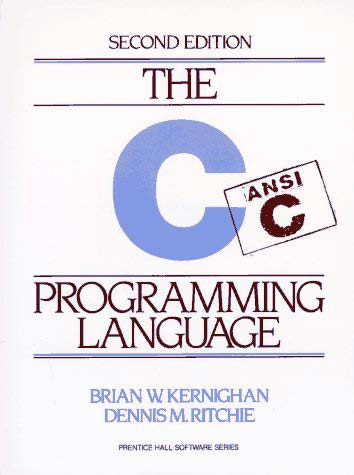
1
2
Preface ........................................................................................................................................ 6
Preface to the first edition .......................................................................................................... 8
Chapter 1 - A Tutorial Introduction ........................................................................................... 9
1.1 Getting Started.................................................................................................................. 9
1.2 Variables and Arithmetic Expressions ........................................................................... 11
1.3 The for statement............................................................................................................ 16
1.4 Symbolic Constants........................................................................................................ 17
1.5 Character Input and Output ............................................................................................ 18
1.5.1 File Copying............................................................................................................ 18
1.5.2 Character Counting ................................................................................................. 20
1.5.3 Line Counting.......................................................................................................... 21
1.5.4 Word Counting........................................................................................................ 22
1.6 Arrays ............................................................................................................................. 23
1.7 Functions ........................................................................................................................ 25
1.8 Arguments - Call by Value............................................................................................. 28
1.9 Character Arrays ............................................................................................................ 29
1.10 External Variables and Scope ...................................................................................... 31
Chapter 2 - Types, Operators and Expressions ........................................................................ 35
2.1 Variable Names .............................................................................................................. 35
2.2 Data Types and Sizes ..................................................................................................... 35
2.3 Constants ........................................................................................................................ 36
2.4 Declarations.................................................................................................................... 39
2.5 Arithmetic Operators...................................................................................................... 40
2.6 Relational and Logical Operators................................................................................... 40
2.7 Type Conversions........................................................................................................... 41
2.8 Increment and Decrement Operators.............................................................................. 44
2.9 Bitwise Operators........................................................................................................... 46
2.10 Assignment Operators and Expressions....................................................................... 47
2.11 Conditional Expressions............................................................................................... 49
2.12 Precedence and Order of Evaluation ............................................................................ 49
Chapter 3 - Control Flow ......................................................................................................... 52
3.1 Statements and Blocks ................................................................................................... 52
3.2 If-Else ............................................................................................................................. 52
3.3 Else-If ............................................................................................................................. 53
3.4 Switch............................................................................................................................. 54
3.5 Loops - While and For ................................................................................................... 56
3.6 Loops - Do-While........................................................................................................... 58
3.7 Break and Continue ........................................................................................................ 59
3.8 Goto and labels............................................................................................................... 60
Chapter 4 - Functions and Program Structure.......................................................................... 62
4.1 Basics of Functions ........................................................................................................ 62
4.2 Functions Returning Non-integers ................................................................................. 65
4.3 External Variables .......................................................................................................... 67
4.4 Scope Rules .................................................................................................................... 72
4.5 Header Files.................................................................................................................... 73
4.6 Static Variables .............................................................................................................. 75
4.7 Register Variables .......................................................................................................... 75
4.8 Block Structure............................................................................................................... 76
4.9 Initialization ................................................................................................................... 76
4.10 Recursion...................................................................................................................... 78
4.11 The C Preprocessor ...................................................................................................... 79
3
4.11.1 File Inclusion......................................................................................................... 79
4.11.2 Macro Substitution ................................................................................................ 80
4.11.3 Conditional Inclusion ............................................................................................ 82
Chapter 5 - Pointers and Arrays ............................................................................................... 83
5.1 Pointers and Addresses................................................................................................... 83
5.2 Pointers and Function Arguments .................................................................................. 84
5.3 Pointers and Arrays ........................................................................................................ 87
5.4 Address Arithmetic ........................................................................................................ 90
5.5 Character Pointers and Functions................................................................................... 93
5.6 Pointer Arrays; Pointers to Pointers ............................................................................... 96
5.7 Multi-dimensional Arrays .............................................................................................. 99
5.8 Initialization of Pointer Arrays..................................................................................... 101
5.9 Pointers vs. Multi-dimensional Arrays......................................................................... 101
5.10 Command-line Arguments ......................................................................................... 102
5.11 Pointers to Functions .................................................................................................. 106
5.12 Complicated Declarations .......................................................................................... 108
Chapter 6 - Structures............................................................................................................. 114
6.1 Basics of Structures...................................................................................................... 114
6.2 Structures and Functions .............................................................................................. 116
6.3 Arrays of Structures ..................................................................................................... 118
6.4 Pointers to Structures ................................................................................................... 122
6.5 Self-referential Structures ............................................................................................ 124
6.6 Table Lookup ............................................................................................................... 127
6.7 Typedef......................................................................................................................... 129
6.8 Unions .......................................................................................................................... 131
6.9 Bit-fields....................................................................................................................... 132
Chapter 7 - Input and Output.................................................................................................. 135
7.1 Standard Input and Output ........................................................................................... 135
7.2 Formatted Output - printf ............................................................................................. 137
7.3 Variable-length Argument Lists................................................................................... 138
7.4 Formatted Input - Scanf................................................................................................ 140
7.5 File Access ................................................................................................................... 142
7.6 Error Handling - Stderr and Exit .................................................................................. 145
7.7 Line Input and Output .................................................................................................. 146
7.8 Miscellaneous Functions .............................................................................................. 147
7.8.1 String Operations................................................................................................... 147
7.8.2 Character Class Testing and Conversion .............................................................. 148
7.8.3 Ungetc ................................................................................................................... 148
7.8.4 Command Execution ............................................................................................. 148
7.8.5 Storage Management............................................................................................. 148
7.8.6 Mathematical Functions ........................................................................................ 149
7.8.7 Random Number generation ................................................................................. 149
Chapter 8 - The UNIX System Interface................................................................................ 151
8.1 File Descriptors ............................................................................................................ 151
8.2 Low Level I/O - Read and Write.................................................................................. 152
8.3 Open, Creat, Close, Unlink .......................................................................................... 153
8.4 Random Access - Lseek ............................................................................................... 155
8.5 Example - An implementation of Fopen and Getc....................................................... 156
8.6 Example - Listing Directories ...................................................................................... 159
8.7 Example - A Storage Allocator .................................................................................... 163
Appendix A - Reference Manual ........................................................................................... 168
A.1 Introduction ................................................................................................................. 168
4
A.2 Lexical Conventions.................................................................................................... 168
A.2.1 Tokens .................................................................................................................. 168
A.2.2 Comments............................................................................................................. 168
A.2.3 Identifiers.............................................................................................................. 168
A.2.4 Keywords.............................................................................................................. 169
A.2.5 Constants .............................................................................................................. 169
A.2.6 String Literals ....................................................................................................... 171
A.3 Syntax Notation........................................................................................................... 171
A.4 Meaning of Identifiers ................................................................................................. 171
A.4.1 Storage Class ........................................................................................................ 171
A.4.2 Basic Types .......................................................................................................... 172
A.4.3 Derived types........................................................................................................ 173
A.4.4 Type Qualifiers..................................................................................................... 173
A.5 Objects and Lvalues .................................................................................................... 173
A.6 Conversions ................................................................................................................. 173
A.6.1 Integral Promotion................................................................................................ 174
A.6.2 Integral Conversions............................................................................................. 174
A.6.3 Integer and Floating.............................................................................................. 174
A.6.4 Floating Types ...................................................................................................... 174
A.6.5 Arithmetic Conversions........................................................................................ 174
A.6.6 Pointers and Integers ............................................................................................ 175
A.6.7 Void ...................................................................................................................... 176
A.6.8 Pointers to Void.................................................................................................... 176
A.7 Expressions.................................................................................................................. 176
A.7.1 Pointer Conversion ............................................................................................... 177
A.7.2 Primary Expressions............................................................................................. 177
A.7.3 Postfix Expressions .............................................................................................. 177
A.7.4 Unary Operators ................................................................................................... 179
A.7.5 Casts ..................................................................................................................... 181
A.7.6 Multiplicative Operators....................................................................................... 181
A.7.7 Additive Operators ............................................................................................... 182
A.7.8 Shift Operators ..................................................................................................... 182
A.7.9 Relational Operators............................................................................................. 183
A.7.10 Equality Operators.............................................................................................. 183
A.7.11 Bitwise AND Operator ....................................................................................... 183
A.7.12 Bitwise Exclusive OR Operator ......................................................................... 184
A.7.13 Bitwise Inclusive OR Operator .......................................................................... 184
A.7.14 Logical AND Operator ....................................................................................... 184
A.7.15 Logical OR Operator .......................................................................................... 184
A.7.16 Conditional Operator.......................................................................................... 184
A.7.17 Assignment Expressions..................................................................................... 185
A.7.18 Comma Operator ................................................................................................ 185
A.7.19 Constant Expressions ......................................................................................... 186
A.8 Declarations................................................................................................................. 186
A.8.1 Storage Class Specifiers ....................................................................................... 187
A.8.2 Type Specifiers..................................................................................................... 188
A.8.3 Structure and Union Declarations ........................................................................ 188
A.8.4 Enumerations........................................................................................................ 191
A.8.5 Declarators............................................................................................................ 192
A.8.6 Meaning of Declarators ........................................................................................ 193
A.8.7 Initialization.......................................................................................................... 196
A.8.8 Type names........................................................................................................... 198
5
A.8.9 Typedef................................................................................................................. 199
A.8.10 Type Equivalence ............................................................................................... 199
A.9 Statements ................................................................................................................... 199
A.9.1 Labeled Statements............................................................................................... 200
A.9.2 Expression Statement ........................................................................................... 200
A.9.3 Compound Statement ........................................................................................... 200
A.9.4 Selection Statements............................................................................................. 201
A.9.5 Iteration Statements .............................................................................................. 201
A.9.6 Jump statements ................................................................................................... 202
A.10 External Declarations ................................................................................................ 203
A.10.1 Function Definitions........................................................................................... 203
A.10.2 External Declarations ......................................................................................... 204
A.11 Scope and Linkage .................................................................................................... 205
A.11.1 Lexical Scope ..................................................................................................... 205
A.11.2 Linkage ............................................................................................................... 206
A.12 Preprocessing............................................................................................................. 206
A.12.1 Trigraph Sequences ............................................................................................ 207
A.12.2 Line Splicing ...................................................................................................... 207
A.12.3 Macro Definition and Expansion ....................................................................... 207
A.12.4 File Inclusion...................................................................................................... 209
A.12.5 Conditional Compilation .................................................................................... 210
A.12.6 Line Control ....................................................................................................... 211
A.12.7 Error Generation................................................................................................. 211
A.12.8 Pragmas .............................................................................................................. 212
A.12.9 Null directive...................................................................................................... 212
A.12.10 Predefined names ............................................................................................. 212
A.13 Grammar.................................................................................................................... 212
Appendix B - Standard Library.............................................................................................. 220
B.1 Input and Output: <stdio.h> ........................................................................................ 220
B.1.1 File Operations ..................................................................................................... 220
B.1.2 Formatted Output.................................................................................................. 222
B.1.3 Formatted Input .................................................................................................... 223
B.1.4 Character Input and Output Functions.................................................................. 225
B.1.5 Direct Input and Output Functions ....................................................................... 225
B.1.6 File Positioning Functions .................................................................................... 226
B.1.7 Error Functions ..................................................................................................... 226
B.2 Character Class Tests: <ctype.h> ................................................................................ 226
B.3 String Functions: <string.h> ........................................................................................ 227
B.4 Mathematical Functions: <math.h>............................................................................. 228
B.5 Utility Functions: <stdlib.h> ....................................................................................... 229
B.6 Diagnostics: <assert.h>................................................................................................ 231
B.7 Variable Argument Lists: <stdarg.h> .......................................................................... 231
B.8 Non-local Jumps: <setjmp.h>...................................................................................... 232
B.9 Signals: <signal.h> ...................................................................................................... 232
B.10 Date and Time Functions: <time.h> .......................................................................... 233
B.11 Implementation-defined Limits: <limits.h> and <float.h>
............................................................................................................................................ 234
Appendix C - Summary of Changes ...................................................................................... 236
6
Preface
The computing world has undergone a revolution since the publication of The C
Programming Language in 1978. Big computers are much bigger, and personal computers
have capabilities that rival mainframes of a decade ago. During this time, C has changed too,
although only modestly, and it has spread far beyond its origins as the language of the UNIX
operating system.
The growing popularity of C, the changes in the language over the years, and the creation of
compilers by groups not involved in its design, combined to demonstrate a need for a more
precise and more contemporary definition of the language than the first edition of this book
provided. In 1983, the American National Standards Institute (ANSI) established a committee
whose goal was to produce ``an unambiguous and machine-independent definition of the
language C'', while still retaining its spirit. The result is the ANSI standard for C.
The standard formalizes constructions that were hinted but not described in the first edition,
particularly structure assignment and enumerations. It provides a new form of function
declaration that permits cross-checking of definition with use. It specifies a standard library,
with an extensive set of functions for performing input and output, memory management,
string manipulation, and similar tasks. It makes precise the behavior of features that were not
spelled out in the original definition, and at the same time states explicitly which aspects of
the language remain machine-dependent.
This Second Edition of The C Programming Language describes C as defined by the ANSI
standard. Although we have noted the places where the language has evolved, we have chosen
to write exclusively in the new form. For the most part, this makes no significant difference;
the most visible change is the new form of function declaration and definition. Modern
compilers already support most features of the standard.
We have tried to retain the brevity of the first edition. C is not a big language, and it is not
well served by a big book. We have improved the exposition of critical features, such as
pointers, that are central to C programming. We have refined the original examples, and have
added new examples in several chapters. For instance, the treatment of complicated
declarations is augmented by programs that convert declarations into words and vice versa.
As before, all examples have been tested directly from the text, which is in machine-readable
form.
Appendix A, the reference manual, is not the standard, but our attempt to convey the
essentials of the standard in a smaller space. It is meant for easy comprehension by
programmers, but not as a definition for compiler writers -- that role properly belongs to the
standard itself. Appendix B is a summary of the facilities of the standard library. It too is
meant for reference by programmers, not implementers. Appendix C is a concise summary of
the changes from the original version.
As we said in the preface to the first edition, C ``wears well as one's experience with it
grows''. With a decade more experience, we still feel that way. We hope that this book will
help you learn C and use it well.
7
We are deeply indebted to friends who helped us to produce this second edition. Jon Bently,
Doug Gwyn, Doug McIlroy, Peter Nelson, and Rob Pike gave us perceptive comments on
almost every page of draft manuscripts. We are grateful for careful reading by Al Aho, Dennis
Allison, Joe Campbell, G.R. Emlin, Karen Fortgang, Allen Holub, Andrew Hume, Dave
Kristol, John Linderman, Dave Prosser, Gene Spafford, and Chris van Wyk. We also received
helpful suggestions from Bill Cheswick, Mark Kernighan, Andy Koenig, Robin Lake, Tom
London, Jim Reeds, Clovis Tondo, and Peter Weinberger. Dave Prosser answered many
detailed questions about the ANSI standard. We used Bjarne Stroustrup's C++ translator
extensively for local testing of our programs, and Dave Kristol provided us with an ANSI C
compiler for final testing. Rich Drechsler helped greatly with typesetting.
Our sincere thanks to all.
Brian W. Kernighan
Dennis M. Ritchie
8
Preface to the first edition
C is a general-purpose programming language with features economy of expression, modern
flow control and data structures, and a rich set of operators. C is not a ``very high level''
language, nor a ``big'' one, and is not specialized to any particular area of application. But its
absence of restrictions and its generality make it more convenient and effective for many
tasks than supposedly more powerful languages.
C was originally designed for and implemented on the UNIX operating system on the DEC
PDP-11, by Dennis Ritchie. The operating system, the C compiler, and essentially all UNIX
applications programs (including all of the software used to prepare this book) are written in
C. Production compilers also exist for several other machines, including the IBM System/370,
the Honeywell 6000, and the Interdata 8/32. C is not tied to any particular hardware or
system, however, and it is easy to write programs that will run without change on any
machine that supports C.
This book is meant to help the reader learn how to program in C. It contains a tutorial
introduction to get new users started as soon as possible, separate chapters on each major
feature, and a reference manual. Most of the treatment is based on reading, writing and
revising examples, rather than on mere statements of rules. For the most part, the examples
are complete, real programs rather than isolated fragments. All examples have been tested
directly from the text, which is in machine-readable form. Besides showing how to make
effective use of the language, we have also tried where possible to illustrate useful algorithms
and principles of good style and sound design.
The book is not an introductory programming manual; it assumes some familiarity with basic
programming concepts like variables, assignment statements, loops, and functions.
Nonetheless, a novice programmer should be able to read along and pick up the language,
although access to more knowledgeable colleague will help.
In our experience, C has proven to be a pleasant, expressive and versatile language for a wide
variety of programs. It is easy to learn, and it wears well as on's experience with it grows. We
hope that this book will help you to use it well.
The thoughtful criticisms and suggestions of many friends and colleagues have added greatly
to this book and to our pleasure in writing it. In particular, Mike Bianchi, Jim Blue, Stu
Feldman, Doug McIlroy Bill Roome, Bob Rosin and Larry Rosler all read multiple volumes
with care. We are also indebted to Al Aho, Steve Bourne, Dan Dvorak, Chuck Haley, Debbie
Haley, Marion Harris, Rick Holt, Steve Johnson, John Mashey, Bob Mitze, Ralph Muha,
Peter Nelson, Elliot Pinson, Bill Plauger, Jerry Spivack, Ken Thompson, and Peter
Weinberger for helpful comments at various stages, and to Mile Lesk and Joe Ossanna for
invaluable assistance with typesetting.
Brian W. Kernighan
Dennis M. Ritchie
9
Chapter 1 - A Tutorial Introduction
Let us begin with a quick introduction in C. Our aim is to show the essential elements of the
language in real programs, but without getting bogged down in details, rules, and exceptions.
At this point, we are not trying to be complete or even precise (save that the examples are
meant to be correct). We want to get you as quickly as possible to the point where you can
write useful programs, and to do that we have to concentrate on the basics: variables and
constants, arithmetic, control flow, functions, and the rudiments of input and output. We are
intentionally leaving out of this chapter features of C that are important for writing bigger
programs. These include pointers, structures, most of C's rich set of operators, several control-
flow statements, and the standard library.
This approach and its drawbacks. Most notable is that the complete story on any particular
feature is not found here, and the tutorial, by being brief, may also be misleading. And
because the examples do not use the full power of C, they are not as concise and elegant as
they might be. We have tried to minimize these effects, but be warned. Another drawback is
that later chapters will necessarily repeat some of this chapter. We hope that the repetition
will help you more than it annoys.
In any case, experienced programmers should be able to extrapolate from the material in this
chapter to their own programming needs. Beginners should supplement it by writing small,
similar programs of their own. Both groups can use it as a framework on which to hang the
more detailed descriptions that begin in Chapter 2.
1.1 Getting Started
The only way to learn a new programming language is by writing programs in it. The first
program to write is the same for all languages:
Print the words
hello, world
This is a big hurdle; to leap over it you have to be able to create the program text somewhere,
compile it successfully, load it, run it, and find out where your output went. With these
mechanical details mastered, everything else is comparatively easy.
In C, the program to print ``hello, world'' is
#include <stdio.h>
main()
{
printf("hello, world\n");
}
Just how to run this program depends on the system you are using. As a specific example, on
the UNIX operating system you must create the program in a file whose name ends in ``.c'',
such as hello.c, then compile it with the command
cc hello.c
10
If you haven't botched anything, such as omitting a character or misspelling something, the
compilation will proceed silently, and make an executable file called a.out. If you run a.out
by typing the command
a.out
it will print
hello, world
On other systems, the rules will be different; check with a local expert.
Now, for some explanations about the program itself. A C program, whatever its size, consists
of functions and variables. A function contains statements that specify the computing
operations to be done, and variables store values used during the computation. C functions are
like the subroutines and functions in Fortran or the procedures and functions of Pascal. Our
example is a function named main. Normally you are at liberty to give functions whatever
names you like, but ``main'' is special - your program begins executing at the beginning of
main. This means that every program must have a main somewhere.
main will usually call other functions to help perform its job, some that you wrote, and others
from libraries that are provided for you. The first line of the program,
#include <stdio.h>
tells the compiler to include information about the standard input/output library; the line
appears at the beginning of many C source files. The standard library is described in Chapter
7 and Appendix B.
One method of communicating data between functions is for the calling function to provide a
list of values, called arguments, to the function it calls. The parentheses after the function
name surround the argument list. In this example, main is defined to be a function that expects
no arguments, which is indicated by the empty list ( ).
#include <stdio.h> include information about standard
library
main() define a function called main
that received no argument values
{ statements of main are enclosed in braces
printf("hello, world\n"); main calls library function printf
to print this sequence of characters
} \n represents the newline character
The first C program
The statements of a function are enclosed in braces { }. The function main contains only one
statement,
printf("hello, world\n");
11
A function is called by naming it, followed by a parenthesized list of arguments, so this calls
the function printf with the argument "hello, world\n". printf is a library function that
prints output, in this case the string of characters between the quotes.
A sequence of characters in double quotes, like "hello, world\n", is called a character
string or string constant. For the moment our only use of character strings will be as
arguments for printf and other functions.
The sequence \n in the string is C notation for the newline character, which when printed
advances the output to the left margin on the next line. If you leave out the \n (a worthwhile
experiment), you will find that there is no line advance after the output is printed. You must
use \n to include a newline character in the printf argument; if you try something like
printf("hello, world
");
the C compiler will produce an error message.
printf never supplies a newline character automatically, so several calls may be used to
build up an output line in stages. Our first program could just as well have been written
#include <stdio.h>
main()
{
printf("hello, ");
printf("world");
printf("\n");
}
to produce identical output.
Notice that \n represents only a single character. An escape sequence like \n provides a
general and extensible mechanism for representing hard-to-type or invisible characters.
Among the others that C provides are \t for tab, \b for backspace, \" for the double quote
and \\ for the backslash itself. There is a complete list in Section 2.3.
Exercise 1-1. Run the ``hello, world'' program on your system. Experiment with leaving
out parts of the program, to see what error messages you get.
Exercise 1-2. Experiment to find out what happens when prints's argument string contains
\c, where c is some character not listed above.
1.2 Variables and Arithmetic Expressions
The next program uses the formula oC=(5/9)(oF-32) to print the following table of Fahrenheit
temperatures and their centigrade or Celsius equivalents:
12
1 -17
20 -6
40 4
60 15
80 26
100 37
120 48
140 60
160 71
180 82
200 93
220 104
240 115
260 126
280 137
300 148
The program itself still consists of the definition of a single function named main. It is longer
than the one that printed ``hello, world'', but not complicated. It introduces several new
ideas, including comments, declarations, variables, arithmetic expressions, loops , and
formatted output.
#include <stdio.h>
/* print Fahrenheit-Celsius table
for fahr = 0, 20, ..., 300 */
main()
{
int fahr, celsius;
int lower, upper, step;
lower = 0; /* lower limit of temperature scale */
upper = 300; /* upper limit */
step = 20; /* step size */
fahr = lower;
while (fahr <= upper) {
celsius = 5 * (fahr-32) / 9;
printf("%d\t%d\n", fahr, celsius);
fahr = fahr + step;
}
}
The two lines
/* print Fahrenheit-Celsius table
for fahr = 0, 20, ..., 300 */
are a comment, which in this case explains briefly what the program does. Any characters
between /* and */ are ignored by the compiler; they may be used freely to make a program
easier to understand. Comments may appear anywhere where a blank, tab or newline can.
In C, all variables must be declared before they are used, usually at the beginning of the
function before any executable statements. A declaration announces the properties of
variables; it consists of a name and a list of variables, such as
int fahr, celsius;
int lower, upper, step;
The type int means that the variables listed are integers; by contrast with float, which
means floating point, i.e., numbers that may have a fractional part. The range of both int and
float depends on the machine you are using; 16-bits ints, which lie between -32768 and
13
+32767, are common, as are 32-bit ints. A float number is typically a 32-bit quantity, with
at least six significant digits and magnitude generally between about 10-38 and 1038.
C provides several other data types besides int and float, including:
char character - a single byte
short short integer
long long integer
double double-precision floating point
The size of these objects is also machine-dependent. There are also arrays, structures and
unions of these basic types, pointers to them, and functions that return them, all of which we
will meet in due course.
Computation in the temperature conversion program begins with the assignment statements
lower = 0;
upper = 300;
step = 20;
which set the variables to their initial values. Individual statements are terminated by
semicolons.
Each line of the table is computed the same way, so we use a loop that repeats once per output
line; this is the purpose of the while loop
while (fahr <= upper) {
...
}
The while loop operates as follows: The condition in parentheses is tested. If it is true (fahr
is less than or equal to upper), the body of the loop (the three statements enclosed in braces)
is executed. Then the condition is re-tested, and if true, the body is executed again. When the
test becomes false (fahr exceeds upper) the loop ends, and execution continues at the
statement that follows the loop. There are no further statements in this program, so it
terminates.
The body of a while can be one or more statements enclosed in braces, as in the temperature
converter, or a single statement without braces, as in
while (i < j)
i = 2 * i;
In either case, we will always indent the statements controlled by the while by one tab stop
(which we have shown as four spaces) so you can see at a glance which statements are inside
the loop. The indentation emphasizes the logical structure of the program. Although C
compilers do not care about how a program looks, proper indentation and spacing are critical
in making programs easy for people to read. We recommend writing only one statement per
line, and using blanks around operators to clarify grouping. The position of braces is less
important, although people hold passionate beliefs. We have chosen one of several popular
styles. Pick a style that suits you, then use it consistently.
14
Most of the work gets done in the body of the loop. The Celsius temperature is computed and
assigned to the variable celsius by the statement
celsius = 5 * (fahr-32) / 9;
The reason for multiplying by 5 and dividing by 9 instead of just multiplying by 5/9 is that in
C, as in many other languages, integer division truncates: any fractional part is discarded.
Since 5 and 9 are integers. 5/9 would be truncated to zero and so all the Celsius temperatures
would be reported as zero.
This example also shows a bit more of how printf works. printf is a general-purpose
output formatting function, which we will describe in detail in Chapter 7. Its first argument is
a string of characters to be printed, with each % indicating where one of the other (second,
third, ...) arguments is to be substituted, and in what form it is to be printed. For instance, %d
specifies an integer argument, so the statement
printf("%d\t%d\n", fahr, celsius);
causes the values of the two integers fahr and celsius to be printed, with a tab (\t) between
them.
Each % construction in the first argument of printf is paired with the corresponding second
argument, third argument, etc.; they must match up properly by number and type, or you will
get wrong answers.
By the way, printf is not part of the C language; there is no input or output defined in C
itself. printf is just a useful function from the standard library of functions that are normally
accessible to C programs. The behaviour of printf is defined in the ANSI standard, however,
so its properties should be the same with any compiler and library that conforms to the
standard.
In order to concentrate on C itself, we don't talk much about input and output until chapter 7.
In particular, we will defer formatted input until then. If you have to input numbers, read the
discussion of the function scanf in Section 7.4. scanf is like printf, except that it reads
input instead of writing output.
There are a couple of problems with the temperature conversion program. The simpler one is
that the output isn't very pretty because the numbers are not right-justified. That's easy to fix;
if we augment each %d in the printf statement with a width, the numbers printed will be
right-justified in their fields. For instance, we might say
printf("%3d %6d\n", fahr, celsius);
to print the first number of each line in a field three digits wide, and the second in a field six
digits wide, like this:
0 -17
20 -6
40 4
60 15
80 26
100 37
...
15
The more serious problem is that because we have used integer arithmetic, the Celsius
temperatures are not very accurate; for instance, 0oF is actually about -17.8oC, not -17. To get
more accurate answers, we should use floating-point arithmetic instead of integer. This
requires some changes in the program. Here is the second version:
#include <stdio.h>
/* print Fahrenheit-Celsius table
for fahr = 0, 20, ..., 300; floating-point version */
main()
{
float fahr, celsius;
float lower, upper, step;
lower = 0;
/* lower limit of temperatuire scale */
upper = 300; /* upper limit */
step = 20;
/* step size */
fahr = lower;
while (fahr <= upper) {
celsius = (5.0/9.0) * (fahr-32.0);
printf("%3.0f %6.1f\n", fahr, celsius);
fahr = fahr + step;
}
}
This is much the same as before, except that fahr and celsius are declared to be float and
the formula for conversion is written in a more natural way. We were unable to use 5/9 in the
previous version because integer division would truncate it to zero. A decimal point in a
constant indicates that it is floating point, however, so 5.0/9.0 is not truncated because it is
the ratio of two floating-point values.
If an arithmetic operator has integer operands, an integer operation is performed. If an
arithmetic operator has one floating-point operand and one integer operand, however, the
integer will be converted to floating point before the operation is done. If we had written
(fahr-32), the 32 would be automatically converted to floating point. Nevertheless, writing
floating-point constants with explicit decimal points even when they have integral values
emphasizes their floating-point nature for human readers.
The detailed rules for when integers are converted to floating point are in Chapter 2. For now,
notice that the assignment
fahr = lower;
and the test
while (fahr <= upper)
also work in the natural way - the int is converted to float before the operation is done.
The printf conversion specification %3.0f says that a floating-point number (here fahr) is
to be printed at least three characters wide, with no decimal point and no fraction digits.
%6.1f describes another number (celsius) that is to be printed at least six characters wide,
with 1 digit after the decimal point. The output looks like this:
0 -17.8
20 -6.7
40 4.4
...
16
Width and precision may be omitted from a specification: %6f says that the number is to be at
least six characters wide; %.2f specifies two characters after the decimal point, but the width
is not constrained; and %f merely says to print the number as floating point.
%d
print as decimal integer
%6d
print as decimal integer, at least 6 characters wide
%f
print as floating point
%6f
print as floating point, at least 6 characters wide
%.2f
print as floating point, 2 characters after decimal point
%6.2f
print as floating point, at least 6 wide and 2 after decimal point
Among others, printf also recognizes %o for octal, %x for hexadecimal, %c for character, %s
for character string and %% for itself.
Exercise 1-3. Modify the temperature conversion program to print a heading above the table.
Exercise 1-4. Write a program to print the corresponding Celsius to Fahrenheit table.
1.3 The for statement
There are plenty of different ways to write a program for a particular task. Let's try a variation
on the temperature converter.
#include <stdio.h>
/* print Fahrenheit-Celsius table */
main()
{
int fahr;
for (fahr = 0; fahr <= 300; fahr = fahr + 20)
printf("%3d %6.1f\n", fahr, (5.0/9.0)*(fahr-32));
}
This produces the same answers, but it certainly looks different. One major change is the
elimination of most of the variables; only fahr remains, and we have made it an int. The
lower and upper limits and the step size appear only as constants in the for statement, itself a
new construction, and the expression that computes the Celsius temperature now appears as
the third argument of printf instead of a separate assignment statement.
This last change is an instance of a general rule - in any context where it is permissible to use
the value of some type, you can use a more complicated expression of that type. Since the
third argument of printf must be a floating-point value to match the %6.1f, any floating-
point expression can occur here.
The for statement is a loop, a generalization of the while. If you compare it to the earlier
while, its operation should be clear. Within the parentheses, there are three parts, separated
by semicolons. The first part, the initialization
fahr = 0
17
is done once, before the loop proper is entered. The second part is the
test or condition that controls the loop:
fahr <= 300
This condition is evaluated; if it is true, the body of the loop (here a single ptintf) is
executed. Then the increment step
fahr = fahr + 20
is executed, and the condition re-evaluated. The loop terminates if the condition has become
false. As with the while, the body of the loop can be a single statement or a group of
statements enclosed in braces. The initialization, condition and increment can be any
expressions.
The choice between while and for is arbitrary, based on which seems clearer. The for is
usually appropriate for loops in which the initialization and increment are single statements
and logically related, since it is more compact than while and it keeps the loop control
statements together in one place.
Exercise 1-5. Modify the temperature conversion program to print the table in reverse order,
that is, from 300 degrees to 0.
1.4 Symbolic Constants
A final observation before we leave temperature conversion forever. It's bad practice to bury
``magic numbers'' like 300 and 20 in a program; they convey little information to someone
who might have to read the program later, and they are hard to change in a systematic way.
One way to deal with magic numbers is to give them meaningful names. A #define line
defines a symbolic name or symbolic constant to be a particular string of characters:
#define name replacement list
Thereafter, any occurrence of name (not in quotes and not part of another name) will be
replaced by the corresponding replacement text. The name has the same form as a variable
name: a sequence of letters and digits that begins with a letter. The replacement text can be
any sequence of characters; it is not limited to numbers.
#include <stdio.h>
#define LOWER 0 /* lower limit of table */
#define UPPER 300 /* upper limit */
#define STEP 20 /* step size */
/* print Fahrenheit-Celsius table */
main()
{
int fahr;
for (fahr = LOWER; fahr <= UPPER; fahr = fahr + STEP)
printf("%3d %6.1f\n", fahr, (5.0/9.0)*(fahr-32));
}
The quantities LOWER, UPPER and STEP are symbolic constants, not variables, so they do not
appear in declarations. Symbolic constant names are conventionally written in upper case so
they can ber readily distinguished from lower case variable names. Notice that there is no
semicolon at the end of a #define line.
18
1.5 Character Input and Output
We are going to consider a family of related programs for processing character data. You will
find that many programs are just expanded versions of the prototypes that we discuss here.
The model of input and output supported by the standard library is very simple. Text input or
output, regardless of where it originates or where it goes to, is dealt with as streams of
characters. A text stream is a sequence of characters divided into lines; each line consists of
zero or more characters followed by a newline character. It is the responsibility of the library
to make each input or output stream confirm this model; the C programmer using the library
need not worry about how lines are represented outside the program.
The standard library provides several functions for reading or writing one character at a time,
of which getchar and putchar are the simplest. Each time it is called, getchar reads the
next input character from a text stream and returns that as its value. That is, after
c = getchar();
the variable c contains the next character of input. The characters normally come from the
keyboard; input from files is discussed in Chapter 7.
The function putchar prints a character each time it is called:
putchar(c);
prints the contents of the integer variable c as a character, usually on the screen. Calls to
putchar and printf may be interleaved; the output will appear in the order in which the calls
are made.
1.5.1 File Copying
Given getchar and putchar, you can write a surprising amount of useful code without
knowing anything more about input and output. The simplest example is a program that
copies its input to its output one character at a time:
read a character
while (charater is not end-of-file indicator)
output the character just read
read a character
Converting this into C gives:
#include <stdio.h>
/* copy input to output; 1st version */
main()
{
int c;
c = getchar();
while (c != EOF) {
putchar(c);
c = getchar();
}
}
The relational operator != means ``not equal to''.
19
What appears to be a character on the keyboard or screen is of course, like everything else,
stored internally just as a bit pattern. The type char is specifically meant for storing such
character data, but any integer type can be used. We used int for a subtle but important
reason.
The problem is distinguishing the end of input from valid data. The solution is that getchar
returns a distinctive value when there is no more input, a value that cannot be confused with
any real character. This value is called EOF, for ``end of file''. We must declare c to be a type
big enough to hold any value that getchar returns. We can't use char since c must be big
enough to hold EOF in addition to any possible char. Therefore we use int.
EOF is an integer defined in <stdio.h>, but the specific numeric value doesn't matter as long as
it is not the same as any char value. By using the symbolic constant, we are assured that
nothing in the program depends on the specific numeric value.
The program for copying would be written more concisely by experienced C programmers. In
C, any assignment, such as
c = getchar();
is an expression and has a value, which is the value of the left hand side after the assignment.
This means that a assignment can appear as part of a larger expression. If the assignment of a
character to c is put inside the test part of a while loop, the copy program can be written this
way:
#include <stdio.h>
/* copy input to output; 2nd version */
main()
{
int c;
while ((c = getchar()) != EOF)
putchar(c);
}
The while gets a character, assigns it to c, and then tests whether the character was the end-
of-file signal. If it was not, the body of the while is executed, printing the character. The
while then repeats. When the end of the input is finally reached, the while terminates and so
does main.
This version centralizes the input - there is now only one reference to getchar - and shrinks
the program. The resulting program is more compact, and, once the idiom is mastered, easier
to read. You'll see this style often. (It's possible to get carried away and create impenetrable
code, however, a tendency that we will try to curb.)
The parentheses around the assignment, within the condition are necessary. The precedence
of != is higher than that of =, which means that in the absence of parentheses the relational
test != would be done before the assignment =. So the statement
c = getchar() != EOF
is equivalent to
c = (getchar() != EOF)
20
This has the undesired effect of setting c to 0 or 1, depending on whether or not the call of
getchar returned end of file. (More on this in Chapter 2.)
Exercsise 1-6. Verify that the expression getchar() != EOF is 0 or 1.
Exercise 1-7. Write a program to print the value of EOF.
1.5.2 Character Counting
The next program counts characters; it is similar to the copy program.
#include <stdio.h>
/* count characters in input; 1st version */
main()
{
long nc;
nc = 0;
while (getchar() != EOF)
++nc;
printf("%ld\n", nc);
}
The statement
++nc;
presents a new operator, ++, which means increment by one. You could instead write nc = nc
+ 1 but ++nc is more concise and often more efficient. There is a corresponding operator --
to decrement by 1. The operators ++ and -- can be either prefix operators (++nc) or postfix
operators (nc++); these two forms have different values in expressions, as will be shown in
Chapter 2, but ++nc and nc++ both increment nc. For the moment we will will stick to the
prefix form.
The character counting program accumulates its count in a long variable instead of an int.
long integers are at least 32 bits. Although on some machines, int and long are the same
size, on others an int is 16 bits, with a maximum value of 32767, and it would take relatively
little input to overflow an int counter. The conversion specification %ld tells printf that the
corresponding argument is a long integer.
It may be possible to cope with even bigger numbers by using a double (double precision
float). We will also use a for statement instead of a while, to illustrate another way to write
the loop.
#include <stdio.h>
/* count characters in input; 2nd version */
main()
{
double nc;
for (nc = 0; gechar() != EOF; ++nc)
;
printf("%.0f\n", nc);
}
21
printf uses %f for both float and double; %.0f suppresses the printing of the decimal point
and the fraction part, which is zero.
The body of this for loop is empty, because all the work is done in the test and increment
parts. But the grammatical rules of C require that a for statement have a body. The isolated
semicolon, called a null statement, is there to satisfy that requirement. We put it on a separate
line to make it visible.
Before we leave the character counting program, observe that if the input contains no
characters, the while or for test fails on the very first call to getchar, and the program
produces zero, the right answer. This is important. One of the nice things about while and
for is that they test at the top of the loop, before proceeding with the body. If there is nothing
to do, nothing is done, even if that means never going through the loop body. Programs
should act intelligently when given zero-length input. The while and for statements help
ensure that programs do reasonable things with boundary conditions.
1.5.3 Line Counting
The next program counts input lines. As we mentioned above, the standard library ensures
that an input text stream appears as a sequence of lines, each terminated by a newline. Hence,
counting lines is just counting newlines:
#include <stdio.h>
/* count lines in input */
main()
{
int c, nl;
nl = 0;
while ((c = getchar()) != EOF)
if (c == '\n')
++nl;
printf("%d\n", nl);
}
The body of the while now consists of an if, which in turn controls the increment ++nl. The
if statement tests the parenthesized condition, and if the condition is true, executes the
statement (or group of statements in braces) that follows. We have again indented to show
what is controlled by what.
The double equals sign == is the C notation for ``is equal to'' (like Pascal's single = or
Fortran's .EQ.). This symbol is used to distinguish the equality test from the single = that C
uses for assignment. A word of caution: newcomers to C occasionally write = when they
mean ==. As we will see in Chapter 2, the result is usually a legal expression, so you will get
no warning.
A character written between single quotes represents an integer value equal to the numerical
value of the character in the machine's character set. This is called a character constant,
although it is just another way to write a small integer. So, for example, 'A' is a character
constant; in the ASCII character set its value is 65, the internal representation of the character
A. Of course, 'A' is to be preferred over 65: its meaning is obvious, and it is independent of a
particular character set.
22
The escape sequences used in string constants are also legal in character constants, so '\n'
stands for the value of the newline character, which is 10 in ASCII. You should note carefully
that '\n' is a single character, and in expressions is just an integer; on the other hand, '\n' is
a string constant that happens to contain only one character. The topic of strings versus
characters is discussed further in Chapter 2.
Exercise 1-8. Write a program to count blanks, tabs, and newlines.
Exercise 1-9. Write a program to copy its input to its output, replacing each string of one or
more blanks by a single blank.
Exercise 1-10. Write a program to copy its input to its output, replacing each tab by \t, each
backspace by \b, and each backslash by \\. This makes tabs and backspaces visible in an
unambiguous way.
1.5.4 Word Counting
The fourth in our series of useful programs counts lines, words, and characters, with the loose
definition that a word is any sequence of characters that does not contain a blank, tab or
newline. This is a bare-bones version of the UNIX program wc.
#include <stdio.h>
#define IN 1 /* inside a word */
#define OUT 0 /* outside a word */
/* count lines, words, and characters in input */
main()
{
int c, nl, nw, nc, state;
state = OUT;
nl = nw = nc = 0;
while ((c = getchar()) != EOF) {
++nc;
if (c == '\n')
++nl;
if (c == ' ' || c == '\n' || c = '\t')
state = OUT;
else if (state == OUT) {
state = IN;
++nw;
}
}
printf("%d %d %d\n", nl, nw, nc);
}
Every time the program encounters the first character of a word, it counts one more word. The
variable state records whether the program is currently in a word or not; initially it is ``not in
a word'', which is assigned the value OUT. We prefer the symbolic constants IN and OUT to the
literal values 1 and 0 because they make the program more readable. In a program as tiny as
this, it makes little difference, but in larger programs, the increase in clarity is well worth the
modest extra effort to write it this way from the beginning. You'll also find that it's easier to
make extensive changes in programs where magic numbers appear only as symbolic
constants.
23
The line
nl = nw = nc = 0;
sets all three variables to zero. This is not a special case, but a consequence of the fact that an
assignment is an expression with the value and assignments associated from right to left. It's
as if we had written
nl = (nw = (nc = 0));
The operator || means OR, so the line
if (c == ' ' || c == '\n' || c = '\t')
says ``if c is a blank or c is a newline or c is a tab''. (Recall that the escape sequence \t is a
visible representation of the tab character.) There is a corresponding operator && for AND; its
precedence is just higher than ||. Expressions connected by && or || are evaluated left to
right, and it is guaranteed that evaluation will stop as soon as the truth or falsehood is known.
If c is a blank, there is no need to test whether it is a newline or tab, so these tests are not
made. This isn't particularly important here, but is significant in more complicated situations,
as we will soon see.
The example also shows an else, which specifies an alternative action if the condition part of
an if statement is false. The general form is
if (expression)
statement1
else
statement2
One and only one of the two statements associated with an if-else is performed. If the
expression is true, statement1 is executed; if not, statement2 is executed. Each statement can
be a single statement or several in braces. In the word count program, the one after the else is
an if that controls two statements in braces.
Exercise 1-11. How would you test the word count program? What kinds of input are most
likely to uncover bugs if there are any?
Exercise 1-12. Write a program that prints its input one word per line.
1.6 Arrays
Let is write a program to count the number of occurrences of each digit, of white space
characters (blank, tab, newline), and of all other characters. This is artificial, but it permits us
to illustrate several aspects of C in one program.
There are twelve categories of input, so it is convenient to use an array to hold the number of
occurrences of each digit, rather than ten individual variables. Here is one version of the
program:
24
#include <stdio.h>
/* count digits, white space, others */
main()
{
int c, i, nwhite, nother;
int ndigit[10];
nwhite = nother = 0;
for (i = 0; i < 10; ++i)
ndigit[i] = 0;
while ((c = getchar()) != EOF)
if (c >= '0' && c <= '9')
++ndigit[c-'0'];
else if (c == ' ' || c == '\n' || c == '\t')
++nwhite;
else
++nother;
printf("digits =");
for (i = 0; i < 10; ++i)
printf(" %d", ndigit[i]);
printf(", white space = %d, other = %d\n",
nwhite, nother);
}
The output of this program on itself is
digits = 9 3 0 0 0 0 0 0 0 1, white space = 123, other = 345
The declaration
int ndigit[10];
declares ndigit to be an array of 10 integers. Array subscripts always start at zero in C, so
the elements are ndigit[0], ndigit[1], ..., ndigit[9]. This is reflected in the for
loops that initialize and print the array.
A subscript can be any integer expression, which includes integer variables like i, and integer
constants.
This particular program relies on the properties of the character representation of the digits.
For example, the test
if (c >= '0' && c <= '9')
determines whether the character in c is a digit. If it is, the numeric value of that digit is
c - '0'
This works only if '0', '1', ..., '9' have consecutive increasing values. Fortunately,
this is true for all character sets.
By definition, chars are just small integers, so char variables and constants are identical to
ints in arithmetic expressions. This is natural and convenient; for example c-'0' is an
integer expression with a value between 0 and 9 corresponding to the character '0' to '9'
stored in c, and thus a valid subscript for the array ndigit.
The decision as to whether a character is a digit, white space, or something else is made with
the sequence
25
if (c >= '0' && c <= '9')
++ndigit[c-'0'];
else if (c == ' ' || c == '\n' || c == '\t')
++nwhite;
else
++nother;
The pattern
if (condition1)
statement1
else if (condition2)
statement2
...
...
else
statementn
occurs frequently in programs as a way to express a multi-way decision. The conditions are
evaluated in order from the top until some condition is satisfied; at that point the
corresponding statement part is executed, and the entire construction is finished. (Any
statement can be several statements enclosed in braces.) If none of the conditions is satisfied,
the statement after the final else is executed if it is present. If the final else and statement
are omitted, as in the word count program, no action takes place. There can be any number of
else if(condition)
statement
groups between the initial if and the final else.
As a matter of style, it is advisable to format this construction as we have shown; if each if
were indented past the previous else, a long sequence of decisions would march off the right
side of the page.
The switch statement, to be discussed in Chapter 4, provides another way to write a multi-
way branch that is particulary suitable when the condition is whether some integer or
character expression matches one of a set of constants. For contrast, we will present a switch
version of this program in Section 3.4.
Exercise 1-13. Write a program to print a histogram of the lengths of words in its input. It is
easy to draw the histogram with the bars horizontal; a vertical orientation is more challenging.
Exercise 1-14. Write a program to print a histogram of the frequencies of different characters
in its input.
1.7 Functions
In C, a function is equivalent to a subroutine or function in Fortran, or a procedure or function
in Pascal. A function provides a convenient way to encapsulate some computation, which can
then be used without worrying about its implementation. With properly designed functions, it
is possible to ignore how a job is done; knowing what is done is sufficient. C makes the sue of
functions easy, convinient and efficient; you will often see a short function defined and called
only once, just because it clarifies some piece of code.
26
So far we have used only functions like printf, getchar and putchar that have been
provided for us; now it's time to write a few of our own. Since C has no exponentiation
operator like the ** of Fortran, let us illustrate the mechanics of function definition by writing
a function power(m,n) to raise an integer m to a positive integer power n. That is, the value of
power(2,5) is 32. This function is not a practical exponentiation routine, since it handles
only positive powers of small integers, but it's good enough for illustration.(The standard
library contains a function pow(x,y) that computes xy.)
Here is the function power and a main program to exercise it, so you can see the whole
structure at once.
#include <stdio.h>
int power(int m, int n);
/* test power function */
main()
{
int i;
for (i = 0; i < 10; ++i)
printf("%d %d %d\n", i, power(2,i), power(-3,i));
return 0;
}
/* power: raise base to n-th power; n >= 0 */
int power(int base, int n)
{
int i, p;
p = 1;
for (i = 1; i <= n; ++i)
p = p * base;
return p;
}
A function definition has this form:
return-type function-name(parameter declarations, if any)
{
declarations
statements
}
Function definitions can appear in any order, and in one source file or several, although no
function can be split between files. If the source program appears in several files, you may
have to say more to compile and load it than if it all appears in one, but that is an operating
system matter, not a language attribute. For the moment, we will assume that both functions
are in the same file, so whatever you have learned about running C programs will still work.
The function power is called twice by main, in the line
printf("%d %d %d\n", i, power(2,i), power(-3,i));
Each call passes two arguments to power, which each time returns an integer to be formatted
and printed. In an expression, power(2,i) is an integer just as 2 and i are. (Not all functions
produce an integer value; we will take this up in Chapter 4.)
The first line of power itself,
27
int power(int base, int n)
declares the parameter types and names, and the type of the result that the function returns.
The names used by power for its parameters are local to power, and are not visible to any
other function: other routines can use the same names without conflict. This is also true of the
variables i and p: the i in power is unrelated to the i in main.
We will generally use parameter for a variable named in the parenthesized list in a function.
The terms formal argument and actual argument are sometimes used for the same distinction.
The value that power computes is returned to main by the return: statement. Any expression
may follow return:
return expression;
A function need not return a value; a return statement with no expression causes control, but
no useful value, to be returned to the caller, as does ``falling off the end'' of a function by
reaching the terminating right brace. And the calling function can ignore a value returned by a
function.
You may have noticed that there is a return statement at the end of main. Since main is a
function like any other, it may return a value to its caller, which is in effect the environment in
which the program was executed. Typically, a return value of zero implies normal
termination; non-zero values signal unusual or erroneous termination conditions. In the
interests of simplicity, we have omitted return statements from our main functions up to this
point, but we will include them hereafter, as a reminder that programs should return status to
their environment.
The declaration
int power(int base, int n);
just before main says that power is a function that expects two int arguments and returns an
int. This declaration, which is called a function prototype, has to agree with the definition
and uses of power. It is an error if the definition of a function or any uses of it do not agree
with its prototype.
parameter names need not agree. Indeed, parameter names are optional in a function
prototype, so for the prototype we could have written
int power(int, int);
Well-chosen names are good documentation however, so we will often use them.
A note of history: the biggest change between ANSI C and earlier versions is how functions
are declared and defined. In the original definition of C, the power function would have been
written like this:
28
/* power: raise base to n-th power; n >= 0 */
/* (old-style version) */
power(base, n)
int base, n;
{
int i, p;
p = 1;
for (i = 1; i <= n; ++i)
p = p * base;
return p;
}
The parameters are named between the parentheses, and their types are declared before
opening the left brace; undeclared parameters are taken as int. (The body of the function is
the same as before.)
The declaration of power at the beginning of the program would have looked like this:
int power();
No parameter list was permitted, so the compiler could not readily check that power was
being called correctly. Indeed, since by default power would have been assumed to return an
int, the entire declaration might well have been omitted.
The new syntax of function prototypes makes it much easier for a compiler to detect errors in
the number of arguments or their types. The old style of declaration and definition still works
in ANSI C, at least for a transition period, but we strongly recommend that you use the new
form when you have a compiler that supports it.
Exercise 1.15. Rewrite the temperature conversion program of Section 1.2 to use a function
for conversion.
1.8 Arguments - Call by Value
One aspect of C functions may be unfamiliar to programmers who are used to some other
languages, particulary Fortran. In C, all function arguments are passed ``by value.'' This
means that the called function is given the values of its arguments in temporary variables
rather than the originals. This leads to some different properties than are seen with ``call by
reference'' languages like Fortran or with var parameters in Pascal, in which the called routine
has access to the original argument, not a local copy.
Call by value is an asset, however, not a liability. It usually leads to more compact programs
with fewer extraneous variables, because parameters can be treated as conveniently initialized
local variables in the called routine. For example, here is a version of power that makes use of
this property.
/* power: raise base to n-th power; n >= 0; version 2 */
int power(int base, int n)
{
int p;
for (p = 1; n > 0; --n)
p = p * base;
return p;
}
29
The parameter n is used as a temporary variable, and is counted down (a for loop that runs
backwards) until it becomes zero; there is no longer a need for the variable i. Whatever is
done to n inside power has no effect on the argument that power was originally called with.
When necessary, it is possible to arrange for a function to modify a variable in a calling
routine. The caller must provide the address of the variable to be set (technically a pointer to
the variable), and the called function must declare the parameter to be a pointer and access the
variable indirectly through it. We will cover pointers in Chapter 5.
The story is different for arrays. When the name of an array is used as an argument, the value
passed to the function is the location or address of the beginning of the array - there is no
copying of array elements. By subscripting this value, the function can access and alter any
argument of the array. This is the topic of the next section.
1.9 Character Arrays
The most common type of array in C is the array of characters. To illustrate the use of
character arrays and functions to manipulate them, let's write a program that reads a set of text
lines and prints the longest. The outline is simple enough:
while (there's another line)
if (it's longer than the previous longest)
(save it)
(save its length)
print longest line
This outline makes it clear that the program divides naturally into pieces. One piece gets a
new line, another saves it, and the rest controls the process.
Since things divide so nicely, it would be well to write them that way too. Accordingly, let us
first write a separate function getline to fetch the next line of input. We will try to make the
function useful in other contexts. At the minimum, getline has to return a signal about
possible end of file; a more useful design would be to return the length of the line, or zero if
end of file is encountered. Zero is an acceptable end-of-file return because it is never a valid
line length. Every text line has at least one character; even a line containing only a newline
has length 1.
When we find a line that is longer than the previous longest line, it must be saved somewhere.
This suggests a second function, copy, to copy the new line to a safe place.
Finally, we need a main program to control getline and copy. Here is the result.
30
#include <stdio.h>
#define MAXLINE 1000 /* maximum input line length */
int getline(char line[], int maxline);
void copy(char to[], char from[]);
/* print the longest input line */
main()
{
int len; /* current line length */
int max; /* maximum length seen so far */
char line[MAXLINE]; /* current input line */
char longest[MAXLINE]; /* longest line saved here */
max = 0;
while ((len = getline(line, MAXLINE)) > 0)
if (len > max) {
max = len;
copy(longest, line);
}
if (max > 0) /* there was a line */
printf("%s", longest);
return 0;
}
/* getline: read a line into s, return length */
int getline(char s[],int lim)
{
int c, i;
for (i=0; i < lim-1 && (c=getchar())!=EOF && c!='\n'; ++i)
s[i] = c;
if (c == '\n') {
s[i] = c;
++i;
}
s[i] = '\0';
return i;
}
/* copy: copy 'from' into 'to'; assume to is big enough */
void copy(char to[], char from[])
{
int i;
i = 0;
while ((to[i] = from[i]) != '\0')
++i;
}
The functions getline and copy are declared at the beginning of the program, which we
assume is contained in one file.
main and getline communicate through a pair of arguments and a returned value. In
getline, the arguments are declared by the line
int getline(char s[], int lim);
which specifies that the first argument, s, is an array, and the second, lim, is an integer. The
purpose of supplying the size of an array in a declaration is to set aside storage. The length of
an array s is not necessary in getline since its size is set in main. getline uses return to
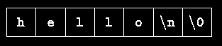
31
send a value back to the caller, just as the function power did. This line also declares that
getline returns an int; since int is the default return type, it could be omitted.
Some functions return a useful value; others, like copy, are used only for their effect and
return no value. The return type of copy is void, which states explicitly that no value is
returned.
getline puts the character '\0' (the null character, whose value is zero) at the end of the
array it is creating, to mark the end of the string of characters. This conversion is also used by
the C language: when a string constant like
"hello\n"
appears in a C program, it is stored as an array of characters containing the characters in the
string and terminated with a '\0' to mark the end.
The %s format specification in printf expects the corresponding argument to be a string
represented in this form. copy also relies on the fact that its input argument is terminated with
a '\0', and copies this character into the output.
It is worth mentioning in passing that even a program as small as this one presents some
sticky design problems. For example, what should main do if it encounters a line which is
bigger than its limit? getline works safely, in that it stops collecting when the array is full,
even if no newline has been seen. By testing the length and the last character returned, main
can determine whether the line was too long, and then cope as it wishes. In the interests of
brevity, we have ignored this issue.
There is no way for a user of getline to know in advance how long an input line might be, so
getline checks for overflow. On the other hand, the user of copy already knows (or can find
out) how big the strings are, so we have chosen not to add error checking to it.
Exercise 1-16. Revise the main routine of the longest-line program so it will correctly print
the length of arbitrary long input lines, and as much as possible of the text.
Exercise 1-17. Write a program to print all input lines that are longer than 80 characters.
Exercise 1-18. Write a program to remove trailing blanks and tabs from each line of input,
and to delete entirely blank lines.
Exercise 1-19. Write a function reverse(s) that reverses the character string s. Use it to
write a program that reverses its input a line at a time.
1.10 External Variables and Scope
The variables in main, such as line, longest, etc., are private or local to main. Because they
are declared within main, no other function can have direct access to them. The same is true
of the variables in other functions; for example, the variable i in getline is unrelated to the i
32
in copy. Each local variable in a function comes into existence only when the function is
called, and disappears when the function is exited. This is why such variables are usually
known as automatic variables, following terminology in other languages. We will use the
term automatic henceforth to refer to these local variables. (Chapter 4 discusses the static
storage class, in which local variables do retain their values between calls.)
Because automatic variables come and go with function invocation, they do not retain their
values from one call to the next, and must be explicitly set upon each entry. If they are not set,
they will contain garbage.
As an alternative to automatic variables, it is possible to define variables that are external to
all functions, that is, variables that can be accessed by name by any function. (This
mechanism is rather like Fortran COMMON or Pascal variables declared in the outermost
block.) Because external variables are globally accessible, they can be used instead of
argument lists to communicate data between functions. Furthermore, because external
variables remain in existence permanently, rather than appearing and disappearing as
functions are called and exited, they retain their values even after the functions that set them
have returned.
An external variable must be defined, exactly once, outside of any function; this sets aside
storage for it. The variable must also be declared in each function that wants to access it; this
states the type of the variable. The declaration may be an explicit extern statement or may be
implicit from context. To make the discussion concrete, let us rewrite the longest-line
program with line, longest, and max as external variables. This requires changing the calls,
declarations, and bodies of all three functions.
#include <stdio.h>
#define MAXLINE 1000 /* maximum input line size */
int max; /* maximum length seen so far */
char line[MAXLINE]; /* current input line */
char longest[MAXLINE]; /* longest line saved here */
int getline(void);
void copy(void);
/* print longest input line; specialized version */
main()
{
int len;
extern int max;
extern char longest[];
max = 0;
while ((len = getline()) > 0)
if (len > max) {
max = len;
copy();
}
if (max > 0) /* there was a line */
printf("%s", longest);
return 0;
}
33
/* getline: specialized version */
int getline(void)
{
int c, i;
extern char line[];
for (i = 0; i < MAXLINE - 1
&& (c=getchar)) != EOF && c != '\n'; ++i)
line[i] = c;
if (c == '\n') {
line[i] = c;
++i;
}
line[i] = '\0';
return i;
}
/* copy: specialized version */
void copy(void)
{
int i;
extern char line[], longest[];
i = 0;
while ((longest[i] = line[i]) != '\0')
++i;
}
The external variables in main, getline and copy are defined by the first lines of the example
above, which state their type and cause storage to be allocated for them. Syntactically,
external definitions are just like definitions of local variables, but since they occur outside of
functions, the variables are external. Before a function can use an external variable, the name
of the variable must be made known to the function; the declaration is the same as before
except for the added keyword extern.
In certain circumstances, the extern declaration can be omitted. If the definition of the
external variable occurs in the source file before its use in a particular function, then there is
no need for an extern declaration in the function. The extern declarations in main, getline
and copy are thus redundant. In fact, common practice is to place definitions of all external
variables at the beginning of the source file, and then omit all extern declarations.
If the program is in several source files, and a variable is defined in file1 and used in file2 and
file3, then extern declarations are needed in file2 and file3 to connect the occurrences of the
variable. The usual practice is to collect extern declarations of variables and functions in a
separate file, historically called a header, that is included by #include at the front of each
source file. The suffix .h is conventional for header names. The functions of the standard
library, for example, are declared in headers like <stdio.h>. This topic is discussed at length
in Chapter 4, and the library itself in Chapter 7 and Appendix B.
Since the specialized versions of getline and copy have no arguments, logic would suggest
that their prototypes at the beginning of the file should be getline() and copy(). But for
compatibility with older C programs the standard takes an empty list as an old-style
declaration, and turns off all argument list checking; the word void must be used for an
explicitly empty list. We will discuss this further in Chapter 4.
You should note that we are using the words definition and declaration carefully when we
refer to external variables in this section.``Definition'' refers to the place where the variable is
34
created or assigned storage; ``declaration'' refers to places where the nature of the variable is
stated but no storage is allocated.
By the way, there is a tendency to make everything in sight an extern variable because it
appears to simplify communications - argument lists are short and variables are always there
when you want them. But external variables are always there even when you don't want them.
Relying too heavily on external variables is fraught with peril since it leads to programs
whose data connections are not all obvious - variables can be changed in unexpected and even
inadvertent ways, and the program is hard to modify. The second version of the longest-line
program is inferior to the first, partly for these reasons, and partly because it destroys the
generality of two useful functions by writing into them the names of the variables they
manipulate.
At this point we have covered what might be called the conventional core of C. With this
handful of building blocks, it's possible to write useful programs of considerable size, and it
would probably be a good idea if you paused long enough to do so. These exercises suggest
programs of somewhat greater complexity than the ones earlier in this chapter.
Exercise 1-20. Write a program detab that replaces tabs in the input with the proper number
of blanks to space to the next tab stop. Assume a fixed set of tab stops, say every n columns.
Should n be a variable or a symbolic parameter?
Exercise 1-21. Write a program entab that replaces strings of blanks by the minimum
number of tabs and blanks to achieve the same spacing. Use the same tab stops as for detab.
When either a tab or a single blank would suffice to reach a tab stop, which should be given
preference?
Exercise 1-22. Write a program to ``fold'' long input lines into two or more shorter lines after
the last non-blank character that occurs before the n-th column of input. Make sure your
program does something intelligent with very long lines, and if there are no blanks or tabs
before the specified column.
Exercise 1-23. Write a program to remove all comments from a C program. Don't forget to
handle quoted strings and character constants properly. C comments don't nest.
Exercise 1-24. Write a program to check a C program for rudimentary syntax errors like
unmatched parentheses, brackets and braces. Don't forget about quotes, both single and
double, escape sequences, and comments. (This program is hard if you do it in full
generality.)
35
Chapter 2 - Types, Operators and
Expressions
Variables and constants are the basic data objects manipulated in a program. Declarations list
the variables to be used, and state what type they have and perhaps what their initial values
are. Operators specify what is to be done to them. Expressions combine variables and
constants to produce new values. The type of an object determines the set of values it can
have and what operations can be performed on it. These building blocks are the topics of this
chapter.
The ANSI standard has made many small changes and additions to basic types and
expressions. There are now signed and unsigned forms of all integer types, and notations for
unsigned constants and hexadecimal character constants. Floating-point operations may be
done in single precision; there is also a long double type for extended precision. String
constants may be concatenated at compile time. Enumerations have become part of the
language, formalizing a feature of long standing. Objects may be declared const, which
prevents them from being changed. The rules for automatic coercions among arithmetic types
have been augmented to handle the richer set of types.
2.1 Variable Names
Although we didn't say so in Chapter 1, there are some restrictions on the names of variables
and symbolic constants. Names are made up of letters and digits; the first character must be a
letter. The underscore ``_'' counts as a letter; it is sometimes useful for improving the
readability of long variable names. Don't begin variable names with underscore, however,
since library routines often use such names. Upper and lower case letters are distinct, so x and
X are two different names. Traditional C practice is to use lower case for variable names, and
all upper case for symbolic constants.
At least the first 31 characters of an internal name are significant. For function names and
external variables, the number may be less than 31, because external names may be used by
assemblers and loaders over which the language has no control. For external names, the
standard guarantees uniqueness only for 6 characters and a single case. Keywords like if,
else, int, float, etc., are reserved: you can't use them as variable names. They must be in
lower case.
It's wise to choose variable names that are related to the purpose of the variable, and that are
unlikely to get mixed up typographically. We tend to use short names for local variables,
especially loop indices, and longer names for external variables.
2.2 Data Types and Sizes
There are only a few basic data types in C:
char
a single byte, capable of holding one character in the local character set
int
an integer, typically reflecting the natural size of integers on the host machine
float single-precision floating point
36
double double-precision floating point
In addition, there are a number of qualifiers that can be applied to these basic types. short
and long apply to integers:
short int sh;
long int counter;
The word int can be omitted in such declarations, and typically it is.
The intent is that short and long should provide different lengths of integers where practical;
int will normally be the natural size for a particular machine. short is often 16 bits long, and
int either 16 or 32 bits. Each compiler is free to choose appropriate sizes for its own
hardware, subject only to the the restriction that shorts and ints are at least 16 bits, longs are
at least 32 bits, and short is no longer than int, which is no longer than long.
The qualifier signed or unsigned may be applied to char or any integer. unsigned numbers
are always positive or zero, and obey the laws of arithmetic modulo 2n, where n is the number
of bits in the type. So, for instance, if chars are 8 bits, unsigned char variables have values
between 0 and 255, while signed chars have values between -128 and 127 (in a two's
complement machine.) Whether plain chars are signed or unsigned is machine-dependent,
but printable characters are always positive.
The type long double specifies extended-precision floating point. As with integers, the sizes
of floating-point objects are implementation-defined; float, double and long double could
represent one, two or three distinct sizes.
The standard headers <limits.h> and <float.h> contain symbolic constants for all of these
sizes, along with other properties of the machine and compiler. These are discussed in
Appendix B.
Exercise 2-1. Write a program to determine the ranges of char, short, int, and long
variables, both signed and unsigned, by printing appropriate values from standard headers
and by direct computation. Harder if you compute them: determine the ranges of the various
floating-point types.
2.3 Constants
An integer constant like 1234 is an int. A long constant is written with a terminal l (ell) or
L, as in 123456789L; an integer constant too big to fit into an int will also be taken as a long.
Unsigned constants are written with a terminal u or U, and the suffix ul or UL indicates
unsigned long.
Floating-point constants contain a decimal point (123.4) or an exponent (1e-2) or both; their
type is double, unless suffixed. The suffixes f or F indicate a float constant; l or L indicate
a long double.
The value of an integer can be specified in octal or hexadecimal instead of decimal. A leading
0 (zero) on an integer constant means octal; a leading 0x or 0X means hexadecimal. For
example, decimal 31 can be written as 037 in octal and 0x1f or 0x1F in hex. Octal and
37
hexadecimal constants may also be followed by L to make them long and U to make them
unsigned: 0XFUL is an unsigned long constant with value 15 decimal.
A character constant is an integer, written as one character within single quotes, such as
'x'. The value of a character constant is the numeric value of the character in the machine's
character set. For example, in the ASCII character set the character constant '0' has the value
48, which is unrelated to the numeric value 0. If we write '0' instead of a numeric value like
48 that depends on the character set, the program is independent of the particular value and
easier to read. Character constants participate in numeric operations just as any other integers,
although they are most often used in comparisons with other characters.
Certain characters can be represented in character and string constants by escape sequences
like \n (newline); these sequences look like two characters, but represent only one. In
addition, an arbitrary byte-sized bit pattern can be specified by
'\ooo'
where ooo is one to three octal digits (0...7) or by
'\xhh'
where hh is one or more hexadecimal digits (0...9, a...f, A...F). So we might write
#define VTAB '\013' /* ASCII vertical tab */
#define BELL '\007' /* ASCII bell character */
or, in hexadecimal,
#define VTAB '\xb' /* ASCII vertical tab */
#define BELL '\x7' /* ASCII bell character */
The complete set of escape sequences is
\a alert (bell) character \\
backslash
\b backspace
\?
question mark
\f formfeed
\'
single quote
\n newline
\"
double quote
\r carriage return
\ooo octal number
\t horizontal tab
\xhh hexadecimal number
\v vertical tab
The character constant '\0' represents the character with value zero, the null character. '\0'
is often written instead of 0 to emphasize the character nature of some expression, but the
numeric value is just 0.
A constant expression is an expression that involves only constants. Such expressions may be
evaluated at during compilation rather than run-time, and accordingly may be used in any
place that a constant can occur, as in
#define MAXLINE 1000
char line[MAXLINE+1];
or
#define LEAP 1 /* in leap years */
int days[31+28+LEAP+31+30+31+30+31+31+30+31+30+31];
38
A string constant, or string literal, is a sequence of zero or more characters surrounded by
double quotes, as in
"I am a string"
or
"" /* the empty string */
The quotes are not part of the string, but serve only to delimit it. The same escape sequences
used in character constants apply in strings; \" represents the double-quote character. String
constants can be concatenated at compile time:
"hello, " "world"
is equivalent to
"hello, world"
This is useful for splitting up long strings across several source lines.
Technically, a string constant is an array of characters. The internal representation of a string
has a null character '\0' at the end, so the physical storage required is one more than the
number of characters written between the quotes. This representation means that there is no
limit to how long a string can be, but programs must scan a string completely to determine its
length. The standard library function strlen(s) returns the length of its character string
argument s, excluding the terminal '\0'. Here is our version:
/* strlen: return length of s */
int strlen(char s[])
{
int i;
while (s[i] != '\0')
++i;
return i;
}
strlen and other string functions are declared in the standard header <string.h>.
Be careful to distinguish between a character constant and a string that contains a single
character: 'x' is not the same as "x". The former is an integer, used to produce the numeric
value of the letter x in the machine's character set. The latter is an array of characters that
contains one character (the letter x) and a '\0'.
There is one other kind of constant, the enumeration constant. An enumeration is a list of
constant integer values, as in
enum boolean { NO, YES };
The first name in an enum has value 0, the next 1, and so on, unless explicit values are
specified. If not all values are specified, unspecified values continue the progression from the
last specified value, as the second of these examples:
enum escapes { BELL = '\a', BACKSPACE = '\b', TAB = '\t',
NEWLINE = '\n', VTAB = '\v', RETURN = '\r' };
enum months { JAN = 1, FEB, MAR, APR, MAY, JUN,
JUL, AUG, SEP, OCT, NOV, DEC };
/* FEB = 2, MAR = 3, etc. */
39
Names in different enumerations must be distinct. Values need not be distinct in the same
enumeration.
Enumerations provide a convenient way to associate constant values with names, an
alternative to #define with the advantage that the values can be generated for you. Although
variables of enum types may be declared, compilers need not check that what you store in
such a variable is a valid value for the enumeration. Nevertheless, enumeration variables offer
the chance of checking and so are often better than #defines. In addition, a debugger may be
able to print values of enumeration variables in their symbolic form.
2.4 Declarations
All variables must be declared before use, although certain declarations can be made
implicitly by content. A declaration specifies a type, and contains a list of one or more
variables of that type, as in
int lower, upper, step;
char c, line[1000];
Variables can be distributed among declarations in any fashion; the lists above could well be
written as
int lower;
int upper;
int step;
char c;
char line[1000];
The latter form takes more space, but is convenient for adding a comment to each declaration
for subsequent modifications.
A variable may also be initialized in its declaration. If the name is followed by an equals sign
and an expression, the expression serves as an initializer, as in
char esc = '\\';
int i = 0;
int limit = MAXLINE+1;
float eps = 1.0e-5;
If the variable in question is not automatic, the initialization is done once only, conceptionally
before the program starts executing, and the initializer must be a constant expression. An
explicitly initialized automatic variable is initialized each time the function or block it is in is
entered; the initializer may be any expression. External and static variables are initialized to
zero by default. Automatic variables for which is no explicit initializer have undefined (i.e.,
garbage) values.
The qualifier const can be applied to the declaration of any variable to specify that its value
will not be changed. For an array, the const qualifier says that the elements will not be
altered.
const double e = 2.71828182845905;
const char msg[] = "warning: ";
The const declaration can also be used with array arguments, to indicate that the function
does not change that array:
int strlen(const char[]);
40
The result is implementation-defined if an attempt is made to change a const.
2.5 Arithmetic Operators
The binary arithmetic operators are +, -, *, /, and the modulus operator %. Integer division
truncates any fractional part. The expression
x % y
produces the remainder when x is divided by y, and thus is zero when y divides x exactly. For
example, a year is a leap year if it is divisible by 4 but not by 100, except that years divisible
by 400 are leap years. Therefore
if ((year % 4 == 0 && year % 100 != 0) || year % 400 == 0)
printf("%d is a leap year\n", year);
else
printf("%d is not a leap year\n", year);
The % operator cannot be applied to a float or double. The direction of truncation for / and
the sign of the result for % are machine-dependent for negative operands, as is the action taken
on overflow or underflow.
The binary + and - operators have the same precedence, which is lower than the precedence
of *, / and %, which is in turn lower than unary + and -. Arithmetic operators associate left to
right.
Table 2.1 at the end of this chapter summarizes precedence and associativity for all operators.
2.6 Relational and Logical Operators
The relational operators are
> >= < <=
They all have the same precedence. Just below them in precedence are the equality operators:
== !=
Relational operators have lower precedence than arithmetic operators, so an expression like i
< lim-1 is taken as i < (lim-1), as would be expected.
More interesting are the logical operators && and ||. Expressions connected by && or || are
evaluated left to right, and evaluation stops as soon as the truth or falsehood of the result is
known. Most C programs rely on these properties. For example, here is a loop from the input
function getline that we wrote in Chapter 1:
for (i=0; i < lim-1 && (c=getchar()) != '\n' && c != EOF; ++i)
s[i] = c;
Before reading a new character it is necessary to check that there is room to store it in the
array s, so the test i < lim-1 must be made first. Moreover, if this test fails, we must not go
on and read another character.
Similarly, it would be unfortunate if c were tested against EOF before getchar is called;
therefore the call and assignment must occur before the character in c is tested.
41
The precedence of && is higher than that of ||, and both are lower than relational and equality
operators, so expressions like
i < lim-1 && (c=getchar()) != '\n' && c != EOF
need no extra parentheses. But since the precedence of != is higher than assignment,
parentheses are needed in
(c=getchar()) != '\n'
to achieve the desired result of assignment to c and then comparison with '\n'.
By definition, the numeric value of a relational or logical expression is 1 if the relation is true,
and 0 if the relation is false.
The unary negation operator ! converts a non-zero operand into 0, and a zero operand in 1. A
common use of ! is in constructions like
if (!valid)
rather than
if (valid == 0)
It's hard to generalize about which form is better. Constructions like !valid read nicely (``if
not valid''), but more complicated ones can be hard to understand.
Exercise 2-2. Write a loop equivalent to the for loop above without using && or ||.
2.7 Type Conversions
When an operator has operands of different types, they are converted to a common type
according to a small number of rules. In general, the only automatic conversions are those that
convert a ``narrower'' operand into a ``wider'' one without losing information, such as
converting an integer into floating point in an expression like f + i. Expressions that don't
make sense, like using a float as a subscript, are disallowed. Expressions that might lose
information, like assigning a longer integer type to a shorter, or a floating-point type to an
integer, may draw a warning, but they are not illegal.
A char is just a small integer, so chars may be freely used in arithmetic expressions. This
permits considerable flexibility in certain kinds of character transformations. One is
exemplified by this naive implementation of the function atoi, which converts a string of
digits into its numeric equivalent.
/* atoi: convert s to integer */
int atoi(char s[])
{
int i, n;
n = 0;
for (i = 0; s[i] >= '0' && s[i] <= '9'; ++i)
n = 10 * n + (s[i] - '0');
return n;
}
As we discussed in Chapter 1, the expression
42
s[i] - '0'
gives the numeric value of the character stored in s[i], because the values of '0', '1', etc.,
form a contiguous increasing sequence.
Another example of char to int conversion is the function lower, which maps a single
character to lower case for the ASCII character set. If the character is not an upper case letter,
lower returns it unchanged.
/* lower: convert c to lower case; ASCII only */
int lower(int c)
{
if (c >= 'A' && c <= 'Z')
return c + 'a' - 'A';
else
return c;
}
This works for ASCII because corresponding upper case and lower case letters are a fixed
distance apart as numeric values and each alphabet is contiguous -- there is nothing but letters
between A and Z. This latter observation is not true of the EBCDIC character set, however, so
this code would convert more than just letters in EBCDIC.
The standard header <ctype.h>, described in Appendix B, defines a family of functions that
provide tests and conversions that are independent of character set. For example, the function
tolower is a portable replacement for the function lower shown above. Similarly, the test
c >= '0' && c <= '9'
can be replaced by
isdigit(c)
We will use the <ctype.h> functions from now on.
There is one subtle point about the conversion of characters to integers. The language does
not specify whether variables of type char are signed or unsigned quantities. When a char is
converted to an int, can it ever produce a negative integer? The answer varies from machine
to machine, reflecting differences in architecture. On some machines a char whose leftmost
bit is 1 will be converted to a negative integer (``sign extension''). On others, a char is
promoted to an int by adding zeros at the left end, and thus is always positive.
The definition of C guarantees that any character in the machine's standard printing character
set will never be negative, so these characters will always be positive quantities in
expressions. But arbitrary bit patterns stored in character variables may appear to be negative
on some machines, yet positive on others. For portability, specify signed or unsigned if non-
character data is to be stored in char variables.
Relational expressions like i > j and logical expressions connected by && and || are defined
to have value 1 if true, and 0 if false. Thus the assignment
d = c >= '0' && c <= '9'
sets d to 1 if c is a digit, and 0 if not. However, functions like isdigit may return any non-
zero value for true. In the test part of if, while, for, etc., ``true'' just means ``non-zero'', so
this makes no difference.
43
Implicit arithmetic conversions work much as expected. In general, if an operator like + or *
that takes two operands (a binary operator) has operands of different types, the ``lower'' type
is promoted to the ``higher'' type before the operation proceeds. The result is of the integer
type. Section 6 of Appendix A states the conversion rules precisely. If there are no unsigned
operands, however, the following informal set of rules will suffice:
• If either operand is long double, convert the other to long double.
• Otherwise, if either operand is double, convert the other to double.
• Otherwise, if either operand is float, convert the other to float.
• Otherwise, convert char and short to int.
• Then, if either operand is long, convert the other to long.
Notice that floats in an expression are not automatically converted to double; this is a
change from the original definition. In general, mathematical functions like those in <math.h>
will use double precision. The main reason for using float is to save storage in large arrays,
or, less often, to save time on machines where double-precision arithmetic is particularly
expensive.
Conversion rules are more complicated when unsigned operands are involved. The problem
is that comparisons between signed and unsigned values are machine-dependent, because they
depend on the sizes of the various integer types. For example, suppose that int is 16 bits and
long is 32 bits. Then -1L < 1U, because 1U, which is an unsigned int, is promoted to a
signed long. But -1L > 1UL because -1L is promoted to unsigned long and thus appears
to be a large positive number.
Conversions take place across assignments; the value of the right side is converted to the type
of the left, which is the type of the result.
A character is converted to an integer, either by sign extension or not, as described above.
Longer integers are converted to shorter ones or to chars by dropping the excess high-order
bits. Thus in
int i;
char c;
i = c;
c = i;
the value of c is unchanged. This is true whether or not sign extension is involved. Reversing
the order of assignments might lose information, however.
If x is float and i is int, then x = i and i = x both cause conversions; float to int
causes truncation of any fractional part. When a double is converted to float, whether the
value is rounded or truncated is implementation dependent.
Since an argument of a function call is an expression, type conversion also takes place when
arguments are passed to functions. In the absence of a function prototype, char and short
become int, and float becomes double. This is why we have declared function arguments to
be int and double even when the function is called with char and float.
Finally, explicit type conversions can be forced (``coerced'') in any expression, with a unary
operator called a cast. In the construction
44
(type name) expression
the expression is converted to the named type by the conversion rules above. The precise
meaning of a cast is as if the expression were assigned to a variable of the specified type,
which is then used in place of the whole construction. For example, the library routine sqrt
expects a double argument, and will produce nonsense if inadvertently handled something
else. (sqrt is declared in <math.h>.) So if n is an integer, we can use
sqrt((double) n)
to convert the value of n to double before passing it to sqrt. Note that the cast produces the
value of n in the proper type; n itself is not altered. The cast operator has the same high
precedence as other unary operators, as summarized in the table at the end of this chapter.
If arguments are declared by a function prototype, as the normally should be, the declaration
causes automatic coercion of any arguments when the function is called. Thus, given a
function prototype for sqrt:
double sqrt(double)
the call
root2 = sqrt(2)
coerces the integer 2 into the double value 2.0 without any need for a cast.
The standard library includes a portable implementation of a pseudo-random number
generator and a function for initializing the seed; the former illustrates a cast:
unsigned long int next = 1;
/* rand: return pseudo-random integer on 0..32767 */
int rand(void)
{
next = next * 1103515245 + 12345;
return (unsigned int)(next/65536) % 32768;
}
/* srand: set seed for rand() */
void srand(unsigned int seed)
{
next = seed;
}
Exercise 2-3. Write a function htoi(s), which converts a string of hexadecimal digits
(including an optional 0x or 0X) into its equivalent integer value. The allowable digits are 0
through 9, a through f, and A through F.
2.8 Increment and Decrement Operators
C provides two unusual operators for incrementing and decrementing variables. The
increment operator ++ adds 1 to its operand, while the decrement operator -- subtracts 1. We
have frequently used ++ to increment variables, as in
if (c == '\n')
++nl;
45
The unusual aspect is that ++ and -- may be used either as prefix operators (before the
variable, as in ++n), or postfix operators (after the variable: n++). In both cases, the effect is to
increment n. But the expression ++n increments n before its value is used, while n++
increments n after its value has been used. This means that in a context where the value is
being used, not just the effect, ++n and n++ are different. If n is 5, then
x = n++;
sets x to 5, but
x = ++n;
sets x to 6. In both cases, n becomes 6. The increment and decrement operators can only be
applied to variables; an expression like (i+j)++ is illegal.
In a context where no value is wanted, just the incrementing effect, as in
if (c == '\n')
nl++;
prefix and postfix are the same. But there are situations where one or the other is specifically
called for. For instance, consider the function squeeze(s,c), which removes all occurrences
of the character c from the string s.
/* squeeze: delete all c from s */
void squeeze(char s[], int c)
{
int i, j;
for (i = j = 0; s[i] != '\0'; i++)
if (s[i] != c)
s[j++] = s[i];
s[j] = '\0';
}
Each time a non-c occurs, it is copied into the current j position, and only then is j
incremented to be ready for the next character. This is exactly equivalent to
if (s[i] != c) {
s[j] = s[i];
j++;
}
Another example of a similar construction comes from the getline function that we wrote in
Chapter 1, where we can replace
if (c == '\n') {
s[i] = c;
++i;
}
by the more compact
if (c == '\n')
s[i++] = c;
As a third example, consider the standard function strcat(s,t), which concatenates the
string t to the end of string s. strcat assumes that there is enough space in s to hold the
combination. As we have written it, strcat returns no value; the standard library version
returns a pointer to the resulting string.
/* strcat: concatenate t to end of s; s must be big enough */
void strcat(char s[], char t[])
{
46
int i, j;
i = j = 0;
while (s[i] != '\0') /* find end of s */
i++;
while ((s[i++] = t[j++]) != '\0') /* copy t */
;
}
As each member is copied from t to s, the postfix ++ is applied to both i and j to make sure
that they are in position for the next pass through the loop.
Exercise 2-4. Write an alternative version of squeeze(s1,s2) that deletes each character in
s1 that matches any character in the string s2.
Exercise 2-5. Write the function any(s1,s2), which returns the first location in a string s1
where any character from the string s2 occurs, or -1 if s1 contains no characters from s2.
(The standard library function strpbrk does the same job but returns a pointer to the
location.)
2.9 Bitwise Operators
C provides six operators for bit manipulation; these may only be applied to integral operands,
that is, char, short, int, and long, whether signed or unsigned.
&
bitwise AND
|
bitwise inclusive OR
^
bitwise exclusive OR
<< left shift
>> right shift
~
one's complement (unary)
The bitwise AND operator & is often used to mask off some set of bits, for example
n = n & 0177;
sets to zero all but the low-order 7 bits of n.
The bitwise OR operator | is used to turn bits on:
x = x | SET_ON;
sets to one in x the bits that are set to one in SET_ON.
The bitwise exclusive OR operator ^ sets a one in each bit position where its operands have
different bits, and zero where they are the same.
One must distinguish the bitwise operators & and | from the logical operators && and ||,
which imply left-to-right evaluation of a truth value. For example, if x is 1 and y is 2, then x
& y is zero while x && y is one.
The shift operators << and >> perform left and right shifts of their left operand by the number
of bit positions given by the right operand, which must be non-negative. Thus x << 2 shifts
47
the value of x by two positions, filling vacated bits with zero; this is equivalent to
multiplication by 4. Right shifting an unsigned quantity always fits the vacated bits with
zero. Right shifting a signed quantity will fill with bit signs (``arithmetic shift'') on some
machines and with 0-bits (``logical shift'') on others.
The unary operator ~ yields the one's complement of an integer; that is, it converts each 1-bit
into a 0-bit and vice versa. For example
x = x & ~077
sets the last six bits of x to zero. Note that x & ~077 is independent of word length, and is
thus preferable to, for example, x & 0177700, which assumes that x is a 16-bit quantity. The
portable form involves no extra cost, since ~077 is a constant expression that can be evaluated
at compile time.
As an illustration of some of the bit operators, consider the function getbits(x,p,n) that
returns the (right adjusted) n-bit field of x that begins at position p. We assume that bit
position 0 is at the right end and that n and p are sensible positive values. For example,
getbits(x,4,3) returns the three bits in positions 4, 3 and 2, right-adjusted.
/* getbits: get n bits from position p */
unsigned getbits(unsigned x, int p, int n)
{
return (x >> (p+1-n)) & ~(~0 << n);
}
The expression x >> (p+1-n) moves the desired field to the right end of the word. ~0 is all
1-bits; shifting it left n positions with ~0<<n places zeros in the rightmost n bits;
complementing that with ~ makes a mask with ones in the rightmost n bits.
Exercise 2-6. Write a function setbits(x,p,n,y) that returns x with the n bits that begin at
position p set to the rightmost n bits of y, leaving the other bits unchanged.
Exercise 2-7. Write a function invert(x,p,n) that returns x with the n bits that begin at
position p inverted (i.e., 1 changed into 0 and vice versa), leaving the others unchanged.
Exercise 2-8. Write a function rightrot(x,n) that returns the value of the integer x rotated
to the right by n positions.
2.10 Assignment Operators and Expressions
An expression such as
i = i + 2
in which the variable on the left side is repeated immediately on the right, can be written in
the compressed form
i += 2
The operator += is called an assignment operator.
Most binary operators (operators like + that have a left and right operand) have a
corresponding assignment operator op=, where op is one of
48
+ - * / % << >> & ^ |
If expr1 and expr2 are expressions, then
expr1 op= expr2
is equivalent to
expr1 = (expr1) op (expr2)
except that expr1 is computed only once. Notice the parentheses around expr2:
x *= y + 1
means
x = x * (y + 1)
rather than
x = x * y + 1
As an example, the function bitcount counts the number of 1-bits in its integer argument.
/* bitcount: count 1 bits in x */
int bitcount(unsigned x)
{
int b;
for (b = 0; x != 0; x >>= 1)
if (x & 01)
b++;
return b;
}
Declaring the argument x to be an unsigned ensures that when it is right-shifted, vacated bits
will be filled with zeros, not sign bits, regardless of the machine the program is run on.
Quite apart from conciseness, assignment operators have the advantage that they correspond
better to the way people think. We say ``add 2 to i'' or ``increment i by 2'', not ``take i, add
2, then put the result back in i''. Thus the expression i += 2 is preferable to i = i+2. In
addition, for a complicated expression like
yyval[yypv[p3+p4] + yypv[p1]] += 2
the assignment operator makes the code easier to understand, since the reader doesn't have to
check painstakingly that two long expressions are indeed the same, or to wonder why they're
not. And an assignment operator may even help a compiler to produce efficient code.
We have already seen that the assignment statement has a value and can occur in expressions;
the most common example is
while ((c = getchar()) != EOF)
...
The other assignment operators (+=, -=, etc.) can also occur in expressions, although this is
less frequent.
In all such expressions, the type of an assignment expression is the type of its left operand,
and the value is the value after the assignment.
Exercise 2-9. In a two's complement number system, x &= (x-1) deletes the rightmost 1-bit
in x. Explain why. Use this observation to write a faster version of bitcount.
49
2.11 Conditional Expressions
The statements
if (a > b)
z = a;
else
z = b;
compute in z the maximum of a and b. The conditional expression, written with the ternary
operator ``?:'', provides an alternate way to write this and similar constructions. In the
expression
expr1 ? expr2 : expr3
the expression expr1 is evaluated first. If it is non-zero (true), then the expression expr2 is
evaluated, and that is the value of the conditional expression. Otherwise expr3 is evaluated,
and that is the value. Only one of expr2 and expr3 is evaluated. Thus to set z to the maximum
of a and b,
z = (a > b) ? a : b; /* z = max(a, b) */
It should be noted that the conditional expression is indeed an expression, and it can be used
wherever any other expression can be. If expr2 and expr3 are of different types, the type of the
result is determined by the conversion rules discussed earlier in this chapter. For example, if f
is a float and n an int, then the expression
(n > 0) ? f : n
is of type float regardless of whether n is positive.
Parentheses are not necessary around the first expression of a conditional expression, since
the precedence of ?: is very low, just above assignment. They are advisable anyway,
however, since they make the condition part of the expression easier to see.
The conditional expression often leads to succinct code. For example, this loop prints n
elements of an array, 10 per line, with each column separated by one blank, and with each line
(including the last) terminated by a newline.
for (i = 0; i < n; i++)
printf("%6d%c", a[i], (i%10==9 || i==n-1) ? '\n' : ' ');
A newline is printed after every tenth element, and after the n-th. All other elements are
followed by one blank. This might look tricky, but it's more compact than the equivalent if-
else. Another good example is
printf("You have %d items%s.\n", n, n==1 ? "" : "s");
Exercise 2-10. Rewrite the function lower, which converts upper case letters to lower case,
with a conditional expression instead of if-else.
2.12 Precedence and Order of Evaluation
Table 2.1 summarizes the rules for precedence and associativity of all operators, including
those that we have not yet discussed. Operators on the same line have the same precedence;
rows are in order of decreasing precedence, so, for example, *, /, and % all have the same
precedence, which is higher than that of binary + and -. The ``operator'' () refers to function
call. The operators -> and . are used to access members of structures; they will be covered in
50
Chapter 6, along with sizeof (size of an object). Chapter 5 discusses * (indirection through a
pointer) and & (address of an object), and Chapter 3 discusses the comma operator.
Operators
Associativity
() [] -> .
left to right
! ~ ++ -- + - * (type) sizeof
right to left
* / %
left to right
+ -
left to right
<< >>
left to right
< <= > >=
left to right
== !=
left to right
&
left to right
^
left to right
|
left to right
&&
left to right
||
left to right
?:
right to left
= += -= *= /= %= &= ^= |= <<= >>= right to left
,
left to right
Unary & +, -, and * have higher precedence than the binary forms.
Table 2.1: Precedence and Associativity of Operators
Note that the precedence of the bitwise operators &, ^, and | falls below == and !=. This
implies that bit-testing expressions like
if ((x & MASK) == 0) ...
must be fully parenthesized to give proper results.
C, like most languages, does not specify the order in which the operands of an operator are
evaluated. (The exceptions are &&, ||, ?:, and `,'.) For example, in a statement like
x = f() + g();
f may be evaluated before g or vice versa; thus if either f or g alters a variable on which the
other depends, x can depend on the order of evaluation. Intermediate results can be stored in
temporary variables to ensure a particular sequence.
Similarly, the order in which function arguments are evaluated is not specified, so the
statement
printf("%d %d\n", ++n, power(2, n)); /* WRONG */
can produce different results with different compilers, depending on whether n is incremented
before power is called. The solution, of course, is to write
++n;
51
printf("%d %d\n", n, power(2, n));
Function calls, nested assignment statements, and increment and decrement operators cause
``side effects'' - some variable is changed as a by-product of the evaluation of an expression.
In any expression involving side effects, there can be subtle dependencies on the order in
which variables taking part in the expression are updated. One unhappy situation is typified
by the statement
a[i] = i++;
The question is whether the subscript is the old value of i or the new. Compilers can interpret
this in different ways, and generate different answers depending on their interpretation. The
standard intentionally leaves most such matters unspecified. When side effects (assignment to
variables) take place within an expression is left to the discretion of the compiler, since the
best order depends strongly on machine architecture. (The standard does specify that all side
effects on arguments take effect before a function is called, but that would not help in the call
to printf above.)
The moral is that writing code that depends on order of evaluation is a bad programming
practice in any language. Naturally, it is necessary to know what things to avoid, but if you
don't know how they are done on various machines, you won't be tempted to take advantage
of a particular implementation.
52
Chapter 3 - Control Flow
The control-flow of a language specify the order in which computations are performed. We
have already met the most common control-flow constructions in earlier examples; here we
will complete the set, and be more precise about the ones discussed before.
3.1 Statements and Blocks
An expression such as x = 0 or i++ or printf(...) becomes a statement when it is
followed by a semicolon, as in
x = 0;
i++;
printf(...);
In C, the semicolon is a statement terminator, rather than a separator as it is in languages like
Pascal.
Braces { and } are used to group declarations and statements together into a compound
statement, or block, so that they are syntactically equivalent to a single statement. The braces
that surround the statements of a function are one obvious example; braces around multiple
statements after an if, else, while, or for are another. (Variables can be declared inside any
block; we will talk about this in Chapter 4.) There is no semicolon after the right brace that
ends a block.
3.2 If-Else
The if-else statement is used to express decisions. Formally the syntax is
if (expression)
statement1
else
statement2
where the else part is optional. The expression is evaluated; if it is true (that is, if expression
has a non-zero value), statement1 is executed. If it is false (expression is zero) and if there is
an else part, statement2 is executed instead.
Since an if tests the numeric value of an expression, certain coding shortcuts are possible.
The most obvious is writing
if (expression)
instead of
if (expression != 0)
Sometimes this is natural and clear; at other times it can be cryptic.
Because the else part of an if-else is optional,there is an ambiguity when an else if omitted
from a nested if sequence. This is resolved by associating the else with the closest previous
else-less if. For example, in
53
if (n > 0)
if (a > b)
z = a;
else
z = b;
the else goes to the inner if, as we have shown by indentation. If that isn't what you want,
braces must be used to force the proper association:
if (n > 0) {
if (a > b)
z = a;
}
else
z = b;
The ambiguity is especially pernicious in situations like this:
if (n > 0)
for (i = 0; i < n; i++)
if (s[i] > 0) {
printf("...");
return i;
}
else /* WRONG */
printf("error -- n is negative\n");
The indentation shows unequivocally what you want, but the compiler doesn't get the
message, and associates the else with the inner if. This kind of bug can be hard to find; it's a
good idea to use braces when there are nested ifs.
By the way, notice that there is a semicolon after z = a in
if (a > b)
z = a;
else
z = b;
This is because grammatically, a statement follows the if, and an expression statement like
``z = a;'' is always terminated by a semicolon.
3.3 Else-If
The construction
if (expression)
statement
else if (expression)
statement
else if (expression)
statement
else if (expression)
statement
else
statement
occurs so often that it is worth a brief separate discussion. This sequence of if statements is
the most general way of writing a multi-way decision. The expressions are evaluated in order;
if an expression is true, the statement associated with it is executed, and this terminates the
whole chain. As always, the code for each statement is either a single statement, or a group of
them in braces.
54
The last else part handles the ``none of the above'' or default case where none of the other
conditions is satisfied. Sometimes there is no explicit action for the default; in that case the
trailing
else
statement
can be omitted, or it may be used for error checking to catch an ``impossible'' condition.
To illustrate a three-way decision, here is a binary search function that decides if a particular
value x occurs in the sorted array v. The elements of v must be in increasing order. The
function returns the position (a number between 0 and n-1) if x occurs in v, and -1 if not.
Binary search first compares the input value x to the middle element of the array v. If x is less
than the middle value, searching focuses on the lower half of the table, otherwise on the upper
half. In either case, the next step is to compare x to the middle element of the selected half.
This process of dividing the range in two continues until the value is found or the range is
empty.
/* binsearch: find x in v[0] <= v[1] <= ... <= v[n-1] */
int binsearch(int x, int v[], int n)
{
int low, high, mid;
low = 0;
high = n - 1;
while (low <= high) {
mid = (low+high)/2;
if (x < v[mid])
high = mid + 1;
else if (x > v[mid])
low = mid + 1;
else /* found match */
return mid;
}
return -1; /* no match */
}
The fundamental decision is whether x is less than, greater than, or equal to the middle
element v[mid] at each step; this is a natural for else-if.
Exercise 3-1. Our binary search makes two tests inside the loop, when one would suffice (at
the price of more tests outside.) Write a version with only one test inside the loop and
measure the difference in run-time.
3.4 Switch
The switch statement is a multi-way decision that tests whether an expression matches one of
a number of constant integer values, and branches accordingly.
switch (expression) {
case const-expr: statements
case const-expr: statements
default: statements
}
55
Each case is labeled by one or more integer-valued constants or constant expressions. If a case
matches the expression value, execution starts at that case. All case expressions must be
different. The case labeled default is executed if none of the other cases are satisfied. A
default is optional; if it isn't there and if none of the cases match, no action at all takes place.
Cases and the default clause can occur in any order.
In Chapter 1 we wrote a program to count the occurrences of each digit, white space, and all
other characters, using a sequence of if ... else if ... else. Here is the same program
with a switch:
#include <stdio.h>
main() /* count digits, white space, others */
{
int c, i, nwhite, nother, ndigit[10];
nwhite = nother = 0;
for (i = 0; i < 10; i++)
ndigit[i] = 0;
while ((c = getchar()) != EOF) {
switch (c) {
case '0': case '1': case '2': case '3': case '4':
case '5': case '6': case '7': case '8': case '9':
ndigit[c-'0']++;
break;
case ' ':
case '\n':
case '\t':
nwhite++;
break;
default:
nother++;
break;
}
}
printf("digits =");
for (i = 0; i < 10; i++)
printf(" %d", ndigit[i]);
printf(", white space = %d, other = %d\n",
nwhite, nother);
return 0;
}
The break statement causes an immediate exit from the switch. Because cases serve just as
labels, after the code for one case is done, execution falls through to the next unless you take
explicit action to escape. break and return are the most common ways to leave a switch. A
break statement can also be used to force an immediate exit from while, for, and do loops,
as will be discussed later in this chapter.
Falling through cases is a mixed blessing. On the positive side, it allows several cases to be
attached to a single action, as with the digits in this example. But it also implies that normally
each case must end with a break to prevent falling through to the next. Falling through from
one case to another is not robust, being prone to disintegration when the program is modified.
With the exception of multiple labels for a single computation, fall-throughs should be used
sparingly, and commented.
56
As a matter of good form, put a break after the last case (the default here) even though it's
logically unnecessary. Some day when another case gets added at the end, this bit of
defensive programming will save you.
Exercise 3-2. Write a function escape(s,t) that converts characters like newline and tab
into visible escape sequences like \n and \t as it copies the string t to s. Use a switch. Write
a function for the other direction as well, converting escape sequences into the real characters.
3.5 Loops - While and For
We have already encountered the while and for loops. In
while (expression)
statement
the expression is evaluated. If it is non-zero, statement is executed and expression is re-
evaluated. This cycle continues until expression becomes zero, at which point execution
resumes after statement.
The for statement
for (expr1; expr2; expr3)
statement
is equivalent to
expr1;
while (expr2) {
statement
expr3;
}
except for the behaviour of continue, which is described in Section 3.7.
Grammatically, the three components of a for loop are expressions. Most commonly, expr1
and expr3 are assignments or function calls and expr2 is a relational expression. Any of the
three parts can be omitted, although the semicolons must remain. If expr1 or expr3 is omitted,
it is simply dropped from the expansion. If the test, expr2, is not present, it is taken as
permanently true, so
for (;;) {
...
}
is an ``infinite'' loop, presumably to be broken by other means, such as a break or return.
Whether to use while or for is largely a matter of personal preference. For example, in
while ((c = getchar()) == ' ' || c == '\n' || c = '\t')
; /* skip white space characters */
there is no initialization or re-initialization, so the while is most natural.
The for is preferable when there is a simple initialization and increment since it keeps the
loop control statements close together and visible at the top of the loop. This is most obvious
in
57
for (i = 0; i < n; i++)
...
which is the C idiom for processing the first n elements of an array, the analog of the Fortran
DO loop or the Pascal for. The analogy is not perfect, however, since the index variable i
retains its value when the loop terminates for any reason. Because the components of the for
are arbitrary expressions, for loops are not restricted to arithmetic progressions. Nonetheless,
it is bad style to force unrelated computations into the initialization and increment of a for,
which are better reserved for loop control operations.
As a larger example, here is another version of atoi for converting a string to its numeric
equivalent. This one is slightly more general than the one in Chapter 2; it copes with optional
leading white space and an optional + or - sign. (Chapter 4 shows atof, which does the same
conversion for floating-point numbers.)
The structure of the program reflects the form of the input:
skip white space, if any
get sign, if any
get integer part and convert it
Each step does its part, and leaves things in a clean state for the next. The whole process
terminates on the first character that could not be part of a number.
#include <ctype.h>
/* atoi: convert s to integer; version 2 */
int atoi(char s[])
{
int i, n, sign;
for (i = 0; isspace(s[i]); i++) /* skip white space */
;
sign = (s[i] == '-') ? -1 : 1;
if (s[i] == '+' || s[i] == '-') /* skip sign */
i++;
for (n = 0; isdigit(s[i]); i++)
n = 10 * n + (s[i] - '0');
return sign * n;
}
The standard library provides a more elaborate function strtol for conversion of strings to
long integers; see Section 5 of Appendix B.
The advantages of keeping loop control centralized are even more obvious when there are
several nested loops. The following function is a Shell sort for sorting an array of integers.
The basic idea of this sorting algorithm, which was invented in 1959 by D. L. Shell, is that in
early stages, far-apart elements are compared, rather than adjacent ones as in simpler
interchange sorts. This tends to eliminate large amounts of disorder quickly, so later stages
have less work to do. The interval between compared elements is gradually decreased to one,
at which point the sort effectively becomes an adjacent interchange method.
/* shellsort: sort v[0]...v[n-1] into increasing order */
void shellsort(int v[], int n)
{
58
int gap, i, j, temp;
for (gap = n/2; gap > 0; gap /= 2)
for (i = gap; i < n; i++)
for (j=i-gap; j>=0 && v[j]>v[j+gap]; j-=gap) {
temp = v[j];
v[j] = v[j+gap];
v[j+gap] = temp;
}
}
There are three nested loops. The outermost controls the gap between compared elements,
shrinking it from n/2 by a factor of two each pass until it becomes zero. The middle loop
steps along the elements. The innermost loop compares each pair of elements that is separated
by gap and reverses any that are out of order. Since gap is eventually reduced to one, all
elements are eventually ordered correctly. Notice how the generality of the for makes the
outer loop fit in the same form as the others, even though it is not an arithmetic progression.
One final C operator is the comma ``,'', which most often finds use in the for statement. A
pair of expressions separated by a comma is evaluated left to right, and the type and value of
the result are the type and value of the right operand. Thus in a for statement, it is possible to
place multiple expressions in the various parts, for example to process two indices in parallel.
This is illustrated in the function reverse(s), which reverses the string s in place.
#include <string.h>
/* reverse: reverse string s in place */
void reverse(char s[])
{
int c, i, j;
for (i = 0, j = strlen(s)-1; i < j; i++, j--) {
c = s[i];
s[i] = s[j];
s[j] = c;
}
}
The commas that separate function arguments, variables in declarations, etc., are not comma
operators, and do not guarantee left to right evaluation.
Comma operators should be used sparingly. The most suitable uses are for constructs strongly
related to each other, as in the for loop in reverse, and in macros where a multistep
computation has to be a single expression. A comma expression might also be appropriate for
the exchange of elements in reverse, where the exchange can be thought of a single
operation:
for (i = 0, j = strlen(s)-1; i < j; i++, j--)
c = s[i], s[i] = s[j], s[j] = c;
Exercise 3-3. Write a function expand(s1,s2) that expands shorthand notations like a-z in
the string s1 into the equivalent complete list abc...xyz in s2. Allow for letters of either
case and digits, and be prepared to handle cases like a-b-c and a-z0-9 and -a-z. Arrange
that a leading or trailing - is taken literally.
3.6 Loops - Do-While
59
As we discussed in Chapter 1, the while and for loops test the termination condition at the
top. By contrast, the third loop in C, the do-while, tests at the bottom after making each pass
through the loop body; the body is always executed at least once.
The syntax of the do is
do
statement
while (expression);
The statement is executed, then expression is evaluated. If it is true, statement is evaluated
again, and so on. When the expression becomes false, the loop terminates. Except for the
sense of the test, do-while is equivalent to the Pascal repeat-until statement.
Experience shows that do-while is much less used than while and for. Nonetheless, from
time to time it is valuable, as in the following function itoa, which converts a number to a
character string (the inverse of atoi). The job is slightly more complicated than might be
thought at first, because the easy methods of generating the digits generate them in the wrong
order. We have chosen to generate the string backwards, then reverse it.
/* itoa: convert n to characters in s */
void itoa(int n, char s[])
{
int i, sign;
if ((sign = n) < 0) /* record sign */
n = -n; /* make n positive */
i = 0;
do { /* generate digits in reverse order */
s[i++] = n % 10 + '0'; /* get next digit */
} while ((n /= 10) > 0); /* delete it */
if (sign < 0)
s[i++] = '-';
s[i] = '\0';
reverse(s);
}
The do-while is necessary, or at least convenient, since at least one character must be
installed in the array s, even if n is zero. We also used braces around the single statement that
makes up the body of the do-while, even though they are unnecessary, so the hasty reader
will not mistake the while part for the beginning of a while loop.
Exercise 3-4. In a two's complement number representation, our version of itoa does not
handle the largest negative number, that is, the value of n equal to -(2wordsize-1). Explain why
not. Modify it to print that value correctly, regardless of the machine on which it runs.
Exercise 3-5. Write the function itob(n,s,b) that converts the integer n into a base b
character representation in the string s. In particular, itob(n,s,16) formats s as a
hexadecimal integer in s.
Exercise 3-6. Write a version of itoa that accepts three arguments instead of two. The third
argument is a minimum field width; the converted number must be padded with blanks on the
left if necessary to make it wide enough.
3.7 Break and Continue
60
It is sometimes convenient to be able to exit from a loop other than by testing at the top or
bottom. The break statement provides an early exit from for, while, and do, just as from
switch. A break causes the innermost enclosing loop or switch to be exited immediately.
The following function, trim, removes trailing blanks, tabs and newlines from the end of a
string, using a break to exit from a loop when the rightmost non-blank, non-tab, non-newline
is found.
/* trim: remove trailing blanks, tabs, newlines */
int trim(char s[])
{
int n;
for (n = strlen(s)-1; n >= 0; n--)
if (s[n] != ' ' && s[n] != '\t' && s[n] != '\n')
break;
s[n+1] = '\0';
return n;
}
strlen returns the length of the string. The for loop starts at the end and scans backwards
looking for the first character that is not a blank or tab or newline. The loop is broken when
one is found, or when n becomes negative (that is, when the entire string has been scanned).
You should verify that this is correct behavior even when the string is empty or contains only
white space characters.
The continue statement is related to break, but less often used; it causes the next iteration of
the enclosing for, while, or do loop to begin. In the while and do, this means that the test
part is executed immediately; in the for, control passes to the increment step. The continue
statement applies only to loops, not to switch. A continue inside a switch inside a loop
causes the next loop iteration.
As an example, this fragment processes only the non-negative elements in the array a;
negative values are skipped.
for (i = 0; i < n; i++)
if (a[i] < 0) /* skip negative elements */
continue;
... /* do positive elements */
The continue statement is often used when the part of the loop that follows is complicated,
so that reversing a test and indenting another level would nest the program too deeply.
3.8 Goto and labels
C provides the infinitely-abusable goto statement, and labels to branch to. Formally, the goto
statement is never necessary, and in practice it is almost always easy to write code without it.
We have not used goto in this book.
Nevertheless, there are a few situations where gotos may find a place. The most common is
to abandon processing in some deeply nested structure, such as breaking out of two or more
loops at once. The break statement cannot be used directly since it only exits from the
innermost loop. Thus:
61
for ( ... )
for ( ... ) {
...
if (disaster)
goto error;
}
...
error:
/* clean up the mess */
This organization is handy if the error-handling code is non-trivial, and if errors can occur in
several places.
A label has the same form as a variable name, and is followed by a colon. It can be attached to
any statement in the same function as the goto. The scope of a label is the entire function.
As another example, consider the problem of determining whether two arrays a and b have an
element in common. One possibility is
for (i = 0; i < n; i++)
for (j = 0; j < m; j++)
if (a[i] == b[j])
goto found;
/* didn't find any common element */
...
found:
/* got one: a[i] == b[j] */
...
Code involving a goto can always be written without one, though perhaps at the price of
some repeated tests or an extra variable. For example, the array search becomes
found = 0;
for (i = 0; i < n && !found; i++)
for (j = 0; j < m && !found; j++)
if (a[i] == b[j])
found = 1;
if (found)
/* got one: a[i-1] == b[j-1] */
...
else
/* didn't find any common element */
...
With a few exceptions like those cited here, code that relies on goto statements is generally
harder to understand and to maintain than code without gotos. Although we are not dogmatic
about the matter, it does seem that goto statements should be used rarely, if at all.
62
Chapter 4 - Functions and Program
Structure
Functions break large computing tasks into smaller ones, and enable people to build on what
others have done instead of starting over from scratch. Appropriate functions hide details of
operation from parts of the program that don't need to know about them, thus clarifying the
whole, and easing the pain of making changes.
C has been designed to make functions efficient and easy to use; C programs generally consist
of many small functions rather than a few big ones. A program may reside in one or more
source files. Source files may be compiled separately and loaded together, along with
previously compiled functions from libraries. We will not go into that process here, however,
since the details vary from system to system.
Function declaration and definition is the area where the ANSI standard has made the most
changes to C. As we saw first in Chapter 1, it is now possible to declare the type of arguments
when a function is declared. The syntax of function declaration also changes, so that
declarations and definitions match. This makes it possible for a compiler to detect many more
errors than it could before. Furthermore, when arguments are properly declared, appropriate
type coercions are performed automatically.
The standard clarifies the rules on the scope of names; in particular, it requires that there be
only one definition of each external object. Initialization is more general: automatic arrays
and structures may now be initialized.
The C preprocessor has also been enhanced. New preprocessor facilities include a more
complete set of conditional compilation directives, a way to create quoted strings from macro
arguments, and better control over the macro expansion process.
4.1 Basics of Functions
To begin with, let us design and write a program to print each line of its input that contains a
particular ``pattern'' or string of characters. (This is a special case of the UNIX program
grep.) For example, searching for the pattern of letters ``ould'' in the set of lines
Ah Love! could you and I with Fate conspire
To grasp this sorry Scheme of Things entire,
Would not we shatter it to bits -- and then
Re-mould it nearer to the Heart's Desire!
will produce the output
Ah Love! could you and I with Fate conspire
Would not we shatter it to bits -- and then
Re-mould it nearer to the Heart's Desire!
The job falls neatly into three pieces:
while (there's another line)
if (the line contains the pattern)
print it
63
Although it's certainly possible to put the code for all of this in main, a better way is to use the
structure to advantage by making each part a separate function. Three small pieces are better
to deal with than one big one, because irrelevant details can be buried in the functions, and the
chance of unwanted interactions is minimized. And the pieces may even be useful in other
programs.
``While there's another line'' is getline, a function that we wrote in Chapter 1, and ``print it''
is printf, which someone has already provided for us. This means we need only write a
routine to decide whether the line contains an occurrence of the pattern.
We can solve that problem by writing a function strindex(s,t) that returns the position or
index in the string s where the string t begins, or -1 if s does not contain t. Because C arrays
begin at position zero, indexes will be zero or positive, and so a negative value like -1 is
convenient for signaling failure. When we later need more sophisticated pattern matching, we
only have to replace strindex; the rest of the code can remain the same. (The standard
library provides a function strstr that is similar to strindex, except that it returns a pointer
instead of an index.)
Given this much design, filling in the details of the program is straightforward. Here is the
whole thing, so you can see how the pieces fit together. For now, the pattern to be searched
for is a literal string, which is not the most general of mechanisms. We will return shortly to a
discussion of how to initialize character arrays, and in Chapter 5 will show how to make the
pattern a parameter that is set when the program is run. There is also a slightly different
version of getline; you might find it instructive to compare it to the one in Chapter 1.
#include <stdio.h>
#define MAXLINE 1000 /* maximum input line length */
int getline(char line[], int max)
int strindex(char source[], char searchfor[]);
char pattern[] = "ould"; /* pattern to search for */
/* find all lines matching pattern */
main()
{
char line[MAXLINE];
int found = 0;
while (getline(line, MAXLINE) > 0)
if (strindex(line, pattern) >= 0) {
printf("%s", line);
found++;
}
return found;
}
/* getline: get line into s, return length */
int getline(char s[], int lim)
{
int c, i;
i = 0;
while (--lim > 0 && (c=getchar()) != EOF && c != '\n')
s[i++] = c;
if (c == '\n')
s[i++] = c;
64
s[i] = '\0';
return i;
}
/* strindex: return index of t in s, -1 if none */
int strindex(char s[], char t[])
{
int i, j, k;
for (i = 0; s[i] != '\0'; i++) {
for (j=i, k=0; t[k]!='\0' && s[j]==t[k]; j++, k++)
;
if (k > 0 && t[k] == '\0')
return i;
}
return -1;
}
Each function definition has the form
return-type function-name(argument declarations)
{
declarations and statements
}
Various parts may be absent; a minimal function is
dummy() {}
which does nothing and returns nothing. A do-nothing function like this is sometimes useful
as a place holder during program development. If the return type is omitted, int is assumed.
A program is just a set of definitions of variables and functions. Communication between the
functions is by arguments and values returned by the functions, and through external
variables. The functions can occur in any order in the source file, and the source program can
be split into multiple files, so long as no function is split.
The return statement is the mechanism for returning a value from the called function to its
caller. Any expression can follow return:
return expression;
The expression will be converted to the return type of the function if necessary. Parentheses
are often used around the expression, but they are optional.
The calling function is free to ignore the returned value. Furthermore, there need to be no
expression after return; in that case, no value is returned to the caller. Control also returns to
the caller with no value when execution ``falls off the end'' of the function by reaching the
closing right brace. It is not illegal, but probably a sign of trouble, if a function returns a value
from one place and no value from another. In any case, if a function fails to return a value, its
``value'' is certain to be garbage.
The pattern-searching program returns a status from main, the number of matches found. This
value is available for use by the environment that called the program
The mechanics of how to compile and load a C program that resides on multiple source files
vary from one system to the next. On the UNIX system, for example, the cc command
mentioned in Chapter 1 does the job. Suppose that the three functions are stored in three files
called main.c, getline.c, and strindex.c. Then the command
65
cc main.c getline.c strindex.c
compiles the three files, placing the resulting object code in files main.o, getline.o, and
strindex.o, then loads them all into an executable file called a.out. If there is an error, say
in main.c, the file can be recompiled by itself and the result loaded with the previous object
files, with the command
cc main.c getline.o strindex.o
The cc command uses the ``.c'' versus ``.o'' naming convention to distinguish source files
from object files.
Exercise 4-1. Write the function strindex(s,t) which returns the position of the rightmost
occurrence of t in s, or -1 if there is none.
4.2 Functions Returning Non-integers
So far our examples of functions have returned either no value (void) or an int. What if a
function must return some other type? many numerical functions like sqrt, sin, and cos
return double; other specialized functions return other types. To illustrate how to deal with
this, let us write and use the function atof(s), which converts the string s to its double-
precision floating-point equivalent. atof if an extension of atoi, which we showed versions
of in Chapters 2 and 3. It handles an optional sign and decimal point, and the presence or
absence of either part or fractional part. Our version is not a high-quality input conversion
routine; that would take more space than we care to use. The standard library includes an
atof; the header <stdlib.h> declares it.
First, atof itself must declare the type of value it returns, since it is not int. The type name
precedes the function name:
#include <ctype.h>
/* atof: convert string s to double */
double atof(char s[])
{
double val, power;
int i, sign;
for (i = 0; isspace(s[i]); i++) /* skip white space */
;
sign = (s[i] == '-') ? -1 : 1;
if (s[i] == '+' || s[i] == '-')
i++;
for (val = 0.0; isdigit(s[i]); i++)
val = 10.0 * val + (s[i] - '0');
if (s[i] == '.')
i++;
for (power = 1.0; isdigit(s[i]); i++) {
val = 10.0 * val + (s[i] - '0');
power *= 10;
}
return sign * val / power;
}
Second, and just as important, the calling routine must know that atof returns a non-int value.
One way to ensure this is to declare atof explicitly in the calling routine. The declaration is
shown in this primitive calculator (barely adequate for check-book balancing), which reads
66
one number per line, optionally preceded with a sign, and adds them up, printing the running
sum after each input:
#include <stdio.h>
#define MAXLINE 100
/* rudimentary calculator */
main()
{
double sum, atof(char []);
char line[MAXLINE];
int getline(char line[], int max);
sum = 0;
while (getline(line, MAXLINE) > 0)
printf("\t%g\n", sum += atof(line));
return 0;
}
The declaration
double sum, atof(char []);
says that sum is a double variable, and that atof is a function that takes one char[] argument
and returns a double.
The function atof must be declared and defined consistently. If atof itself and the call to it in
main have inconsistent types in the same source file, the error will be detected by the
compiler. But if (as is more likely) atof were compiled separately, the mismatch would not
be detected, atof would return a double that main would treat as an int, and meaningless
answers would result.
In the light of what we have said about how declarations must match definitions, this might
seem surprising. The reason a mismatch can happen is that if there is no function prototype, a
function is implicitly declared by its first appearance in an expression, such as
sum += atof(line)
If a name that has not been previously declared occurs in an expression and is followed by a
left parentheses, it is declared by context to be a function name, the function is assumed to
return an int, and nothing is assumed about its arguments. Furthermore, if a function
declaration does not include arguments, as in
double atof();
that too is taken to mean that nothing is to be assumed about the arguments of atof; all
parameter checking is turned off. This special meaning of the empty argument list is intended
to permit older C programs to compile with new compilers. But it's a bad idea to use it with
new C programs. If the function takes arguments, declare them; if it takes no arguments, use
void.
Given atof, properly declared, we could write atoi (convert a string to int) in terms of it:
/* atoi: convert string s to integer using atof */
int atoi(char s[])
{
double atof(char s[]);
67
return (int) atof(s);
}
Notice the structure of the declarations and the return statement. The value of the expression
in
return expression;
is converted to the type of the function before the return is taken. Therefore, the value of
atof, a double, is converted automatically to int when it appears in this return, since the
function atoi returns an int. This operation does potentionally discard information, however,
so some compilers warn of it. The cast states explicitly that the operation is intended, and
suppresses any warning.
Exercise 4-2. Extend atof to handle scientific notation of the form
123.45e-6
where a floating-point number may be followed by e or E and an optionally signed exponent.
4.3 External Variables
A C program consists of a set of external objects, which are either variables or functions. The
adjective ``external'' is used in contrast to ``internal'', which describes the arguments and
variables defined inside functions. External variables are defined outside of any function, and
are thus potentionally available to many functions. Functions themselves are always external,
because C does not allow functions to be defined inside other functions. By default, external
variables and functions have the property that all references to them by the same name, even
from functions compiled separately, are references to the same thing. (The standard calls this
property external linkage.) In this sense, external variables are analogous to Fortran
COMMON blocks or variables in the outermost block in Pascal. We will see later how to
define external variables and functions that are visible only within a single source file.
Because external variables are globally accessible, they provide an alternative to function
arguments and return values for communicating data between functions. Any function may
access an external variable by referring to it by name, if the name has been declared
somehow.
If a large number of variables must be shared among functions, external variables are more
convenient and efficient than long argument lists. As pointed out in Chapter 1, however, this
reasoning should be applied with some caution, for it can have a bad effect on program
structure, and lead to programs with too many data connections between functions.
External variables are also useful because of their greater scope and lifetime. Automatic
variables are internal to a function; they come into existence when the function is entered, and
disappear when it is left. External variables, on the other hand, are permanent, so they can
retain values from one function invocation to the next. Thus if two functions must share some
data, yet neither calls the other, it is often most convenient if the shared data is kept in
external variables rather than being passed in and out via arguments.
Let us examine this issue with a larger example. The problem is to write a calculator program
that provides the operators +, -, * and /. Because it is easier to implement, the calculator will
use reverse Polish notation instead of infix. (Reverse Polish notation is used by some pocket
calculators, and in languages like Forth and Postscript.)
In reverse Polish notation, each operator follows its operands; an infix expression like
68
(1 - 2) * (4 + 5)
is entered as
1 2 - 4 5 + *
Parentheses are not needed; the notation is unambiguous as long as we know how many
operands each operator expects.
The implementation is simple. Each operand is pushed onto a stack; when an operator arrives,
the proper number of operands (two for binary operators) is popped, the operator is applied to
them, and the result is pushed back onto the stack. In the example above, for instance, 1 and 2
are pushed, then replaced by their difference, -1. Next, 4 and 5 are pushed and then replaced
by their sum, 9. The product of -1 and 9, which is -9, replaces them on the stack. The value on
the top of the stack is popped and printed when the end of the input line is encountered.
The structure of the program is thus a loop that performs the proper operation on each
operator and operand as it appears:
while (next operator or operand is not end-of-file indicator)
if (number)
push it
else if (operator)
pop operands
do operation
push result
else if (newline)
pop and print top of stack
else
error
The operation of pushing and popping a stack are trivial, but by the time error detection and
recovery are added, they are long enough that it is better to put each in a separate function
than to repeat the code throughout the whole program. And there should be a separate
function for fetching the next input operator or operand.
The main design decision that has not yet been discussed is where the stack is, that is, which
routines access it directly. On possibility is to keep it in main, and pass the stack and the
current stack position to the routines that push and pop it. But main doesn't need to know
about the variables that control the stack; it only does push and pop operations. So we have
decided to store the stack and its associated information in external variables accessible to the
push and pop functions but not to main.
Translating this outline into code is easy enough. If for now we think of the program as
existing in one source file, it will look like this:
#includes
#defines
function declarations for main
main() { ... }
external variables for push and pop
69
void push( double f) { ... }
double pop(void) { ... }
int getop(char s[]) { ... }
routines called by getop
Later we will discuss how this might be split into two or more source files.
The function main is a loop containing a big switch on the type of operator or operand; this is
a more typical use of switch than the one shown in Section 3.4.
#include <stdio.h>
#include <stdlib.h> /* for atof() */
#define MAXOP 100 /* max size of operand or operator */
#define NUMBER '0' /* signal that a number was found */
int getop(char []);
void push(double);
double pop(void);
/* reverse Polish calculator */
main()
{
int type;
double op2;
char s[MAXOP];
while ((type = getop(s)) != EOF) {
switch (type) {
case NUMBER:
push(atof(s));
break;
case '+':
push(pop() + pop());
break;
case '*':
push(pop() * pop());
break;
case '-':
op2 = pop();
push(pop() - op2);
break;
case '/':
op2 = pop();
if (op2 != 0.0)
push(pop() / op2);
else
printf("error: zero divisor\n");
break;
case '\n':
printf("\t%.8g\n", pop());
break;
default:
printf("error: unknown command %s\n", s);
break;
}
}
return 0;
}
70
Because + and * are commutative operators, the order in which the popped operands are
combined is irrelevant, but for - and / the left and right operand must be distinguished. In
push(pop() - pop()); /* WRONG */
the order in which the two calls of pop are evaluated is not defined. To guarantee the right
order, it is necessary to pop the first value into a temporary variable as we did in main.
#define MAXVAL 100 /* maximum depth of val stack */
int sp = 0; /* next free stack position */
double val[MAXVAL]; /* value stack */
/* push: push f onto value stack */
void push(double f)
{
if (sp < MAXVAL)
val[sp++] = f;
else
printf("error: stack full, can't push %g\n", f);
}
/* pop: pop and return top value from stack */
double pop(void)
{
if (sp > 0)
return val[--sp];
else {
printf("error: stack empty\n");
return 0.0;
}
}
A variable is external if it is defined outside of any function. Thus the stack and stack index
that must be shared by push and pop are defined outside these functions. But main itself does
not refer to the stack or stack position - the representation can be hidden.
Let us now turn to the implementation of getop, the function that fetches the next operator or
operand. The task is easy. Skip blanks and tabs. If the next character is not a digit or a
hexadecimal point, return it. Otherwise, collect a string of digits (which might include a
decimal point), and return NUMBER, the signal that a number has been collected.
#include <ctype.h>
int getch(void);
void ungetch(int);
/* getop: get next character or numeric operand */
int getop(char s[])
{
int i, c;
while ((s[0] = c = getch()) == ' ' || c == '\t')
;
s[1] = '\0';
if (!isdigit(c) && c != '.')
return c; /* not a number */
i = 0;
if (isdigit(c)) /* collect integer part */
while (isdigit(s[++i] = c = getch()))
;
if (c == '.') /* collect fraction part */
71
while (isdigit(s[++i] = c = getch()))
;
s[i] = '\0';
if (c != EOF)
ungetch(c);
return NUMBER;
}
What are getch and ungetch? It is often the case that a program cannot determine that it has
read enough input until it has read too much. One instance is collecting characters that make
up a number: until the first non-digit is seen, the number is not complete. But then the
program has read one character too far, a character that it is not prepared for.
The problem would be solved if it were possible to ``un-read'' the unwanted character. Then,
every time the program reads one character too many, it could push it back on the input, so
the rest of the code could behave as if it had never been read. Fortunately, it's easy to simulate
un-getting a character, by writing a pair of cooperating functions. getch delivers the next
input character to be considered; ungetch will return them before reading new input.
How they work together is simple. ungetch puts the pushed-back characters into a shared
buffer -- a character array. getch reads from the buffer if there is anything else, and calls
getchar if the buffer is empty. There must also be an index variable that records the position
of the current character in the buffer.
Since the buffer and the index are shared by getch and ungetch and must retain their values
between calls, they must be external to both routines. Thus we can write getch, ungetch, and
their shared variables as:
#define BUFSIZE 100
char buf[BUFSIZE]; /* buffer for ungetch */
int bufp = 0; /* next free position in buf */
int getch(void) /* get a (possibly pushed-back) character */
{
return (bufp > 0) ? buf[--bufp] : getchar();
}
void ungetch(int c) /* push character back on input */
{
if (bufp >= BUFSIZE)
printf("ungetch: too many characters\n");
else
buf[bufp++] = c;
}
The standard library includes a function ungetch that provides one character of pushback; we
will discuss it in Chapter 7. We have used an array for the pushback, rather than a single
character, to illustrate a more general approach.
Exercise 4-3. Given the basic framework, it's straightforward to extend the calculator. Add
the modulus (%) operator and provisions for negative numbers.
Exercise 4-4. Add the commands to print the top elements of the stack without popping, to
duplicate it, and to swap the top two elements. Add a command to clear the stack.
72
Exercise 4-5. Add access to library functions like sin, exp, and pow. See <math.h> in
Appendix B, Section 4.
Exercise 4-6. Add commands for handling variables. (It's easy to provide twenty-six variables
with single-letter names.) Add a variable for the most recently printed value.
Exercise 4-7. Write a routine ungets(s) that will push back an entire string onto the input.
Should ungets know about buf and bufp, or should it just use ungetch?
Exercise 4-8. Suppose that there will never be more than one character of pushback. Modify
getch and ungetch accordingly.
Exercise 4-9. Our getch and ungetch do not handle a pushed-back EOF correctly. Decide
what their properties ought to be if an EOF is pushed back, then implement your design.
Exercise 4-10. An alternate organization uses getline to read an entire input line; this makes
getch and ungetch unnecessary. Revise the calculator to use this approach.
4.4 Scope Rules
The functions and external variables that make up a C program need not all be compiled at the
same time; the source text of the program may be kept in several files, and previously
compiled routines may be loaded from libraries. Among the questions of interest are
• How are declarations written so that variables are properly declared during
compilation?
• How are declarations arranged so that all the pieces will be properly connected when
the program is loaded?
• How are declarations organized so there is only one copy?
• How are external variables initialized?
Let us discuss these topics by reorganizing the calculator program into several files. As a
practical matter, the calculator is too small to be worth splitting, but it is a fine illustration of
the issues that arise in larger programs.
The scope of a name is the part of the program within which the name can be used. For an
automatic variable declared at the beginning of a function, the scope is the function in which
the name is declared. Local variables of the same name in different functions are unrelated.
The same is true of the parameters of the function, which are in effect local variables.
The scope of an external variable or a function lasts from the point at which it is declared to
the end of the file being compiled. For example, if main, sp, val, push, and pop are defined
in one file, in the order shown above, that is,
main() { ... }
int sp = 0;
double val[MAXVAL];
void push(double f) { ... }
double pop(void) { ... }
73
then the variables sp and val may be used in push and pop simply by naming them; no
further declarations are needed. But these names are not visible in main, nor are push and pop
themselves.
On the other hand, if an external variable is to be referred to before it is defined, or if it is
defined in a different source file from the one where it is being used, then an extern
declaration is mandatory.
It is important to distinguish between the declaration of an external variable and its definition.
A declaration announces the properties of a variable (primarily its type); a definition also
causes storage to be set aside. If the lines
int sp;
double val[MAXVAL];
appear outside of any function, they define the external variables sp and val, cause storage to
be set aside, and also serve as the declarations for the rest of that source file. On the other
hand, the lines
extern int sp;
extern double val[];
declare for the rest of the source file that sp is an int and that val is a double array (whose
size is determined elsewhere), but they do not create the variables or reserve storage for them.
There must be only one definition of an external variable among all the files that make up the
source program; other files may contain extern declarations to access it. (There may also be
extern declarations in the file containing the definition.) Array sizes must be specified with
the definition, but are optional with an extern declaration.
Initialization of an external variable goes only with the definition.
Although it is not a likely organization for this program, the functions push and pop could be
defined in one file, and the variables val and sp defined and initialized in another. Then these
definitions and declarations would be necessary to tie them together:
in file1:
extern int sp;
extern double val[];
void push(double f) { ... }
double pop(void) { ... }
in file2:
int sp = 0;
double val[MAXVAL];
Because the extern declarations in file1 lie ahead of and outside the function definitions, they
apply to all functions; one set of declarations suffices for all of file1. This same organization
would also bee needed if the definition of sp and val followed their use in one file.
4.5 Header Files
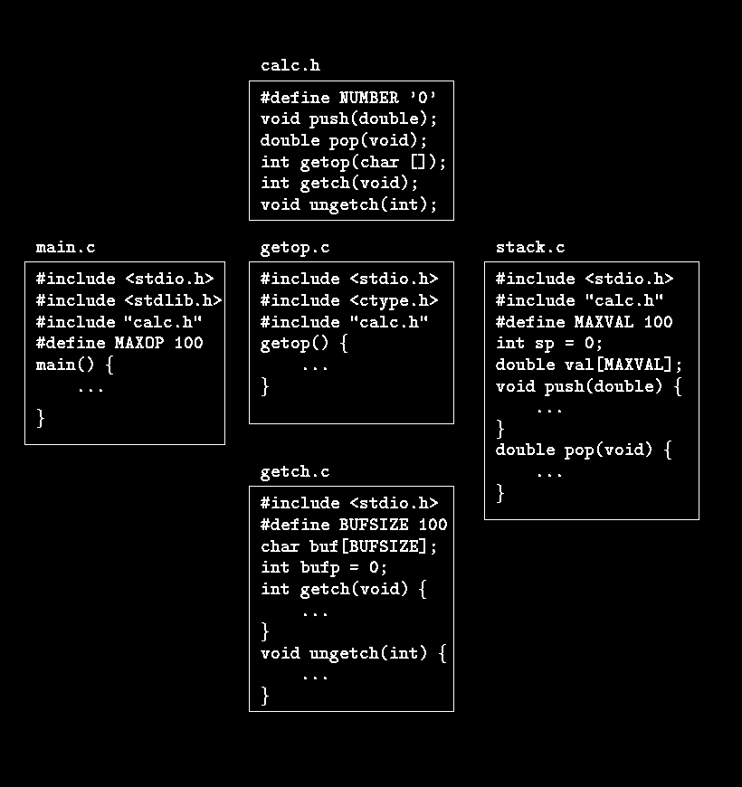
74
Let is now consider dividing the calculator program into several source files, as it might be is
each of the components were substantially bigger. The main function would go in one file,
which we will call main.c; push, pop, and their variables go into a second file, stack.c;
getop goes into a third, getop.c. Finally, getch and ungetch go into a fourth file, getch.c;
we separate them from the others because they would come from a separately-compiled
library in a realistic program.
There is one more thing to worry about - the definitions and declarations shared among files.
As much as possible, we want to centralize this, so that there is only one copy to get and keep
right as the program evolves. Accordingly, we will place this common material in a header
file, calc.h, which will be included as necessary. (The #include line is described in Section
4.11.) The resulting program then looks like this:
There is a tradeoff between the desire that each file have access only to the information it
needs for its job and the practical reality that it is harder to maintain more header files. Up to
some moderate program size, it is probably best to have one header file that contains
75
everything that is to be shared between any two parts of the program; that is the decision we
made here. For a much larger program, more organization and more headers would be needed.
4.6 Static Variables
The variables sp and val in stack.c, and buf and bufp in getch.c, are for the private use of
the functions in their respective source files, and are not meant to be accessed by anything
else. The static declaration, applied to an external variable or function, limits the scope of
that object to the rest of the source file being compiled. External static thus provides a way
to hide names like buf and bufp in the getch-ungetch combination, which must be external
so they can be shared, yet which should not be visible to users of getch and ungetch.
Static storage is specified by prefixing the normal declaration with the word static. If the
two routines and the two variables are compiled in one file, as in
static char buf[BUFSIZE]; /* buffer for ungetch */
static int bufp = 0; /* next free position in buf */
int getch(void) { ... }
void ungetch(int c) { ... }
then no other routine will be able to access buf and bufp, and those names will not conflict
with the same names in other files of the same program. In the same way, the variables that
push and pop use for stack manipulation can be hidden, by declaring sp and val to be
static.
The external static declaration is most often used for variables, but it can be applied to
functions as well. Normally, function names are global, visible to any part of the entire
program. If a function is declared static, however, its name is invisible outside of the file in
which it is declared.
The static declaration can also be applied to internal variables. Internal static variables are
local to a particular function just as automatic variables are, but unlike automatics, they
remain in existence rather than coming and going each time the function is activated. This
means that internal static variables provide private, permanent storage within a single
function.
Exercise 4-11. Modify getop so that it doesn't need to use ungetch. Hint: use an internal
static variable.
4.7 Register Variables
A register declaration advises the compiler that the variable in question will be heavily
used. The idea is that register variables are to be placed in machine registers, which may
result in smaller and faster programs. But compilers are free to ignore the advice.
The register declaration looks like
register int x;
register char c;
76
and so on. The register declaration can only be applied to automatic variables and to the
formal parameters of a function. In this later case, it looks like
f(register unsigned m, register long n)
{
register int i;
...
}
In practice, there are restrictions on register variables, reflecting the realities of underlying
hardware. Only a few variables in each function may be kept in registers, and only certain
types are allowed. Excess register declarations are harmless, however, since the word
register is ignored for excess or disallowed declarations. And it is not possible to take the
address of a register variable (a topic covered in Chapter 5), regardless of whether the variable
is actually placed in a register. The specific restrictions on number and types of register
variables vary from machine to machine.
4.8 Block Structure
C is not a block-structured language in the sense of Pascal or similar languages, because
functions may not be defined within other functions. On the other hand, variables can be
defined in a block-structured fashion within a function. Declarations of variables (including
initializations) may follow the left brace that introduces any compound statement, not just the
one that begins a function. Variables declared in this way hide any identically named
variables in outer blocks, and remain in existence until the matching right brace. For example,
in
if (n > 0) {
int i; /* declare a new i */
for (i = 0; i < n; i++)
...
}
the scope of the variable i is the ``true'' branch of the if; this i is unrelated to any i outside
the block. An automatic variable declared and initialized in a block is initialized each time the
block is entered.
Automatic variables, including formal parameters, also hide external variables and functions
of the same name. Given the declarations
int x;
int y;
f(double x)
{
double y;
}
then within the function f, occurrences of x refer to the parameter, which is a double; outside
f, they refer to the external int. The same is true of the variable y.
As a matter of style, it's best to avoid variable names that conceal names in an outer scope; the
potential for confusion and error is too great.
4.9 Initialization
77
Initialization has been mentioned in passing many times so far, but always peripherally to
some other topic. This section summarizes some of the rules, now that we have discussed the
various storage classes.
In the absence of explicit initialization, external and static variables are guaranteed to be
initialized to zero; automatic and register variables have undefined (i.e., garbage) initial
values.
Scalar variables may be initialized when they are defined, by following the name with an
equals sign and an expression:
int x = 1;
char squota = '\'';
long day = 1000L * 60L * 60L * 24L; /* milliseconds/day */
For external and static variables, the initializer must be a constant expression; the
initialization is done once, conceptionally before the program begins execution. For automatic
and register variables, the initializer is not restricted to being a constant: it may be any
expression involving previously defined values, even function calls. For example, the
initialization of the binary search program in Section 3.3 could be written as
int binsearch(int x, int v[], int n)
{
int low = 0;
int high = n - 1;
int mid;
...
}
instead of
int low, high, mid;
low = 0;
high = n - 1;
In effect, initialization of automatic variables are just shorthand for assignment statements.
Which form to prefer is largely a matter of taste. We have generally used explicit
assignments, because initializers in declarations are harder to see and further away from the
point of use.
An array may be initialized by following its declaration with a list of initializers enclosed in
braces and separated by commas. For example, to initialize an array days with the number of
days in each month:
int days[] = { 31, 28, 31, 30, 31, 30, 31, 31, 30, 31, 30, 31 }
When the size of the array is omitted, the compiler will compute the length by counting the
initializers, of which there are 12 in this case.
If there are fewer initializers for an array than the specified size, the others will be zero for
external, static and automatic variables. It is an error to have too many initializers. There is no
way to specify repetition of an initializer, nor to initialize an element in the middle of an array
without supplying all the preceding values as well.
Character arrays are a special case of initialization; a string may be used instead of the braces
and commas notation:
78
char pattern = "ould";
is a shorthand for the longer but equivalent
char pattern[] = { 'o', 'u', 'l', 'd', '\0' };
In this case, the array size is five (four characters plus the terminating '\0').
4.10 Recursion
C functions may be used recursively; that is, a function may call itself either directly or
indirectly. Consider printing a number as a character string. As we mentioned before, the
digits are generated in the wrong order: low-order digits are available before high-order digits,
but they have to be printed the other way around.
There are two solutions to this problem. On is to store the digits in an array as they are
generated, then print them in the reverse order, as we did with itoa in section 3.6. The
alternative is a recursive solution, in which printd first calls itself to cope with any leading
digits, then prints the trailing digit. Again, this version can fail on the largest negative
number.
#include <stdio.h>
/* printd: print n in decimal */
void printd(int n)
{
if (n < 0) {
putchar('-');
n = -n;
}
if (n / 10)
printd(n / 10);
putchar(n % 10 + '0');
}
When a function calls itself recursively, each invocation gets a fresh set of all the automatic
variables, independent of the previous set. This in printd(123) the first printd receives the
argument n = 123. It passes 12 to a second printd, which in turn passes 1 to a third. The
third-level printd prints 1, then returns to the second level. That printd prints 2, then returns
to the first level. That one prints 3 and terminates.
Another good example of recursion is quicksort, a sorting algorithm developed by C.A.R.
Hoare in 1962. Given an array, one element is chosen and the others partitioned in two
subsets - those less than the partition element and those greater than or equal to it. The same
process is then applied recursively to the two subsets. When a subset has fewer than two
elements, it doesn't need any sorting; this stops the recursion.
Our version of quicksort is not the fastest possible, but it's one of the simplest. We use the
middle element of each subarray for partitioning.
/* qsort: sort v[left]...v[right] into increasing order */
void qsort(int v[], int left, int right)
{
int i, last;
void swap(int v[], int i, int j);
79
if (left >= right) /* do nothing if array contains */
return; /* fewer than two elements */
swap(v, left, (left + right)/2); /* move partition elem */
last = left; /* to v[0] */
for (i = left + 1; i <= right; i++) /* partition */
if (v[i] < v[left])
swap(v, ++last, i);
swap(v, left, last); /* restore partition elem */
qsort(v, left, last-1);
qsort(v, last+1, right);
}
We moved the swapping operation into a separate function swap because it occurs three times
in qsort.
/* swap: interchange v[i] and v[j] */
void swap(int v[], int i, int j)
{
int temp;
temp = v[i];
v[i] = v[j];
v[j] = temp;
}
The standard library includes a version of qsort that can sort objects of any type.
Recursion may provide no saving in storage, since somewhere a stack of the values being
processed must be maintained. Nor will it be faster. But recursive code is more compact, and
often much easier to write and understand than the non-recursive equivalent. Recursion is
especially convenient for recursively defined data structures like trees, we will see a nice
example in Section 6.6.
Exercise 4-12. Adapt the ideas of printd to write a recursive version of itoa; that is, convert
an integer into a string by calling a recursive routine.
Exercise 4-13. Write a recursive version of the function reverse(s), which reverses the
string s in place.
4.11 The C Preprocessor
C provides certain language facilities by means of a preprocessor, which is conceptionally a
separate first step in compilation. The two most frequently used features are #include, to
include the contents of a file during compilation, and #define, to replace a token by an
arbitrary sequence of characters. Other features described in this section include conditional
compilation and macros with arguments.
4.11.1 File Inclusion
File inclusion makes it easy to handle collections of #defines and declarations (among other
things). Any source line of the form
#include "filename"
or
#include <filename>
is replaced by the contents of the file filename. If the filename is quoted, searching for the file
typically begins where the source program was found; if it is not found there, or if the name is
80
enclosed in < and >, searching follows an implementation-defined rule to find the file. An
included file may itself contain #include lines.
There are often several #include lines at the beginning of a source file, to include common
#define statements and extern declarations, or to access the function prototype declarations
for library functions from headers like <stdio.h>. (Strictly speaking, these need not be files;
the details of how headers are accessed are implementation-dependent.)
#include is the preferred way to tie the declarations together for a large program. It
guarantees that all the source files will be supplied with the same definitions and variable
declarations, and thus eliminates a particularly nasty kind of bug. Naturally, when an included
file is changed, all files that depend on it must be recompiled.
4.11.2 Macro Substitution
A definition has the form
#define name replacement text
It calls for a macro substitution of the simplest kind - subsequent occurrences of the token
name will be replaced by the replacement text. The name in a #define has the same form as a
variable name; the replacement text is arbitrary. Normally the replacement text is the rest of
the line, but a long definition may be continued onto several lines by placing a \ at the end of
each line to be continued. The scope of a name defined with #define is from its point of
definition to the end of the source file being compiled. A definition may use previous
definitions. Substitutions are made only for tokens, and do not take place within quoted
strings. For example, if YES is a defined name, there would be no substitution in
printf("YES") or in YESMAN.
Any name may be defined with any replacement text. For example
#define forever for (;;) /* infinite loop */
defines a new word, forever, for an infinite loop.
It is also possible to define macros with arguments, so the replacement text can be different
for different calls of the macro. As an example, define a macro called max:
#define max(A, B) ((A) > (B) ? (A) : (B))
Although it looks like a function call, a use of max expands into in-line code. Each occurrence
of a formal parameter (here A or B) will be replaced by the corresponding actual argument.
Thus the line
x = max(p+q, r+s);
will be replaced by the line
x = ((p+q) > (r+s) ? (p+q) : (r+s));
So long as the arguments are treated consistently, this macro will serve for any data type;
there is no need for different kinds of max for different data types, as there would be with
functions.
81
If you examine the expansion of max, you will notice some pitfalls. The expressions are
evaluated twice; this is bad if they involve side effects like increment operators or input and
output. For instance
max(i++, j++) /* WRONG */
will increment the larger twice. Some care also has to be taken with parentheses to make sure
the order of evaluation is preserved; consider what happens when the macro
#define square(x) x * x /* WRONG */
is invoked as square(z+1).
Nonetheless, macros are valuable. One practical example comes from <stdio.h>, in which
getchar and putchar are often defined as macros to avoid the run-time overhead of a
function call per character processed. The functions in <ctype.h> are also usually
implemented as macros.
Names may be undefined with #undef, usually to ensure that a routine is really a function, not
a macro:
#undef getchar
int getchar(void) { ... }
Formal parameters are not replaced within quoted strings. If, however, a parameter name is
preceded by a # in the replacement text, the combination will be expanded into a quoted string
with the parameter replaced by the actual argument. This can be combined with string
concatenation to make, for example, a debugging print macro:
#define dprint(expr) printf(#expr " = %g\n", expr)
When this is invoked, as in
dprint(x/y)
the macro is expanded into
printf("x/y" " = &g\n", x/y);
and the strings are concatenated, so the effect is
printf("x/y = &g\n", x/y);
Within the actual argument, each " is replaced by \" and each \ by \\, so the result is a legal
string constant.
The preprocessor operator ## provides a way to concatenate actual arguments during macro
expansion. If a parameter in the replacement text is adjacent to a ##, the parameter is replaced
by the actual argument, the ## and surrounding white space are removed, and the result is re-
scanned. For example, the macro paste concatenates its two arguments:
#define paste(front, back) front ## back
so paste(name, 1) creates the token name1.
The rules for nested uses of ## are arcane; further details may be found in Appendix A.
Exercise 4-14. Define a macro swap(t,x,y) that interchanges two arguments of type t.
(Block structure will help.)
82
4.11.3 Conditional Inclusion
It is possible to control preprocessing itself with conditional statements that are evaluated
during preprocessing. This provides a way to include code selectively, depending on the value
of conditions evaluated during compilation.
The #if line evaluates a constant integer expression (which may not include sizeof, casts, or
enum constants). If the expression is non-zero, subsequent lines until an #endif or #elif or
#else are included. (The preprocessor statement #elif is like else-if.) The expression
defined(name) in a #if is 1 if the name has been defined, and 0 otherwise.
For example, to make sure that the contents of a file hdr.h are included only once, the
contents of the file are surrounded with a conditional like this:
#if !defined(HDR)
#define HDR
/* contents of hdr.h go here */
#endif
The first inclusion of hdr.h defines the name HDR; subsequent inclusions will find the name
defined and skip down to the #endif. A similar style can be used to avoid including files
multiple times. If this style is used consistently, then each header can itself include any other
headers on which it depends, without the user of the header having to deal with the
interdependence.
This sequence tests the name SYSTEM to decide which version of a header to include:
#if SYSTEM == SYSV
#define HDR "sysv.h"
#elif SYSTEM == BSD
#define HDR "bsd.h"
#elif SYSTEM == MSDOS
#define HDR "msdos.h"
#else
#define HDR "default.h"
#endif
#include HDR
The #ifdef and #ifndef lines are specialized forms that test whether a name is defined. The
first example of #if above could have been written
#ifndef HDR
#define HDR
/* contents of hdr.h go here */
#endif
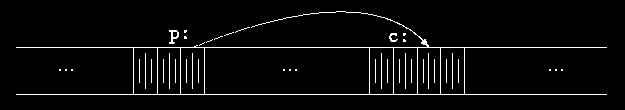
83
Chapter 5 - Pointers and Arrays
A pointer is a variable that contains the address of a variable. Pointers are much used in C,
partly because they are sometimes the only way to express a computation, and partly because
they usually lead to more compact and efficient code than can be obtained in other ways.
Pointers and arrays are closely related; this chapter also explores this relationship and shows
how to exploit it.
Pointers have been lumped with the goto statement as a marvelous way to create impossible-
to-understand programs. This is certainly true when they are used carelessly, and it is easy to
create pointers that point somewhere unexpected. With discipline, however, pointers can also
be used to achieve clarity and simplicity. This is the aspect that we will try to illustrate.
The main change in ANSI C is to make explicit the rules about how pointers can be
manipulated, in effect mandating what good programmers already practice and good
compilers already enforce. In addition, the type void * (pointer to void) replaces char * as
the proper type for a generic pointer.
5.1 Pointers and Addresses
Let us begin with a simplified picture of how memory is organized. A typical machine has an
array of consecutively numbered or addressed memory cells that may be manipulated
individually or in contiguous groups. One common situation is that any byte can be a char, a
pair of one-byte cells can be treated as a short integer, and four adjacent bytes form a long.
A pointer is a group of cells (often two or four) that can hold an address. So if c is a char and
p is a pointer that points to it, we could represent the situation this way:
The unary operator & gives the address of an object, so the statement
p = &c;
assigns the address of c to the variable p, and p is said to ``point to'' c. The & operator only
applies to objects in memory: variables and array elements. It cannot be applied to
expressions, constants, or register variables.
The unary operator * is the indirection or dereferencing operator; when applied to a pointer, it
accesses the object the pointer points to. Suppose that x and y are integers and ip is a pointer
to int. This artificial sequence shows how to declare a pointer and how to use & and *:
int x = 1, y = 2, z[10];
int *ip; /* ip is a pointer to int */
84
ip = &x; /* ip now points to x */
y = *ip; /* y is now 1 */
*ip = 0; /* x is now 0 */
ip = &z[0]; /* ip now points to z[0] */
The declaration of x, y, and z are what we've seen all along. The declaration of the pointer ip,
int *ip;
is intended as a mnemonic; it says that the expression *ip is an int. The syntax of the
declaration for a variable mimics the syntax of expressions in which the variable might
appear. This reasoning applies to function declarations as well. For example,
double *dp, atof(char *);
says that in an expression *dp and atof(s) have values of double, and that the argument of
atof is a pointer to char.
You should also note the implication that a pointer is constrained to point to a particular kind
of object: every pointer points to a specific data type. (There is one exception: a ``pointer to
void'' is used to hold any type of pointer but cannot be dereferenced itself. We'll come back to
it in Section 5.11.)
If ip points to the integer x, then *ip can occur in any context where x could, so
*ip = *ip + 10;
increments *ip by 10.
The unary operators * and & bind more tightly than arithmetic operators, so the assignment
y = *ip + 1
takes whatever ip points at, adds 1, and assigns the result to y, while
*ip += 1
increments what ip points to, as do
++*ip
and
(*ip)++
The parentheses are necessary in this last example; without them, the expression would
increment ip instead of what it points to, because unary operators like * and ++ associate right
to left.
Finally, since pointers are variables, they can be used without dereferencing. For example, if
iq is another pointer to int,
iq = ip
copies the contents of ip into iq, thus making iq point to whatever ip pointed to.
5.2 Pointers and Function Arguments
Since C passes arguments to functions by value, there is no direct way for the called function
to alter a variable in the calling function. For instance, a sorting routine might exchange two
out-of-order arguments with a function called swap. It is not enough to write
85
swap(a, b);
where the swap function is defined as
void swap(int x, int y) /* WRONG */
{
int temp;
temp = x;
x = y;
y = temp;
}
Because of call by value, swap can't affect the arguments a and b in the routine that called it.
The function above swaps copies of a and b.
The way to obtain the desired effect is for the calling program to pass pointers to the values to
be changed:
swap(&a, &b);
Since the operator & produces the address of a variable, &a is a pointer to a. In swap itself, the
parameters are declared as pointers, and the operands are accessed indirectly through them.
void swap(int *px, int *py) /* interchange *px and *py */
{
int temp;
temp = *px;
*px = *py;
*py = temp;
}
Pictorially:
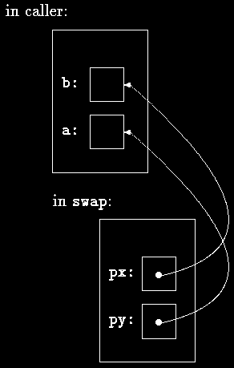
86
Pointer arguments enable a function to access and change objects in the function that called it.
As an example, consider a function getint that performs free-format input conversion by
breaking a stream of characters into integer values, one integer per call. getint has to return
the value it found and also signal end of file when there is no more input. These values have
to be passed back by separate paths, for no matter what value is used for EOF, that could also
be the value of an input integer.
One solution is to have getint return the end of file status as its function value, while using a
pointer argument to store the converted integer back in the calling function. This is the
scheme used by scanf as well; see Section 7.4.
The following loop fills an array with integers by calls to getint:
int n, array[SIZE], getint(int *);
for (n = 0; n < SIZE && getint(&array[n]) != EOF; n++)
;
Each call sets array[n] to the next integer found in the input and increments n. Notice that it
is essential to pass the address of array[n] to getint. Otherwise there is no way for getint
to communicate the converted integer back to the caller.
Our version of getint returns EOF for end of file, zero if the next input is not a number, and a
positive value if the input contains a valid number.
#include <ctype.h>
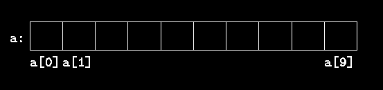
87
int getch(void);
void ungetch(int);
/* getint: get next integer from input into *pn */
int getint(int *pn)
{
int c, sign;
while (isspace(c = getch())) /* skip white space */
;
if (!isdigit(c) && c != EOF && c != '+' && c != '-') {
ungetch(c); /* it is not a number */
return 0;
}
sign = (c == '-') ? -1 : 1;
if (c == '+' || c == '-')
c = getch();
for (*pn = 0; isdigit(c), c = getch())
*pn = 10 * *pn + (c - '0');
*pn *= sign;
if (c != EOF)
ungetch(c);
return c;
}
Throughout getint, *pn is used as an ordinary int variable. We have also used getch and
ungetch (described in Section 4.3) so the one extra character that must be read can be pushed
back onto the input.
Exercise 5-1. As written, getint treats a + or - not followed by a digit as a valid
representation of zero. Fix it to push such a character back on the input.
Exercise 5-2. Write getfloat, the floating-point analog of getint. What type does
getfloat return as its function value?
5.3 Pointers and Arrays
In C, there is a strong relationship between pointers and arrays, strong enough that pointers
and arrays should be discussed simultaneously. Any operation that can be achieved by array
subscripting can also be done with pointers. The pointer version will in general be faster but,
at least to the uninitiated, somewhat harder to understand.
The declaration
int a[10];
defines an array of size 10, that is, a block of 10 consecutive objects named a[0], a[1],
...,a[9].
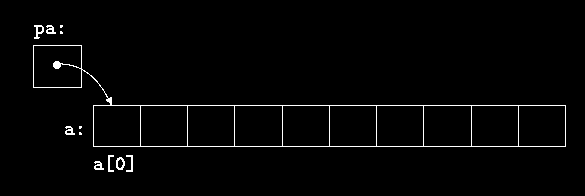
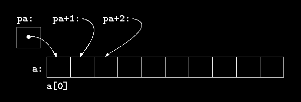
88
The notation a[i] refers to the i-th element of the array. If pa is a pointer to an integer,
declared as
int *pa;
then the assignment
pa = &a[0];
sets pa to point to element zero of a; that is, pa contains the address of a[0].
Now the assignment
x = *pa;
will copy the contents of a[0] into x.
If pa points to a particular element of an array, then by definition pa+1 points to the next
element, pa+i points i elements after pa, and pa-i points i elements before. Thus, if pa
points to a[0],
*(pa+1)
refers to the contents of a[1], pa+i is the address of a[i], and *(pa+i) is the contents of
a[i].
These remarks are true regardless of the type or size of the variables in the array a. The
meaning of ``adding 1 to a pointer,'' and by extension, all pointer arithmetic, is that pa+1
points to the next object, and pa+i points to the i-th object beyond pa.
89
The correspondence between indexing and pointer arithmetic is very close. By definition, the
value of a variable or expression of type array is the address of element zero of the array.
Thus after the assignment
pa = &a[0];
pa and a have identical values. Since the name of an array is a synonym for the location of the
initial element, the assignment pa=&a[0] can also be written as
pa = a;
Rather more surprising, at first sight, is the fact that a reference to a[i] can also be written as
*(a+i). In evaluating a[i], C converts it to *(a+i) immediately; the two forms are
equivalent. Applying the operator & to both parts of this equivalence, it follows that &a[i]
and a+i are also identical: a+i is the address of the i-th element beyond a. As the other side
of this coin, if pa is a pointer, expressions might use it with a subscript; pa[i] is identical to
*(pa+i). In short, an array-and-index expression is equivalent to one written as a pointer and
offset.
There is one difference between an array name and a pointer that must be kept in mind. A
pointer is a variable, so pa=a and pa++ are legal. But an array name is not a variable;
constructions like a=pa and a++ are illegal.
When an array name is passed to a function, what is passed is the location of the initial
element. Within the called function, this argument is a local variable, and so an array name
parameter is a pointer, that is, a variable containing an address. We can use this fact to write
another version of strlen, which computes the length of a string.
/* strlen: return length of string s */
int strlen(char *s)
{
int n;
for (n = 0; *s != '\0', s++)
n++;
return n;
}
Since s is a pointer, incrementing it is perfectly legal; s++ has no effect on the character string
in the function that called strlen, but merely increments strlen's private copy of the
pointer. That means that calls like
strlen("hello, world"); /* string constant */
strlen(array); /* char array[100]; */
strlen(ptr); /* char *ptr; */
all work.
As formal parameters in a function definition,
char s[];
and
char *s;
are equivalent; we prefer the latter because it says more explicitly that the variable is a
pointer. When an array name is passed to a function, the function can at its convenience
90
believe that it has been handed either an array or a pointer, and manipulate it accordingly. It
can even use both notations if it seems appropriate and clear.
It is possible to pass part of an array to a function, by passing a pointer to the beginning of the
subarray. For example, if a is an array,
f(&a[2])
and
f(a+2)
both pass to the function f the address of the subarray that starts at a[2]. Within f, the
parameter declaration can read
f(int arr[]) { ... }
or
f(int *arr) { ... }
So as far as f is concerned, the fact that the parameter refers to part of a larger array is of no
consequence.
If one is sure that the elements exist, it is also possible to index backwards in an array; p[-1],
p[-2], and so on are syntactically legal, and refer to the elements that immediately precede
p[0]. Of course, it is illegal to refer to objects that are not within the array bounds.
5.4 Address Arithmetic
If p is a pointer to some element of an array, then p++ increments p to point to the next
element, and p+=i increments it to point i elements beyond where it currently does. These
and similar constructions are the simples forms of pointer or address arithmetic.
C is consistent and regular in its approach to address arithmetic; its integration of pointers,
arrays, and address arithmetic is one of the strengths of the language. Let us illustrate by
writing a rudimentary storage allocator. There are two routines. The first, alloc(n), returns a
pointer to n consecutive character positions, which can be used by the caller of alloc for
storing characters. The second, afree(p), releases the storage thus acquired so it can be re-
used later. The routines are ``rudimentary'' because the calls to afree must be made in the
opposite order to the calls made on alloc. That is, the storage managed by alloc and afree
is a stack, or last-in, first-out. The standard library provides analogous functions called
malloc and free that have no such restrictions; in Section 8.7 we will show how they can be
implemented.
The easiest implementation is to have alloc hand out pieces of a large character array that we
will call allocbuf. This array is private to alloc and afree. Since they deal in pointers, not
array indices, no other routine need know the name of the array, which can be declared
static in the source file containing alloc and afree, and thus be invisible outside it. In
practical implementations, the array may well not even have a name; it might instead be
obtained by calling malloc or by asking the operating system for a pointer to some unnamed
block of storage.
The other information needed is how much of allocbuf has been used. We use a pointer,
called allocp, that points to the next free element. When alloc is asked for n characters, it
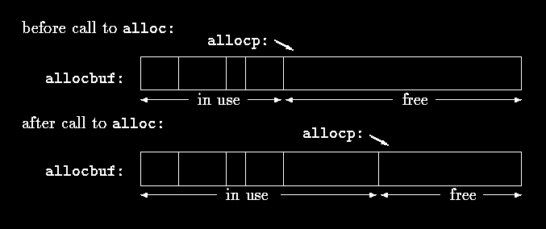
91
checks to see if there is enough room left in allocbuf. If so, alloc returns the current value
of allocp (i.e., the beginning of the free block), then increments it by n to point to the next
free area. If there is no room, alloc returns zero. afree(p) merely sets allocp to p if p is
inside allocbuf.
#define ALLOCSIZE 10000 /* size of available space */
static char allocbuf[ALLOCSIZE]; /* storage for alloc */
static char *allocp = allocbuf; /* next free position */
char *alloc(int n) /* return pointer to n characters */
{
if (allocbuf + ALLOCSIZE - allocp >= n) { /* it fits */
allocp += n;
return allocp - n; /* old p */
} else /* not enough room */
return 0;
}
void afree(char *p) /* free storage pointed to by p */
{
if (p >= allocbuf && p < allocbuf + ALLOCSIZE)
allocp = p;
}
In general a pointer can be initialized just as any other variable can, though normally the only
meaningful values are zero or an expression involving the address of previously defined data
of appropriate type. The declaration
static char *allocp = allocbuf;
defines allocp to be a character pointer and initializes it to point to the beginning of
allocbuf, which is the next free position when the program starts. This could also have been
written
static char *allocp = &allocbuf[0];
since the array name is the address of the zeroth element.
The test
if (allocbuf + ALLOCSIZE - allocp >= n) { /* it fits */
92
checks if there's enough room to satisfy a request for n characters. If there is, the new value of
allocp would be at most one beyond the end of allocbuf. If the request can be satisfied,
alloc returns a pointer to the beginning of a block of characters (notice the declaration of the
function itself). If not, alloc must return some signal that there is no space left. C guarantees
that zero is never a valid address for data, so a return value of zero can be used to signal an
abnormal event, in this case no space.
Pointers and integers are not interchangeable. Zero is the sole exception: the constant zero
may be assigned to a pointer, and a pointer may be compared with the constant zero. The
symbolic constant NULL is often used in place of zero, as a mnemonic to indicate more clearly
that this is a special value for a pointer. NULL is defined in <stdio.h>. We will use NULL
henceforth.
Tests like
if (allocbuf + ALLOCSIZE - allocp >= n) { /* it fits */
and
if (p >= allocbuf && p < allocbuf + ALLOCSIZE)
show several important facets of pointer arithmetic. First, pointers may be compared under
certain circumstances. If p and q point to members of the same array, then relations like ==,
!=, <, >=, etc., work properly. For example,
p < q
is true if p points to an earlier element of the array than q does. Any pointer can be
meaningfully compared for equality or inequality with zero. But the behavior is undefined for
arithmetic or comparisons with pointers that do not point to members of the same array.
(There is one exception: the address of the first element past the end of an array can be used in
pointer arithmetic.)
Second, we have already observed that a pointer and an integer may be added or subtracted.
The construction
p + n
means the address of the n-th object beyond the one p currently points to. This is true
regardless of the kind of object p points to; n is scaled according to the size of the objects p
points to, which is determined by the declaration of p. If an int is four bytes, for example, the
int will be scaled by four.
Pointer subtraction is also valid: if p and q point to elements of the same array, and p<q, then
q-p+1 is the number of elements from p to q inclusive. This fact can be used to write yet
another version of strlen:
/* strlen: return length of string s */
int strlen(char *s)
{
char *p = s;
while (*p != '\0')
p++;
return p - s;
}
93
In its declaration, p is initialized to s, that is, to point to the first character of the string. In the
while loop, each character in turn is examined until the '\0' at the end is seen. Because p
points to characters, p++ advances p to the next character each time, and p-s gives the number
of characters advanced over, that is, the string length. (The number of characters in the string
could be too large to store in an int. The header <stddef.h> defines a type ptrdiff_t that
is large enough to hold the signed difference of two pointer values. If we were being cautious,
however, we would use size_t for the return value of strlen, to match the standard library
version. size_t is the unsigned integer type returned by the sizeof operator.
Pointer arithmetic is consistent: if we had been dealing with floats, which occupy more
storage that chars, and if p were a pointer to float, p++ would advance to the next float.
Thus we could write another version of alloc that maintains floats instead of chars, merely
by changing char to float throughout alloc and afree. All the pointer manipulations
automatically take into account the size of the objects pointed to.
The valid pointer operations are assignment of pointers of the same type, adding or
subtracting a pointer and an integer, subtracting or comparing two pointers to members of the
same array, and assigning or comparing to zero. All other pointer arithmetic is illegal. It is not
legal to add two pointers, or to multiply or divide or shift or mask them, or to add float or
double to them, or even, except for void *, to assign a pointer of one type to a pointer of
another type without a cast.
5.5 Character Pointers and Functions
A string constant, written as
"I am a string"
is an array of characters. In the internal representation, the array is terminated with the null
character '\0' so that programs can find the end. The length in storage is thus one more than
the number of characters between the double quotes.
Perhaps the most common occurrence of string constants is as arguments to functions, as in
printf("hello, world\n");
When a character string like this appears in a program, access to it is through a character
pointer; printf receives a pointer to the beginning of the character array. That is, a string
constant is accessed by a pointer to its first element.
String constants need not be function arguments. If pmessage is declared as
char *pmessage;
then the statement
pmessage = "now is the time";
assigns to pmessage a pointer to the character array. This is not a string copy; only pointers
are involved. C does not provide any operators for processing an entire string of characters as
a unit.
There is an important difference between these definitions:
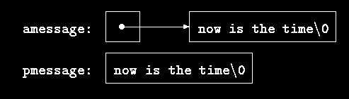
94
char amessage[] = "now is the time"; /* an array */
char *pmessage = "now is the time"; /* a pointer */
amessage is an array, just big enough to hold the sequence of characters and '\0' that
initializes it. Individual characters within the array may be changed but amessage will always
refer to the same storage. On the other hand, pmessage is a pointer, initialized to point to a
string constant; the pointer may subsequently be modified to point elsewhere, but the result is
undefined if you try to modify the string contents.
We will illustrate more aspects of pointers and arrays by studying versions of two useful
functions adapted from the standard library. The first function is strcpy(s,t), which copies
the string t to the string s. It would be nice just to say s=t but this copies the pointer, not the
characters. To copy the characters, we need a loop. The array version first:
/* strcpy: copy t to s; array subscript version */
void strcpy(char *s, char *t)
{
int i;
i = 0;
while ((s[i] = t[i]) != '\0')
i++;
}
For contrast, here is a version of strcpy with pointers:
/* strcpy: copy t to s; pointer version */
void strcpy(char *s, char *t)
{
int i;
i = 0;
while ((*s = *t) != '\0') {
s++;
t++;
}
}
Because arguments are passed by value, strcpy can use the parameters s and t in any way it
pleases. Here they are conveniently initialized pointers, which are marched along the arrays a
character at a time, until the '\0' that terminates t has been copied into s.
In practice, strcpy would not be written as we showed it above. Experienced C programmers
would prefer
/* strcpy: copy t to s; pointer version 2 */
void strcpy(char *s, char *t)
{
while ((*s++ = *t++) != '\0')
;
95
}
This moves the increment of s and t into the test part of the loop. The value of *t++ is the
character that t pointed to before t was incremented; the postfix ++ doesn't change t until
after this character has been fetched. In the same way, the character is stored into the old s
position before s is incremented. This character is also the value that is compared against
'\0' to control the loop. The net effect is that characters are copied from t to s, up and
including the terminating '\0'.
As the final abbreviation, observe that a comparison against '\0' is redundant, since the
question is merely whether the expression is zero. So the function would likely be written as
/* strcpy: copy t to s; pointer version 3 */
void strcpy(char *s, char *t)
{
while (*s++ = *t++)
;
}
Although this may seem cryptic at first sight, the notational convenience is considerable, and
the idiom should be mastered, because you will see it frequently in C programs.
The strcpy in the standard library (<string.h>) returns the target string as its function
value.
The second routine that we will examine is strcmp(s,t), which compares the character
strings s and t, and returns negative, zero or positive if s is lexicographically less than, equal
to, or greater than t. The value is obtained by subtracting the characters at the first position
where s and t disagree.
/* strcmp: return <0 if s<t, 0 if s==t, >0 if s>t */
int strcmp(char *s, char *t)
{
int i;
for (i = 0; s[i] == t[i]; i++)
if (s[i] == '\0')
return 0;
return s[i] - t[i];
}
The pointer version of strcmp:
/* strcmp: return <0 if s<t, 0 if s==t, >0 if s>t */
int strcmp(char *s, char *t)
{
for ( ; *s == *t; s++, t++)
if (*s == '\0')
return 0;
return *s - *t;
}
Since ++ and -- are either prefix or postfix operators, other combinations of * and ++ and --
occur, although less frequently. For example,
*--p
decrements p before fetching the character that p points to. In fact, the pair of expressions
*p++ = val; /* push val onto stack */
val = *--p; /* pop top of stack into val */
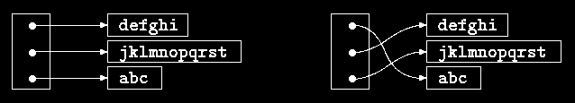
96
are the standard idiom for pushing and popping a stack; see Section 4.3.
The header <string.h> contains declarations for the functions mentioned in this section, plus
a variety of other string-handling functions from the standard library.
Exercise 5-3. Write a pointer version of the function strcat that we showed in Chapter 2:
strcat(s,t) copies the string t to the end of s.
Exercise 5-4. Write the function strend(s,t), which returns 1 if the string t occurs at the
end of the string s, and zero otherwise.
Exercise 5-5. Write versions of the library functions strncpy, strncat, and strncmp, which
operate on at most the first n characters of their argument strings. For example,
strncpy(s,t,n) copies at most n characters of t to s. Full descriptions are in Appendix B.
Exercise 5-6. Rewrite appropriate programs from earlier chapters and exercises with pointers
instead of array indexing. Good possibilities include getline (Chapters 1 and 4), atoi, itoa,
and their variants (Chapters 2, 3, and 4), reverse (Chapter 3), and strindex and getop
(Chapter 4).
5.6 Pointer Arrays; Pointers to Pointers
Since pointers are variables themselves, they can be stored in arrays just as other variables
can. Let us illustrate by writing a program that will sort a set of text lines into alphabetic
order, a stripped-down version of the UNIX program sort.
In Chapter 3, we presented a Shell sort function that would sort an array of integers, and in
Chapter 4 we improved on it with a quicksort. The same algorithms will work, except that
now we have to deal with lines of text, which are of different lengths, and which, unlike
integers, can't be compared or moved in a single operation. We need a data representation that
will cope efficiently and conveniently with variable-length text lines.
This is where the array of pointers enters. If the lines to be sorted are stored end-to-end in one
long character array, then each line can be accessed by a pointer to its first character. The
pointers themselves can bee stored in an array. Two lines can be compared by passing their
pointers to strcmp. When two out-of-order lines have to be exchanged, the pointers in the
pointer array are exchanged, not the text lines themselves.
This eliminates the twin problems of complicated storage management and high overhead that
would go with moving the lines themselves.
The sorting process has three steps:
97
read all the lines of input
sort them
print them in order
As usual, it's best to divide the program into functions that match this natural division, with
the main routine controlling the other functions. Let us defer the sorting step for a moment,
and concentrate on the data structure and the input and output.
The input routine has to collect and save the characters of each line, and build an array of
pointers to the lines. It will also have to count the number of input lines, since that
information is needed for sorting and printing. Since the input function can only cope with a
finite number of input lines, it can return some illegal count like -1 if too much input is
presented.
The output routine only has to print the lines in the order in which they appear in the array of
pointers.
#include <stdio.h>
#include <string.h>
#define MAXLINES 5000 /* max #lines to be sorted */
char *lineptr[MAXLINES]; /* pointers to text lines */
int readlines(char *lineptr[], int nlines);
void writelines(char *lineptr[], int nlines);
void qsort(char *lineptr[], int left, int right);
/* sort input lines */
main()
{
int nlines; /* number of input lines read */
if ((nlines = readlines(lineptr, MAXLINES)) >= 0) {
qsort(lineptr, 0, nlines-1);
writelines(lineptr, nlines);
return 0;
} else {
printf("error: input too big to sort\n");
return 1;
}
}
#define MAXLEN 1000 /* max length of any input line */
int getline(char *, int);
char *alloc(int);
/* readlines: read input lines */
int readlines(char *lineptr[], int maxlines)
{
int len, nlines;
char *p, line[MAXLEN];
nlines = 0;
while ((len = getline(line, MAXLEN)) > 0)
if (nlines >= maxlines || p = alloc(len) == NULL)
return -1;
else {
98
line[len-1] = '\0'; /* delete newline */
strcpy(p, line);
lineptr[nlines++] = p;
}
return nlines;
}
/* writelines: write output lines */
void writelines(char *lineptr[], int nlines)
{
int i;
for (i = 0; i < nlines; i++)
printf("%s\n", lineptr[i]);
}
The function getline is from Section 1.9.
The main new thing is the declaration for lineptr:
char *lineptr[MAXLINES]
says that lineptr is an array of MAXLINES elements, each element of which is a pointer to a
char. That is, lineptr[i] is a character pointer, and *lineptr[i] is the character it points
to, the first character of the i-th saved text line.
Since lineptr is itself the name of an array, it can be treated as a pointer in the same manner
as in our earlier examples, and writelines can be written instead as
/* writelines: write output lines */
void writelines(char *lineptr[], int nlines)
{
while (nlines-- > 0)
printf("%s\n", *lineptr++);
}
Initially, *lineptr points to the first line; each element advances it to the next line pointer
while nlines is counted down.
With input and output under control, we can proceed to sorting. The quicksort from Chapter 4
needs minor changes: the declarations have to be modified, and the comparison operation
must be done by calling strcmp. The algorithm remains the same, which gives us some
confidence that it will still work.
/* qsort: sort v[left]...v[right] into increasing order */
void qsort(char *v[], int left, int right)
{
int i, last;
void swap(char *v[], int i, int j);
if (left >= right) /* do nothing if array contains */
return; /* fewer than two elements */
swap(v, left, (left + right)/2);
last = left;
for (i = left+1; i <= right; i++)
if (strcmp(v[i], v[left]) < 0)
swap(v, ++last, i);
swap(v, left, last);
qsort(v, left, last-1);
99
qsort(v, last+1, right);
}
Similarly, the swap routine needs only trivial changes:
/* swap: interchange v[i] and v[j] */
void swap(char *v[], int i, int j)
{
char *temp;
temp = v[i];
v[i] = v[j];
v[j] = temp;
}
Since any individual element of v (alias lineptr) is a character pointer, temp must be also, so
one can be copied to the other.
Exercise 5-7. Rewrite readlines to store lines in an array supplied by main, rather than
calling alloc to maintain storage. How much faster is the program?
5.7 Multi-dimensional Arrays
C provides rectangular multi-dimensional arrays, although in practice they are much less used
than arrays of pointers. In this section, we will show some of their properties.
Consider the problem of date conversion, from day of the month to day of the year and vice
versa. For example, March 1 is the 60th day of a non-leap year, and the 61st day of a leap
year. Let us define two functions to do the conversions: day_of_year converts the month and
day into the day of the year, and month_day converts the day of the year into the month and
day. Since this latter function computes two values, the month and day arguments will be
pointers:
month_day(1988, 60, &m, &d)
sets m to 2 and d to 29 (February 29th).
These functions both need the same information, a table of the number of days in each month
(``thirty days hath September ...''). Since the number of days per month differs for leap years
and non-leap years, it's easier to separate them into two rows of a two-dimensional array than
to keep track of what happens to February during computation. The array and the functions
for performing the transformations are as follows:
static char daytab[2][13] = {
{0, 31, 28, 31, 30, 31, 30, 31, 31, 30, 31, 30, 31},
{0, 31, 29, 31, 30, 31, 30, 31, 31, 30, 31, 30, 31}
};
/* day_of_year: set day of year from month & day */
int day_of_year(int year, int month, int day)
{
int i, leap;
leap = year%4 == 0 && year%100 != 0 || year%400 == 0;
for (i = 1; i < month; i++)
day += daytab[leap][i];
return day;
}
100
/* month_day: set month, day from day of year */
void month_day(int year, int yearday, int *pmonth, int *pday)
{
int i, leap;
leap = year%4 == 0 && year%100 != 0 || year%400 == 0;
for (i = 1; yearday > daytab[leap][i]; i++)
yearday -= daytab[leap][i];
*pmonth = i;
*pday = yearday;
}
Recall that the arithmetic value of a logical expression, such as the one for leap, is either zero
(false) or one (true), so it can be used as a subscript of the array daytab.
The array daytab has to be external to both day_of_year and month_day, so they can both
use it. We made it char to illustrate a legitimate use of char for storing small non-character
integers.
daytab is the first two-dimensional array we have dealt with. In C, a two-dimensional array is
really a one-dimensional array, each of whose elements is an array. Hence subscripts are
written as
daytab[i][j] /* [row][col] */
rather than
daytab[i,j] /* WRONG */
Other than this notational distinction, a two-dimensional array can be treated in much the
same way as in other languages. Elements are stored by rows, so the rightmost subscript, or
column, varies fastest as elements are accessed in storage order.
An array is initialized by a list of initializers in braces; each row of a two-dimensional array is
initialized by a corresponding sub-list. We started the array daytab with a column of zero so
that month numbers can run from the natural 1 to 12 instead of 0 to 11. Since space is not at a
premium here, this is clearer than adjusting the indices.
If a two-dimensional array is to be passed to a function, the parameter declaration in the
function must include the number of columns; the number of rows is irrelevant, since what is
passed is, as before, a pointer to an array of rows, where each row is an array of 13 ints. In
this particular case, it is a pointer to objects that are arrays of 13 ints. Thus if the array
daytab is to be passed to a function f, the declaration of f would be:
f(int daytab[2][13]) { ... }
It could also be
f(int daytab[][13]) { ... }
since the number of rows is irrelevant, or it could be
f(int (*daytab)[13]) { ... }
which says that the parameter is a pointer to an array of 13 integers. The parentheses are
necessary since brackets [] have higher precedence than *. Without parentheses, the
declaration
int *daytab[13]
101
is an array of 13 pointers to integers. More generally, only the first dimension (subscript) of
an array is free; all the others have to be specified.
Section 5.12 has a further discussion of complicated declarations.
Exercise 5-8. There is no error checking in day_of_year or month_day. Remedy this defect.
5.8 Initialization of Pointer Arrays
Consider the problem of writing a function month_name(n), which returns a pointer to a
character string containing the name of the n-th month. This is an ideal application for an
internal static array. month_name contains a private array of character strings, and returns a
pointer to the proper one when called. This section shows how that array of names is
initialized.
The syntax is similar to previous initializations:
/* month_name: return name of n-th month */
char *month_name(int n)
{
static char *name[] = {
"Illegal month",
"January", "February", "March",
"April", "May", "June",
"July", "August", "September",
"October", "November", "December"
};
return (n < 1 || n > 12) ? name[0] : name[n];
}
The declaration of name, which is an array of character pointers, is the same as lineptr in the
sorting example. The initializer is a list of character strings; each is assigned to the
corresponding position in the array. The characters of the i-th string are placed somewhere,
and a pointer to them is stored in name[i]. Since the size of the array name is not specified,
the compiler counts the initializers and fills in the correct number.
5.9 Pointers vs. Multi-dimensional Arrays
Newcomers to C are sometimes confused about the difference between a two-dimensional
array and an array of pointers, such as name in the example above. Given the definitions
int a[10][20];
int *b[10];
then a[3][4] and b[3][4] are both syntactically legal references to a single int. But a is a
true two-dimensional array: 200 int-sized locations have been set aside, and the conventional
rectangular subscript calculation 20 * row +col is used to find the element a[row,col]. For b,
however, the definition only allocates 10 pointers and does not initialize them; initialization
must be done explicitly, either statically or with code. Assuming that each element of b does
point to a twenty-element array, then there will be 200 ints set aside, plus ten cells for the
pointers. The important advantage of the pointer array is that the rows of the array may be of
different lengths. That is, each element of b need not point to a twenty-element vector; some
may point to two elements, some to fifty, and some to none at all.
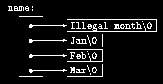
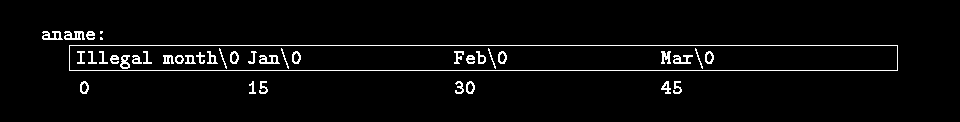
102
Although we have phrased this discussion in terms of integers, by far the most frequent use of
arrays of pointers is to store character strings of diverse lengths, as in the function
month_name. Compare the declaration and picture for an array of pointers:
char *name[] = { "Illegal month", "Jan", "Feb", "Mar" };
with those for a two-dimensional array:
char aname[][15] = { "Illegal month", "Jan", "Feb", "Mar" };
Exercise 5-9. Rewrite the routines day_of_year and month_day with pointers instead of
indexing.
5.10 Command-line Arguments
In environments that support C, there is a way to pass command-line arguments or parameters
to a program when it begins executing. When main is called, it is called with two arguments.
The first (conventionally called argc, for argument count) is the number of command-line
arguments the program was invoked with; the second (argv, for argument vector) is a pointer
to an array of character strings that contain the arguments, one per string. We customarily use
multiple levels of pointers to manipulate these character strings.
The simplest illustration is the program echo, which echoes its command-line arguments on a
single line, separated by blanks. That is, the command
echo hello, world
prints the output
hello, world
By convention, argv[0] is the name by which the program was invoked, so argc is at least 1.
If argc is 1, there are no command-line arguments after the program name. In the example
above, argc is 3, and argv[0], argv[1], and argv[2] are "echo", "hello,", and "world"
respectively. The first optional argument is argv[1] and the last is argv[argc-1];
additionally, the standard requires that argv[argc] be a null pointer.
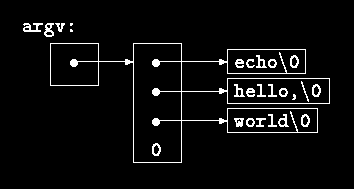
103
The first version of echo treats argv as an array of character pointers:
#include <stdio.h>
/* echo command-line arguments; 1st version */
main(int argc, char *argv[])
{
int i;
for (i = 1; i < argc; i++)
printf("%s%s", argv[i], (i < argc-1) ? " " : "");
printf("\n");
return 0;
}
Since argv is a pointer to an array of pointers, we can manipulate the pointer rather than
index the array. This next variant is based on incrementing argv, which is a pointer to pointer
to char, while argc is counted down:
#include <stdio.h>
/* echo command-line arguments; 2nd version */
main(int argc, char *argv[])
{
while (--argc > 0)
printf("%s%s", *++argv, (argc > 1) ? " " : "");
printf("\n");
return 0;
}
Since argv is a pointer to the beginning of the array of argument strings, incrementing it by 1
(++argv) makes it point at the original argv[1] instead of argv[0]. Each successive
increment moves it along to the next argument; *argv is then the pointer to that argument. At
the same time, argc is decremented; when it becomes zero, there are no arguments left to
print.
Alternatively, we could write the printf statement as
printf((argc > 1) ? "%s " : "%s", *++argv);
This shows that the format argument of printf can be an expression too.
As a second example, let us make some enhancements to the pattern-finding program from
Section 4.1. If you recall, we wired the search pattern deep into the program, an obviously
unsatisfactory arrangement. Following the lead of the UNIX program grep, let us enhance the
program so the pattern to be matched is specified by the first argument on the command line.
104
#include <stdio.h>
#include <string.h>
#define MAXLINE 1000
int getline(char *line, int max);
/* find: print lines that match pattern from 1st arg */
main(int argc, char *argv[])
{
char line[MAXLINE];
int found = 0;
if (argc != 2)
printf("Usage: find pattern\n");
else
while (getline(line, MAXLINE) > 0)
if (strstr(line, argv[1]) != NULL) {
printf("%s", line);
found++;
}
return found;
}
The standard library function strstr(s,t) returns a pointer to the first occurrence of the
string t in the string s, or NULL if there is none. It is declared in <string.h>.
The model can now be elaborated to illustrate further pointer constructions. Suppose we want
to allow two optional arguments. One says ``print all the lines except those that match the
pattern;'' the second says ``precede each printed line by its line number.''
A common convention for C programs on UNIX systems is that an argument that begins with
a minus sign introduces an optional flag or parameter. If we choose -x (for ``except'') to
signal the inversion, and -n (``number'') to request line numbering, then the command
find -x -npattern
will print each line that doesn't match the pattern, preceded by its line number.
Optional arguments should be permitted in any order, and the rest of the program should be
independent of the number of arguments that we present. Furthermore, it is convenient for
users if option arguments can be combined, as in
find -nx pattern
Here is the program:
#include <stdio.h>
#include <string.h>
#define MAXLINE 1000
int getline(char *line, int max);
/* find: print lines that match pattern from 1st arg */
main(int argc, char *argv[])
{
char line[MAXLINE];
long lineno = 0;
int c, except = 0, number = 0, found = 0;
while (--argc > 0 && (*++argv)[0] == '-')
105
while (c = *++argv[0])
switch (c) {
case 'x':
except = 1;
break;
case 'n':
number = 1;
break;
default:
printf("find: illegal option %c\n", c);
argc = 0;
found = -1;
break;
}
if (argc != 1)
printf("Usage: find -x -n pattern\n");
else
while (getline(line, MAXLINE) > 0) {
lineno++;
if ((strstr(line, *argv) != NULL) != except) {
if (number)
printf("%ld:", lineno);
printf("%s", line);
found++;
}
}
return found;
}
argc is decremented and argv is incremented before each optional argument. At the end of
the loop, if there are no errors, argc tells how many arguments remain unprocessed and argv
points to the first of these. Thus argc should be 1 and *argv should point at the pattern.
Notice that *++argv is a pointer to an argument string, so (*++argv)[0] is its first character.
(An alternate valid form would be **++argv.) Because [] binds tighter than * and ++, the
parentheses are necessary; without them the expression would be taken as *++(argv[0]). In
fact, that is what we have used in the inner loop, where the task is to walk along a specific
argument string. In the inner loop, the expression *++argv[0] increments the pointer
argv[0]!
It is rare that one uses pointer expressions more complicated than these; in such cases,
breaking them into two or three steps will be more intuitive.
Exercise 5-10. Write the program expr, which evaluates a reverse Polish expression from the
command line, where each operator or operand is a separate argument. For example,
expr 2 3 4 + *
evaluates 2 * (3+4).
Exercise 5-11. Modify the program entab and detab (written as exercises in Chapter 1) to
accept a list of tab stops as arguments. Use the default tab settings if there are no arguments.
Exercise 5-12. Extend entab and detab to accept the shorthand
entab -m +n
to mean tab stops every n columns, starting at column m. Choose convenient (for the user)
default behavior.
106
Exercise 5-13. Write the program tail, which prints the last n lines of its input. By default, n
is set to 10, let us say, but it can be changed by an optional argument so that
tail -n
prints the last n lines. The program should behave rationally no matter how unreasonable the
input or the value of n. Write the program so it makes the best use of available storage; lines
should be stored as in the sorting program of Section 5.6, not in a two-dimensional array of
fixed size.
5.11 Pointers to Functions
In C, a function itself is not a variable, but it is possible to define pointers to functions, which
can be assigned, placed in arrays, passed to functions, returned by functions, and so on. We
will illustrate this by modifying the sorting procedure written earlier in this chapter so that if
the optional argument -n is given, it will sort the input lines numerically instead of
lexicographically.
A sort often consists of three parts - a comparison that determines the ordering of any pair of
objects, an exchange that reverses their order, and a sorting algorithm that makes comparisons
and exchanges until the objects are in order. The sorting algorithm is independent of the
comparison and exchange operations, so by passing different comparison and exchange
functions to it, we can arrange to sort by different criteria. This is the approach taken in our
new sort.
Lexicographic comparison of two lines is done by strcmp, as before; we will also need a
routine numcmp that compares two lines on the basis of numeric value and returns the same
kind of condition indication as strcmp does. These functions are declared ahead of main and
a pointer to the appropriate one is passed to qsort. We have skimped on error processing for
arguments, so as to concentrate on the main issues.
#include <stdio.h>
#include <string.h>
#define MAXLINES 5000 /* max #lines to be sorted */
char *lineptr[MAXLINES]; /* pointers to text lines */
int readlines(char *lineptr[], int nlines);
void writelines(char *lineptr[], int nlines);
void qsort(void *lineptr[], int left, int right,
int (*comp)(void *, void *));
int numcmp(char *, char *);
/* sort input lines */
main(int argc, char *argv[])
{
int nlines; /* number of input lines read */
int numeric = 0; /* 1 if numeric sort */
if (argc > 1 && strcmp(argv[1], "-n") == 0)
numeric = 1;
if ((nlines = readlines(lineptr, MAXLINES)) >= 0) {
qsort((void**) lineptr, 0, nlines-1,
(int (*)(void*,void*))(numeric ? numcmp : strcmp));
writelines(lineptr, nlines);
107
return 0;
} else {
printf("input too big to sort\n");
return 1;
}
}
In the call to qsort, strcmp and numcmp are addresses of functions. Since they are known to
be functions, the & is not necessary, in the same way that it is not needed before an array
name.
We have written qsort so it can process any data type, not just character strings. As indicated
by the function prototype, qsort expects an array of pointers, two integers, and a function
with two pointer arguments. The generic pointer type void * is used for the pointer
arguments. Any pointer can be cast to void * and back again without loss of information, so
we can call qsort by casting arguments to void *. The elaborate cast of the function
argument casts the arguments of the comparison function. These will generally have no effect
on actual representation, but assure the compiler that all is well.
/* qsort: sort v[left]...v[right] into increasing order */
void qsort(void *v[], int left, int right,
int (*comp)(void *, void *))
{
int i, last;
void swap(void *v[], int, int);
if (left >= right) /* do nothing if array contains */
return; /* fewer than two elements */
swap(v, left, (left + right)/2);
last = left;
for (i = left+1; i <= right; i++)
if ((*comp)(v[i], v[left]) < 0)
swap(v, ++last, i);
swap(v, left, last);
qsort(v, left, last-1, comp);
qsort(v, last+1, right, comp);
}
The declarations should be studied with some care. The fourth parameter of qsort is
int (*comp)(void *, void *)
which says that comp is a pointer to a function that has two void * arguments and returns an
int.
The use of comp in the line
if ((*comp)(v[i], v[left]) < 0)
is consistent with the declaration: comp is a pointer to a function, *comp is the function, and
(*comp)(v[i], v[left])
is the call to it. The parentheses are needed so the components are correctly associated;
without them,
int *comp(void *, void *) /* WRONG */
says that comp is a function returning a pointer to an int, which is very different.
108
We have already shown strcmp, which compares two strings. Here is numcmp, which
compares two strings on a leading numeric value, computed by calling atof:
#include <stdlib.h>
/* numcmp: compare s1 and s2 numerically */
int numcmp(char *s1, char *s2)
{
double v1, v2;
v1 = atof(s1);
v2 = atof(s2);
if (v1 < v2)
return -1;
else if (v1 > v2)
return 1;
else
return 0;
}
The swap function, which exchanges two pointers, is identical to what we presented earlier in
the chapter, except that the declarations are changed to void *.
void swap(void *v[], int i, int j;)
{
void *temp;
temp = v[i];
v[i] = v[j];
v[j] = temp;
}
A variety of other options can be added to the sorting program; some make challenging
exercises.
Exercise 5-14. Modify the sort program to handle a -r flag, which indicates sorting in reverse
(decreasing) order. Be sure that -r works with -n.
Exercise 5-15. Add the option -f to fold upper and lower case together, so that case
distinctions are not made during sorting; for example, a and A compare equal.
Exercise 5-16. Add the -d (``directory order'') option, which makes comparisons only on
letters, numbers and blanks. Make sure it works in conjunction with -f.
Exercise 5-17. Add a field-searching capability, so sorting may bee done on fields within
lines, each field sorted according to an independent set of options. (The index for this book
was sorted with -df for the index category and -n for the page numbers.)
5.12 Complicated Declarations
C is sometimes castigated for the syntax of its declarations, particularly ones that involve
pointers to functions. The syntax is an attempt to make the declaration and the use agree; it
works well for simple cases, but it can be confusing for the harder ones, because declarations
cannot be read left to right, and because parentheses are over-used. The difference between
int *f(); /* f: function returning pointer to int */
and
109
int (*pf)(); /* pf: pointer to function returning int */
illustrates the problem: * is a prefix operator and it has lower precedence than (), so
parentheses are necessary to force the proper association.
Although truly complicated declarations rarely arise in practice, it is important to know how
to understand them, and, if necessary, how to create them. One good way to synthesize
declarations is in small steps with typedef, which is discussed in Section 6.7. As an
alternative, in this section we will present a pair of programs that convert from valid C to a
word description and back again. The word description reads left to right.
The first, dcl, is the more complex. It converts a C declaration into a word description, as in
these examples:
char **argv
argv: pointer to char
int (*daytab)[13]
daytab: pointer to array[13] of int
int *daytab[13]
daytab: array[13] of pointer to int
void *comp()
comp: function returning pointer to void
void (*comp)()
comp: pointer to function returning void
char (*(*x())[])()
x: function returning pointer to array[] of
pointer to function returning char
char (*(*x[3])())[5]
x: array[3] of pointer to function returning
pointer to array[5] of char
dcl is based on the grammar that specifies a declarator, which is spelled out precisely in
Appendix A, Section 8.5; this is a simplified form:
dcl: optional *'s direct-dcl
direct-dcl name
(dcl)
direct-dcl()
direct-dcl[optional size]
In words, a dcl is a direct-dcl, perhaps preceded by *'s. A direct-dcl is a name, or a
parenthesized dcl, or a direct-dcl followed by parentheses, or a direct-dcl followed by
brackets with an optional size.
This grammar can be used to parse functions. For instance, consider this declarator:
(*pfa[])()
pfa will be identified as a name and thus as a direct-dcl. Then pfa[] is also a direct-dcl. Then
*pfa[] is recognized as a dcl, so (*pfa[]) is a direct-dcl. Then (*pfa[])() is a direct-dcl
and thus a dcl. We can also illustrate the parse with a tree like this (where direct-dcl has been
abbreviated to dir-dcl):
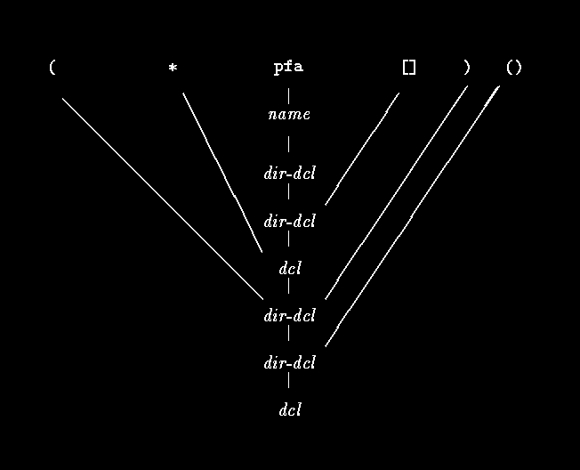
110
The heart of the dcl program is a pair of functions, dcl and dirdcl, that parse a declaration
according to this grammar. Because the grammar is recursively defined, the functions call
each other recursively as they recognize pieces of a declaration; the program is called a
recursive-descent parser.
/* dcl: parse a declarator */
void dcl(void)
{
int ns;
for (ns = 0; gettoken() == '*'; ) /* count *'s */
ns++;
dirdcl();
while (ns-- > 0)
strcat(out, " pointer to");
}
/* dirdcl: parse a direct declarator */
void dirdcl(void)
{
int type;
if (tokentype == '(') { /* ( dcl ) */
dcl();
if (tokentype != ')')
printf("error: missing )\n");
} else if (tokentype == NAME) /* variable name */
strcpy(name, token);
111
else
printf("error: expected name or (dcl)\n");
while ((type=gettoken()) == PARENS || type == BRACKETS)
if (type == PARENS)
strcat(out, " function returning");
else {
strcat(out, " array");
strcat(out, token);
strcat(out, " of");
}
}
Since the programs are intended to be illustrative, not bullet-proof, there are significant
restrictions on dcl. It can only handle a simple data type line char or int. It does not handle
argument types in functions, or qualifiers like const. Spurious blanks confuse it. It doesn't do
much error recovery, so invalid declarations will also confuse it. These improvements are left
as exercises.
Here are the global variables and the main routine:
#include <stdio.h>
#include <string.h>
#include <ctype.h>
#define MAXTOKEN 100
enum { NAME, PARENS, BRACKETS };
void dcl(void);
void dirdcl(void);
int gettoken(void);
int tokentype; /* type of last token */
char token[MAXTOKEN]; /* last token string */
char name[MAXTOKEN]; /* identifier name */
char datatype[MAXTOKEN]; /* data type = char, int, etc. */
char out[1000];
main() /* convert declaration to words */
{
while (gettoken() != EOF) { /* 1st token on line */
strcpy(datatype, token); /* is the datatype */
out[0] = '\0';
dcl(); /* parse rest of line */
if (tokentype != '\n')
printf("syntax error\n");
printf("%s: %s %s\n", name, out, datatype);
}
return 0;
}
The function gettoken skips blanks and tabs, then finds the next token in the input; a ``token''
is a name, a pair of parentheses, a pair of brackets perhaps including a number, or any other
single character.
int gettoken(void) /* return next token */
{
int c, getch(void);
void ungetch(int);
char *p = token;
while ((c = getch()) == ' ' || c == '\t')
112
;
if (c == '(') {
if ((c = getch()) == ')') {
strcpy(token, "()");
return tokentype = PARENS;
} else {
ungetch(c);
return tokentype = '(';
}
} else if (c == '[') {
for (*p++ = c; (*p++ = getch()) != ']'; )
;
*p = '\0';
return tokentype = BRACKETS;
} else if (isalpha(c)) {
for (*p++ = c; isalnum(c = getch()); )
*p++ = c;
*p = '\0';
ungetch(c);
return tokentype = NAME;
} else
return tokentype = c;
}
getch and ungetch are discussed in Chapter 4.
Going in the other direction is easier, especially if we do not worry about generating
redundant parentheses. The program undcl converts a word description like ``x is a function
returning a pointer to an array of pointers to functions returning char,'' which we will express
as
x () * [] * () char
to
char (*(*x())[])()
The abbreviated input syntax lets us reuse the gettoken function. undcl also uses the same
external variables as dcl does.
/* undcl: convert word descriptions to declarations */
main()
{
int type;
char temp[MAXTOKEN];
while (gettoken() != EOF) {
strcpy(out, token);
while ((type = gettoken()) != '\n')
if (type == PARENS || type == BRACKETS)
strcat(out, token);
else if (type == '*') {
sprintf(temp, "(*%s)", out);
strcpy(out, temp);
} else if (type == NAME) {
sprintf(temp, "%s %s", token, out);
strcpy(out, temp);
} else
printf("invalid input at %s\n", token);
}
return 0;
}
113
Exercise 5-18. Make dcl recover from input errors.
Exercise 5-19. Modify undcl so that it does not add redundant parentheses to declarations.
Exercise 5-20. Expand dcl to handle declarations with function argument types, qualifiers
like const, and so on.
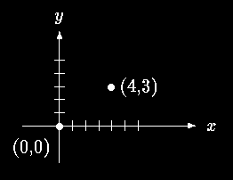
114
Chapter 6 - Structures
A structure is a collection of one or more variables, possibly of different types, grouped
together under a single name for convenient handling. (Structures are called ``records'' in
some languages, notably Pascal.) Structures help to organize complicated data, particularly in
large programs, because they permit a group of related variables to be treated as a unit instead
of as separate entities.
One traditional example of a structure is the payroll record: an employee is described by a set
of attributes such as name, address, social security number, salary, etc. Some of these in turn
could be structures: a name has several components, as does an address and even a salary.
Another example, more typical for C, comes from graphics: a point is a pair of coordinate, a
rectangle is a pair of points, and so on.
The main change made by the ANSI standard is to define structure assignment - structures
may be copied and assigned to, passed to functions, and returned by functions. This has been
supported by most compilers for many years, but the properties are now precisely defined.
Automatic structures and arrays may now also be initialized.
6.1 Basics of Structures
Let us create a few structures suitable for graphics. The basic object is a point, which we will
assume has an x coordinate and a y coordinate, both integers.
The two components can be placed in a structure declared like this:
struct point {
int x;
int y;
};
The keyword struct introduces a structure declaration, which is a list of declarations
enclosed in braces. An optional name called a structure tag may follow the word struct (as
with point here). The tag names this kind of structure, and can be used subsequently as a
shorthand for the part of the declaration in braces.
115
The variables named in a structure are called members. A structure member or tag and an
ordinary (i.e., non-member) variable can have the same name without conflict, since they can
always be distinguished by context. Furthermore, the same member names may occur in
different structures, although as a matter of style one would normally use the same names
only for closely related objects.
A struct declaration defines a type. The right brace that terminates the list of members may
be followed by a list of variables, just as for any basic type. That is,
struct { ... } x, y, z;
is syntactically analogous to
int x, y, z;
in the sense that each statement declares x, y and z to be variables of the named type and
causes space to be set aside for them.
A structure declaration that is not followed by a list of variables reserves no storage; it merely
describes a template or shape of a structure. If the declaration is tagged, however, the tag can
be used later in definitions of instances of the structure. For example, given the declaration of
point above,
struct point pt;
defines a variable pt which is a structure of type struct point. A structure can be initialized
by following its definition with a list of initializers, each a constant expression, for the
members:
struct maxpt = { 320, 200 };
An automatic structure may also be initialized by assignment or by calling a function that
returns a structure of the right type.
A member of a particular structure is referred to in an expression by a construction of the
form
structure-name.member
The structure member operator ``.'' connects the structure name and the member name. To
print the coordinates of the point pt, for instance,
printf("%d,%d", pt.x, pt.y);
or to compute the distance from the origin (0,0) to pt,
double dist, sqrt(double);
dist = sqrt((double)pt.x * pt.x + (double)pt.y * pt.y);
Structures can be nested. One representation of a rectangle is a pair of points that denote the
diagonally opposite corners:
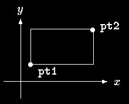
116
struct rect {
struct point pt1;
struct point pt2;
};
The rect structure contains two point structures. If we declare screen as
struct rect screen;
then
screen.pt1.x
refers to the x coordinate of the pt1 member of screen.
6.2 Structures and Functions
The only legal operations on a structure are copying it or assigning to it as a unit, taking its
address with &, and accessing its members. Copy and assignment include passing arguments
to functions and returning values from functions as well. Structures may not be compared. A
structure may be initialized by a list of constant member values; an automatic structure may
also be initialized by an assignment.
Let us investigate structures by writing some functions to manipulate points and rectangles.
There are at least three possible approaches: pass components separately, pass an entire
structure, or pass a pointer to it. Each has its good points and bad points.
The first function, makepoint, will take two integers and return a point structure:
/* makepoint: make a point from x and y components */
struct point makepoint(int x, int y)
{
struct point temp;
temp.x = x;
temp.y = y;
return temp;
}
Notice that there is no conflict between the argument name and the member with the same
name; indeed the re-use of the names stresses the relationship.
makepoint can now be used to initialize any structure dynamically, or to provide structure
arguments to a function:
struct rect screen;
117
struct point middle;
struct point makepoint(int, int);
screen.pt1 = makepoint(0,0);
screen.pt2 = makepoint(XMAX, YMAX);
middle = makepoint((screen.pt1.x + screen.pt2.x)/2,
(screen.pt1.y + screen.pt2.y)/2);
The next step is a set of functions to do arithmetic on points. For instance,
/* addpoints: add two points */
struct addpoint(struct point p1, struct point p2)
{
p1.x += p2.x;
p1.y += p2.y;
return p1;
}
Here both the arguments and the return value are structures. We incremented the components
in p1 rather than using an explicit temporary variable to emphasize that structure parameters
are passed by value like any others.
As another example, the function ptinrect tests whether a point is inside a rectangle, where
we have adopted the convention that a rectangle includes its left and bottom sides but not its
top and right sides:
/* ptinrect: return 1 if p in r, 0 if not */
int ptinrect(struct point p, struct rect r)
{
return p.x >= r.pt1.x && p.x < r.pt2.x
&& p.y >= r.pt1.y && p.y < r.pt2.y;
}
This assumes that the rectangle is presented in a standard form where the pt1 coordinates are
less than the pt2 coordinates. The following function returns a rectangle guaranteed to be in
canonical form:
#define min(a, b) ((a) < (b) ? (a) : (b))
#define max(a, b) ((a) > (b) ? (a) : (b))
/* canonrect: canonicalize coordinates of rectangle */
struct rect canonrect(struct rect r)
{
struct rect temp;
temp.pt1.x = min(r.pt1.x, r.pt2.x);
temp.pt1.y = min(r.pt1.y, r.pt2.y);
temp.pt2.x = max(r.pt1.x, r.pt2.x);
temp.pt2.y = max(r.pt1.y, r.pt2.y);
return temp;
}
If a large structure is to be passed to a function, it is generally more efficient to pass a pointer
than to copy the whole structure. Structure pointers are just like pointers to ordinary variables.
The declaration
struct point *pp;
says that pp is a pointer to a structure of type struct point. If pp points to a point structure,
*pp is the structure, and (*pp).x and (*pp).y are the members. To use pp, we might write,
for example,
struct point origin, *pp;
118
pp = &origin;
printf("origin is (%d,%d)\n", (*pp).x, (*pp).y);
The parentheses are necessary in (*pp).x because the precedence of the structure member
operator . is higher then *. The expression *pp.x means *(pp.x), which is illegal here
because x is not a pointer.
Pointers to structures are so frequently used that an alternative notation is provided as a
shorthand. If p is a pointer to a structure, then
p->member-of-structure
refers to the particular member. So we could write instead
printf("origin is (%d,%d)\n", pp->x, pp->y);
Both . and -> associate from left to right, so if we have
struct rect r, *rp = &r;
then these four expressions are equivalent:
r.pt1.x
rp->pt1.x
(r.pt1).x
(rp->pt1).x
The structure operators . and ->, together with () for function calls and [] for subscripts, are
at the top of the precedence hierarchy and thus bind very tightly. For example, given the
declaration
struct {
int len;
char *str;
} *p;
then
++p->len
increments len, not p, because the implied parenthesization is ++(p->len). Parentheses can
be used to alter binding: (++p)->len increments p before accessing len, and (p++)->len
increments p afterward. (This last set of parentheses is unnecessary.)
In the same way, *p->str fetches whatever str points to; *p->str++ increments str after
accessing whatever it points to (just like *s++); (*p->str)++ increments whatever str points
to; and *p++->str increments p after accessing whatever str points to.
6.3 Arrays of Structures
Consider writing a program to count the occurrences of each C keyword. We need an array of
character strings to hold the names, and an array of integers for the counts. One possibility is
to use two parallel arrays, keyword and keycount, as in
char *keyword[NKEYS];
int keycount[NKEYS];
But the very fact that the arrays are parallel suggests a different organization, an array of
structures. Each keyword is a pair:
char *word;
int cout;
and there is an array of pairs. The structure declaration
119
struct key {
char *word;
int count;
} keytab[NKEYS];
declares a structure type key, defines an array keytab of structures of this type, and sets aside
storage for them. Each element of the array is a structure. This could also be written
struct key {
char *word;
int count;
};
struct key keytab[NKEYS];
Since the structure keytab contains a constant set of names, it is easiest to make it an external
variable and initialize it once and for all when it is defined. The structure initialization is
analogous to earlier ones - the definition is followed by a list of initializers enclosed in braces:
struct key {
char *word;
int count;
} keytab[] = {
"auto", 0,
"break", 0,
"case", 0,
"char", 0,
"const", 0,
"continue", 0,
"default", 0,
/* ... */
"unsigned", 0,
"void", 0,
"volatile", 0,
"while", 0
};
The initializers are listed in pairs corresponding to the structure members. It would be more
precise to enclose the initializers for each "row" or structure in braces, as in
{ "auto", 0 },
{ "break", 0 },
{ "case", 0 },
...
but inner braces are not necessary when the initializers are simple variables or character
strings, and when all are present. As usual, the number of entries in the array keytab will be
computed if the initializers are present and the [] is left empty.
The keyword counting program begins with the definition of keytab. The main routine reads
the input by repeatedly calling a function getword that fetches one word at a time. Each word
is looked up in keytab with a version of the binary search function that we wrote in Chapter
3. The list of keywords must be sorted in increasing order in the table.
#include <stdio.h>
#include <ctype.h>
#include <string.h>
#define MAXWORD 100
int getword(char *, int);
int binsearch(char *, struct key *, int);
120
/* count C keywords */
main()
{
int n;
char word[MAXWORD];
while (getword(word, MAXWORD) != EOF)
if (isalpha(word[0]))
if ((n = binsearch(word, keytab, NKEYS)) >= 0)
keytab[n].count++;
for (n = 0; n < NKEYS; n++)
if (keytab[n].count > 0)
printf("%4d %s\n",
keytab[n].count, keytab[n].word);
return 0;
}
/* binsearch: find word in tab[0]...tab[n-1] */
int binsearch(char *word, struct key tab[], int n)
{
int cond;
int low, high, mid;
low = 0;
high = n - 1;
while (low <= high) {
mid = (low+high) / 2;
if ((cond = strcmp(word, tab[mid].word)) < 0)
high = mid - 1;
else if (cond > 0)
low = mid + 1;
else
return mid;
}
return -1;
}
We will show the function getword in a moment; for now it suffices to say that each call to
getword finds a word, which is copied into the array named as its first argument.
The quantity NKEYS is the number of keywords in keytab. Although we could count this by
hand, it's a lot easier and safer to do it by machine, especially if the list is subject to change.
One possibility would be to terminate the list of initializers with a null pointer, then loop
along keytab until the end is found.
But this is more than is needed, since the size of the array is completely determined at
compile time. The size of the array is the size of one entry times the number of entries, so the
number of entries is just
size of keytab / size of struct key
C provides a compile-time unary operator called sizeof that can be used to compute the size
of any object. The expressions
sizeof object
and
sizeof (type name)
121
yield an integer equal to the size of the specified object or type in bytes. (Strictly, sizeof
produces an unsigned integer value whose type, size_t, is defined in the header
<stddef.h>.) An object can be a variable or array or structure. A type name can be the name
of a basic type like int or double, or a derived type like a structure or a pointer.
In our case, the number of keywords is the size of the array divided by the size of one
element. This computation is used in a #define statement to set the value of NKEYS:
#define NKEYS (sizeof keytab / sizeof(struct key))
Another way to write this is to divide the array size by the size of a specific element:
#define NKEYS (sizeof keytab / sizeof(keytab[0]))
This has the advantage that it does not need to be changed if the type changes.
A sizeof can not be used in a #if line, because the preprocessor does not parse type names.
But the expression in the #define is not evaluated by the preprocessor, so the code here is
legal.
Now for the function getword. We have written a more general getword than is necessary for
this program, but it is not complicated. getword fetches the next ``word'' from the input,
where a word is either a string of letters and digits beginning with a letter, or a single non-
white space character. The function value is the first character of the word, or EOF for end of
file, or the character itself if it is not alphabetic.
/* getword: get next word or character from input */
int getword(char *word, int lim)
{
int c, getch(void);
void ungetch(int);
char *w = word;
while (isspace(c = getch()))
;
if (c != EOF)
*w++ = c;
if (!isalpha(c)) {
*w = '\0';
return c;
}
for ( ; --lim > 0; w++)
if (!isalnum(*w = getch())) {
ungetch(*w);
break;
}
*w = '\0';
return word[0];
}
getword uses the getch and ungetch that we wrote in Chapter 4. When the collection of an
alphanumeric token stops, getword has gone one character too far. The call to ungetch
pushes that character back on the input for the next call. getword also uses isspace to skip
whitespace, isalpha to identify letters, and isalnum to identify letters and digits; all are from
the standard header <ctype.h>.
Exercise 6-1. Our version of getword does not properly handle underscores, string constants,
comments, or preprocessor control lines. Write a better version.
122
6.4 Pointers to Structures
To illustrate some of the considerations involved with pointers to and arrays of structures, let
us write the keyword-counting program again, this time using pointers instead of array
indices.
The external declaration of keytab need not change, but main and binsearch do need
modification.
#include <stdio.h>
#include <ctype.h>
#include <string.h>
#define MAXWORD 100
int getword(char *, int);
struct key *binsearch(char *, struct key *, int);
/* count C keywords; pointer version */
main()
{
char word[MAXWORD];
struct key *p;
while (getword(word, MAXWORD) != EOF)
if (isalpha(word[0]))
if ((p=binsearch(word, keytab, NKEYS)) != NULL)
p->count++;
for (p = keytab; p < keytab + NKEYS; p++)
if (p->count > 0)
printf("%4d %s\n", p->count, p->word);
return 0;
}
/* binsearch: find word in tab[0]...tab[n-1] */
struct key *binsearch(char *word, struck key *tab, int n)
{
int cond;
struct key *low = &tab[0];
struct key *high = &tab[n];
struct key *mid;
while (low < high) {
mid = low + (high-low) / 2;
if ((cond = strcmp(word, mid->word)) < 0)
high = mid;
else if (cond > 0)
low = mid + 1;
else
return mid;
}
return NULL;
}
There are several things worthy of note here. First, the declaration of binsearch must
indicate that it returns a pointer to struct key instead of an integer; this is declared both in
the function prototype and in binsearch. If binsearch finds the word, it returns a pointer to
it; if it fails, it returns NULL.
123
Second, the elements of keytab are now accessed by pointers. This requires significant
changes in binsearch.
The initializers for low and high are now pointers to the beginning and just past the end of the
table.
The computation of the middle element can no longer be simply
mid = (low+high) / 2 /* WRONG */
because the addition of pointers is illegal. Subtraction is legal, however, so high-low is the
number of elements, and thus
mid = low + (high-low) / 2
sets mid to the element halfway between low and high.
The most important change is to adjust the algorithm to make sure that it does not generate an
illegal pointer or attempt to access an element outside the array. The problem is that &tab[-
1] and &tab[n] are both outside the limits of the array tab. The former is strictly illegal, and
it is illegal to dereference the latter. The language definition does guarantee, however, that
pointer arithmetic that involves the first element beyond the end of an array (that is, &tab[n])
will work correctly.
In main we wrote
for (p = keytab; p < keytab + NKEYS; p++)
If p is a pointer to a structure, arithmetic on p takes into account the size of the structure, so
p++ increments p by the correct amount to get the next element of the array of structures, and
the test stops the loop at the right time.
Don't assume, however, that the size of a structure is the sum of the sizes of its members.
Because of alignment requirements for different objects, there may be unnamed ``holes'' in a
structure. Thus, for instance, if a char is one byte and an int four bytes, the structure
struct {
char c;
int i;
};
might well require eight bytes, not five. The sizeof operator returns the proper value.
Finally, an aside on program format: when a function returns a complicated type like a
structure pointer, as in
struct key *binsearch(char *word, struct key *tab, int n)
the function name can be hard to see, and to find with a text editor. Accordingly an alternate
style is sometimes used:
struct key *
binsearch(char *word, struct key *tab, int n)
This is a matter of personal taste; pick the form you like and hold to it.
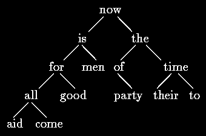
124
6.5 Self-referential Structures
Suppose we want to handle the more general problem of counting the occurrences of all the
words in some input. Since the list of words isn't known in advance, we can't conveniently
sort it and use a binary search. Yet we can't do a linear search for each word as it arrives, to
see if it's already been seen; the program would take too long. (More precisely, its running
time is likely to grow quadratically with the number of input words.) How can we organize
the data to copy efficiently with a list or arbitrary words?
One solution is to keep the set of words seen so far sorted at all times, by placing each word
into its proper position in the order as it arrives. This shouldn't be done by shifting words in a
linear array, though - that also takes too long. Instead we will use a data structure called a
binary tree.
The tree contains one ``node'' per distinct word; each node contains
• A pointer to the text of the word,
• A count of the number of occurrences,
• A pointer to the left child node,
• A pointer to the right child node.
No node may have more than two children; it might have only zero or one.
The nodes are maintained so that at any node the left subtree contains only words that are
lexicographically less than the word at the node, and the right subtree contains only words
that are greater. This is the tree for the sentence ``now is the time for all good men to come to
the aid of their party'', as built by inserting each word as it is encountered:
To find out whether a new word is already in the tree, start at the root and compare the new
word to the word stored at that node. If they match, the question is answered affirmatively. If
the new record is less than the tree word, continue searching at the left child, otherwise at the
right child. If there is no child in the required direction, the new word is not in the tree, and in
fact the empty slot is the proper place to add the new word. This process is recursive, since
the search from any node uses a search from one of its children. Accordingly, recursive
routines for insertion and printing will be most natural.
Going back to the description of a node, it is most conveniently represented as a structure
with four components:
125
struct tnode { /* the tree node: */
char *word;
/* points to the text */
int count;
/* number of occurrences */
struct tnode *left; /* left child */
struct tnode *right; /* right child */
};
This recursive declaration of a node might look chancy, but it's correct. It is illegal for a
structure to contain an instance of itself, but
struct tnode *left;
declares left to be a pointer to a tnode, not a tnode itself.
Occasionally, one needs a variation of self-referential structures: two structures that refer to
each other. The way to handle this is:
struct t {
...
struct s *p; /* p points to an s */
};
struct s {
...
struct t *q; /* q points to a t */
};
The code for the whole program is surprisingly small, given a handful of supporting routines
like getword that we have already written. The main routine reads words with getword and
installs them in the tree with addtree.
#include <stdio.h>
#include <ctype.h>
#include <string.h>
#define MAXWORD 100
struct tnode *addtree(struct tnode *, char *);
void treeprint(struct tnode *);
int getword(char *, int);
/* word frequency count */
main()
{
struct tnode *root;
char word[MAXWORD];
root = NULL;
while (getword(word, MAXWORD) != EOF)
if (isalpha(word[0]))
root = addtree(root, word);
treeprint(root);
return 0;
}
The function addtree is recursive. A word is presented by main to the top level (the root) of
the tree. At each stage, that word is compared to the word already stored at the node, and is
percolated down to either the left or right subtree by a recursive call to adtree. Eventually,
the word either matches something already in the tree (in which case the count is
incremented), or a null pointer is encountered, indicating that a node must be created and
added to the tree. If a new node is created, addtree returns a pointer to it, which is installed
in the parent node.
struct tnode *talloc(void);
126
char *strdup(char *);
/* addtree: add a node with w, at or below p */
struct treenode *addtree(struct tnode *p, char *w)
{
int cond;
if (p == NULL) { /* a new word has arrived */
p = talloc(); /* make a new node */
p->word = strdup(w);
p->count = 1;
p->left = p->right = NULL;
} else if ((cond = strcmp(w, p->word)) == 0)
p->count++; /* repeated word */
else if (cond < 0) /* less than into left subtree */
p->left = addtree(p->left, w);
else /* greater than into right subtree */
p->right = addtree(p->right, w);
return p;
}
Storage for the new node is fetched by a routine talloc, which returns a pointer to a free
space suitable for holding a tree node, and the new word is copied into a hidden space by
strdup. (We will discuss these routines in a moment.) The count is initialized, and the two
children are made null. This part of the code is executed only at the leaves of the tree, when a
new node is being added. We have (unwisely) omitted error checking on the values returned
by strdup and talloc.
treeprint prints the tree in sorted order; at each node, it prints the left subtree (all the words
less than this word), then the word itself, then the right subtree (all the words greater). If you
feel shaky about how recursion works, simulate treeprint as it operates on the tree shown
above.
/* treeprint: in-order print of tree p */
void treeprint(struct tnode *p)
{
if (p != NULL) {
treeprint(p->left);
printf("%4d %s\n", p->count, p->word);
treeprint(p->right);
}
}
A practical note: if the tree becomes ``unbalanced'' because the words don't arrive in random
order, the running time of the program can grow too much. As a worst case, if the words are
already in order, this program does an expensive simulation of linear search. There are
generalizations of the binary tree that do not suffer from this worst-case behavior, but we will
not describe them here.
Before leaving this example, it is also worth a brief digression on a problem related to storage
allocators. Clearly it's desirable that there be only one storage allocator in a program, even
though it allocates different kinds of objects. But if one allocator is to process requests for,
say, pointers to chars and pointers to struct tnodes, two questions arise. First, how does it
meet the requirement of most real machines that objects of certain types must satisfy
alignment restrictions (for example, integers often must be located at even addresses)?
Second, what declarations can cope with the fact that an allocator must necessarily return
different kinds of pointers?
127
Alignment requirements can generally be satisfied easily, at the cost of some wasted space, by
ensuring that the allocator always returns a pointer that meets all alignment restrictions. The
alloc of Chapter 5 does not guarantee any particular alignment, so we will use the standard
library function malloc, which does. In Chapter 8 we will show one way to implement
malloc.
The question of the type declaration for a function like malloc is a vexing one for any
language that takes its type-checking seriously. In C, the proper method is to declare that
malloc returns a pointer to void, then explicitly coerce the pointer into the desired type with
a cast. malloc and related routines are declared in the standard header <stdlib.h>. Thus
talloc can be written as
#include <stdlib.h>
/* talloc: make a tnode */
struct tnode *talloc(void)
{
return (struct tnode *) malloc(sizeof(struct tnode));
}
strdup merely copies the string given by its argument into a safe place, obtained by a call on
malloc:
char *strdup(char *s) /* make a duplicate of s */
{
char *p;
p = (char *) malloc(strlen(s)+1); /* +1 for '\0' */
if (p != NULL)
strcpy(p, s);
return p;
}
malloc returns NULL if no space is available; strdup passes that value on, leaving error-
handling to its caller.
Storage obtained by calling malloc may be freed for re-use by calling free; see Chapters 8
and 7.
Exercise 6-2. Write a program that reads a C program and prints in alphabetical order each
group of variable names that are identical in the first 6 characters, but different somewhere
thereafter. Don't count words within strings and comments. Make 6 a parameter that can be
set from the command line.
Exercise 6-3. Write a cross-referencer that prints a list of all words in a document, and for
each word, a list of the line numbers on which it occurs. Remove noise words like ``the,''
``and,'' and so on.
Exercise 6-4. Write a program that prints the distinct words in its input sorted into decreasing
order of frequency of occurrence. Precede each word by its count.
6.6 Table Lookup
In this section we will write the innards of a table-lookup package, to illustrate more aspects
of structures. This code is typical of what might be found in the symbol table management
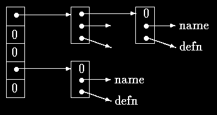
128
routines of a macro processor or a compiler. For example, consider the #define statement.
When a line like
#define IN 1
is encountered, the name IN and the replacement text 1 are stored in a table. Later, when the
name IN appears in a statement like
state = IN;
it must be replaced by 1.
There are two routines that manipulate the names and replacement texts. install(s,t)
records the name s and the replacement text t in a table; s and t are just character strings.
lookup(s) searches for s in the table, and returns a pointer to the place where it was found,
or NULL if it wasn't there.
The algorithm is a hash-search - the incoming name is converted into a small non-negative
integer, which is then used to index into an array of pointers. An array element points to the
beginning of a linked list of blocks describing names that have that hash value. It is NULL if no
names have hashed to that value.
A block in the list is a structure containing pointers to the name, the replacement text, and the
next block in the list. A null next-pointer marks the end of the list.
struct nlist { /* table entry: */
struct nlist *next; /* next entry in chain */
char *name; /* defined name */
char *defn; /* replacement text */
};
The pointer array is just
#define HASHSIZE 101
static struct nlist *hashtab[HASHSIZE]; /* pointer table */
The hashing function, which is used by both lookup and install, adds each character value
in the string to a scrambled combination of the previous ones and returns the remainder
modulo the array size. This is not the best possible hash function, but it is short and effective.
/* hash: form hash value for string s */
unsigned hash(char *s)
{
unsigned hashval;
for (hashval = 0; *s != '\0'; s++)
hashval = *s + 31 * hashval;
129
return hashval % HASHSIZE;
}
Unsigned arithmetic ensures that the hash value is non-negative.
The hashing process produces a starting index in the array hashtab; if the string is to be
found anywhere, it will be in the list of blocks beginning there. The search is performed by
lookup. If lookup finds the entry already present, it returns a pointer to it; if not, it returns
NULL.
/* lookup: look for s in hashtab */
struct nlist *lookup(char *s)
{
struct nlist *np;
for (np = hashtab[hash(s)]; np != NULL; np = np->next)
if (strcmp(s, np->name) == 0)
return np; /* found */
return NULL; /* not found */
}
The for loop in lookup is the standard idiom for walking along a linked list:
for (ptr = head; ptr != NULL; ptr = ptr->next)
...
install uses lookup to determine whether the name being installed is already present; if so,
the new definition will supersede the old one. Otherwise, a new entry is created. install
returns NULL if for any reason there is no room for a new entry.
struct nlist *lookup(char *);
char *strdup(char *);
/* install: put (name, defn) in hashtab */
struct nlist *install(char *name, char *defn)
{
struct nlist *np;
unsigned hashval;
if ((np = lookup(name)) == NULL) { /* not found */
np = (struct nlist *) malloc(sizeof(*np));
if (np == NULL || (np->name = strdup(name)) == NULL)
return NULL;
hashval = hash(name);
np->next = hashtab[hashval];
hashtab[hashval] = np;
} else /* already there */
free((void *) np->defn); /*free previous defn */
if ((np->defn = strdup(defn)) == NULL)
return NULL;
return np;
}
Exercise 6-5. Write a function undef that will remove a name and definition from the table
maintained by lookup and install.
Exercise 6-6. Implement a simple version of the #define processor (i.e., no arguments)
suitable for use with C programs, based on the routines of this section. You may also find
getch and ungetch helpful.
6.7 Typedef
130
C provides a facility called typedef for creating new data type names. For example, the
declaration
typedef int Length;
makes the name Length a synonym for int. The type Length can be used in declarations,
casts, etc., in exactly the same ways that the int type can be:
Length len, maxlen;
Length *lengths[];
Similarly, the declaration
typedef char *String;
makes String a synonym for char * or character pointer, which may then be used in
declarations and casts:
String p, lineptr[MAXLINES], alloc(int);
int strcmp(String, String);
p = (String) malloc(100);
Notice that the type being declared in a typedef appears in the position of a variable name,
not right after the word typedef. Syntactically, typedef is like the storage classes extern,
static, etc. We have used capitalized names for typedefs, to make them stand out.
As a more complicated example, we could make typedefs for the tree nodes shown earlier in
this chapter:
typedef struct tnode *Treeptr;
typedef struct tnode { /* the tree node: */
char *word; /* points to the text */
int count; /* number of occurrences */
struct tnode *left; /* left child */
struct tnode *right; /* right child */
} Treenode;
This creates two new type keywords called Treenode (a structure) and Treeptr (a pointer to
the structure). Then the routine talloc could become
Treeptr talloc(void)
{
return (Treeptr) malloc(sizeof(Treenode));
}
It must be emphasized that a typedef declaration does not create a new type in any sense; it
merely adds a new name for some existing type. Nor are there any new semantics: variables
declared this way have exactly the same properties as variables whose declarations are spelled
out explicitly. In effect, typedef is like #define, except that since it is interpreted by the
compiler, it can cope with textual substitutions that are beyond the capabilities of the
preprocessor. For example,
typedef int (*PFI)(char *, char *);
creates the type PFI, for ``pointer to function (of two char * arguments) returning int,''
which can be used in contexts like
PFI strcmp, numcmp;
in the sort program of Chapter 5.
Besides purely aesthetic issues, there are two main reasons for using typedefs. The first is to
parameterize a program against portability problems. If typedefs are used for data types that
131
may be machine-dependent, only the typedefs need change when the program is moved. One
common situation is to use typedef names for various integer quantities, then make an
appropriate set of choices of short, int, and long for each host machine. Types like size_t
and ptrdiff_t from the standard library are examples.
The second purpose of typedefs is to provide better documentation for a program - a type
called Treeptr may be easier to understand than one declared only as a pointer to a
complicated structure.
6.8 Unions
A union is a variable that may hold (at different times) objects of different types and sizes,
with the compiler keeping track of size and alignment requirements. Unions provide a way to
manipulate different kinds of data in a single area of storage, without embedding any
machine-dependent information in the program. They are analogous to variant records in
pascal.
As an example such as might be found in a compiler symbol table manager, suppose that a
constant may be an int, a float, or a character pointer. The value of a particular constant
must be stored in a variable of the proper type, yet it is most convenient for table management
if the value occupies the same amount of storage and is stored in the same place regardless of
its type. This is the purpose of a union - a single variable that can legitimately hold any of one
of several types. The syntax is based on structures:
union u_tag {
int ival;
float fval;
char *sval;
} u;
The variable u will be large enough to hold the largest of the three types; the specific size is
implementation-dependent. Any of these types may be assigned to u and then used in
expressions, so long as the usage is consistent: the type retrieved must be the type most
recently stored. It is the programmer's responsibility to keep track of which type is currently
stored in a union; the results are implementation-dependent if something is stored as one type
and extracted as another.
Syntactically, members of a union are accessed as
union-name.member
or
union-pointer->member
just as for structures. If the variable utype is used to keep track of the current type stored in u,
then one might see code such as
if (utype == INT)
printf("%d\n", u.ival);
if (utype == FLOAT)
printf("%f\n", u.fval);
132
if (utype == STRING)
printf("%s\n", u.sval);
else
printf("bad type %d in utype\n", utype);
Unions may occur within structures and arrays, and vice versa. The notation for accessing a
member of a union in a structure (or vice versa) is identical to that for nested structures. For
example, in the structure array defined by
struct {
char *name;
int flags;
int utype;
union {
int ival;
float fval;
char *sval;
} u;
} symtab[NSYM];
the member ival is referred to as
symtab[i].u.ival
and the first character of the string sval by either of
*symtab[i].u.sval
symtab[i].u.sval[0]
In effect, a union is a structure in which all members have offset zero from the base, the
structure is big enough to hold the ``widest'' member, and the alignment is appropriate for all
of the types in the union. The same operations are permitted on unions as on structures:
assignment to or copying as a unit, taking the address, and accessing a member.
A union may only be initialized with a value of the type of its first member; thus union u
described above can only be initialized with an integer value.
The storage allocator in Chapter 8 shows how a union can be used to force a variable to be
aligned on a particular kind of storage boundary.
6.9 Bit-fields
When storage space is at a premium, it may be necessary to pack several objects into a single
machine word; one common use is a set of single-bit flags in applications like compiler
symbol tables. Externally-imposed data formats, such as interfaces to hardware devices, also
often require the ability to get at pieces of a word.
Imagine a fragment of a compiler that manipulates a symbol table. Each identifier in a
program has certain information associated with it, for example, whether or not it is a
keyword, whether or not it is external and/or static, and so on. The most compact way to
encode such information is a set of one-bit flags in a single char or int.
The usual way this is done is to define a set of ``masks'' corresponding to the relevant bit
positions, as in
#define KEYWORD 01
#define EXTRENAL 02
#define STATIC 04
133
or
enum { KEYWORD = 01, EXTERNAL = 02, STATIC = 04 };
The numbers must be powers of two. Then accessing the bits becomes a matter of ``bit-
fiddling'' with the shifting, masking, and complementing operators that were described in
Chapter 2.
Certain idioms appear frequently:
flags |= EXTERNAL | STATIC;
turns on the EXTERNAL and STATIC bits in flags, while
flags &= ~(EXTERNAL | STATIC);
turns them off, and
if ((flags & (EXTERNAL | STATIC)) == 0) ...
is true if both bits are off.
Although these idioms are readily mastered, as an alternative C offers the capability of
defining and accessing fields within a word directly rather than by bitwise logical operators.
A bit-field, or field for short, is a set of adjacent bits within a single implementation-defined
storage unit that we will call a ``word.'' For example, the symbol table #defines above could
be replaced by the definition of three fields:
struct {
unsigned int is_keyword : 1;
unsigned int is_extern : 1;
unsigned int is_static : 1;
} flags;
This defines a variable table called flags that contains three 1-bit fields. The number
following the colon represents the field width in bits. The fields are declared unsigned int
to ensure that they are unsigned quantities.
Individual fields are referenced in the same way as other structure members:
flags.is_keyword, flags.is_extern, etc. Fields behave like small integers, and may
participate in arithmetic expressions just like other integers. Thus the previous examples may
be written more naturally as
flags.is_extern = flags.is_static = 1;
to turn the bits on;
flags.is_extern = flags.is_static = 0;
to turn them off; and
if (flags.is_extern == 0 && flags.is_static == 0)
...
to test them.
Almost everything about fields is implementation-dependent. Whether a field may overlap a
word boundary is implementation-defined. Fields need not be names; unnamed fields (a colon
and width only) are used for padding. The special width 0 may be used to force alignment at
the next word boundary.
134
Fields are assigned left to right on some machines and right to left on others. This means that
although fields are useful for maintaining internally-defined data structures, the question of
which end comes first has to be carefully considered when picking apart externally-defined
data; programs that depend on such things are not portable. Fields may be declared only as
ints; for portability, specify signed or unsigned explicitly. They are not arrays and they do
not have addresses, so the & operator cannot be applied on them.
135
Chapter 7 - Input and Output
Input and output are not part of the C language itself, so we have not emphasized them in our
presentation thus far. Nonetheless, programs interact with their environment in much more
complicated ways than those we have shown before. In this chapter we will describe the
standard library, a set of functions that provide input and output, string handling, storage
management, mathematical routines, and a variety of other services for C programs. We will
concentrate on input and output
The ANSI standard defines these library functions precisely, so that they can exist in
compatible form on any system where C exists. Programs that confine their system
interactions to facilities provided by the standard library can be moved from one system to
another without change.
The properties of library functions are specified in more than a dozen headers; we have
already seen several of these, including <stdio.h>, <string.h>, and <ctype.h>. We will
not present the entire library here, since we are more interested in writing C programs that use
it. The library is described in detail in Appendix B.
7.1 Standard Input and Output
As we said in Chapter 1, the library implements a simple model of text input and output. A
text stream consists of a sequence of lines; each line ends with a newline character. If the
system doesn't operate that way, the library does whatever necessary to make it appear as if it
does. For instance, the library might convert carriage return and linefeed to newline on input
and back again on output.
The simplest input mechanism is to read one character at a time from the standard input,
normally the keyboard, with getchar:
int getchar(void)
getchar returns the next input character each time it is called, or EOF when it encounters end
of file. The symbolic constant EOF is defined in <stdio.h>. The value is typically -1, bus
tests should be written in terms of EOF so as to be independent of the specific value.
In many environments, a file may be substituted for the keyboard by using the < convention
for input redirection: if a program prog uses getchar, then the command line
prog <infile
causes prog to read characters from infile instead. The switching of the input is done in
such a way that prog itself is oblivious to the change; in particular, the string ``<infile'' is
not included in the command-line arguments in argv. Input switching is also invisible if the
input comes from another program via a pipe mechanism: on some systems, the command
line
otherprog | prog
136
runs the two programs otherprog and prog, and pipes the standard output of otherprog into
the standard input for prog.
The function
int putchar(int)
is used for output: putchar(c) puts the character c on the standard output, which is by
default the screen. putchar returns the character written, or EOF is an error occurs. Again,
output can usually be directed to a file with >filename: if prog uses putchar,
prog >outfile
will write the standard output to outfile instead. If pipes are supported,
prog | anotherprog
puts the standard output of prog into the standard input of anotherprog.
Output produced by printf also finds its way to the standard output. Calls to putchar and
printf may be interleaved - output happens in the order in which the calls are made.
Each source file that refers to an input/output library function must contain the line
#include <stdio.h>
before the first reference. When the name is bracketed by < and > a search is made for the
header in a standard set of places (for example, on UNIX systems, typically in the directory
/usr/include).
Many programs read only one input stream and write only one output stream; for such
programs, input and output with getchar, putchar, and printf may be entirely adequate,
and is certainly enough to get started. This is particularly true if redirection is used to connect
the output of one program to the input of the next. For example, consider the program lower,
which converts its input to lower case:
#include <stdio.h>
#include <ctype.h>
main() /* lower: convert input to lower case*/
{
int c
while ((c = getchar()) != EOF)
putchar(tolower(c));
return 0;
}
The function tolower is defined in <ctype.h>; it converts an upper case letter to lower case,
and returns other characters untouched. As we mentioned earlier, ``functions'' like getchar
and putchar in <stdio.h> and tolower in <ctype.h> are often macros, thus avoiding the
overhead of a function call per character. We will show how this is done in Section 8.5.
Regardless of how the <ctype.h> functions are implemented on a given machine, programs
that use them are shielded from knowledge of the character set.
Exercise 7-1. Write a program that converts upper case to lower or lower case to upper,
depending on the name it is invoked with, as found in argv[0].
137
7.2 Formatted Output - printf
The output function printf translates internal values to characters. We have used printf
informally in previous chapters. The description here covers most typical uses but is not
complete; for the full story, see Appendix B.
int printf(char *format, arg1, arg2, ...);
printf converts, formats, and prints its arguments on the standard output under control of the
format. It returns the number of characters printed.
The format string contains two types of objects: ordinary characters, which are copied to the
output stream, and conversion specifications, each of which causes conversion and printing of
the next successive argument to printf. Each conversion specification begins with a % and
ends with a conversion character. Between the % and the conversion character there may be,
in order:
• A minus sign, which specifies left adjustment of the converted argument.
• A number that specifies the minimum field width. The converted argument will be
printed in a field at least this wide. If necessary it will be padded on the left (or right,
if left adjustment is called for) to make up the field width.
• A period, which separates the field width from the precision.
• A number, the precision, that specifies the maximum number of characters to be
printed from a string, or the number of digits after the decimal point of a floating-point
value, or the minimum number of digits for an integer.
• An h if the integer is to be printed as a short, or l (letter ell) if as a long.
Conversion characters are shown in Table 7.1. If the character after the % is not a conversion
specification, the behavior is undefined.
Table 7.1 Basic Printf Conversions
Character
Argument type; Printed As
d,i
int; decimal number
o
int; unsigned octal number (without a leading zero)
x,X
int; unsigned hexadecimal number (without a leading 0x or 0X), using abcdef or
ABCDEF for 10, ...,15.
u
int; unsigned decimal number
c
int; single character
s
char *; print characters from the string until a '\0' or the number of characters
given by the precision.
f
double; [-]m.dddddd, where the number of d's is given by the precision (default
6).
e,E
double; [-]m.dddddde+/-xx or [-]m.ddddddE+/-xx, where the number of d's is
given by the precision (default 6).
double; use %e or %E if the exponent is less than -4 or greater than or equal to the
g,G
precision; otherwise use %f. Trailing zeros and a trailing decimal point are not
printed.
p
void *; pointer (implementation-dependent representation).
138
%
no argument is converted; print a %
A width or precision may be specified as *, in which case the value is computed by
converting the next argument (which must be an int). For example, to print at most max
characters from a string s,
printf("%.*s", max, s);
Most of the format conversions have been illustrated in earlier chapters. One exception is the
precision as it relates to strings. The following table shows the effect of a variety of
specifications in printing ``hello, world'' (12 characters). We have put colons around each
field so you can see it extent.
:%s: :hello, world:
:%10s: :hello, world:
:%.10s: :hello, wor:
:%-10s: :hello, world:
:%.15s: :hello, world:
:%-15s: :hello, world :
:%15.10s: : hello, wor:
:%-15.10s: :hello, wor :
A warning: printf uses its first argument to decide how many arguments follow and what
their type is. It will get confused, and you will get wrong answers, if there are not enough
arguments of if they are the wrong type. You should also be aware of the difference between
these two calls:
printf(s); /* FAILS if s contains % */
printf("%s", s); /* SAFE */
The function sprintf does the same conversions as printf does, but stores the output in a
string:
int sprintf(char *string, char *format, arg1, arg2, ...);
sprintf formats the arguments in arg1, arg2, etc., according to format as before, but places
the result in string instead of the standard output; string must be big enough to receive the
result.
Exercise 7-2. Write a program that will print arbitrary input in a sensible way. As a
minimum, it should print non-graphic characters in octal or hexadecimal according to local
custom, and break long text lines.
7.3 Variable-length Argument Lists
This section contains an implementation of a minimal version of printf, to show how to
write a function that processes a variable-length argument list in a portable way. Since we are
mainly interested in the argument processing, minprintf will process the format string and
arguments but will call the real printf to do the format conversions.
The proper declaration for printf is
int printf(char *fmt, ...)
where the declaration ... means that the number and types of these arguments may vary. The
declaration ... can only appear at the end of an argument list. Our minprintf is declared as
139
void minprintf(char *fmt, ...)
since we will not return the character count that printf does.
The tricky bit is how minprintf walks along the argument list when the list doesn't even have
a name. The standard header <stdarg.h> contains a set of macro definitions that define how
to step through an argument list. The implementation of this header will vary from machine to
machine, but the interface it presents is uniform.
The type va_list is used to declare a variable that will refer to each argument in turn; in
minprintf, this variable is called ap, for ``argument pointer.'' The macro va_start initializes
ap to point to the first unnamed argument. It must be called once before ap is used. There
must be at least one named argument; the final named argument is used by va_start to get
started.
Each call of va_arg returns one argument and steps ap to the next; va_arg uses a type name
to determine what type to return and how big a step to take. Finally, va_end does whatever
cleanup is necessary. It must be called before the program returns.
These properties form the basis of our simplified printf:
#include <stdarg.h>
/* minprintf: minimal printf with variable argument list */
void minprintf(char *fmt, ...)
{
va_list ap; /* points to each unnamed arg in turn */
char *p, *sval;
int ival;
double dval;
va_start(ap, fmt); /* make ap point to 1st unnamed arg */
for (p = fmt; *p; p++) {
if (*p != '%') {
putchar(*p);
continue;
}
switch (*++p) {
case 'd':
ival = va_arg(ap, int);
printf("%d", ival);
break;
case 'f':
dval = va_arg(ap, double);
printf("%f", dval);
break;
case 's':
for (sval = va_arg(ap, char *); *sval; sval++)
putchar(*sval);
break;
default:
putchar(*p);
break;
}
}
va_end(ap); /* clean up when done */
}
Exercise 7-3. Revise minprintf to handle more of the other facilities of printf.
140
7.4 Formatted Input - Scanf
The function scanf is the input analog of printf, providing many of the same conversion
facilities in the opposite direction.
int scanf(char *format, ...)
scanf reads characters from the standard input, interprets them according to the specification
in format, and stores the results through the remaining arguments. The format argument is
described below; the other arguments, each of which must be a pointer, indicate where the
corresponding converted input should be stored. As with printf, this section is a summary of
the most useful features, not an exhaustive list.
scanf stops when it exhausts its format string, or when some input fails to match the control
specification. It returns as its value the number of successfully matched and assigned input
items. This can be used to decide how many items were found. On the end of file, EOF is
returned; note that this is different from 0, which means that the next input character does not
match the first specification in the format string. The next call to scanf resumes searching
immediately after the last character already converted.
There is also a function sscanf that reads from a string instead of the standard input:
int sscanf(char *string, char *format, arg1, arg2, ...)
It scans the string according to the format in format and stores the resulting values through
arg1, arg2, etc. These arguments must be pointers.
The format string usually contains conversion specifications, which are used to control
conversion of input. The format string may contain:
• Blanks or tabs, which are not ignored.
• Ordinary characters (not %), which are expected to match the next non-white space
character of the input stream.
• Conversion specifications, consisting of the character %, an optional assignment
suppression character *, an optional number specifying a maximum field width, an
optional h, l or L indicating the width of the target, and a conversion character.
A conversion specification directs the conversion of the next input field. Normally the result
is places in the variable pointed to by the corresponding argument. If assignment suppression
is indicated by the * character, however, the input field is skipped; no assignment is made. An
input field is defined as a string of non-white space characters; it extends either to the next
white space character or until the field width, is specified, is exhausted. This implies that
scanf will read across boundaries to find its input, since newlines are white space. (White
space characters are blank, tab, newline, carriage return, vertical tab, and formfeed.)
The conversion character indicates the interpretation of the input field. The corresponding
argument must be a pointer, as required by the call-by-value semantics of C. Conversion
characters are shown in Table 7.2.
Table 7.2: Basic Scanf Conversions
Character
Input Data; Argument type
141
d
decimal integer; int *
integer; int *. The integer may be in octal (leading 0) or hexadecimal (leading
i
0x or 0X).
o
octal integer (with or without leading zero); int *
u
unsigned decimal integer; unsigned int *
x
hexadecimal integer (with or without leading 0x or 0X); int *
characters; char *. The next input characters (default 1) are placed at the
c
indicated spot. The normal skip-over white space is suppressed; to read the next
non-white space character, use %1s
character string (not quoted); char *, pointing to an array of characters long
s
enough for the string and a terminating '\0' that will be added.
floating-point number with optional sign, optional decimal point and optional
e,f,g
exponent; float *
%
literal %; no assignment is made.
The conversion characters d, i, o, u, and x may be preceded by h to indicate that a pointer to
short rather than int appears in the argument list, or by l (letter ell) to indicate that a pointer
to long appears in the argument list.
As a first example, the rudimentary calculator of Chapter 4 can be written with scanf to do
the input conversion:
#include <stdio.h>
main() /* rudimentary calculator */
{
double sum, v;
sum = 0;
while (scanf("%lf", &v) == 1)
printf("\t%.2f\n", sum += v);
return 0;
}
Suppose we want to read input lines that contain dates of the form
25 Dec 1988
The scanf statement is
int day, year;
char monthname[20];
scanf("%d %s %d", &day, monthname, &year);
No & is used with monthname, since an array name is a pointer.
Literal characters can appear in the scanf format string; they must match the same characters
in the input. So we could read dates of the form mm/dd/yy with the scanf statement:
int day, month, year;
scanf("%d/%d/%d", &month, &day, &year);
142
scanf ignores blanks and tabs in its format string. Furthermore, it skips over white space
(blanks, tabs, newlines, etc.) as it looks for input values. To read input whose format is not
fixed, it is often best to read a line at a time, then pick it apart with scanf. For example,
suppose we want to read lines that might contain a date in either of the forms above. Then we
could write
while (getline(line, sizeof(line)) > 0) {
if (sscanf(line, "%d %s %d", &day, monthname, &year) == 3)
printf("valid: %s\n", line); /* 25 Dec 1988 form */
else if (sscanf(line, "%d/%d/%d", &month, &day, &year) == 3)
printf("valid: %s\n", line); /* mm/dd/yy form */
else
printf("invalid: %s\n", line); /* invalid form */
}
Calls to scanf can be mixed with calls to other input functions. The next call to any input
function will begin by reading the first character not read by scanf.
A final warning: the arguments to scanf and sscanf must be pointers. By far the most
common error is writing
scanf("%d", n);
instead of
scanf("%d", &n);
This error is not generally detected at compile time.
Exercise 7-4. Write a private version of scanf analogous to minprintf from the previous
section.
Exercise 5-5. Rewrite the postfix calculator of Chapter 4 to use scanf and/or sscanf to do
the input and number conversion.
7.5 File Access
The examples so far have all read the standard input and written the standard output, which
are automatically defined for a program by the local operating system.
The next step is to write a program that accesses a file that is not already connected to the
program. One program that illustrates the need for such operations is cat, which concatenates
a set of named files into the standard output. cat is used for printing files on the screen, and
as a general-purpose input collector for programs that do not have the capability of accessing
files by name. For example, the command
cat x.c y.c
prints the contents of the files x.c and y.c (and nothing else) on the standard output.
The question is how to arrange for the named files to be read - that is, how to connect the
external names that a user thinks of to the statements that read the data.
The rules are simple. Before it can be read or written, a file has to be opened by the library
function fopen. fopen takes an external name like x.c or y.c, does some housekeeping and
143
negotiation with the operating system (details of which needn't concern us), and returns a
pointer to be used in subsequent reads or writes of the file.
This pointer, called the file pointer, points to a structure that contains information about the
file, such as the location of a buffer, the current character position in the buffer, whether the
file is being read or written, and whether errors or end of file have occurred. Users don't need
to know the details, because the definitions obtained from <stdio.h> include a structure
declaration called FILE. The only declaration needed for a file pointer is exemplified by
FILE *fp;
FILE *fopen(char *name, char *mode);
This says that fp is a pointer to a FILE, and fopen returns a pointer to a FILE. Notice that
FILE is a type name, like int, not a structure tag; it is defined with a typedef. (Details of
how fopen can be implemented on the UNIX system are given in Section 8.5.)
The call to fopen in a program is
fp = fopen(name, mode);
The first argument of fopen is a character string containing the name of the file. The second
argument is the mode, also a character string, which indicates how one intends to use the file.
Allowable modes include read ("r"), write ("w"), and append ("a"). Some systems
distinguish between text and binary files; for the latter, a "b" must be appended to the mode
string.
If a file that does not exist is opened for writing or appending, it is created if possible.
Opening an existing file for writing causes the old contents to be discarded, while opening for
appending preserves them. Trying to read a file that does not exist is an error, and there may
be other causes of error as well, like trying to read a file when you don't have permission. If
there is any error, fopen will return NULL. (The error can be identified more precisely; see the
discussion of error-handling functions at the end of Section 1 in Appendix B.)
The next thing needed is a way to read or write the file once it is open. getc returns the next
character from a file; it needs the file pointer to tell it which file.
int getc(FILE *fp)
getc returns the next character from the stream referred to by fp; it returns EOF for end of file
or error.
putc is an output function:
int putc(int c, FILE *fp)
putc writes the character c to the file fp and returns the character written, or EOF if an error
occurs. Like getchar and putchar, getc and putc may be macros instead of functions.
When a C program is started, the operating system environment is responsible for opening
three files and providing pointers for them. These files are the standard input, the standard
output, and the standard error; the corresponding file pointers are called stdin, stdout, and
stderr, and are declared in <stdio.h>. Normally stdin is connected to the keyboard and
144
stdout and stderr are connected to the screen, but stdin and stdout may be redirected to
files or pipes as described in Section 7.1.
getchar and putchar can be defined in terms of getc, putc, stdin, and stdout as follows:
#define getchar() getc(stdin)
#define putchar(c) putc((c), stdout)
For formatted input or output of files, the functions fscanf and fprintf may be used. These
are identical to scanf and printf, except that the first argument is a file pointer that specifies
the file to be read or written; the format string is the second argument.
int fscanf(FILE *fp, char *format, ...)
int fprintf(FILE *fp, char *format, ...)
With these preliminaries out of the way, we are now in a position to write the program cat to
concatenate files. The design is one that has been found convenient for many programs. If
there are command-line arguments, they are interpreted as filenames, and processed in order.
If there are no arguments, the standard input is processed.
#include <stdio.h>
/* cat: concatenate files, version 1 */
main(int argc, char *argv[])
{
FILE *fp;
void filecopy(FILE *, FILE *)
if (argc == 1) /* no args; copy standard input */
filecopy(stdin, stdout);
else
while(--argc > 0)
if ((fp = fopen(*++argv, "r")) == NULL) {
printf("cat: can't open %s\n, *argv);
return 1;
} else {
filecopy(fp, stdout);
fclose(fp);
}
return 0;
}
/* filecopy: copy file ifp to file ofp */
void filecopy(FILE *ifp, FILE *ofp)
{
int c;
while ((c = getc(ifp)) != EOF)
putc(c, ofp);
}
The file pointers stdin and stdout are objects of type FILE *. They are constants, however,
not variables, so it is not possible to assign to them.
The function
int fclose(FILE *fp)
is the inverse of fopen, it breaks the connection between the file pointer and the external
name that was established by fopen, freeing the file pointer for another file. Since most
operating systems have some limit on the number of files that a program may have open
145
simultaneously, it's a good idea to free the file pointers when they are no longer needed, as we
did in cat. There is also another reason for fclose on an output file - it flushes the buffer in
which putc is collecting output. fclose is called automatically for each open file when a
program terminates normally. (You can close stdin and stdout if they are not needed. They
can also be reassigned by the library function freopen.)
7.6 Error Handling - Stderr and Exit
The treatment of errors in cat is not ideal. The trouble is that if one of the files can't be
accessed for some reason, the diagnostic is printed at the end of the concatenated output. That
might be acceptable if the output is going to a screen, but not if it's going into a file or into
another program via a pipeline.
To handle this situation better, a second output stream, called stderr, is assigned to a
program in the same way that stdin and stdout are. Output written on stderr normally
appears on the screen even if the standard output is redirected.
Let us revise cat to write its error messages on the standard error.
#include <stdio.h>
/* cat: concatenate files, version 2 */
main(int argc, char *argv[])
{
FILE *fp;
void filecopy(FILE *, FILE *);
char *prog = argv[0]; /* program name for errors */
if (argc == 1 ) /* no args; copy standard input */
filecopy(stdin, stdout);
else
while (--argc > 0)
if ((fp = fopen(*++argv, "r")) == NULL) {
fprintf(stderr, "%s: can't open %s\n",
prog, *argv);
exit(1);
} else {
filecopy(fp, stdout);
fclose(fp);
}
if (ferror(stdout)) {
fprintf(stderr, "%s: error writing stdout\n", prog);
exit(2);
}
exit(0);
}
The program signals errors in two ways. First, the diagnostic output produced by fprintf
goes to stderr, so it finds its way to the screen instead of disappearing down a pipeline or
into an output file. We included the program name, from argv[0], in the message, so if this
program is used with others, the source of an error is identified.
Second, the program uses the standard library function exit, which terminates program
execution when it is called. The argument of exit is available to whatever process called this
one, so the success or failure of the program can be tested by another program that uses this
one as a sub-process. Conventionally, a return value of 0 signals that all is well; non-zero
146
values usually signal abnormal situations. exit calls fclose for each open output file, to
flush out any buffered output.
Within main, return expr is equivalent to exit(expr). exit has the advantage that it can be
called from other functions, and that calls to it can be found with a pattern-searching program
like those in Chapter 5.
The function ferror returns non-zero if an error occurred on the stream fp.
int ferror(FILE *fp)
Although output errors are rare, they do occur (for example, if a disk fills up), so a production
program should check this as well.
The function feof(FILE *) is analogous to ferror; it returns non-zero if end of file has
occurred on the specified file.
int feof(FILE *fp)
We have generally not worried about exit status in our small illustrative programs, but any
serious program should take care to return sensible, useful status values.
7.7 Line Input and Output
The standard library provides an input and output routine fgets that is similar to the getline
function that we have used in earlier chapters:
char *fgets(char *line, int maxline, FILE *fp)
fgets reads the next input line (including the newline) from file fp into the character array
line; at most maxline-1 characters will be read. The resulting line is terminated with '\0'.
Normally fgets returns line; on end of file or error it returns NULL. (Our getline returns the
line length, which is a more useful value; zero means end of file.)
For output, the function fputs writes a string (which need not contain a newline) to a file:
int fputs(char *line, FILE *fp)
It returns EOF if an error occurs, and non-negative otherwise.
The library functions gets and puts are similar to fgets and fputs, but operate on stdin
and stdout. Confusingly, gets deletes the terminating '\n', and puts adds it.
To show that there is nothing special about functions like fgets and fputs, here they are,
copied from the standard library on our system:
/* fgets: get at most n chars from iop */
char *fgets(char *s, int n, FILE *iop)
{
register int c;
register char *cs;
cs = s;
while (--n > 0 && (c = getc(iop)) != EOF)
147
if ((*cs++ = c) == '\n')
break;
*cs = '\0';
return (c == EOF && cs == s) ? NULL : s;
}
/* fputs: put string s on file iop */
int fputs(char *s, FILE *iop)
{
int c;
while (c = *s++)
putc(c, iop);
return ferror(iop) ? EOF : 0;
}
For no obvious reason, the standard specifies different return values for ferror and fputs.
It is easy to implement our getline from fgets:
/* getline: read a line, return length */
int getline(char *line, int max)
{
if (fgets(line, max, stdin) == NULL)
return 0;
else
return strlen(line);
}
Exercise 7-6. Write a program to compare two files, printing the first line where they differ.
Exercise 7-7. Modify the pattern finding program of Chapter 5 to take its input from a set of
named files or, if no files are named as arguments, from the standard input. Should the file
name be printed when a matching line is found?
Exercise 7-8. Write a program to print a set of files, starting each new one on a new page,
with a title and a running page count for each file.
7.8 Miscellaneous Functions
The standard library provides a wide variety of functions. This section is a brief synopsis of
the most useful. More details and many other functions can be found in Appendix B.
7.8.1 String Operations
We have already mentioned the string functions strlen, strcpy, strcat, and strcmp, found
in <string.h>. In the following, s and t are char *'s, and c and n are ints.
strcat(s,t)
concatenate t to end of s
strncat(s,t,n) concatenate n characters of t to end of s
strcmp(s,t)
return negative, zero, or positive for s < t, s == t, s > t
strncmp(s,t,n) same as strcmp but only in first n characters
strcpy(s,t)
copy t to s
strncpy(s,t,n) copy at most n characters of t to s
strlen(s)
return length of s
148
strchr(s,c)
return pointer to first c in s, or NULL if not present
strrchr(s,c)
return pointer to last c in s, or NULL if not present
7.8.2 Character Class Testing and Conversion
Several functions from <ctype.h> perform character tests and conversions. In the following,
c is an int that can be represented as an unsigned char or EOF. The function returns int.
isalpha(c) non-zero if c is alphabetic, 0 if not
isupper(c) non-zero if c is upper case, 0 if not
islower(c) non-zero if c is lower case, 0 if not
isdigit(c) non-zero if c is digit, 0 if not
isalnum(c) non-zero if isalpha(c) or isdigit(c), 0 if not
isspace(c) non-zero if c is blank, tab, newline, return, formfeed, vertical tab
toupper(c) return c converted to upper case
tolower(c) return c converted to lower case
7.8.3 Ungetc
The standard library provides a rather restricted version of the function ungetch that we
wrote in Chapter 4; it is called ungetc.
int ungetc(int c, FILE *fp)
pushes the character c back onto file fp, and returns either c, or EOF for an error. Only one
character of pushback is guaranteed per file. ungetc may be used with any of the input
functions like scanf, getc, or getchar.
7.8.4 Command Execution
The function system(char *s) executes the command contained in the character string s,
then resumes execution of the current program. The contents of s depend strongly on the local
operating system. As a trivial example, on UNIX systems, the statement
system("date");
causes the program date to be run; it prints the date and time of day on the standard output.
system returns a system-dependent integer status from the command executed. In the UNIX
system, the status return is the value returned by exit.
7.8.5 Storage Management
The functions malloc and calloc obtain blocks of memory dynamically.
void *malloc(size_t n)
returns a pointer to n bytes of uninitialized storage, or NULL if the request cannot be satisfied.
void *calloc(size_t n, size_t size)
returns a pointer to enough free space for an array of n objects of the specified size, or NULL if
the request cannot be satisfied. The storage is initialized to zero.
149
The pointer returned by malloc or calloc has the proper alignment for the object in question,
but it must be cast into the appropriate type, as in
int *ip;
ip = (int *) calloc(n, sizeof(int));
free(p) frees the space pointed to by p, where p was originally obtained by a call to malloc
or calloc. There are no restrictions on the order in which space is freed, but it is a ghastly
error to free something not obtained by calling malloc or calloc.
It is also an error to use something after it has been freed. A typical but incorrect piece of
code is this loop that frees items from a list:
for (p = head; p != NULL; p = p->next) /* WRONG */
free(p);
The right way is to save whatever is needed before freeing:
for (p = head; p != NULL; p = q) {
q = p->next;
free(p);
}
Section 8.7 shows the implementation of a storage allocator like malloc, in which allocated
blocks may be freed in any order.
7.8.6 Mathematical Functions
There are more than twenty mathematical functions declared in <math.h>; here are some of
the more frequently used. Each takes one or two double arguments and returns a double.
sin(x)
sine of x, x in radians
cos(x)
cosine of x, x in radians
atan2(y,x) arctangent of y/x, in radians
exp(x)
exponential function ex
log(x)
natural (base e) logarithm of x (x>0)
log10(x)
common (base 10) logarithm of x (x>0)
pow(x,y)
xy
sqrt(x)
square root of x (x>0)
fabs(x)
absolute value of x
7.8.7 Random Number generation
The function rand() computes a sequence of pseudo-random integers in the range zero to
RAND_MAX, which is defined in <stdlib.h>. One way to produce random floating-point
numbers greater than or equal to zero but less than one is
#define frand() ((double) rand() / (RAND_MAX+1.0))
(If your library already provides a function for floating-point random numbers, it is likely to
have better statistical properties than this one.)
150
The function srand(unsigned) sets the seed for rand. The portable implementation of rand
and srand suggested by the standard appears in Section 2.7.
Exercise 7-9. Functions like isupper can be implemented to save space or to save time.
Explore both possibilities.
151
Chapter 8 - The UNIX System Interface
The UNIX operating system provides its services through a set of system calls, which are in
effect functions within the operating system that may be called by user programs. This
chapter describes how to use some of the most important system calls from C programs. If
you use UNIX, this should be directly helpful, for it is sometimes necessary to employ system
calls for maximum efficiency, or to access some facility that is not in the library. Even if you
use C on a different operating system, however, you should be able to glean insight into C
programming from studying these examples; although details vary, similar code will be found
on any system. Since the ANSI C library is in many cases modeled on UNIX facilities, this
code may help your understanding of the library as well.
This chapter is divided into three major parts: input/output, file system, and storage allocation.
The first two parts assume a modest familiarity with the external characteristics of UNIX
systems.
Chapter 7 was concerned with an input/output interface that is uniform across operating
systems. On any particular system the routines of the standard library have to be written in
terms of the facilities provided by the host system. In the next few sections we will describe
the UNIX system calls for input and output, and show how parts of the standard library can be
implemented with them.
8.1 File Descriptors
In the UNIX operating system, all input and output is done by reading or writing files,
because all peripheral devices, even keyboard and screen, are files in the file system. This
means that a single homogeneous interface handles all communication between a program
and peripheral devices.
In the most general case, before you read and write a file, you must inform the system of your
intent to do so, a process called opening the file. If you are going to write on a file it may also
be necessary to create it or to discard its previous contents. The system checks your right to
do so (Does the file exist? Do you have permission to access it?) and if all is well, returns to
the program a small non-negative integer called a file descriptor. Whenever input or output is
to be done on the file, the file descriptor is used instead of the name to identify the file. (A file
descriptor is analogous to the file pointer used by the standard library, or to the file handle of
MS-DOS.) All information about an open file is maintained by the system; the user program
refers to the file only by the file descriptor.
Since input and output involving keyboard and screen is so common, special arrangements
exist to make this convenient. When the command interpreter (the ``shell'') runs a program,
three files are open, with file descriptors 0, 1, and 2, called the standard input, the standard
output, and the standard error. If a program reads 0 and writes 1 and 2, it can do input and
output without worrying about opening files.
The user of a program can redirect I/O to and from files with < and >:
prog <infile >outfile
152
In this case, the shell changes the default assignments for the file descriptors 0 and 1 to the
named files. Normally file descriptor 2 remains attached to the screen, so error messages can
go there. Similar observations hold for input or output associated with a pipe. In all cases, the
file assignments are changed by the shell, not by the program. The program does not know
where its input comes from nor where its output goes, so long as it uses file 0 for input and 1
and 2 for output.
8.2 Low Level I/O - Read and Write
Input and output uses the read and write system calls, which are accessed from C programs
through two functions called read and write. For both, the first argument is a file descriptor.
The second argument is a character array in your program where the data is to go to or to
come from. The third argument is the number is the number of bytes to be transferred.
int n_read = read(int fd, char *buf, int n);
int n_written = write(int fd, char *buf, int n);
Each call returns a count of the number of bytes transferred. On reading, the number of bytes
returned may be less than the number requested. A return value of zero bytes implies end of
file, and -1 indicates an error of some sort. For writing, the return value is the number of
bytes written; an error has occurred if this isn't equal to the number requested.
Any number of bytes can be read or written in one call. The most common values are 1,
which means one character at a time (``unbuffered''), and a number like 1024 or 4096 that
corresponds to a physical block size on a peripheral device. Larger sizes will be more efficient
because fewer system calls will be made.
Putting these facts together, we can write a simple program to copy its input to its output, the
equivalent of the file copying program written for Chapter 1. This program will copy anything
to anything, since the input and output can be redirected to any file or device.
#include "syscalls.h"
main() /* copy input to output */
{
char buf[BUFSIZ];
int n;
while ((n = read(0, buf, BUFSIZ)) > 0)
write(1, buf, n);
return 0;
}
We have collected function prototypes for the system calls into a file called syscalls.h so
we can include it in the programs of this chapter. This name is not standard, however.
The parameter BUFSIZ is also defined in syscalls.h; its value is a good size for the local
system. If the file size is not a multiple of BUFSIZ, some read will return a smaller number of
bytes to be written by write; the next call to read after that will return zero.
It is instructive to see how read and write can be used to construct higher-level routines like
getchar, putchar, etc. For example, here is a version of getchar that does unbuffered input,
by reading the standard input one character at a time.
153
#include "syscalls.h"
/* getchar: unbuffered single character input */
int getchar(void)
{
char c;
return (read(0, &c, 1) == 1) ? (unsigned char) c : EOF;
}
c must be a char, because read needs a character pointer. Casting c to unsigned char in the
return statement eliminates any problem of sign extension.
The second version of getchar does input in big chunks, and hands out the characters one at
a time.
#include "syscalls.h"
/* getchar: simple buffered version */
int getchar(void)
{
static char buf[BUFSIZ];
static char *bufp = buf;
static int n = 0;
if (n == 0) { /* buffer is empty */
n = read(0, buf, sizeof buf);
bufp = buf;
}
return (--n >= 0) ? (unsigned char) *bufp++ : EOF;
}
If these versions of getchar were to be compiled with <stdio.h> included, it would be
necessary to #undef the name getchar in case it is implemented as a macro.
8.3 Open, Creat, Close, Unlink
Other than the default standard input, output and error, you must explicitly open files in order
to read or write them. There are two system calls for this, open and creat [sic].
open is rather like the fopen discussed in Chapter 7, except that instead of returning a file
pointer, it returns a file descriptor, which is just an int. open returns -1 if any error occurs.
#include <fcntl.h>
int fd;
int open(char *name, int flags, int perms);
fd = open(name, flags, perms);
As with fopen, the name argument is a character string containing the filename. The second
argument, flags, is an int that specifies how the file is to be opened; the main values are
O_RDONLY open for reading only
O_WRONLY open for writing only
O_RDWR open for both reading and writing
154
These constants are defined in <fcntl.h> on System V UNIX systems, and in <sys/file.h>
on Berkeley (BSD) versions.
To open an existing file for reading,
fd = open(name, O_RDONLY,0);
The perms argument is always zero for the uses of open that we will discuss.
It is an error to try to open a file that does not exist. The system call creat is provided to
create new files, or to re-write old ones.
int creat(char *name, int perms);
fd = creat(name, perms);
returns a file descriptor if it was able to create the file, and -1 if not. If the file already exists,
creat will truncate it to zero length, thereby discarding its previous contents; it is not an error
to creat a file that already exists.
If the file does not already exist, creat creates it with the permissions specified by the perms
argument. In the UNIX file system, there are nine bits of permission information associated
with a file that control read, write and execute access for the owner of the file, for the owner's
group, and for all others. Thus a three-digit octal number is convenient for specifying the
permissions. For example, 0775 specifies read, write and execute permission for the owner,
and read and execute permission for the group and everyone else.
To illustrate, here is a simplified version of the UNIX program cp, which copies one file to
another. Our version copies only one file, it does not permit the second argument to be a
directory, and it invents permissions instead of copying them.
#include <stdio.h>
#include <fcntl.h>
#include "syscalls.h"
#define PERMS 0666 /* RW for owner, group, others */
void error(char *, ...);
/* cp: copy f1 to f2 */
main(int argc, char *argv[])
{
int f1, f2, n;
char buf[BUFSIZ];
if (argc != 3)
error("Usage: cp from to");
if ((f1 = open(argv[1], O_RDONLY, 0)) == -1)
error("cp: can't open %s", argv[1]);
if ((f2 = creat(argv[2], PERMS)) == -1)
error("cp: can't create %s, mode %03o",
argv[2], PERMS);
while ((n = read(f1, buf, BUFSIZ)) > 0)
if (write(f2, buf, n) != n)
error("cp: write error on file %s", argv[2]);
return 0;
}
155
This program creates the output file with fixed permissions of 0666. With the stat system
call, described in Section 8.6, we can determine the mode of an existing file and thus give the
same mode to the copy.
Notice that the function error is called with variable argument lists much like printf. The
implementation of error illustrates how to use another member of the printf family. The
standard library function vprintf is like printf except that the variable argument list is
replaced by a single argument that has been initialized by calling the va_start macro.
Similarly, vfprintf and vsprintf match fprintf and sprintf.
#include <stdio.h>
#include <stdarg.h>
/* error: print an error message and die */
void error(char *fmt, ...)
{
va_list args;
va_start(args, fmt);
fprintf(stderr, "error: ");
vprintf(stderr, fmt, args);
fprintf(stderr, "\n");
va_end(args);
exit(1);
}
There is a limit (often about 20) on the number of files that a program may open
simultaneously. Accordingly, any program that intends to process many files must be
prepared to re-use file descriptors. The function close(int fd) breaks the connection
between a file descriptor and an open file, and frees the file descriptor for use with some other
file; it corresponds to fclose in the standard library except that there is no buffer to flush.
Termination of a program via exit or return from the main program closes all open files.
The function unlink(char *name) removes the file name from the file system. It
corresponds to the standard library function remove.
Exercise 8-1. Rewrite the program cat from Chapter 7 using read, write, open, and close
instead of their standard library equivalents. Perform experiments to determine the relative
speeds of the two versions.
8.4 Random Access - Lseek
Input and output are normally sequential: each read or write takes place at a position in the
file right after the previous one. When necessary, however, a file can be read or written in any
arbitrary order. The system call lseek provides a way to move around in a file without
reading or writing any data:
long lseek(int fd, long offset, int origin);
sets the current position in the file whose descriptor is fd to offset, which is taken relative to
the location specified by origin. Subsequent reading or writing will begin at that position.
origin can be 0, 1, or 2 to specify that offset is to be measured from the beginning, from
the current position, or from the end of the file respectively. For example, to append to a file
(the redirection >> in the UNIX shell, or "a" for fopen), seek to the end before writing:
lseek(fd, 0L, 2);
156
To get back to the beginning (``rewind''),
lseek(fd, 0L, 0);
Notice the 0L argument; it could also be written as (long) 0 or just as 0 if lseek is properly
declared.
With lseek, it is possible to treat files more or less like arrays, at the price of slower access.
For example, the following function reads any number of bytes from any arbitrary place in a
file. It returns the number read, or -1 on error.
#include "syscalls.h"
/*get: read n bytes from position pos */
int get(int fd, long pos, char *buf, int n)
{
if (lseek(fd, pos, 0) >= 0) /* get to pos */
return read(fd, buf, n);
else
return -1;
}
The return value from lseek is a long that gives the new position in the file, or -1 if an error
occurs. The standard library function fseek is similar to lseek except that the first argument
is a FILE * and the return is non-zero if an error occurred.
8.5 Example - An implementation of Fopen and Getc
Let us illustrate how some of these pieces fit together by showing an implementation of the
standard library routines fopen and getc.
Recall that files in the standard library are described by file pointers rather than file
descriptors. A file pointer is a pointer to a structure that contains several pieces of information
about the file: a pointer to a buffer, so the file can be read in large chunks; a count of the
number of characters left in the buffer; a pointer to the next character position in the buffer;
the file descriptor; and flags describing read/write mode, error status, etc.
The data structure that describes a file is contained in <stdio.h>, which must be included (by
#include) in any source file that uses routines from the standard input/output library. It is
also included by functions in that library. In the following excerpt from a typical <stdio.h>,
names that are intended for use only by functions of the library begin with an underscore so
they are less likely to collide with names in a user's program. This convention is used by all
standard library routines.
#define NULL 0
#define EOF (-1)
#define BUFSIZ 1024
#define OPEN_MAX 20 /* max #files open at once */
typedef struct _iobuf {
int cnt; /* characters left */
char *ptr; /* next character position */
char *base; /* location of buffer */
int flag; /* mode of file access */
int fd; /* file descriptor */
} FILE;
157
extern FILE _iob[OPEN_MAX];
#define stdin (&_iob[0])
#define stdout (&_iob[1])
#define stderr (&_iob[2])
enum _flags {
_READ = 01, /* file open for reading */
_WRITE = 02, /* file open for writing */
_UNBUF = 04, /* file is unbuffered */
_EOF = 010, /* EOF has occurred on this file */
_ERR = 020 /* error occurred on this file */
};
int _fillbuf(FILE *);
int _flushbuf(int, FILE *);
#define feof(p) ((p)->flag & _EOF) != 0)
#define ferror(p) ((p)->flag & _ERR) != 0)
#define fileno(p) ((p)->fd)
#define getc(p) (--(p)->cnt >= 0 \
? (unsigned char) *(p)->ptr++ : _fillbuf(p))
#define putc(x,p) (--(p)->cnt >= 0 \
? *(p)->ptr++ = (x) : _flushbuf((x),p))
#define getchar() getc(stdin)
#define putcher(x) putc((x), stdout)
The getc macro normally decrements the count, advances the pointer, and returns the
character. (Recall that a long #define is continued with a backslash.) If the count goes
negative, however, getc calls the function _fillbuf to replenish the buffer, re-initialize the
structure contents, and return a character. The characters are returned unsigned, which
ensures that all characters will be positive.
Although we will not discuss any details, we have included the definition of putc to show
that it operates in much the same way as getc, calling a function _flushbuf when its buffer
is full. We have also included macros for accessing the error and end-of-file status and the file
descriptor.
The function fopen can now be written. Most of fopen is concerned with getting the file
opened and positioned at the right place, and setting the flag bits to indicate the proper state.
fopen does not allocate any buffer space; this is done by _fillbuf when the file is first read.
#include <fcntl.h>
#include "syscalls.h"
#define PERMS 0666 /* RW for owner, group, others */
FILE *fopen(char *name, char *mode)
{
int fd;
FILE *fp;
if (*mode != 'r' && *mode != 'w' && *mode != 'a')
return NULL;
for (fp = _iob; fp < _iob + OPEN_MAX; fp++)
if ((fp->flag & (_READ | _WRITE)) == 0)
break; /* found free slot */
if (fp >= _iob + OPEN_MAX) /* no free slots */
return NULL;
158
if (*mode == 'w')
fd = creat(name, PERMS);
else if (*mode == 'a') {
if ((fd = open(name, O_WRONLY, 0)) == -1)
fd = creat(name, PERMS);
lseek(fd, 0L, 2);
} else
fd = open(name, O_RDONLY, 0);
if (fd == -1) /* couldn't access name */
return NULL;
fp->fd = fd;
fp->cnt = 0;
fp->base = NULL;
fp->flag = (*mode == 'r') ? _READ : _WRITE;
return fp;
}
This version of fopen does not handle all of the access mode possibilities of the standard,
though adding them would not take much code. In particular, our fopen does not recognize
the ``b'' that signals binary access, since that is meaningless on UNIX systems, nor the ``+''
that permits both reading and writing.
The first call to getc for a particular file finds a count of zero, which forces a call of
_fillbuf. If _fillbuf finds that the file is not open for reading, it returns EOF immediately.
Otherwise, it tries to allocate a buffer (if reading is to be buffered).
Once the buffer is established, _fillbuf calls read to fill it, sets the count and pointers, and
returns the character at the beginning of the buffer. Subsequent calls to _fillbuf will find a
buffer allocated.
#include "syscalls.h"
/* _fillbuf: allocate and fill input buffer */
int _fillbuf(FILE *fp)
{
int bufsize;
if ((fp->flag&(_READ|_EOF_ERR)) != _READ)
return EOF;
bufsize = (fp->flag & _UNBUF) ? 1 : BUFSIZ;
if (fp->base == NULL) /* no buffer yet */
if ((fp->base = (char *) malloc(bufsize)) == NULL)
return EOF; /* can't get buffer */
fp->ptr = fp->base;
fp->cnt = read(fp->fd, fp->ptr, bufsize);
if (--fp->cnt < 0) {
if (fp->cnt == -1)
fp->flag |= _EOF;
else
fp->flag |= _ERR;
fp->cnt = 0;
return EOF;
}
return (unsigned char) *fp->ptr++;
}
The only remaining loose end is how everything gets started. The array _iob must be defined
and initialized for stdin, stdout and stderr:
FILE _iob[OPEN_MAX] = { /* stdin, stdout, stderr */
159
{ 0, (char *) 0, (char *) 0, _READ, 0 },
{ 0, (char *) 0, (char *) 0, _WRITE, 1 },
{ 0, (char *) 0, (char *) 0, _WRITE, | _UNBUF, 2 }
};
The initialization of the flag part of the structure shows that stdin is to be read, stdout is to
be written, and stderr is to be written unbuffered.
Exercise 8-2. Rewrite fopen and _fillbuf with fields instead of explicit bit operations.
Compare code size and execution speed.
Exercise 8-3. Design and write _flushbuf, fflush, and fclose.
Exercise 8-4. The standard library function
int fseek(FILE *fp, long offset, int origin)
is identical to lseek except that fp is a file pointer instead of a file descriptor and return value
is an int status, not a position. Write fseek. Make sure that your fseek coordinates properly
with the buffering done for the other functions of the library.
8.6 Example - Listing Directories
A different kind of file system interaction is sometimes called for - determining information
about a file, not what it contains. A directory-listing program such as the UNIX command ls
is an example - it prints the names of files in a directory, and, optionally, other information,
such as sizes, permissions, and so on. The MS-DOS dir command is analogous.
Since a UNIX directory is just a file, ls need only read it to retrieve the filenames. But is is
necessary to use a system call to access other information about a file, such as its size. On
other systems, a system call may be needed even to access filenames; this is the case on MS-
DOS for instance. What we want is provide access to the information in a relatively system-
independent way, even though the implementation may be highly system-dependent.
We will illustrate some of this by writing a program called fsize. fsize is a special form of
ls that prints the sizes of all files named in its commandline argument list. If one of the files
is a directory, fsize applies itself recursively to that directory. If there are no arguments at
all, it processes the current directory.
Let us begin with a short review of UNIX file system structure. A directory is a file that
contains a list of filenames and some indication of where they are located. The ``location'' is
an index into another table called the ``inode list.'' The inode for a file is where all
information about the file except its name is kept. A directory entry generally consists of only
two items, the filename and an inode number.
Regrettably, the format and precise contents of a directory are not the same on all versions of
the system. So we will divide the task into two pieces to try to isolate the non-portable parts.
The outer level defines a structure called a Dirent and three routines opendir, readdir, and
closedir to provide system-independent access to the name and inode number in a directory
entry. We will write fsize with this interface. Then we will show how to implement these on
systems that use the same directory structure as Version 7 and System V UNIX; variants are
left as exercises.
160
The Dirent structure contains the inode number and the name. The maximum length of a
filename component is NAME_MAX, which is a system-dependent value. opendir returns a
pointer to a structure called DIR, analogous to FILE, which is used by readdir and closedir.
This information is collected into a file called dirent.h.
#define NAME_MAX 14 /* longest filename component; */
/* system-dependent */
typedef struct { /* portable directory entry */
long ino; /* inode number */
char name[NAME_MAX+1]; /* name + '\0' terminator */
} Dirent;
typedef struct { /* minimal DIR: no buffering, etc. */
int fd; /* file descriptor for the directory */
Dirent d; /* the directory entry */
} DIR;
DIR *opendir(char *dirname);
Dirent *readdir(DIR *dfd);
void closedir(DIR *dfd);
The system call stat takes a filename and returns all of the information in the inode for that
file, or -1 if there is an error. That is,
char *name;
struct stat stbuf;
int stat(char *, struct stat *);
stat(name, &stbuf);
fills the structure stbuf with the inode information for the file name. The structure describing
the value returned by stat is in <sys/stat.h>, and typically looks like this:
struct stat /* inode information returned by stat */
{
dev_t st_dev; /* device of inode */
ino_t st_ino; /* inode number */
short st_mode; /* mode bits */
short st_nlink; /* number of links to file */
short st_uid; /* owners user id */
short st_gid; /* owners group id */
dev_t st_rdev; /* for special files */
off_t st_size; /* file size in characters */
time_t st_atime; /* time last accessed */
time_t st_mtime; /* time last modified */
time_t st_ctime; /* time originally created */
};
Most of these values are explained by the comment fields. The types like dev_t and ino_t
are defined in <sys/types.h>, which must be included too.
The st_mode entry contains a set of flags describing the file. The flag definitions are also
included in <sys/types.h>; we need only the part that deals with file type:
#define S_IFMT 0160000 /* type of file: */
#define S_IFDIR 0040000 /* directory */
#define S_IFCHR 0020000 /* character special */
#define S_IFBLK 0060000 /* block special */
#define S_IFREG 0010000 /* regular */
/* ... */
161
Now we are ready to write the program fsize. If the mode obtained from stat indicates that
a file is not a directory, then the size is at hand and can be printed directly. If the name is a
directory, however, then we have to process that directory one file at a time; it may in turn
contain sub-directories, so the process is recursive.
The main routine deals with command-line arguments; it hands each argument to the function
fsize.
#include <stdio.h>
#include <string.h>
#include "syscalls.h"
#include <fcntl.h> /* flags for read and write */
#include <sys/types.h> /* typedefs */
#include <sys/stat.h> /* structure returned by stat */
#include "dirent.h"
void fsize(char *)
/* print file name */
main(int argc, char **argv)
{
if (argc == 1) /* default: current directory */
fsize(".");
else
while (--argc > 0)
fsize(*++argv);
return 0;
}
The function fsize prints the size of the file. If the file is a directory, however, fsize first
calls dirwalk to handle all the files in it. Note how the flag names S_IFMT and S_IFDIR are
used to decide if the file is a directory. Parenthesization matters, because the precedence of &
is lower than that of ==.
int stat(char *, struct stat *);
void dirwalk(char *, void (*fcn)(char *));
/* fsize: print the name of file "name" */
void fsize(char *name)
{
struct stat stbuf;
if (stat(name, &stbuf) == -1) {
fprintf(stderr, "fsize: can't access %s\n", name);
return;
}
if ((stbuf.st_mode & S_IFMT) == S_IFDIR)
dirwalk(name, fsize);
printf("%8ld %s\n", stbuf.st_size, name);
}
The function dirwalk is a general routine that applies a function to each file in a directory. It
opens the directory, loops through the files in it, calling the function on each, then closes the
directory and returns. Since fsize calls dirwalk on each directory, the two functions call
each other recursively.
#define MAX_PATH 1024
/* dirwalk: apply fcn to all files in dir */
void dirwalk(char *dir, void (*fcn)(char *))
{
162
char name[MAX_PATH];
Dirent *dp;
DIR *dfd;
if ((dfd = opendir(dir)) == NULL) {
fprintf(stderr, "dirwalk: can't open %s\n", dir);
return;
}
while ((dp = readdir(dfd)) != NULL) {
if (strcmp(dp->name, ".") == 0
|| strcmp(dp->name, ".."))
continue; /* skip self and parent */
if (strlen(dir)+strlen(dp->name)+2 > sizeof(name))
fprintf(stderr, "dirwalk: name %s %s too long\n",
dir, dp->name);
else {
sprintf(name, "%s/%s", dir, dp->name);
(*fcn)(name);
}
}
closedir(dfd);
}
Each call to readdir returns a pointer to information for the next file, or NULL when there are
no files left. Each directory always contains entries for itself, called ".", and its parent, "..";
these must be skipped, or the program will loop forever.
Down to this last level, the code is independent of how directories are formatted. The next
step is to present minimal versions of opendir, readdir, and closedir for a specific system.
The following routines are for Version 7 and System V UNIX systems; they use the directory
information in the header <sys/dir.h>, which looks like this:
#ifndef DIRSIZ
#define DIRSIZ 14
#endif
struct direct { /* directory entry */
ino_t d_ino; /* inode number */
char d_name[DIRSIZ]; /* long name does not have '\0' */
};
Some versions of the system permit much longer names and have a more complicated
directory structure.
The type ino_t is a typedef that describes the index into the inode list. It happens to be
unsigned short on the systems we use regularly, but this is not the sort of information to
embed in a program; it might be different on a different system, so the typedef is better. A
complete set of ``system'' types is found in <sys/types.h>.
opendir opens the directory, verifies that the file is a directory (this time by the system call
fstat, which is like stat except that it applies to a file descriptor), allocates a directory
structure, and records the information:
int fstat(int fd, struct stat *);
/* opendir: open a directory for readdir calls */
DIR *opendir(char *dirname)
{
int fd;
struct stat stbuf;
163
DIR *dp;
if ((fd = open(dirname, O_RDONLY, 0)) == -1
|| fstat(fd, &stbuf) == -1
|| (stbuf.st_mode & S_IFMT) != S_IFDIR
|| (dp = (DIR *) malloc(sizeof(DIR))) == NULL)
return NULL;
dp->fd = fd;
return dp;
}
closedir closes the directory file and frees the space:
/* closedir: close directory opened by opendir */
void closedir(DIR *dp)
{
if (dp) {
close(dp->fd);
free(dp);
}
}
Finally, readdir uses read to read each directory entry. If a directory slot is not currently in
use (because a file has been removed), the inode number is zero, and this position is skipped.
Otherwise, the inode number and name are placed in a static structure and a pointer to that
is returned to the user. Each call overwrites the information from the previous one.
#include <sys/dir.h> /* local directory structure */
/* readdir: read directory entries in sequence */
Dirent *readdir(DIR *dp)
{
struct direct dirbuf; /* local directory structure */
static Dirent d;
/* return: portable structure */
while (read(dp->fd, (char *) &dirbuf, sizeof(dirbuf))
== sizeof(dirbuf)) {
if (dirbuf.d_ino == 0) /* slot not in use */
continue;
d.ino = dirbuf.d_ino;
strncpy(d.name, dirbuf.d_name, DIRSIZ);
d.name[DIRSIZ] = '\0'; /* ensure termination */
return &d;
}
return NULL;
}
Although the fsize program is rather specialized, it does illustrate a couple of important
ideas. First, many programs are not ``system programs''; they merely use information that is
maintained by the operating system. For such programs, it is crucial that the representation of
the information appear only in standard headers, and that programs include those headers
instead of embedding the declarations in themselves. The second observation is that with care
it is possible to create an interface to system-dependent objects that is itself relatively system-
independent. The functions of the standard library are good examples.
Exercise 8-5. Modify the fsize program to print the other information contained in the inode
entry.
8.7 Example - A Storage Allocator
In Chapter 5, we presented a vary limited stack-oriented storage allocator. The version that we
will now write is unrestricted. Calls to malloc and free may occur in any order; malloc calls
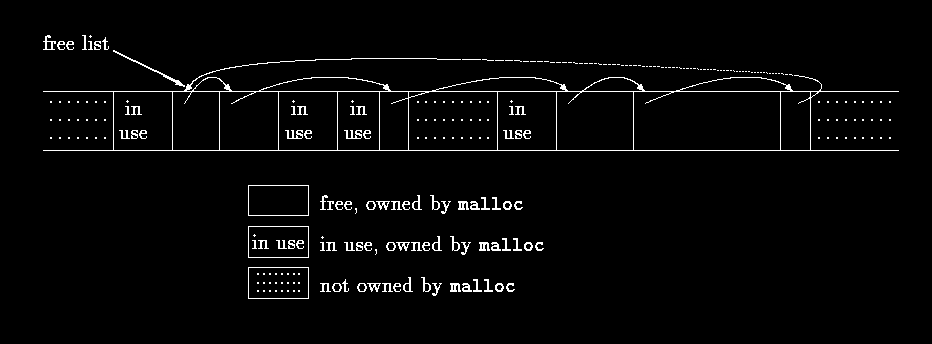
164
upon the operating system to obtain more memory as necessary. These routines illustrate
some of the considerations involved in writing machine-dependent code in a relatively
machine-independent way, and also show a real-life application of structures, unions and
typedef.
Rather than allocating from a compiled-in fixed-size array, malloc will request space from
the operating system as needed. Since other activities in the program may also request space
without calling this allocator, the space that malloc manages may not be contiguous. Thus its
free storage is kept as a list of free blocks. Each block contains a size, a pointer to the next
block, and the space itself. The blocks are kept in order of increasing storage address, and the
last block (highest address) points to the first.
When a request is made, the free list is scanned until a big-enough block is found. This
algorithm is called ``first fit,'' by contrast with ``best fit,'' which looks for the smallest block
that will satisfy the request. If the block is exactly the size requested it is unlinked from the
list and returned to the user. If the block is too big, it is split, and the proper amount is
returned to the user while the residue remains on the free list. If no big-enough block is found,
another large chunk is obtained by the operating system and linked into the free list.
Freeing also causes a search of the free list, to find the proper place to insert the block being
freed. If the block being freed is adjacent to a free block on either side, it is coalesced with it
into a single bigger block, so storage does not become too fragmented. Determining the
adjacency is easy because the free list is maintained in order of decreasing address.
One problem, which we alluded to in Chapter 5, is to ensure that the storage returned by
malloc is aligned properly for the objects that will be stored in it. Although machines vary,
for each machine there is a most restrictive type: if the most restrictive type can be stored at a
particular address, all other types may be also. On some machines, the most restrictive type is
a double; on others, int or long suffices.
A free block contains a pointer to the next block in the chain, a record of the size of the block,
and then the free space itself; the control information at the beginning is called the ``header.''
To simplify alignment, all blocks are multiples of the header size, and the header is aligned
properly. This is achieved by a union that contains the desired header structure and an
instance of the most restrictive alignment type, which we have arbitrarily made a long:
typedef long Align; /* for alignment to long boundary */
union header { /* block header */
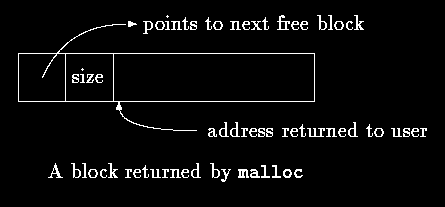
165
struct {
union header *ptr; /* next block if on free list */
unsigned size; /* size of this block */
} s;
Align x; /* force alignment of blocks */
};
typedef union header Header;
The Align field is never used; it just forces each header to be aligned on a worst-case
boundary.
In malloc, the requested size in characters is rounded up to the proper number of header-sized
units; the block that will be allocated contains one more unit, for the header itself, and this is
the value recorded in the size field of the header. The pointer returned by malloc points at
the free space, not at the header itself. The user can do anything with the space requested, but
if anything is written outside of the allocated space the list is likely to be scrambled.
The size field is necessary because the blocks controlled by malloc need not be contiguous -
it is not possible to compute sizes by pointer arithmetic.
The variable base is used to get started. If freep is NULL, as it is at the first call of malloc,
then a degenerate free list is created; it contains one block of size zero, and points to itself. In
any case, the free list is then searched. The search for a free block of adequate size begins at
the point (freep) where the last block was found; this strategy helps keep the list
homogeneous. If a too-big block is found, the tail end is returned to the user; in this way the
header of the original needs only to have its size adjusted. In all cases, the pointer returned to
the user points to the free space within the block, which begins one unit beyond the header.
static Header base; /* empty list to get started */
static Header *freep = NULL; /* start of free list */
/* malloc: general-purpose storage allocator */
void *malloc(unsigned nbytes)
{
Header *p, *prevp;
Header *moreroce(unsigned);
unsigned nunits;
nunits = (nbytes+sizeof(Header)-1)/sizeof(header) + 1;
if ((prevp = freep) == NULL) { /* no free list yet */
base.s.ptr = freeptr = prevptr = &base;
base.s.size = 0;
}
166
for (p = prevp->s.ptr; ; prevp = p, p = p->s.ptr) {
if (p->s.size >= nunits) { /* big enough */
if (p->s.size == nunits) /* exactly */
prevp->s.ptr = p->s.ptr;
else { /* allocate tail end */
p->s.size -= nunits;
p += p->s.size;
p->s.size = nunits;
}
freep = prevp;
return (void *)(p+1);
}
if (p == freep) /* wrapped around free list */
if ((p = morecore(nunits)) == NULL)
return NULL; /* none left */
}
}
The function morecore obtains storage from the operating system. The details of how it does
this vary from system to system. Since asking the system for memory is a comparatively
expensive operation. we don't want to do that on every call to malloc, so morecore requests
al least NALLOC units; this larger block will be chopped up as needed. After setting the size
field, morecore inserts the additional memory into the arena by calling free.
The UNIX system call sbrk(n) returns a pointer to n more bytes of storage. sbrk returns -1
if there was no space, even though NULL could have been a better design. The -1 must be cast
to char * so it can be compared with the return value. Again, casts make the function
relatively immune to the details of pointer representation on different machines. There is still
one assumption, however, that pointers to different blocks returned by sbrk can be
meaningfully compared. This is not guaranteed by the standard, which permits pointer
comparisons only within an array. Thus this version of malloc is portable only among
machines for which general pointer comparison is meaningful.
#define NALLOC 1024 /* minimum #units to request */
/* morecore: ask system for more memory */
static Header *morecore(unsigned nu)
{
char *cp, *sbrk(int);
Header *up;
if (nu < NALLOC)
nu = NALLOC;
cp = sbrk(nu * sizeof(Header));
if (cp == (char *) -1) /* no space at all */
return NULL;
up = (Header *) cp;
up->s.size = nu;
free((void *)(up+1));
return freep;
}
free itself is the last thing. It scans the free list, starting at freep, looking for the place to
insert the free block. This is either between two existing blocks or at the end of the list. In any
case, if the block being freed is adjacent to either neighbor, the adjacent blocks are combined.
The only troubles are keeping the pointers pointing to the right things and the sizes correct.
/* free: put block ap in free list */
void free(void *ap)
{
167
Header *bp, *p;
bp = (Header *)ap - 1; /* point to block header */
for (p = freep; !(bp > p && bp < p->s.ptr); p = p->s.ptr)
if (p >= p->s.ptr && (bp > p || bp < p->s.ptr))
break; /* freed block at start or end of arena */
if (bp + bp->size == p->s.ptr) { /* join to upper nbr */
bp->s.size += p->s.ptr->s.size;
bp->s.ptr = p->s.ptr->s.ptr;
} else
bp->s.ptr = p->s.ptr;
if (p + p->size == bp) { /* join to lower nbr */
p->s.size += bp->s.size;
p->s.ptr = bp->s.ptr;
} else
p->s.ptr = bp;
freep = p;
}
Although storage allocation is intrinsically machine-dependent, the code above illustrates how
the machine dependencies can be controlled and confined to a very small part of the program.
The use of typedef and union handles alignment (given that sbrk supplies an appropriate
pointer). Casts arrange that pointer conversions are made explicit, and even cope with a
badly-designed system interface. Even though the details here are related to storage
allocation, the general approach is applicable to other situations as well.
Exercise 8-6. The standard library function calloc(n,size) returns a pointer to n objects of
size size, with the storage initialized to zero. Write calloc, by calling malloc or by
modifying it.
Exercise 8-7. malloc accepts a size request without checking its plausibility; free believes
that the block it is asked to free contains a valid size field. Improve these routines so they
make more pains with error checking.
Exercise 8-8. Write a routine bfree(p,n) that will free any arbitrary block p of n characters
into the free list maintained by malloc and free. By using bfree, a user can add a static or
external array to the free list at any time.
168
Appendix A - Reference Manual
A.1 Introduction
This manual describes the C language specified by the draft submitted to ANSI on 31
October, 1988, for approval as ``American Standard for Information Systems - programming
Language C, X3.159-1989.'' The manual is an interpretation of the proposed standard, not the
standard itself, although care has been taken to make it a reliable guide to the language.
For the most part, this document follows the broad outline of the standard, which in turn
follows that of the first edition of this book, although the organization differs in detail. Except
for renaming a few productions, and not formalizing the definitions of the lexical tokens or
the preprocessor, the grammar given here for the language proper is equivalent to that of the
standard.
Throughout this manual, commentary material is indented and written in smaller type, as this is. Most
often these comments highlight ways in which ANSI Standard C differs from the language defined by
the first edition of this book, or from refinements subsequently introduced in various compilers.
A.2 Lexical Conventions
A program consists of one or more translation units stored in files. It is translated in several
phases, which are described in Par.A.12. The first phases do low-level lexical
transformations, carry out directives introduced by the lines beginning with the # character,
and perform macro definition and expansion. When the preprocessing of Par.A.12 is
complete, the program has been reduced to a sequence of tokens.
A.2.1 Tokens
There are six classes of tokens: identifiers, keywords, constants, string literals, operators, and
other separators. Blanks, horizontal and vertical tabs, newlines, formfeeds and comments as
described below (collectively, ``white space'') are ignored except as they separate tokens.
Some white space is required to separate otherwise adjacent identifiers, keywords, and
constants.
If the input stream has been separated into tokens up to a given character, the next token is the
longest string of characters that could constitute a token.
A.2.2 Comments
The characters /* introduce a comment, which terminates with the characters */. Comments
do not nest, and they do not occur within a string or character literals.
A.2.3 Identifiers
An identifier is a sequence of letters and digits. The first character must be a letter; the
underscore _ counts as a letter. Upper and lower case letters are different. Identifiers may
have any length, and for internal identifiers, at least the first 31 characters are significant;
169
some implementations may take more characters significant. Internal identifiers include
preprocessor macro names and all other names that do not have external linkage (Par.A.11.2).
Identifiers with external linkage are more restricted: implementations may make as few as the
first six characters significant, and may ignore case distinctions.
A.2.4 Keywords
The following identifiers are reserved for the use as keywords, and may not be used
otherwise:
auto double int struct
break else long switch
case enum register typedef
char extern return union
const float short unsigned
continue for signed void
default goto sizeof volatile
do if static while
Some implementations also reserve the words fortran and asm.
The keywords const, signed, and volatile are new with the ANSI standard; enum and void
are new since the first edition, but in common use; entry, formerly reserved but never used, is no
longer reserved.
A.2.5 Constants
There are several kinds of constants. Each has a data type; Par.A.4.2 discusses the basic types:
constant:
integer-constant
character-constant
floating-constant
enumeration-constant
A.2.5.1 Integer Constants
An integer constant consisting of a sequence of digits is taken to be octal if it begins with 0
(digit zero), decimal otherwise. Octal constants do not contain the digits 8 or 9. A sequence of
digits preceded by 0x or 0X (digit zero) is taken to be a hexadecimal integer. The hexadecimal
digits include a or A through f or F with values 10 through 15.
An integer constant may be suffixed by the letter u or U, to specify that it is unsigned. It may
also be suffixed by the letter l or L to specify that it is long.
The type of an integer constant depends on its form, value and suffix. (See Par.A.4 for a
discussion of types). If it is unsuffixed and decimal, it has the first of these types in which its
value can be represented: int, long int, unsigned long int. If it is unsuffixed, octal or
hexadecimal, it has the first possible of these types: int, unsigned int, long int,
unsigned long int. If it is suffixed by u or U, then unsigned int, unsigned long int. If
it is suffixed by l or L, then long int, unsigned long int. If an integer constant is suffixed
by UL, it is unsigned long.
The elaboration of the types of integer constants goes considerably beyond the first edition, which
merely caused large integer constants to be long. The U suffixes are new.
170
A.2.5.2 Character Constants
A character constant is a sequence of one or more characters enclosed in single quotes as in
'x'. The value of a character constant with only one character is the numeric value of the
character in the machine's character set at execution time. The value of a multi-character
constant is implementation-defined.
Character constants do not contain the ' character or newlines; in order to represent them, and
certain other characters, the following escape sequences may be used:
newline
NL (LF) \n backslash
\
\\
horizontal tab HT
\t
question mark ? \?
vertical tab
VT
\v
single quote ' \'
backspace
BS
\b
double quote " \"
carriage return CR
\r
octal number ooo \ooo
formfeed
FF
\f
hex number hh \xhh
audible alert BEL
\a
The escape \ooo consists of the backslash followed by 1, 2, or 3 octal digits, which are taken
to specify the value of the desired character. A common example of this construction is \0
(not followed by a digit), which specifies the character NUL. The escape \xhh consists of the
backslash, followed by x, followed by hexadecimal digits, which are taken to specify the
value of the desired character. There is no limit on the number of digits, but the behavior is
undefined if the resulting character value exceeds that of the largest character. For either octal
or hexadecimal escape characters, if the implementation treats the char type as signed, the
value is sign-extended as if cast to char type. If the character following the \ is not one of
those specified, the behavior is undefined.
In some implementations, there is an extended set of characters that cannot be represented in
the char type. A constant in this extended set is written with a preceding L, for example L'x',
and is called a wide character constant. Such a constant has type wchar_t, an integral type
defined in the standard header <stddef.h>. As with ordinary character constants,
hexadecimal escapes may be used; the effect is undefined if the specified value exceeds that
representable with wchar_t.
Some of these escape sequences are new, in particular the hexadecimal character representation.
Extended characters are also new. The character sets commonly used in the Americas and western
Europe can be encoded to fit in the char type; the main intent in adding wchar_t was to
accommodate Asian languages.
A.2.5.3 Floating Constants
A floating constant consists of an integer part, a decimal part, a fraction part, an e or E, an
optionally signed integer exponent and an optional type suffix, one of f, F, l, or L. The integer
and fraction parts both consist of a sequence of digits. Either the integer part, or the fraction
part (not both) may be missing; either the decimal point or the e and the exponent (not both)
may be missing. The type is determined by the suffix; F or f makes it float, L or l makes it
long double, otherwise it is double.
A2.5.4 Enumeration Constants
171
Identifiers declared as enumerators (see Par.A.8.4) are constants of type int.
A.2.6 String Literals
A string literal, also called a string constant, is a sequence of characters surrounded by double
quotes as in "...". A string has type ``array of characters'' and storage class static (see
Par.A.3 below) and is initialized with the given characters. Whether identical string literals
are distinct is implementation-defined, and the behavior of a program that attempts to alter a
string literal is undefined.
Adjacent string literals are concatenated into a single string. After any concatenation, a null
byte \0 is appended to the string so that programs that scan the string can find its end. String
literals do not contain newline or double-quote characters; in order to represent them, the
same escape sequences as for character constants are available.
As with character constants, string literals in an extended character set are written with a
preceding L, as in L"...". Wide-character string literals have type ``array of wchar_t.''
Concatenation of ordinary and wide string literals is undefined.
The specification that string literals need not be distinct, and the prohibition against modifying them,
are new in the ANSI standard, as is the concatenation of adjacent string literals. Wide-character string
literals are new.
A.3 Syntax Notation
In the syntax notation used in this manual, syntactic categories are indicated by italic type,
and literal words and characters in typewriter style. Alternative categories are usually listed
on separate lines; in a few cases, a long set of narrow alternatives is presented on one line,
marked by the phrase ``one of.'' An optional terminal or nonterminal symbol carries the
subscript ``opt,'' so that, for example,
{ expressionopt }
means an optional expression, enclosed in braces. The syntax is summarized in Par.A.13.
Unlike the grammar given in the first edition of this book, the one given here makes precedence and
associativity of expression operators explicit.
A.4 Meaning of Identifiers
Identifiers, or names, refer to a variety of things: functions; tags of structures, unions, and
enumerations; members of structures or unions; enumeration constants; typedef names; and
objects. An object, sometimes called a variable, is a location in storage, and its interpretation
depends on two main attributes: its storage class and its type. The storage class determines the
lifetime of the storage associated with the identified object; the type determines the meaning
of the values found in the identified object. A name also has a scope, which is the region of
the program in which it is known, and a linkage, which determines whether the same name in
another scope refers to the same object or function. Scope and linkage are discussed in
Par.A.11.
A.4.1 Storage Class
172
There are two storage classes: automatic and static. Several keywords, together with the
context of an object's declaration, specify its storage class. Automatic objects are local to a
block (Par.9.3), and are discarded on exit from the block. Declarations within a block create
automatic objects if no storage class specification is mentioned, or if the auto specifier is
used. Objects declared register are automatic, and are (if possible) stored in fast registers of
the machine.
Static objects may be local to a block or external to all blocks, but in either case retain their
values across exit from and reentry to functions and blocks. Within a block, including a block
that provides the code for a function, static objects are declared with the keyword static.
The objects declared outside all blocks, at the same level as function definitions, are always
static. They may be made local to a particular translation unit by use of the static keyword;
this gives them internal linkage. They become global to an entire program by omitting an
explicit storage class, or by using the keyword extern; this gives them external linkage.
A.4.2 Basic Types
There are several fundamental types. The standard header <limits.h> described in Appendix
B defines the largest and smallest values of each type in the local implementation. The
numbers given in Appendix B show the smallest acceptable magnitudes.
Objects declared as characters (char) are large enough to store any member of the execution
character set. If a genuine character from that set is stored in a char object, its value is
equivalent to the integer code for the character, and is non-negative. Other quantities may be
stored into char variables, but the available range of values, and especially whether the value
is signed, is implementation-dependent.
Unsigned characters declared unsigned char consume the same amount of space as plain
characters, but always appear non-negative; explicitly signed characters declared signed
char likewise take the same space as plain characters.
unsigned char type does not appear in the first edition of this book, but is in common use. signed
char is new.
Besides the char types, up to three sizes of integer, declared short int, int, and long int,
are available. Plain int objects have the natural size suggested by the host machine
architecture; the other sizes are provided to meet special needs. Longer integers provide at
least as much storage as shorter ones, but the implementation may make plain integers
equivalent to either short integers, or long integers. The int types all represent signed values
unless specified otherwise.
Unsigned integers, declared using the keyword unsigned, obey the laws of arithmetic modulo
2n where n is the number of bits in the representation, and thus arithmetic on unsigned
quantities can never overflow. The set of non-negative values that can be stored in a signed
object is a subset of the values that can be stored in the corresponding unsigned object, and
the representation for the overlapping values is the same.
Any of single precision floating point (float), double precision floating point (double), and
extra precision floating point (long double) may be synonymous, but the ones later in the
list are at least as precise as those before.
173
long double is new. The first edition made long float equivalent to double; the locution has
been withdrawn.
Enumerations are unique types that have integral values; associated with each enumeration is
a set of named constants (Par.A.8.4). Enumerations behave like integers, but it is common for
a compiler to issue a warning when an object of a particular enumeration is assigned
something other than one of its constants, or an expression of its type.
Because objects of these types can be interpreted as numbers, they will be referred to as
arithmetic types. Types char, and int of all sizes, each with or without sign, and also
enumeration types, will collectively be called integral types. The types float, double, and
long double will be called floating types.
The void type specifies an empty set of values. It is used as the type returned by functions
that generate no value.
A.4.3 Derived types
Beside the basic types, there is a conceptually infinite class of derived types constructed from
the fundamental types in the following ways:
arrays of objects of a given type;
functions returning objects of a given type;
pointers to objects of a given type;
structures containing a sequence of objects of various types;
unions capable of containing any of one of several objects of various types.
In general these methods of constructing objects can be applied recursively.
A.4.4 Type Qualifiers
An object's type may have additional qualifiers. Declaring an object const announces that its
value will not be changed; declaring it volatile announces that it has special properties
relevant to optimization. Neither qualifier affects the range of values or arithmetic properties
of the object. Qualifiers are discussed in Par.A.8.2.
A.5 Objects and Lvalues
An Object is a named region of storage; an lvalue is an expression referring to an object. An
obvious example of an lvalue expression is an identifier with suitable type and storage class.
There are operators that yield lvalues, if E is an expression of pointer type, then *E is an lvalue
expression referring to the object to which E points. The name ``lvalue'' comes from the
assignment expression E1 = E2 in which the left operand E1 must be an lvalue expression.
The discussion of each operator specifies whether it expects lvalue operands and whether it
yields an lvalue.
A.6 Conversions
Some operators may, depending on their operands, cause conversion of the value of an
operand from one type to another. This section explains the result to be expected from such
174
conversions. Par.6.5 summarizes the conversions demanded by most ordinary operators; it
will be supplemented as required by the discussion of each operator.
A.6.1 Integral Promotion
A character, a short integer, or an integer bit-field, all either signed or not, or an object of
enumeration type, may be used in an expression wherever an integer may be used. If an int
can represent all the values of the original type, then the value is converted to int; otherwise
the value is converted to unsigned int. This process is called integral promotion.
A.6.2 Integral Conversions
Any integer is converted to a given unsigned type by finding the smallest non-negative value
that is congruent to that integer, modulo one more than the largest value that can be
represented in the unsigned type. In a two's complement representation, this is equivalent to
left-truncation if the bit pattern of the unsigned type is narrower, and to zero-filling unsigned
values and sign-extending signed values if the unsigned type is wider.
When any integer is converted to a signed type, the value is unchanged if it can be represented
in the new type and is implementation-defined otherwise.
A.6.3 Integer and Floating
When a value of floating type is converted to integral type, the fractional part is discarded; if
the resulting value cannot be represented in the integral type, the behavior is undefined. In
particular, the result of converting negative floating values to unsigned integral types is not
specified.
When a value of integral type is converted to floating, and the value is in the representable
range but is not exactly representable, then the result may be either the next higher or next
lower representable value. If the result is out of range, the behavior is undefined.
A.6.4 Floating Types
When a less precise floating value is converted to an equally or more precise floating type, the
value is unchanged. When a more precise floating value is converted to a less precise floating
type, and the value is within representable range, the result may be either the next higher or
the next lower representable value. If the result is out of range, the behavior is undefined.
A.6.5 Arithmetic Conversions
Many operators cause conversions and yield result types in a similar way. The effect is to
bring operands into a common type, which is also the type of the result. This pattern is called
the usual arithmetic conversions.
• First, if either operand is long double, the other is converted to long double.
• Otherwise, if either operand is double, the other is converted to double.
• Otherwise, if either operand is float, the other is converted to float.
• Otherwise, the integral promotions are performed on both operands; then, if either
operand is unsigned long int, the other is converted to unsigned long int.
175
• Otherwise, if one operand is long int and the other is unsigned int, the effect
depends on whether a long int can represent all values of an unsigned int; if so,
the unsigned int operand is converted to long int; if not, both are converted to
unsigned long int.
• Otherwise, if one operand is long int, the other is converted to long int.
• Otherwise, if either operand is unsigned int, the other is converted to unsigned
int.
• Otherwise, both operands have type int.
There are two changes here. First, arithmetic on float operands may be done in single precision,
rather than double; the first edition specified that all floating arithmetic was double precision. Second,
shorter unsigned types, when combined with a larger signed type, do not propagate the unsigned
property to the result type; in the first edition, the unsigned always dominated. The new rules are
slightly more complicated, but reduce somewhat the surprises that may occur when an unsigned
quantity meets signed. Unexpected results may still occur when an unsigned expression is compared to
a signed expression of the same size.
A.6.6 Pointers and Integers
An expression of integral type may be added to or subtracted from a pointer; in such a case
the integral expression is converted as specified in the discussion of the addition operator
(Par.A.7.7).
Two pointers to objects of the same type, in the same array, may be subtracted; the result is
converted to an integer as specified in the discussion of the subtraction operator (Par.A.7.7).
An integral constant expression with value 0, or such an expression cast to type void *, may
be converted, by a cast, by assignment, or by comparison, to a pointer of any type. This
produces a null pointer that is equal to another null pointer of the same type, but unequal to
any pointer to a function or object.
Certain other conversions involving pointers are permitted, but have implementation-defined
aspects. They must be specified by an explicit type-conversion operator, or cast (Pars.A.7.5
and A.8.8).
A pointer may be converted to an integral type large enough to hold it; the required size is
implementation-dependent. The mapping function is also implementation-dependent.
A pointer to one type may be converted to a pointer to another type. The resulting pointer may
cause addressing exceptions if the subject pointer does not refer to an object suitably aligned
in storage. It is guaranteed that a pointer to an object may be converted to a pointer to an
object whose type requires less or equally strict storage alignment and back again without
change; the notion of ``alignment'' is implementation-dependent, but objects of the char types
have least strict alignment requirements. As described in Par.A.6.8, a pointer may also be
converted to type void * and back again without change.
A pointer may be converted to another pointer whose type is the same except for the addition
or removal of qualifiers (Pars.A.4.4, A.8.2) of the object type to which the pointer refers. If
qualifiers are added, the new pointer is equivalent to the old except for restrictions implied by
the new qualifiers. If qualifiers are removed, operations on the underlying object remain
subject to the qualifiers in its actual declaration.
176
Finally, a pointer to a function may be converted to a pointer to another function type. Calling
the function specified by the converted pointer is implementation-dependent; however, if the
converted pointer is reconverted to its original type, the result is identical to the original
pointer.
A.6.7 Void
The (nonexistent) value of a void object may not be used in any way, and neither explicit nor
implicit conversion to any non-void type may be applied. Because a void expression denotes a
nonexistent value, such an expression may be used only where the value is not required, for
example as an expression statement (Par.A.9.2) or as the left operand of a comma operator
(Par.A.7.18).
An expression may be converted to type void by a cast. For example, a void cast documents
the discarding of the value of a function call used as an expression statement.
void did not appear in the first edition of this book, but has become common since.
A.6.8 Pointers to Void
Any pointer to an object may be converted to type void * without loss of information. If the
result is converted back to the original pointer type, the original pointer is recovered. Unlike
the pointer-to-pointer conversions discussed in Par.A.6.6, which generally require an explicit
cast, pointers may be assigned to and from pointers of type void *, and may be compared
with them.
This interpretation of void * pointers is new; previously, char * pointers played the role of generic
pointer. The ANSI standard specifically blesses the meeting of void * pointers with object pointers in
assignments and relationals, while requiring explicit casts for other pointer mixtures.
A.7 Expressions
The precedence of expression operators is the same as the order of the major subsections of
this section, highest precedence first. Thus, for example, the expressions referred to as the
operands of + (Par.A.7.7) are those expressions defined in Pars.A.7.1-A.7.6. Within each
subsection, the operators have the same precedence. Left- or right-associativity is specified in
each subsection for the operators discussed therein. The grammar given in Par.13 incorporates
the precedence and associativity of the operators.
The precedence and associativity of operators is fully specified, but the order of evaluation of
expressions is, with certain exceptions, undefined, even if the subexpressions involve side
effects. That is, unless the definition of the operator guarantees that its operands are evaluated
in a particular order, the implementation is free to evaluate operands in any order, or even to
interleave their evaluation. However, each operator combines the values produced by its
operands in a way compatible with the parsing of the expression in which it appears.
This rule revokes the previous freedom to reorder expressions with operators that are mathematically
commutative and associative, but can fail to be computationally associative. The change affects only
floating-point computations near the limits of their accuracy, and situations where overflow is possible.
The handling of overflow, divide check, and other exceptions in expression evaluation is not
defined by the language. Most existing implementations of C ignore overflow in evaluation of
signed integral expressions and assignments, but this behavior is not guaranteed. Treatment of
177
division by 0, and all floating-point exceptions, varies among implementations; sometimes it
is adjustable by a non-standard library function.
A.7.1 Pointer Conversion
If the type of an expression or subexpression is ``array of T,'' for some type T, then the value
of the expression is a pointer to the first object in the array, and the type of the expression is
altered to ``pointer to T.'' This conversion does not take place if the expression is in the
operand of the unary & operator, or of ++, --, sizeof, or as the left operand of an assignment
operator or the . operator. Similarly, an expression of type ``function returning T,'' except
when used as the operand of the & operator, is converted to ``pointer to function returning T.''
A.7.2 Primary Expressions
Primary expressions are identifiers, constants, strings, or expressions in parentheses.
primary-expression
identifier
constant
string
(expression)
An identifier is a primary expression, provided it has been suitably declared as discussed
below. Its type is specified by its declaration. An identifier is an lvalue if it refers to an object
(Par.A.5) and if its type is arithmetic, structure, union, or pointer.
A constant is a primary expression. Its type depends on its form as discussed in Par.A.2.5.
A string literal is a primary expression. Its type is originally ``array of char'' (for wide-char
strings, ``array of wchar_t''), but following the rule given in Par.A.7.1, this is usually
modified to ``pointer to char'' (wchar_t) and the result is a pointer to the first character in the
string. The conversion also does not occur in certain initializers; see Par.A.8.7.
A parenthesized expression is a primary expression whose type and value are identical to
those of the unadorned expression. The precedence of parentheses does not affect whether the
expression is an lvalue.
A.7.3 Postfix Expressions
The operators in postfix expressions group left to right.
postfix-expression:
primary-expression
postfix-expression[expression]
postfix-expression(argument-expression-listopt)
postfix-expression.identifier
postfix-expression->identifier
postfix-expression++
postfix-expression--
178
argument-expression-list:
assignment-expression
assignment-expression-list , assignment-expression
A.7.3.1 Array References
A postfix expression followed by an expression in square brackets is a postfix expression
denoting a subscripted array reference. One of the two expressions must have type ``pointer to
T'', where T is some type, and the other must have integral type; the type of the subscript
expression is T. The expression E1[E2] is identical (by definition) to *((E1)+(E2)). See
Par.A.8.6.2 for further discussion.
A.7.3.2 Function Calls
A function call is a postfix expression, called the function designator, followed by parentheses
containing a possibly empty, comma-separated list of assignment expressions (Par.A7.17),
which constitute the arguments to the function. If the postfix expression consists of an
identifier for which no declaration exists in the current scope, the identifier is implicitly
declared as if the declaration
extern int identifier();
had been given in the innermost block containing the function call. The postfix expression
(after possible explicit declaration and pointer generation, Par.A7.1) must be of type ``pointer
to function returning T,'' for some type T, and the value of the function call has type T.
In the first edition, the type was restricted to ``function,'' and an explicit * operator was required to call
through pointers to functions. The ANSI standard blesses the practice of some existing compilers by
permitting the same syntax for calls to functions and to functions specified by pointers. The older
syntax is still usable.
The term argument is used for an expression passed by a function call; the term parameter is
used for an input object (or its identifier) received by a function definition, or described in a
function declaration. The terms ``actual argument (parameter)'' and ``formal argument
(parameter)'' respectively are sometimes used for the same distinction.
In preparing for the call to a function, a copy is made of each argument; all argument-passing
is strictly by value. A function may change the values of its parameter objects, which are
copies of the argument expressions, but these changes cannot affect the values of the
arguments. However, it is possible to pass a pointer on the understanding that the function
may change the value of the object to which the pointer points.
There are two styles in which functions may be declared. In the new style, the types of
parameters are explicit and are part of the type of the function; such a declaration os also
called a function prototype. In the old style, parameter types are not specified. Function
declaration is issued in Pars.A.8.6.3 and A.10.1.
If the function declaration in scope for a call is old-style, then default argument promotion is
applied to each argument as follows: integral promotion (Par.A.6.1) is performed on each
argument of integral type, and each float argument is converted to double. The effect of the
call is undefined if the number of arguments disagrees with the number of parameters in the
definition of the function, or if the type of an argument after promotion disagrees with that of
the corresponding parameter. Type agreement depends on whether the function's definition is
179
new-style or old-style. If it is old-style, then the comparison is between the promoted type of
the arguments of the call, and the promoted type of the parameter, if the definition is new-
style, the promoted type of the argument must be that of the parameter itself, without
promotion.
If the function declaration in scope for a call is new-style, then the arguments are converted,
as if by assignment, to the types of the corresponding parameters of the function's prototype.
The number of arguments must be the same as the number of explicitly described parameters,
unless the declaration's parameter list ends with the ellipsis notation (, ...). In that case, the
number of arguments must equal or exceed the number of parameters; trailing arguments
beyond the explicitly typed parameters suffer default argument promotion as described in the
preceding paragraph. If the definition of the function is old-style, then the type of each
parameter in the definition, after the definition parameter's type has undergone argument
promotion.
These rules are especially complicated because they must cater to a mixture of old- and new-style
functions. Mixtures are to be avoided if possible.
The order of evaluation of arguments is unspecified; take note that various compilers differ.
However, the arguments and the function designator are completely evaluated, including all
side effects, before the function is entered. Recursive calls to any function are permitted.
A.7.3.3 Structure References
A postfix expression followed by a dot followed by an identifier is a postfix expression. The
first operand expression must be a structure or a union, and the identifier must name a
member of the structure or union. The value is the named member of the structure or union,
and its type is the type of the member. The expression is an lvalue if the first expression is an
lvalue, and if the type of the second expression is not an array type.
A postfix expression followed by an arrow (built from - and >) followed by an identifier is a
postfix expression. The first operand expression must be a pointer to a structure or union, and
the identifier must name a member of the structure or union. The result refers to the named
member of the structure or union to which the pointer expression points, and the type is the
type of the member; the result is an lvalue if the type is not an array type.
Thus the expression E1->MOS is the same as (*E1).MOS. Structures and unions are discussed
in Par.A.8.3.
In the first edition of this book, it was already the rule that a member name in such an expression had to
belong to the structure or union mentioned in the postfix expression; however, a note admitted that this
rule was not firmly enforced. Recent compilers, and ANSI, do enforce it.
A.7.3.4 Postfix Incrementation
A postfix expression followed by a ++ or -- operator is a postfix expression. The value of the
expression is the value of the operand. After the value is noted, the operand is incremented ++
or decremented -- by 1. The operand must be an lvalue; see the discussion of additive
operators (Par.A.7.7) and assignment (Par.A.7.17) for further constraints on the operand and
details of the operation. The result is not an lvalue.
A.7.4 Unary Operators
180
Expressions with unary operators group right-to-left.
unary-expression:
postfix expression
++unary expression
--unary expression
unary-operator cast-expression
sizeof unary-expression
sizeof(type-name)
unary operator: one of
& * + - ~ !
A.7.4.1 Prefix Incrementation Operators
A unary expression followed by a ++ or -- operator is a unary expression. The operand is
incremented ++ or decremented -- by 1. The value of the expression is the value after the
incrementation (decrementation). The operand must be an lvalue; see the discussion of
additive operators (Par.A.7.7) and assignment (Par.A.7.17) for further constraints on the
operands and details of the operation. The result is not an lvalue.
A.7.4.2 Address Operator
The unary operator & takes the address of its operand. The operand must be an lvalue referring
neither to a bit-field nor to an object declared as register, or must be of function type. The
result is a pointer to the object or function referred to by the lvalue. If the type of the operand
is T, the type of the result is ``pointer to T.''
A.7.4.3 Indirection Operator
The unary * operator denotes indirection, and returns the object or function to which its
operand points. It is an lvalue if the operand is a pointer to an object of arithmetic, structure,
union, or pointer type. If the type of the expression is ``pointer to T,'' the type of the result is
T.
A.7.4.4 Unary Plus Operator
The operand of the unary + operator must have arithmetic type, and the result is the value of
the operand. An integral operand undergoes integral promotion. The type of the result is the
type of the promoted operand.
The unary + is new with the ANSI standard. It was added for symmetry with the unary -.
A.7.4.5 Unary Minus Operator
The operand of the unary - operator must have arithmetic type, and the result is the negative
of its operand. An integral operand undergoes integral promotion. The negative of an
unsigned quantity is computed by subtracting the promoted value from the largest value of the
promoted type and adding one; but negative zero is zero. The type of the result is the type of
the promoted operand.
A.7.4.6 One's Complement Operator
181
The operand of the ~ operator must have integral type, and the result is the one's complement
of its operand. The integral promotions are performed. If the operand is unsigned, the result is
computed by subtracting the value from the largest value of the promoted type. If the operand
is signed, the result is computed by converting the promoted operand to the corresponding
unsigned type, applying ~, and converting back to the signed type. The type of the result is the
type of the promoted operand.
A.7.4.7 Logical Negation Operator
The operand of the ! operator must have arithmetic type or be a pointer, and the result is 1 if
the value of its operand compares equal to 0, and 0 otherwise. The type of the result is int.
A.7.4.8 Sizeof Operator
The sizeof operator yields the number of bytes required to store an object of the type of its
operand. The operand is either an expression, which is not evaluated, or a parenthesized type
name. When sizeof is applied to a char, the result is 1; when applied to an array, the result is
the total number of bytes in the array. When applied to a structure or union, the result is the
number of bytes in the object, including any padding required to make the object tile an array:
the size of an array of n elements is n times the size of one element. The operator may not be
applied to an operand of function type, or of incomplete type, or to a bit-field. The result is an
unsigned integral constant; the particular type is implementation-defined. The standard header
<stddef.h> (See appendix B) defines this type as size_t.
A.7.5 Casts
A unary expression preceded by the parenthesized name of a type causes conversion of the
value of the expression to the named type.
cast-expression:
unary expression
(type-name) cast-expression
This construction is called a cast. The names are described in Par.A.8.8. The effects of
conversions are described in Par.A.6. An expression with a cast is not an lvalue.
A.7.6 Multiplicative Operators
The multiplicative operators *, /, and % group left-to-right.
multiplicative-expression:
multiplicative-expression * cast-expression
multiplicative-expression / cast-expression
multiplicative-expression % cast-expression
The operands of * and / must have arithmetic type; the operands of % must have integral type.
The usual arithmetic conversions are performed on the operands, and predict the type of the
result.
The binary * operator denotes multiplication.
182
The binary / operator yields the quotient, and the % operator the remainder, of the division of
the first operand by the second; if the second operand is 0, the result is undefined. Otherwise,
it is always true that (a/b)*b + a%b is equal to a. If both operands are non-negative, then the
remainder is non-negative and smaller than the divisor, if not, it is guaranteed only that the
absolute value of the remainder is smaller than the absolute value of the divisor.
A.7.7 Additive Operators
The additive operators + and - group left-to-right. If the operands have arithmetic type, the
usual arithmetic conversions are performed. There are some additional type possibilities for
each operator.
additive-expression:
multiplicative-expression
additive-expression + multiplicative-expression
additive-expression - multiplicative-expression
The result of the + operator is the sum of the operands. A pointer to an object in an array and a
value of any integral type may be added. The latter is converted to an address offset by
multiplying it by the size of the object to which the pointer points. The sum is a pointer of the
same type as the original pointer, and points to another object in the same array, appropriately
offset from the original object. Thus if P is a pointer to an object in an array, the expression
P+1 is a pointer to the next object in the array. If the sum pointer points outside the bounds of
the array, except at the first location beyond the high end, the result is undefined.
The provision for pointers just beyond the end of an array is new. It legitimizes a common idiom for
looping over the elements of an array.
The result of the - operator is the difference of the operands. A value of any integral type may
be subtracted from a pointer, and then the same conversions and conditions as for addition
apply.
If two pointers to objects of the same type are subtracted, the result is a signed integral value
representing the displacement between the pointed-to objects; pointers to successive objects
differ by 1. The type of the result is defined as ptrdiff_t in the standard header
<stddef.h>. The value is undefined unless the pointers point to objects within the same
array; however, if P points to the last member of an array, then (P+1)-P has value 1.
A.7.8 Shift Operators
The shift operators << and >> group left-to-right. For both operators, each operand must be
integral, and is subject to integral the promotions. The type of the result is that of the
promoted left operand. The result is undefined if the right operand is negative, or greater than
or equal to the number of bits in the left expression's type.
shift-expression:
additive-expression
shift-expression << additive-expression
shift-expression >> additive-expression
The value of E1<<E2 is E1 (interpreted as a bit pattern) left-shifted E2 bits; in the absence of
overflow, this is equivalent to multiplication by 2E2. The value of E1>>E2 is E1 right-shifted
183
E2 bit positions. The right shift is equivalent to division by 2E2 if E1 is unsigned or it has a
non-negative value; otherwise the result is implementation-defined.
A.7.9 Relational Operators
The relational operators group left-to-right, but this fact is not useful; a<b<c is parsed as
(a<b)<c, and evaluates to either 0 or 1.
relational-expression:
shift-expression
relational-expression < shift-expression
relational-expression > shift-expression
relational-expression <= shift-expression
relational-expression >= shift-expression
The operators < (less), > (greater), <= (less or equal) and >= (greater or equal) all yield 0 if the
specified relation is false and 1 if it is true. The type of the result is int. The usual arithmetic
conversions are performed on arithmetic operands. Pointers to objects of the same type
(ignoring any qualifiers) may be compared; the result depends on the relative locations in the
address space of the pointed-to objects. Pointer comparison is defined only for parts of the
same object; if two pointers point to the same simple object, they compare equal; if the
pointers are to members of the same structure, pointers to objects declared later in the
structure compare higher; if the pointers refer to members of an array, the comparison is
equivalent to comparison of the the corresponding subscripts. If P points to the last member of
an array, then P+1 compares higher than P, even though P+1 points outside the array.
Otherwise, pointer comparison is undefined.
These rules slightly liberalize the restrictions stated in the first edition, by permitting comparison of
pointers to different members of a structure or union. They also legalize comparison with a pointer just
off the end of an array.
A.7.10 Equality Operators
equality-expression:
relational-expression
equality-expression == relational-expression
equality-expression != relational-expression
The == (equal to) and the != (not equal to) operators are analogous to the relational operators
except for their lower precedence. (Thus a<b == c<d is 1 whenever a<b and c<d have the
same truth-value.)
The equality operators follow the same rules as the relational operators, but permit additional
possibilities: a pointer may be compared to a constant integral expression with value 0, or to a
pointer to void. See Par.A.6.6.
A.7.11 Bitwise AND Operator
AND-expression:
equality-expression
AND-expression & equality-expression
184
The usual arithmetic conversions are performed; the result is the bitwise AND function of the
operands. The operator applies only to integral operands.
A.7.12 Bitwise Exclusive OR Operator
exclusive-OR-expression:
AND-expression
exclusive-OR-expression ^ AND-expression
The usual arithmetic conversions are performed; the result is the bitwise exclusive OR
function of the operands. The operator applies only to integral operands.
A.7.13 Bitwise Inclusive OR Operator
inclusive-OR-expression:
exclusive-OR-expression
inclusive-OR-expression | exclusive-OR-expression
The usual arithmetic conversions are performed; the result is the bitwise inclusive OR
function of the operands. The operator applies only to integral operands.
A.7.14 Logical AND Operator
logical-AND-expression:
inclusive-OR-expression
logical-AND-expression && inclusive-OR-expression
The && operator groups left-to-right. It returns 1 if both its operands compare unequal to zero,
0 otherwise. Unlike &, && guarantees left-to-right evaluation: the first operand is evaluated,
including all side effects; if it is equal to 0, the value of the expression is 0. Otherwise, the
right operand is evaluated, and if it is equal to 0, the expression's value is 0, otherwise 1.
The operands need not have the same type, but each must have arithmetic type or be a pointer.
The result is int.
A.7.15 Logical OR Operator
logical-OR-expression:
logical-AND-expression
logical-OR-expression || logical-AND-expression
The || operator groups left-to-right. It returns 1 if either of its operands compare unequal to
zero, and 0 otherwise. Unlike |, || guarantees left-to-right evaluation: the first operand is
evaluated, including all side effects; if it is unequal to 0, the value of the expression is 1.
Otherwise, the right operand is evaluated, and if it is unequal to 0, the expression's value is 1,
otherwise 0.
The operands need not have the same type, but each must have arithmetic type or be a pointer.
The result is int.
A.7.16 Conditional Operator
185
conditional-expression:
logical-OR-expression
logical-OR-expression ? expression : conditional-expression
The first expression is evaluated, including all side effects; if it compares unequal to 0, the
result is the value of the second expression, otherwise that of the third expression. Only one of
the second and third operands is evaluated. If the second and third operands are arithmetic,
the usual arithmetic conversions are performed to bring them to a common type, and that type
is the type of the result. If both are void, or structures or unions of the same type, or pointers
to objects of the same type, the result has the common type. If one is a pointer and the other
the constant 0, the 0 is converted to the pointer type, and the result has that type. If one is a
pointer to void and the other is another pointer, the other pointer is converted to a pointer to
void, and that is the type of the result.
In the type comparison for pointers, any type qualifiers (Par.A.8.2) in the type to which the
pointer points are insignificant, but the result type inherits qualifiers from both arms of the
conditional.
A.7.17 Assignment Expressions
There are several assignment operators; all group right-to-left.
assignment-expression:
conditional-expression
unary-expression assignment-operator assignment-expression
assignment-operator: one of
= *= /= %= += -= <<= >>= &= ^= |=
All require an lvalue as left operand, and the lvalue must be modifiable: it must not be an
array, and must not have an incomplete type, or be a function. Also, its type must not be
qualified with const; if it is a structure or union, it must not have any member or, recursively,
submember qualified with const. The type of an assignment expression is that of its left
operand, and the value is the value stored in the left operand after the assignment has taken
place.
In the simple assignment with =, the value of the expression replaces that of the object
referred to by the lvalue. One of the following must be true: both operands have arithmetic
type, in which case the right operand is converted to the type of the left by the assignment; or
both operands are structures or unions of the same type; or one operand is a pointer and the
other is a pointer to void, or the left operand is a pointer and the right operand is a constant
expression with value 0; or both operands are pointers to functions or objects whose types are
the same except for the possible absence of const or volatile in the right operand.
An expression of the form E1 op= E2 is equivalent to E1 = E1 op (E2) except that E1 is
evaluated only once.
A.7.18 Comma Operator
expression:
assignment-expression
expression , assignment-expression
186
A pair of expressions separated by a comma is evaluated left-to-right, and the value of the left
expression is discarded. The type and value of the result are the type and value of the right
operand. All side effects from the evaluation of the left-operand are completed before
beginning the evaluation of the right operand. In contexts where comma is given a special
meaning, for example in lists of function arguments (Par.A.7.3.2) and lists of initializers
(Par.A.8.7), the required syntactic unit is an assignment expression, so the comma operator
appears only in a parenthetical grouping, for example,
f(a, (t=3, t+2), c)
has three arguments, the second of which has the value 5.
A.7.19 Constant Expressions
Syntactically, a constant expression is an expression restricted to a subset of operators:
constant-expression:
conditional-expression
Expressions that evaluate to a constant are required in several contexts: after case, as array
bounds and bit-field lengths, as the value of an enumeration constant, in initializers, and in
certain preprocessor expressions.
Constant expressions may not contain assignments, increment or decrement operators,
function calls, or comma operators; except in an operand of sizeof. If the constant
expression is required to be integral, its operands must consist of integer, enumeration,
character, and floating constants; casts must specify an integral type, and any floating
constants must be cast to integer. This necessarily rules out arrays, indirection, address-of,
and structure member operations. (However, any operand is permitted for sizeof.)
More latitude is permitted for the constant expressions of initializers; the operands may be
any type of constant, and the unary & operator may be applied to external or static objects, and
to external and static arrays subscripted with a constant expression. The unary & operator can
also be applied implicitly by appearance of unsubscripted arrays and functions. Initializers
must evaluate either to a constant or to the address of a previously declared external or static
object plus or minus a constant.
Less latitude is allowed for the integral constant expressions after #if; sizeof expressions,
enumeration constants, and casts are not permitted. See Par.A.12.5.
A.8 Declarations
Declarations specify the interpretation given to each identifier; they do not necessarily reserve
storage associated with the identifier. Declarations that reserve storage are called definitions.
Declarations have the form
declaration:
declaration-specifiers init-declarator-listopt;
The declarators in the init-declarator list contain the identifiers being declared; the
declaration-specifiers consist of a sequence of type and storage class specifiers.
187
declaration-specifiers:
storage-class-specifier declaration-specifiersopt
type-specifier declaration-specifiersopt
type-qualifier declaration-specifiersopt
init-declarator-list:
init-declarator
init-declarator-list , init-declarator
init-declarator:
declarator
declarator = initializer
Declarators will be discussed later (Par.A.8.5); they contain the names being declared. A
declaration must have at least one declarator, or its type specifier must declare a structure tag,
a union tag, or the members of an enumeration; empty declarations are not permitted.
A.8.1 Storage Class Specifiers
The storage class specifiers are:
storage-class specifier:
auto
register
static
extern
typedef
The meaning of the storage classes were discussed in Par.A.4.4.
The auto and register specifiers give the declared objects automatic storage class, and may
be used only within functions. Such declarations also serve as definitions and cause storage to
be reserved. A register declaration is equivalent to an auto declaration, but hints that the
declared objects will be accessed frequently. Only a few objects are actually placed into
registers, and only certain types are eligible; the restrictions are implementation-dependent.
However, if an object is declared register, the unary & operator may not be applied to it,
explicitly or implicitly.
The rule that it is illegal to calculate the address of an object declared register, but actually taken to
be auto, is new.
The static specifier gives the declared objects static storage class, and may be used either
inside or outside functions. Inside a function, this specifier causes storage to be allocated, and
serves as a definition; for its effect outside a function, see Par.A.11.2.
A declaration with extern, used inside a function, specifies that the storage for the declared
objects is defined elsewhere; for its effects outside a function, see Par.A.11.2.
The typedef specifier does not reserve storage and is called a storage class specifier only for
syntactic convenience; it is discussed in Par.A.8.9.
188
At most one storage class specifier may be given in a declaration. If none is given, these rules
are used: objects declared inside a function are taken to be auto; functions declared within a
function are taken to be extern; objects and functions declared outside a function are taken to
be static, with external linkage. See Pars. A.10-A.11.
A.8.2 Type Specifiers
The type-specifiers are
type specifier:
void
char
short
int
long
float
double
signed
unsigned
struct-or-union-specifier
enum-specifier
typedef-name
At most one of the words long or short may be specified together with int; the meaning is
the same if int is not mentioned. The word long may be specified together with double. At
most one of signed or unsigned may be specified together with int or any of its short or
long varieties, or with char. Either may appear alone in which case int is understood. The
signed specifier is useful for forcing char objects to carry a sign; it is permissible but
redundant with other integral types.
Otherwise, at most one type-specifier may be given in a declaration. If the type-specifier is
missing from a declaration, it is taken to be int.
Types may also be qualified, to indicate special properties of the objects being declared.
type-qualifier:
const
volatile
Type qualifiers may appear with any type specifier. A const object may be initialized, but not
thereafter assigned to. There are no implementation-dependent semantics for volatile
objects.
The const and volatile properties are new with the ANSI standard. The purpose of const is to
announce objects that may be placed in read-only memory, and perhaps to increase opportunities for
optimization. The purpose of volatile is to force an implementation to suppress optimization that
could otherwise occur. For example, for a machine with memory-mapped input/output, a pointer to a
device register might be declared as a pointer to volatile, in order to prevent the compiler from
removing apparently redundant references through the pointer. Except that it should diagnose explicit
attempts to change const objects, a compiler may ignore these qualifiers.
A.8.3 Structure and Union Declarations
189
A structure is an object consisting of a sequence of named members of various types. A union
is an object that contains, at different times, any of several members of various types.
Structure and union specifiers have the same form.
struct-or-union-specifier:
struct-or-union identifieropt{ struct-declaration-list }
struct-or-union identifier
struct-or-union:
struct
union
A struct-declaration-list is a sequence of declarations for the members of the structure or
union:
struct-declaration-list:
struct declaration
struct-declaration-list struct declaration
struct-declaration: specifier-qualifier-list struct-declarator-list;
specifier-qualifier-list:
type-specifier specifier-qualifier-listopt
type-qualifier specifier-qualifier-listopt
struct-declarator-list:
struct-declarator
struct-declarator-list , struct-declarator
Usually, a struct-declarator is just a declarator for a member of a structure or union. A
structure member may also consist of a specified number of bits. Such a member is also called
a bit-field; its length is set off from the declarator for the field name by a colon.
struct-declarator:
declarator declaratoropt : constant-expression
A type specifier of the form
struct-or-union identifier { struct-declaration-list }
declares the identifier to be the tag of the structure or union specified by the list. A subsequent
declaration in the same or an inner scope may refer to the same type by using the tag in a
specifier without the list:
struct-or-union identifier
If a specifier with a tag but without a list appears when the tag is not declared, an incomplete
type is specified. Objects with an incomplete structure or union type may be mentioned in
contexts where their size is not needed, for example in declarations (not definitions), for
specifying a pointer, or for creating a typedef, but not otherwise. The type becomes complete
on occurrence of a subsequent specifier with that tag, and containing a declaration list. Even
190
in specifiers with a list, the structure or union type being declared is incomplete within the
list, and becomes complete only at the } terminating the specifier.
A structure may not contain a member of incomplete type. Therefore, it is impossible to
declare a structure or union containing an instance of itself. However, besides giving a name
to the structure or union type, tags allow definition of self-referential structures; a structure or
union may contain a pointer to an instance of itself, because pointers to incomplete types may
be declared.
A very special rule applies to declarations of the form
struct-or-union identifier;
that declare a structure or union, but have no declaration list and no declarators. Even if the
identifier is a structure or union tag already declared in an outer scope (Par.A.11.1), this
declaration makes the identifier the tag of a new, incompletely-typed structure or union in the
current scope.
This recondite is new with ANSI. It is intended to deal with mutually-recursive structures declared in an
inner scope, but whose tags might already be declared in the outer scope.
A structure or union specifier with a list but no tag creates a unique type; it can be referred to
directly only in the declaration of which it is a part.
The names of members and tags do not conflict with each other or with ordinary variables. A
member name may not appear twice in the same structure or union, but the same member
name may be used in different structures or unions.
In the first edition of this book, the names of structure and union members were not associated with
their parent. However, this association became common in compilers well before the ANSI standard.
A non-field member of a structure or union may have any object type. A field member (which
need not have a declarator and thus may be unnamed) has type int, unsigned int, or
signed int, and is interpreted as an object of integral type of the specified length in bits;
whether an int field is treated as signed is implementation-dependent. Adjacent field
members of structures are packed into implementation-dependent storage units in an
implementation-dependent direction. When a field following another field will not fit into a
partially-filled storage unit, it may be split between units, or the unit may be padded. An
unnamed field with width 0 forces this padding, so that the next field will begin at the edge of
the next allocation unit.
The ANSI standard makes fields even more implementation-dependent than did the first edition. It is
advisable to read the language rules for storing bit-fields as ``implementation-dependent'' without
qualification. Structures with bit-fields may be used as a portable way of attempting to reduce the
storage required for a structure (with the probable cost of increasing the instruction space, and time,
needed to access the fields), or as a non-portable way to describe a storage layout known at the bit-
level. In the second case, it is necessary to understand the rules of the local implementation.
The members of a structure have addresses increasing in the order of their declarations. A
non-field member of a structure is aligned at an addressing boundary depending on its type;
therefore, there may be unnamed holes in a structure. If a pointer to a structure is cast to the
type of a pointer to its first member, the result refers to the first member.
191
A union may be thought of as a structure all of whose members begin at offset 0 and whose
size is sufficient to contain any of its members. At most one of the members can be stored in a
union at any time. If a pointr to a union is cast to the type of a pointer to a member, the result
refers to that member.
A simple example of a structure declaration is
struct tnode {
char tword[20];
int count;
struct tnode *left;
struct tnode *right;
}
which contains an array of 20 characters, an integer, and two pointers to similar structures.
Once this declaration has bene given, the declaration
struct tnode s, *sp;
declares s to be a structure of the given sort, and sp to be a pointer to a structure of the given
sort. With these declarations, the expression
sp->count
refers to the count field of the structure to which sp points;
s.left
refers to the left subtree pointer of the structure s, and
s.right->tword[0]
refers to the first character of the tword member of the right subtree of s.
In general, a member of a union may not be inspected unless the value of the union has been
assigned using the same member. However, one special guarantee simplifies the use of
unions: if a union contains several structures that share a common initial sequence, and the
union currently contains one of these structures, it is permitted to refer to the common initial
part of any of the contained structures. For example, the following is a legal fragment:
union {
struct {
int type;
} n;
struct {
int type;
int intnode;
} ni;
struct {
int type;
float floatnode;
} nf;
} u;
...
u.nf.type = FLOAT;
u.nf.floatnode = 3.14;
...
if (u.n.type == FLOAT)
... sin(u.nf.floatnode) ...
A.8.4 Enumerations
192
Enumerations are unique types with values ranging over a set of named constants called
enumerators. The form of an enumeration specifier borrows from that of structures and
unions.
enum-specifier:
enum identifieropt { enumerator-list }
enum identifier
enumerator-list:
enumerator
enumerator-list , enumerator
enumerator:
identifier
identifier = constant-expression
The identifiers in an enumerator list are declared as constants of type int, and may appear
wherever constants are required. If no enumerations with = appear, then the values of the
corresponding constants begin at 0 and increase by 1 as the declaration is read from left to
right. An enumerator with = gives the associated identifier the value specified; subsequent
identifiers continue the progression from the assigned value.
Enumerator names in the same scope must all be distinct from each other and from ordinary
variable names, but the values need not be distinct.
The role of the identifier in the enum-specifier is analogous to that of the structure tag in a
struct-specifier; it names a particular enumeration. The rules for enum-specifiers with and
without tags and lists are the same as those for structure or union specifiers, except that
incomplete enumeration types do not exist; the tag of an enum-specifier without an
enumerator list must refer to an in-scope specifier with a list.
Enumerations are new since the first edition of this book, but have been part of the language for some
years.
A.8.5 Declarators
Declarators have the syntax:
declarator:
pointeropt direct-declarator
direct-declarator:
identifier
(declarator)
direct-declarator [ constant-expressionopt ]
direct-declarator ( parameter-type-list )
direct-declarator ( identifier-listopt )
pointer:
* type-qualifier-listopt
* type-qualifier-listopt pointer
193
type-qualifier-list:
type-qualifier
type-qualifier-list type-qualifier
The structure of declarators resembles that of indirection, function, and array expressions; the
grouping is the same.
A.8.6 Meaning of Declarators
A list of declarators appears after a sequence of type and storage class specifiers. Each
declarator declares a unique main identifier, the one that appears as the first alternative of the
production for direct-declarator. The storage class specifiers apply directly to this identifier,
but its type depends on the form of its declarator. A declarator is read as an assertion that
when its identifier appears in an expression of the same form as the declarator, it yields an
object of the specified type.
Considering only the type parts of the declaration specifiers (Par. A.8.2) and a particular
declarator, a declaration has the form ``T D,'' where T is a type and D is a declarator. The type
attributed to the identifier in the various forms of declarator is described inductively using this
notation.
In a declaration T D where D is an unadored identifier, the type of the identifier is T.
In a declaration T D where D has the form
( D1 )
then the type of the identifier in D1 is the same as that of D. The parentheses do not alter the
type, but may change the binding of complex declarators.
A.8.6.1 Pointer Declarators
In a declaration T D where D has the form
* type-qualifier-listopt D1
and the type of the identifier in the declaration T D1 is ``type-modifier T,'' the type of the
identifier of D is ``type-modifier type-qualifier-list pointer to T.'' Qualifiers following * apply
to pointer itself, rather than to the object to which the pointer points.
For example, consider the declaration
int *ap[];
Here, ap[] plays the role of D1; a declaration ``int ap[]'' (below) would give ap the type
``array of int,'' the type-qualifier list is empty, and the type-modifier is ``array of.'' Hence the
actual declaration gives ap the type ``array to pointers to int.''
As other examples, the declarations
int i, *pi, *const cpi = &i;
const int ci = 3, *pci;
194
declare an integer i and a pointer to an integer pi. The value of the constant pointer cpi may
not be changed; it will always point to the same location, although the value to which it refers
may be altered. The integer ci is constant, and may not be changed (though it may be
initialized, as here.) The type of pci is ``pointer to const int,'' and pci itself may be
changed to point to another place, but the value to which it points may not be altered by
assigning through pci.
A.8.6.2 Array Declarators
In a declaration T D where D has the form
D1 [constant-expressionopt]
and the type of the identifier in the declaration T D1 is ``type-modifier T,'' the type of the
identifier of D is ``type-modifier array of T.'' If the constant-expression is present, it must have
integral type, and value greater than 0. If the constant expression specifying the bound is
missing, the array has an incomplete type.
An array may be constructed from an arithmetic type, from a pointer, from a structure or
union, or from another array (to generate a multi-dimensional array). Any type from which an
array is constructed must be complete; it must not be an array of structure of incomplete type.
This implies that for a multi-dimensional array, only the first dimension may be missing. The
type of an object of incomplete aray type is completed by another, complete, declaration for
the object (Par.A.10.2), or by initializing it (Par.A.8.7). For example,
float fa[17], *afp[17];
declares an array of float numbers and an array of pointers to float numbers. Also,
static int x3d[3][5][7];
declares a static three-dimensional array of integers, with rank 3 X 5 X 7. In complete detail,
x3d is an array of three items: each item is an array of five arrays; each of the latter arrays is
an array of seven integers. Any of the expressions x3d, x3d[i], x3d[i][j], x3d[i][j][k]
may reasonably appear in an expression. The first three have type ``array,'', the last has type
int. More specifically, x3d[i][j] is an array of 7 integers, and x3d[i] is an array of 5
arrays of 7 integers.
The array subscripting operation is defined so that E1[E2] is identical to *(E1+E2).
Therefore, despite its asymmetric appearance, subscripting is a commutative operation.
Because of the conversion rules that apply to + and to arrays (Pars.A6.6, A.7.1, A.7.7), if E1 is
an array and E2 an integer, then E1[E2] refers to the E2-th member of E1.
In the example, x3d[i][j][k] is equivalent to *(x3d[i][j] + k). The first subexpression
x3d[i][j] is converted by Par.A.7.1 to type ``pointer to array of integers,'' by Par.A.7.7, the
addition involves multiplication by the size of an integer. It follows from the rules that arrays
are stored by rows (last subscript varies fastest) and that the first subscript in the declaration
helps determine the amount of storage consumed by an array, but plays no other part in
subscript calculations.
A.8.6.3 Function Declarators
In a new-style function declaration T D where D has the form
195
D1 (parameter-type-list)
and the type of the identifier in the declaration T D1 is ``type-modifier T,'' the type of the
identifier of D is ``type-modifier function with arguments parameter-type-list returning T.''
The syntax of the parameters is
parameter-type-list:
parameter-list
parameter-list , ...
parameter-list:
parameter-declaration
parameter-list , parameter-declaration
parameter-declaration:
declaration-specifiers declarator
declaration-specifiers abstract-declaratoropt
In the new-style declaration, the parameter list specifies the types of the parameters. As a
special case, the declarator for a new-style function with no parameters has a parameter list
consisting soley of the keyword void. If the parameter list ends with an ellipsis ``, ...'', then
the function may accept more arguments than the number of parameters explicitly described,
see Par.A.7.3.2.
The types of parameters that are arrays or functions are altered to pointers, in accordance with
the rules for parameter conversions; see Par.A.10.1. The only storage class specifier permitted
in a parameter's declaration is register, and this specifier is ignored unless the function
declarator heads a function definition. Similarly, if the declarators in the parameter
declarations contain identifiers and the function declarator does not head a function definition,
the identifiers go out of scope immediately. Abstract declarators, which do not mention the
identifiers, are discussed in Par.A.8.8.
In an old-style function declaration T D where D has the form
D1(identifier-listopt)
and the type of the identifier in the declaration T D1 is ``type-modifier T,'' the type of the
identifier of D is ``type-modifier function of unspecified arguments returning T.'' The
parameters (if present) have the form
identifier-list:
identifier
identifier-list , identifier
In the old-style declarator, the identifier list must be absent unless the declarator is used in the
head of a function definition (Par.A.10.1). No information about the types of the parameters is
supplied by the declaration.
For example, the declaration
196
int f(), *fpi(), (*pfi)();
declares a function f returning an integer, a function fpi returning a pointer to an integer, and
a pointer pfi to a function returning an integer. In none of these are the parameter types
specified; they are old-style.
In the new-style declaration
int strcpy(char *dest, const char *source), rand(void);
strcpy is a function returning int, with two arguments, the first a character pointer, and the
second a pointer to constant characters. The parameter names are effectively comments. The
second function rand takes no arguments and returns int.
Function declarators with parameter prototypes are, by far, the most important language change
introduced by the ANSI standard. They offer an advantage over the ``old-style'' declarators of the first
edition by providing error-detection and coercion of arguments across function calls, but at a cost:
turmoil and confusion during their introduction, and the necessity of accomodating both forms. Some
syntactic ugliness was required for the sake of compatibility, namely void as an explicit marker of
new-style functions without parameters.
The ellipsis notation ``, ...'' for variadic functions is also new, and, together with the macros in the
standard header <stdarg.h>, formalizes a mechanism that was officially forbidden but unofficially
condoned in the first edition.
These notations were adapted from the C++ language.
A.8.7 Initialization
When an object is declared, its init-declarator may specify an initial value for the identifier
being declared. The initializer is preceded by =, and is either an expression, or a list of
initializers nested in braces. A list may end with a comma, a nicety for neat formatting.
initializer:
assignment-expression
{ initializer-list }
{ initializer-list , }
initializer-list:
initializer
initializer-list , initializer
All the expressions in the initializer for a static object or array must be constant expressions as
described in Par.A.7.19. The expressions in the initializer for an auto or register object or
array must likewise be constant expressions if the initializer is a brace-enclosed list. However,
if the initializer for an automatic object is a single expression, it need not be a constant
expression, but must merely have appropriate type for assignment to the object.
The first edition did not countenance initialization of automatic structures, unions, or arrays. The ANSI
standard allows it, but only by constant constructions unless the initializer can be expressed by a simple
expression.
A static object not explicitly initialized is initialized as if it (or its members) were assigned the
constant 0. The initial value of an automatic object not explicitly intialized is undefined.
197
The initializer for a pointer or an object of arithmetic type is a single expression, perhaps in
braces. The expression is assigned to the object.
The initializer for a structure is either an expression of the same type, or a brace-enclosed list
of initializers for its members in order. Unnamed bit-field members are ignored, and are not
initialized. If there are fewer initializers in the list than members of the structure, the trailing
members are initialized with 0. There may not be more initializers than members. Unnamed
bit-field members are ignored,and are not initialized.
The initializer for an array is a brace-enclosed list of initializers for its members. If the array
has unknown size, the number of initializers determines the size of the array, and its type
becomes complete. If the array has fixed size, the number of initializers may not exceed the
number of members of the array; if there are fewer, the trailing members are initialized with
0.
As a special case, a character array may be initialized by a string literal; successive characters
of the string initialize successive members of the array. Similarly, a wide character literal
(Par.A.2.6) may initialize an array of type wchar_t. If the array has unknown size, the
number of characters in the string, including the terminating null character, determines its
size; if its size is fixed, the number of characters in the string, not counting the terminating
null character, must not exceed the size of the array.
The initializer for a union is either a single expression of the same type, or a brace-enclosed
initializer for the first member of the union.
The first edition did not allow initialization of unions. The ``first-member'' rule is clumsy, but is hard to
generalize without new syntax. Besides allowing unions to be explicitly initialized in at least a primitive
way, this ANSI rule makes definite the semantics of static unions not explicitly initialized.
An aggregate is a structure or array. If an aggregate contains members of aggregate type, the
initialization rules apply recursively. Braces may be elided in the initialization as follows: if
the initializer for an aggregate's member that itself is an aggregate begins with a left brace,
then the succeding comma-separated list of initializers initializes the members of the
subaggregate; it is erroneous for there to be more initializers than members. If, however, the
initializer for a subaggregate does not begin with a left brace, then only enough elements from
the list are taken into account for the members of the subaggregate; any remaining members
are left to initialize the next member of the aggregate of which the subaggregate is a part.
For example,
int x[] = { 1, 3, 5 };
declares and initializes x as a 1-dimensional array with three members, since no size was
specified and there are three initializers.
float y[4][3] = {
{ 1, 3, 5 },
{ 2, 4, 6 },
{ 3, 5, 7 },
};
is a completely-bracketed initialization: 1, 3 and 5 initialize the first row of the array y[0],
namely y[0][0], y[0][1], and y[0][2]. Likewise the next two lines initialize y[1] and
y[2]. The initializer ends early, and therefore the elements of y[3] are initialized with 0.
Precisely the same effect could have been achieved by
198
float y[4][3] = {
1, 3, 5, 2, 4, 6, 3, 5, 7
};
The initializer for y begins with a left brace, but that for y[0] does not; therefore three
elements from the list are used. Likewise the next three are taken successively for y[1] and
for y[2]. Also,
float y[4][3] = {
{ 1 }, { 2 }, { 3 }, { 4 }
};
initializes the first column of y (regarded as a two-dimensional array) and leaves the rest 0.
Finally,
char msg[] = "Syntax error on line %s\n";
shows a character array whose members are initialized with a string; its size includes the
terminating null character.
A.8.8 Type names
In several contexts (to specify type conversions explicitly with a cast, to declare parameter
types in function declarators, and as argument of sizeof) it is necessary to supply the name
of a data type. This is accomplished using a type name, which is syntactically a declaration for
an object of that type omitting the name of the object.
type-name:
specifier-qualifier-list abstract-declaratoropt
abstract-declarator:
pointer
pointeropt direct-abstract-declarator
direct-abstract-declarator:
( abstract-declarator )
direct-abstract-declaratoropt [constant-expressionopt]
direct-abstract-declaratoropt (parameter-type-listopt)
It is possible to identify uniquely the location in the abstract-declarator where the identifier
would appear if the construction were a declarator in a declaration. The named type is then the
same as the type of the hypothetical identifier. For example,
int
int *
int *[3]
int (*)[]
int *()
int (*[])(void)
name respectively the types ``integer,'' ``pointer to integer,'' ``array of 3 pointers to integers,''
``pointer to an unspecified number of integers,'' ``function of unspecified parameters returning
pointer to integer,'' and ``array, of unspecified size, of pointers to functions with no
parameters each returning an integer.''
199
A.8.9 Typedef
Declarations whose storage class specifier is typedef do not declare objects; instead they
define identifiers that name types. These identifiers are called typedef names.
typedef-name:
identifier
A typedef declaration attributes a type to each name among its declarators in the usual way
(see Par.A.8.6). Thereafter, each such typedef name is syntactically equivalent to a type
specifier keyword for the associated type.
For example, after
typedef long Blockno, *Blockptr;
typedef struct { double r, theta; } Complex;
the constructions
Blockno b;
extern Blockptr bp;
Complex z, *zp;
are legal declarations. The type of b is long, that of bp is ``pointer to long,'' and that of z is
the specified structure; zp is a pointer to such a structure.
typedef does not introduce new types, only synonyms for types that could be specified in
another way. In the example, b has the same type as any long object.
Typedef names may be redeclared in an inner scope, but a non-empty set of type specifiers
must be given. For example,
extern Blockno;
does not redeclare Blockno, but
extern int Blockno;
does.
A.8.10 Type Equivalence
Two type specifier lists are equivalent if they contain the same set of type specifiers, taking
into account that some specifiers can be implied by others (for example, long alone implies
long int). Structures, unions, and enumerations with different tags are distinct, and a tagless
union, structure, or enumeration specifies a unique type.
Two types are the same if their abstract declarators (Par.A.8.8), after expanding any typedef
types, and deleting any function parameter specifiers, are the same up to the equivalence of
type specifier lists. Array sizes and function parameter types are significant.
A.9 Statements
Except as described, statements are executed in sequence. Statements are executed for their
effect, and do not have values. They fall into several groups.
200
statement:
labeled-statement
expression-statement
compound-statement
selection-statement
iteration-statement
jump-statement
A.9.1 Labeled Statements
Statements may carry label prefixes.
labeled-statement:
identifier : statement
case constant-expression : statement
default : statement
A label consisting of an identifier declares the identifier. The only use of an identifier label is
as a target of goto. The scope of the identifier is the current function. Because labels have
their own name space, they do not interfere with other identifiers and cannot be redeclared.
See Par.A.11.1.
Case labels and default labels are used with the switch statement (Par.A.9.4). The constant
expression of case must have integral type.
Labels themselves do not alter the flow of control.
A.9.2 Expression Statement
Most statements are expression statements, which have the form
expression-statement:
expressionopt;
Most expression statements are assignments or function calls. All side effects from the
expression are completed before the next statement is executed. If the expression is missing,
the construction is called a null statement; it is often used to supply an empty body to an
iteration statement to place a label.
A.9.3 Compound Statement
So that several statements can be used where one is expected, the compound statement (also
called ``block'') is provided. The body of a function definition is a compound statement.
compound-statement:
{ declaration-listopt statement-listopt }
declaration-list:
declaration
declaration-list declaration
201
statement-list:
statement
statement-list statement
If an identifier in the declaration-list was in scope outside the block, the outer declaration is
suspended within the block (see Par.A.11.1), after which it resumes its force. An identifier
may be declared only once in the same block. These rules apply to identifiers in the same
name space (Par.A.11); identifiers in different name spaces are treated as distinct.
Initialization of automatic objects is performed each time the block is entered at the top, and
proceeds in the order of the declarators. If a jump into the block is executed, these
initializations are not performed. Initialization of static objects are performed only once,
before the program begins execution.
A.9.4 Selection Statements
Selection statements choose one of several flows of control.
selection-statement:
if (expression) statement
if (expression) statement else statement
switch (expression) statement
In both forms of the if statement, the expression, which must have arithmetic or pointer type,
is evaluated, including all side effects, and if it compares unequal to 0, the first substatement
is executed. In the second form, the second substatement is executed if the expression is 0.
The else ambiguity is resolved by connecting an else with the last encountered else-less if
at the same block nesting level.
The switch statement causes control to be transferred to one of several statements depending
on the value of an expression, which must have integral type. The substatement controlled by
a switch is typically compound. Any statement within the substatement may be labeled with
one or more case labels (Par.A.9.1). The controlling expression undergoes integral promotion
(Par.A.6.1), and the case constants are converted to the promoted type. No two of these case
constants associated with the same switch may have the same value after conversion. There
may also be at most one default label associated with a switch. Switches may be nested; a
case or default label is associated with the smallest switch that contains it.
When the switch statement is executed, its expression is evaluated, including all side effects,
and compared with each case constant. If one of the case constants is equal to the value of the
expression, control passes to the statement of the matched case label. If no case constant
matches the expression, and if there is a default label, control passes to the labeled
statement. If no case matches, and if there is no default, then none of the substatements of
the swtich is executed.
In the first edition of this book, the controlling expression of switch, and the case constants, were
required to have int type.
A.9.5 Iteration Statements
Iteration statements specify looping.
202
iteration-statement:
while (expression) statement
do statement while (expression);
for (expressionopt; expressionopt; expressionopt) statement
In the while and do statements, the substatement is executed repeatedly so long as the value
of the expression remains unequal to 0; the expression must have arithmetic or pointer type.
With while, the test, including all side effects from the expression, occurs before each
execution of the statement; with do, the test follows each iteration.
In the for statement, the first expression is evaluated once, and thus specifies initialization for
the loop. There is no restriction on its type. The second expression must have arithmetic or
pointer type; it is evaluated before each iteration, and if it becomes equal to 0, the for is
terminated. The third expression is evaluated after each iteration, and thus specifies a re-
initialization for the loop. There is no restriction on its type. Side-effects from each expression
are completed immediately after its evaluation. If the substatement does not contain
continue, a statement
for (expression1; expression2; expression3) statement
is equivalent to
expression1;
while (expression2) {
statement
expression3;
}
Any of the three expressions may be dropped. A missing second expression makes the
implied test equivalent to testing a non-zero element.
A.9.6 Jump statements
Jump statements transfer control unconditionally.
jump-statement:
goto identifier;
continue;
break;
return expressionopt;
In the goto statement, the identifier must be a label (Par.A.9.1) located in the current
function. Control transfers to the labeled statement.
A continue statement may appear only within an iteration statement. It causes control to pass
to the loop-continuation portion of the smallest enclosing such statement. More precisely,
within each of the statements
while (...) { do { for (...) {
... ... ...
contin: ; contin: ; contin: ;
} } while (...); }
203
a continue not contained in a smaller iteration statement is the same as goto contin.
A break statement may appear only in an iteration statement or a switch statement, and
terminates execution of the smallest enclosing such statement; control passes to the statement
following the terminated statement.
A function returns to its caller by the return statement. When return is followed by an
expression, the value is returned to the caller of the function. The expression is converted, as
by assignment, to the type returned by the function in which it appears.
Flowing off the end of a function is equivalent to a return with no expression. In either case,
the returned value is undefined.
A.10 External Declarations
The unit of input provided to the C compiler is called a translation unit; it consists of a
sequence of external declarations, which are either declarations or function definitions.
translation-unit:
external-declaration
translation-unit external-declaration
external-declaration:
function-definition
declaration
The scope of external declarations persists to the end of the translation unit in which they are
declared, just as the effect of declarations within the blocks persists to the end of the block.
The syntax of external declarations is the same as that of all declarations, except that only at
this level may the code for functions be given.
A.10.1 Function Definitions
Function definitions have the form
function-definition:
declaration-specifiersopt declarator declaration-listopt compound-statement
The only storage-class specifiers allowed among the declaration specifiers are extern or
static; see Par.A.11.2 for the distinction between them.
A function may return an arithmetic type, a structure, a union, a pointer, or void, but not a
function or an array. The declarator in a function declaration must specify explicitly that the
declared identifier has function type; that is, it must contain one of the forms (see
Par.A.8.6.3).
direct-declarator ( parameter-type-list )
direct-declarator ( identifier-listopt )
where the direct-declarator is an identifier or a parenthesized identifier. In particular, it must
not achieve function type by means of a typedef.
204
In the first form, the definition is a new-style function, and its parameters, together with their
types, are declared in its parameter type list; the declaration-list following the function's
declarator must be absent. Unless the parameter type list consists solely of void, showing that
the function takes no parameters, each declarator in the parameter type list must contain an
identifier. If the parameter type list ends with ``, ...'' then the function may be called with
more arguments than parameters; the va_arg macro mechanism defined in the standard
header <stdarg.h> and described in Appendix B must be used to refer to the extra
arguments. Variadic functions must have at least one named parameter.
In the second form, the definition is old-style: the identifier list names the parameters, while
the declaration list attributes types to them. If no declaration is given for a parameter, its type
is taken to be int. The declaration list must declare only parameters named in the list,
initialization is not permitted, and the only storage-class specifier possible is register.
In both styles of function definition, the parameters are understood to be declared just after
the beginning of the compound statement constituting the function's body, and thus the same
identifiers must not be redeclared there (although they may, like other identifiers, be
redeclared in inner blocks). If a parameter is declared to have type ``array of type,'' the
declaration is adjusted to read ``pointer to type;'' similarly, if a parameter is declared to have
type ``function returning type,'' the declaration is adjusted to read ``pointer to function
returning type.'' During the call to a function, the arguments are converted as necessary and
assigned to the parameters; see Par.A.7.3.2.
New-style function definitions are new with the ANSI standard. There is also a small change in the
details of promotion; the first edition specified that the declarations of float parameters were adjusted
to read double. The difference becomes noticable when a pointer to a parameter is generated within a
function.
A complete example of a new-style function definition is
int max(int a, int b, int c)
{
int m;
m = (a > b) ? a : b;
return (m > c) ? m : c;
}
Here int is the declaration specifier; max(int a, int b, int c) is the function's
declarator, and { ... } is the block giving the code for the function. The corresponding old-
style definition would be
int max(a, b, c)
int a, b, c;
{
/* ... */
}
where now int max(a, b, c) is the declarator, and int a, b, c; is the declaration list for
the parameters.
A.10.2 External Declarations
External declarations specify the characteristics of objects, functions and other identifiers. The
term ``external'' refers to their location outside functions, and is not directly connected with
205
the extern keyword; the storage class for an externally-declared object may be left empty, or
it may be specified as extern or static.
Several external declarations for the same identifier may exist within the same translation unit
if they agree in type and linkage, and if there is at most one definition for the identifier.
Two declarations for an object or function are deemed to agree in type under the rule
discussed in Par.A.8.10. In addition, if the declarations differ because one type is an
incomplete structure, union, or enumeration type (Par.A.8.3) and the other is the
corresponding completed type with the same tag, the types are taken to agree. Moreover, if
one type is an incomplete array type (Par.A.8.6.2) and the other is a completed array type, the
types, if otherwise identical, are also taken to agree. Finally, if one type specifies an old-style
function, and the other an otherwise identical new-style function, with parameter declarations,
the types are taken to agree.
If the first external declarator for a function or object includes the static specifier, the
identifier has internal linkage; otherwise it has external linkage. Linkage is discussed in
Par.11.2.
An external declaration for an object is a definition if it has an initializer. An external object
declaration that does not have an initializer, and does not contain the extern specifier, is a
tentative definition. If a definition for an object appears in a translation unit, any tentative
definitions are treated merely as redundant declarations. If no definition for the object appears
in the translation unit, all its tentative definitions become a single definition with initializer 0.
Each object must have exactly one definition. For objects with internal linkage, this rule
applies separately to each translation unit, because internally-linked objects are unique to a
translation unit. For objects with external linkage, it applies to the entire program.
Although the one-definition rule is formulated somewhat differently in the first edition of this book, it is
in effect identical to the one stated here. Some implementations relax it by generalizing the notion of
tentative definition. In the alternate formulation, which is usual in UNIX systems and recognized as a
common extension by the Standard, all the tentative definitions for an externally linked object,
throughout all the translation units of the program, are considered together instead of in each translation
unit separately. If a definition occurs somewhere in the program, then the tentative definitions become
merely declarations, but if no definition appears, then all its tentative definitions become a definition
with initializer 0.
A.11 Scope and Linkage
A program need not all be compiled at one time: the source text may be kept in several files
containing translation units, and precompiled routines may be loaded from libraries.
Communication among the functions of a program may be carried out both through calls and
through manipulation of external data.
Therefore, there are two kinds of scope to consider: first, the lexical scope of an identifier
which is the region of the program text within which the identifier's characteristics are
understood; and second, the scope associated with objects and functions with external linkage,
which determines the connections between identifiers in separately compiled translation units.
A.11.1 Lexical Scope
206
Identifiers fall into several name spaces that do not interfere with one another; the same
identifier may be used for different purposes, even in the same scope, if the uses are in
different name spaces. These classes are: objects, functions, typedef names, and enum
constants; labels; tags of structures or unions, and enumerations; and members of each
structure or union individually.
These rules differ in several ways from those described in the first edition of this manual. Labels did not
previously have their own name space; tags of structures and unions each had a separate space, and in
some implementations enumerations tags did as well; putting different kinds of tags into the same space
is a new restriction. The most important departure from the first edition is that each structure or union
creates a separate name space for its members, so that the same name may appear in several different
structures. This rule has been common practice for several years.
The lexical scope of an object or function identifier in an external declaration begins at the
end of its declarator and persists to the end of the translation unit in which it appears. The
scope of a parameter of a function definition begins at the start of the block defining the
function, and persists through the function; the scope of a parameter in a function declaration
ends at the end of the declarator. The scope of an identifier declared at the head of a block
begins at the end of its declarator, and persists to the end of the block. The scope of a label is
the whole of the function in which it appears. The scope of a structure, union, or enumeration
tag, or an enumeration constant, begins at its appearance in a type specifier, and persists to the
end of a translation unit (for declarations at the external level) or to the end of the block (for
declarations within a function).
If an identifier is explicitly declared at the head of a block, including the block constituting a
function, any declaration of the identifier outside the block is suspended until the end of the
block.
A.11.2 Linkage
Within a translation unit, all declarations of the same object or function identifier with
internal linkage refer to the same thing, and the object or function is unique to that translation
unit. All declarations for the same object or function identifier with external linkage refer to
the same thing, and the object or function is shared by the entire program.
As discussed in Par.A.10.2, the first external declaration for an identifier gives the identifier
internal linkage if the static specifier is used, external linkage otherwise. If a declaration for
an identifier within a block does not include the extern specifier, then the identifier has no
linkage and is unique to the function. If it does include extern, and an external declaration
for is active in the scope surrounding the block, then the identifier has the same linkage as the
external declaration, and refers to the same object or function; but if no external declaration is
visible, its linkage is external.
A.12 Preprocessing
A preprocessor performs macro substitution, conditional compilation, and inclusion of named
files. Lines beginning with #, perhaps preceded by white space, communicate with this
preprocessor. The syntax of these lines is independent of the rest of the language; they may
appear anywhere and have effect that lasts (independent of scope) until the end of the
translation unit. Line boundaries are significant; each line is analyzed individually (bus see
Par.A.12.2 for how to adjoin lines). To the preprocessor, a token is any language token, or a
character sequence giving a file name as in the #include directive (Par.A.12.4); in addition,
207
any character not otherwise defined is taken as a token. However, the effect of white spaces
other than space and horizontal tab is undefined within preprocessor lines.
Preprocessing itself takes place in several logically successive phases that may, in a particular
implementation, be condensed.
1. First, trigraph sequences as described in Par.A.12.1 are replaced by their equivalents.
Should the operating system environment require it, newline characters are introduced
between the lines of the source file.
2. Each occurrence of a backslash character \ followed by a newline is deleted, this
splicing lines (Par.A.12.2).
3. The program is split into tokens separated by white-space characters; comments are
replaced by a single space. Then preprocessing directives are obeyed, and macros
(Pars.A.12.3-A.12.10) are expanded.
4. Escape sequences in character constants and string literals (Pars. A.2.5.2, A.2.6) are
replaced by their equivalents; then adjacent string literals are concatenated.
5. The result is translated, then linked together with other programs and libraries, by
collecting the necessary programs and data, and connecting external functions and
object references to their definitions.
A.12.1 Trigraph Sequences
The character set of C source programs is contained within seven-bit ASCII, but is a superset
of the ISO 646-1983 Invariant Code Set. In order to enable programs to be represented in the
reduced set, all occurrences of the following trigraph sequences are replaced by the
corresponding single character. This replacement occurs before any other processing.
??= # ??( [ ??< {
??/ \ ??) ] ??> }
??' ^ ??! | ??- ~
No other such replacements occur.
Trigraph sequences are new with the ANSI standard.
A.12.2 Line Splicing
Lines that end with the backslash character \ are folded by deleting the backslash and the
following newline character. This occurs before division into tokens.
A.12.3 Macro Definition and Expansion
A control line of the form
# define identifier token-sequence
causes the preprocessor to replace subsequent instances of the identifier with the given
sequence of tokens; leading and trailing white space around the token sequence is discarded.
A second #define for the same identifier is erroneous unless the second token sequence is
identical to the first, where all white space separations are taken to be equivalent.
A line of the form
# define identifier (identifier-list) token-sequence
208
where there is no space between the first identifier and the (, is a macro definition with
parameters given by the identifier list. As with the first form, leading and trailing white space
arround the token sequence is discarded, and the macro may be redefined only with a
definition in which the number and spelling of parameters, and the token sequence, is
identical.
A control line of the form
# undef identifier
causes the identifier's preprocessor definition to be forgotten. It is not erroneous to apply
#undef to an unknown identifier.
When a macro has been defined in the second form, subsequent textual instances of the macro
identifier followed by optional white space, and then by (, a sequence of tokens separated by
commas, and a ) constitute a call of the macro. The arguments of the call are the comma-
separated token sequences; commas that are quoted or protected by nested parentheses do not
separate arguments. During collection, arguments are not macro-expanded. The number of
arguments in the call must match the number of parameters in the definition. After the
arguments are isolated, leading and trailing white space is removed from them. Then the
token sequence resulting from each argument is substituted for each unquoted occurrence of
the corresponding parameter's identifier in the replacement token sequence of the macro.
Unless the parameter in the replacement sequence is preceded by #, or preceded or followed
by ##, the argument tokens are examined for macro calls, and expanded as necessary, just
before insertion.
Two special operators influence the replacement process. First, if an occurrence of a
parameter in the replacement token sequence is immediately preceded by #, string quotes (")
are placed around the corresponding parameter, and then both the # and the parameter
identifier are replaced by the quoted argument. A \ character is inserted before each " or \
character that appears surrounding, or inside, a string literal or character constant in the
argument.
Second, if the definition token sequence for either kind of macro contains a ## operator, then
just after replacement of the parameters, each ## is deleted, together with any white space on
either side, so as to concatenate the adjacent tokens and form a new token. The effect is
undefined if invalid tokens are produced, or if the result depends on the order of processing of
the ## operators. Also, ## may not appear at the beginning or end of a replacement token
sequence.
In both kinds of macro, the replacement token sequence is repeatedly rescanned for more
defined identifiers. However, once a given identifier has been replaced in a given expansion,
it is not replaced if it turns up again during rescanning; instead it is left unchanged.
Even if the final value of a macro expansion begins with with #, it is not taken to be a
preprocessing directive.
The details of the macro-expansion process are described more precisely in the ANSI standard than in
the first edition. The most important change is the addition of the # and ## operators, which make
quotation and concatenation admissible. Some of the new rules, especially those involving
concatenation, are bizarre. (See example below.)
209
For example, this facility may be used for ``manifest-constants,'' as in
#define TABSIZE 100
int table[TABSIZE];
The definition
#define ABSDIFF(a, b) ((a)>(b) ? (a)-(b) : (b)-(a))
defines a macro to return the absolute value of the difference between its arguments. Unlike a
function to do the same thing, the arguments and returned value may have any arithmetic type
or even be pointers. Also, the arguments, which might have side effects, are evaluated twice,
once for the test and once to produce the value.
Given the definition
#define tempfile(dir) #dir "%s"
the macro call tempfile(/usr/tmp) yields
"/usr/tmp" "%s"
which will subsequently be catenated into a single string. After
#define cat(x, y) x ## y
the call cat(var, 123) yields var123. However, the call cat(cat(1,2),3) is undefined:
the presence of ## prevents the arguments of the outer call from being expanded. Thus it
produces the token string
cat ( 1 , 2 )3
and )3 (the catenation of the last token of the first argument with the first token of the second)
is not a legal token. If a second level of macro definition is introduced,
#define xcat(x, y) cat(x,y)
things work more smoothly; xcat(xcat(1, 2), 3) does produce 123, because the
expansion of xcat itself does not involve the ## operator.
Likewise, ABSDIFF(ABSDIFF(a,b),c) produces the expected, fully-expanded result.
A.12.4 File Inclusion
A control line of the form
# include <filename>
causes the replacement of that line by the entire contents of the file filename. The characters
in the name filename must not include > or newline, and the effect is undefined if it contains
any of ", ', \, or /*. The named file is searched for in a sequence of implementation-defined
places.
Similarly, a control line of the form
# include "filename"
210
searches first in association with the original source file (a deliberately implementation-
dependent phrase), and if that search fails, then as in the first form. The effect of using ', \, or
/* in the filename remains undefined, but > is permitted.
Finally, a directive of the form
# include token-sequence
not matching one of the previous forms is interpreted by expanding the token sequence as for
normal text; one of the two forms with <...> or "..." must result, and is then treated as
previously described.
#include files may be nested.
A.12.5 Conditional Compilation
Parts of a program may be compiled conditionally, according to the following schematic
syntax.
preprocessor-conditional:
if-line text elif-parts else-partopt #endif
if-line:
# if constant-expression
# ifdef identifier
# ifndef identifier
elif-parts:
elif-line text
elif-partsopt
elif-line:
# elif constant-expression
else-part:
else-line text
else-line:
#else
Each of the directives (if-line, elif-line, else-line, and #endif) appears alone on a line. The
constant expressions in #if and subsequent #elif lines are evaluated in order until an
expression with a non-zero value is found; text following a line with a zero value is discarded.
The text following the successful directive line is treated normally. ``Text'' here refers to any
material, including preprocessor lines, that is not part of the conditional structure; it may be
empty. Once a successful #if or #elif line has been found and its text processed, succeeding
#elif and #else lines, together with their text, are discarded. If all the expressions are zero,
and there is an #else, the text following the #else is treated normally. Text controlled by
inactive arms of the conditional is ignored except for checking the nesting of conditionals.
211
The constant expression in #if and #elif is subject to ordinary macro replacement.
Moreover, any expressions of the form
defined identifier
or
defined (identifier)
are replaced, before scanning for macros, by 1L if the identifier is defined in the preprocessor,
and by 0L if not. Any identifiers remaining after macro expansion are replaced by 0L. Finally,
each integer constant is considered to be suffixed with L, so that all arithmetic is taken to be
long or unsigned long.
The resulting constant expression (Par.A.7.19) is restricted: it must be integral, and may not
contain sizeof, a cast, or an enumeration constant.
The control lines
#ifdef identifier
#ifndef identifier
are equivalent to
# if defined identifier
# if ! defined identifier
respectively.
#elif is new since the first edition, although it has been available is some preprocessors. The
defined preprocessor operator is also new.
A.12.6 Line Control
For the benefit of other preprocessors that generate C programs, a line in one of the forms
# line constant "filename"
# line constant
causes the compiler to believe, for purposes of error diagnostics, that the line number of the
next source line is given by the decimal integer constant and the current input file is named by
the identifier. If the quoted filename is absent, the remembered name does not change. Macros
in the line are expanded before it is interpreted.
A.12.7 Error Generation
A preprocessor line of the form
# error token-sequenceopt
causes the preprocessor to write a diagnostic message that includes the token sequence.
212
A.12.8 Pragmas
A control line of the form
# pragma token-sequenceopt
causes the preprocessor to perform an implementation-dependent action. An unrecognized
pragma is ignored.
A.12.9 Null directive
A control line of the form
#
has no effect.
A.12.10 Predefined names
Several identifiers are predefined, and expand to produce special information. They, and also
the preprocessor expansion operator defined, may not be undefined or redefined.
__LINE__ A decimal constant containing the current source line number.
__FILE__ A string literal containing the name of the file being compiled.
__DATE__ A string literal containing the date of compilation, in the form "Mmmm dd yyyy"
__TIME__ A string literal containing the time of compilation, in the form "hh:mm:ss"
__STDC__ The constant 1. It is intended that this identifier be defined to be 1 only in standard-
conforming implementations.
#error and #pragma are new with the ANSI standard; the predefined preprocessor macros are new,
but some of them have been available in some implementations.
A.13 Grammar
Below is a recapitulation of the grammar that was given throughout the earlier part of this
appendix. It has exactly the same content, but is in different order.
The grammar has undefined terminal symbols integer-constant, character-constant, floating-
constant, identifier, string, and enumeration-constant; the typewriter style words and
symbols are terminals given literally. This grammar can be transformed mechanically into
input acceptable for an automatic parser-generator. Besides adding whatever syntactic
marking is used to indicate alternatives in productions, it is necessary to expand the ``one of''
constructions, and (depending on the rules of the parser-generator) to duplicate each
production with an opt symbol, once with the symbol and once without. With one further
change, namely deleting the production typedef-name: identifier and making typedef-name a
terminal symbol, this grammar is acceptable to the YACC parser-generator. It has only one
conflict, generated by the if-else ambiguity.
translation-unit:
external-declaration
translation-unit external-declaration
213
external-declaration:
function-definition
declaration
function-definition:
declaration-specifiersopt declarator declaration-listopt compound-statement
declaration:
declaration-specifiers init-declarator-listopt;
declaration-list:
declaration
declaration-list declaration
declaration-specifiers:
storage-class-specifier declaration-specifiersopt
type-specifier declaration-specifiersopt
type-qualifier declaration-specifiersopt
storage-class specifier: one of
auto register static extern typedef
type specifier: one of
void char short int long float double signed
unsigned struct-or-union-specifier enum-specifier typedef-name
type-qualifier: one of
const volatile
struct-or-union-specifier:
struct-or-union identifieropt { struct-declaration-list }
struct-or-union identifier
struct-or-union: one of
struct union
struct-declaration-list:
struct declaration
struct-declaration-list struct declaration
init-declarator-list:
init-declarator
init-declarator-list, init-declarator
init-declarator:
declarator
declarator = initializer
struct-declaration:
specifier-qualifier-list struct-declarator-list;
214
specifier-qualifier-list:
type-specifier specifier-qualifier-listopt
type-qualifier specifier-qualifier-listopt
struct-declarator-list:
struct-declarator
struct-declarator-list , struct-declarator
struct-declarator:
declarator
declaratoropt : constant-expression
enum-specifier:
enum identifieropt { enumerator-list }
enum identifier
enumerator-list:
enumerator
enumerator-list , enumerator
enumerator:
identifier
identifier = constant-expression
declarator:
pointeropt direct-declarator
direct-declarator:
identifier
(declarator)
direct-declarator [ constant-expressionopt ]
direct-declarator ( parameter-type-list )
direct-declarator ( identifier-listopt )
pointer:
* type-qualifier-listopt
* type-qualifier-listopt pointer
type-qualifier-list:
type-qualifier
type-qualifier-list type-qualifier
parameter-type-list:
parameter-list
parameter-list , ...
parameter-list:
parameter-declaration
parameter-list , parameter-declaration
215
parameter-declaration:
declaration-specifiers declarator
declaration-specifiers abstract-declaratoropt
identifier-list:
identifier
identifier-list , identifier
initializer:
assignment-expression
{ initializer-list }
{ initializer-list , }
initializer-list:
initializer
initializer-list , initializer
type-name:
specifier-qualifier-list abstract-declaratoropt
abstract-declarator:
pointer
pointeropt direct-abstract-declarator
direct-abstract-declarator:
( abstract-declarator )
direct-abstract-declaratoropt [constant-expressionopt]
direct-abstract-declaratoropt (parameter-type-listopt)
typedef-name:
identifier
statement:
labeled-statement
expression-statement
compound-statement
selection-statement
iteration-statement
jump-statement
labeled-statement:
identifier : statement
case constant-expression : statement
default : statement
expression-statement:
expressionopt;
compound-statement:
{ declaration-listopt statement-listopt }
216
statement-list:
statement
statement-list statement
selection-statement:
if (expression) statement
if (expression) statement else statement
switch (expression) statement
iteration-statement:
while (expression) statement
do statement while (expression);
for (expressionopt; expressionopt; expressionopt) statement
jump-statement:
goto identifier;
continue;
break;
return expressionopt;
expression:
assignment-expression
expression , assignment-expression
assignment-expression:
conditional-expression
unary-expression assignment-operator assignment-expression
assignment-operator: one of
= *= /= %= += -= <<= >>= &= ^= |=
conditional-expression:
logical-OR-expression
logical-OR-expression ? expression : conditional-expression
constant-expression:
conditional-expression
logical-OR-expression:
logical-AND-expression
logical-OR-expression || logical-AND-expression
logical-AND-expression:
inclusive-OR-expression
logical-AND-expression && inclusive-OR-expression
inclusive-OR-expression:
exclusive-OR-expression
inclusive-OR-expression | exclusive-OR-expression
217
exclusive-OR-expression:
AND-expression
exclusive-OR-expression ^ AND-expression
AND-expression:
equality-expression
AND-expression & equality-expression
equality-expression:
relational-expression
equality-expression == relational-expression
equality-expression != relational-expression
relational-expression:
shift-expression
relational-expression < shift-expression
relational-expression > shift-expression
relational-expression <= shift-expression
relational-expression >= shift-expression
shift-expression:
additive-expression
shift-expression << additive-expression
shift-expression >> additive-expression
additive-expression:
multiplicative-expression
additive-expression + multiplicative-expression
additive-expression - multiplicative-expression
multiplicative-expression:
multiplicative-expression * cast-expression
multiplicative-expression / cast-expression
multiplicative-expression % cast-expression
cast-expression:
unary expression
(type-name) cast-expression
unary-expression:
postfix expression
++unary expression
--unary expression
unary-operator cast-expression
sizeof unary-expression
sizeof (type-name)
unary operator: one of
& * + - ~ !
postfix-expression:
primary-expression
218
postfix-expression[expression]
postfix-expression(argument-expression-listopt)
postfix-expression.identifier
postfix-expression->+identifier
postfix-expression++
postfix-expression--
primary-expression:
identifier
constant
string
(expression)
argument-expression-list:
assignment-expression
assignment-expression-list , assignment-expression
constant:
integer-constant
character-constant
floating-constant
enumeration-constant
The following grammar for the preprocessor summarizes the structure of control lines, but is
not suitable for mechanized parsing. It includes the symbol text, which means ordinary
program text, non-conditional preprocessor control lines, or complete preprocessor
conditional instructions.
control-line:
# define identifier token-sequence
# define identifier(identifier, ... , identifier) token-sequence
# undef identifier
# include <filename>
# include "filename"
# line constant "filename"
# line constant
# error token-sequenceopt
# pragma token-sequenceopt
#
preprocessor-conditional
preprocessor-conditional:
if-line text elif-parts else-partopt #endif
if-line:
# if constant-expression
# ifdef identifier
# ifndef identifier
elif-parts:
elif-line text
elif-partsopt
219
elif-line:
# elif constant-expression
else-part:
else-line text
else-line:
#else
220
Appendix B - Standard Library
This appendix is a summary of the library defined by the ANSI standard. The standard library
is not part of the C language proper, but an environment that supports standard C will provide
the function declarations and type and macro definitions of this library. We have omitted a
few functions that are of limited utility or easily synthesized from others; we have omitted
multi-byte characters; and we have omitted discussion of locale issues; that is, properties that
depend on local language, nationality, or culture.
The functions, types and macros of the standard library are declared in standard headers:
<assert.h> <float.h> <math.h> <stdarg.h> <stdlib.h>
<ctype.h> <limits.h> <setjmp.h> <stddef.h> <string.h>
<errno.h> <locale.h> <signal.h> <stdio.h> <time.h>
A header can be accessed by
#include <header>
Headers may be included in any order and any number of times. A header must be included
outside of any external declaration or definition and before any use of anything it declares. A
header need not be a source file.
External identifiers that begin with an underscore are reserved for use by the library, as are all
other identifiers that begin with an underscore and an upper-case letter or another underscore.
B.1 Input and Output: <stdio.h>
The input and output functions, types, and macros defined in <stdio.h> represent nearly one
third of the library.
A stream is a source or destination of data that may be associated with a disk or other
peripheral. The library supports text streams and binary streams, although on some systems,
notably UNIX, these are identical. A text stream is a sequence of lines; each line has zero or
more characters and is terminated by '\n'. An environment may need to convert a text stream
to or from some other representation (such as mapping '\n' to carriage return and linefeed).
A binary stream is a sequence of unprocessed bytes that record internal data, with the property
that if it is written, then read back on the same system, it will compare equal.
A stream is connected to a file or device by opening it; the connection is broken by closing
the stream. Opening a file returns a pointer to an object of type FILE, which records whatever
information is necessary to control the stream. We will use ``file pointer'' and ``stream''
interchangeably when there is no ambiguity.
When a program begins execution, the three streams stdin, stdout, and stderr are already
open.
B.1.1 File Operations
221
The following functions deal with operations on files. The type size_t is the unsigned
integral type produced by the sizeof operator.
FILE *fopen(const char *filename, const char *mode)
fopen opens the named file, and returns a stream, or NULL if the attempt fails. Legal
values for mode include:
"r" open text file for reading
"w" create text file for writing; discard previous contents if any
"a" append; open or create text file for writing at end of file
"r+" open text file for update (i.e., reading and writing)
"w+" create text file for update, discard previous contents if any
"a+" append; open or create text file for update, writing at end
Update mode permits reading and writing the same file; fflush or a file-positioning
function must be called between a read and a write or vice versa. If the mode includes
b after the initial letter, as in "rb" or "w+b", that indicates a binary file. Filenames are
limited to FILENAME_MAX characters. At most FOPEN_MAX files may be open at once.
FILE *freopen(const char *filename, const char *mode, FILE *stream)
freopen opens the file with the specified mode and associates the stream with it. It
returns stream, or NULL if an error occurs. freopen is normally used to change the
files associated with stdin, stdout, or stderr.
int fflush(FILE *stream)
On an output stream, fflush causes any buffered but unwritten data to be written; on
an input stream, the effect is undefined. It returns EOF for a write error, and zero
otherwise. fflush(NULL) flushes all output streams.
int fclose(FILE *stream)
fclose flushes any unwritten data for stream, discards any unread buffered input,
frees any automatically allocated buffer, then closes the stream. It returns EOF if any
errors occurred, and zero otherwise.
int remove(const char *filename)
remove removes the named file, so that a subsequent attempt to open it will fail. It
returns non-zero if the attempt fails.
int rename(const char *oldname, const char *newname)
rename changes the name of a file; it returns non-zero if the attempt fails.
FILE *tmpfile(void)
tmpfile creates a temporary file of mode "wb+" that will be automatically removed
when closed or when the program terminates normally. tmpfile returns a stream, or
NULL if it could not create the file.
char *tmpnam(char s[L_tmpnam])
tmpnam(NULL) creates a string that is not the name of an existing file, and returns a
pointer to an internal static array. tmpnam(s) stores the string in s as well as returning
it as the function value; s must have room for at least L_tmpnam characters. tmpnam
generates a different name each time it is called; at most TMP_MAX different names are
guaranteed during execution of the program. Note that tmpnam creates a name, not a
file.
int setvbuf(FILE *stream, char *buf, int mode, size_t size)
setvbuf controls buffering for the stream; it must be called before reading, writing or
any other operation. A mode of _IOFBF causes full buffering, _IOLBF line buffering of
text files, and _IONBF no buffering. If buf is not NULL, it will be used as the buffer,
otherwise a buffer will be allocated. size determines the buffer size. setvbuf returns
non-zero for any error.
void setbuf(FILE *stream, char *buf)
222
If buf is NULL, buffering is turned off for the stream. Otherwise, setbuf is equivalent
to (void) setvbuf(stream, buf, _IOFBF, BUFSIZ).
B.1.2 Formatted Output
The printf functions provide formatted output conversion.
int fprintf(FILE *stream, const char *format, ...)
fprintf converts and writes output to stream under the control of format. The return value
is the number of characters written, or negative if an error occurred.
The format string contains two types of objects: ordinary characters, which are copied to the
output stream, and conversion specifications, each of which causes conversion and printing of
the next successive argument to fprintf. Each conversion specification begins with the
character % and ends with a conversion character. Between the % and the conversion character
there may be, in order:
• Flags (in any order), which modify the specification:
o -, which specifies left adjustment of the converted argument in its field.
o +, which specifies that the number will always be printed with a sign.
o space: if the first character is not a sign, a space will be prefixed.
o 0: for numeric conversions, specifies padding to the field width with leading
zeros.
o #, which specifies an alternate output form. For o, the first digit will become
zero. For x or X, 0x or 0X will be prefixed to a non-zero result. For e, E, f, g,
and G, the output will always have a decimal point; for g and G, trailing zeros
will not be removed.
• A number specifying a minimum field width. The converted argument will be printed
in a field at least this wide, and wider if necessary. If the converted argument has
fewer characters than the field width it will be padded on the left (or right, if left
adjustment has been requested) to make up the field width. The padding character is
normally space, but is 0 if the zero padding flag is present.
• A period, which separates the field width from the precision.
• A number, the precision, that specifies the maximum number of characters to be
printed from a string, or the number of digits to be printed after the decimal point for
e, E, or f conversions, or the number of significant digits for g or G conversion, or the
number of digits to be printed for an integer (leading 0s will be added to make up the
necessary width).
• A length modifier h, l (letter ell), or L. ``h'' indicates that the corresponding argument
is to be printed as a short or unsigned short; ``l'' indicates that the argument is a
long or unsigned long, ``L'' indicates that the argument is a long double.
Width or precision or both may be specified as *, in which case the value is computed by
converting the next argument(s), which must be int.
The conversion characters and their meanings are shown in Table B.1. If the character after
the % is not a conversion character, the behavior is undefined.
Table B.1 Printf Conversions
Character
Argument type; Printed As
223
d,i
int; signed decimal notation.
o
int; unsigned octal notation (without a leading zero).
x,X
unsigned int; unsigned hexadecimal notation (without a leading 0x or 0X),
using abcdef for 0x or ABCDEF for 0X.
u
int; unsigned decimal notation.
c
int; single character, after conversion to unsigned char
s
char *; characters from the string are printed until a '\0' is reached or until the
number of characters indicated by the precision have been printed.
double; decimal notation of the form [-]mmm.ddd, where the number of d's is
f
given by the precision. The default precision is 6; a precision of 0 suppresses the
decimal point.
double; decimal notation of the form [-]m.dddddde+/-xx or [-]m.ddddddE+/-
e,E
xx, where the number of d's is specified by the precision. The default precision is
6; a precision of 0 suppresses the decimal point.
double; %e or %E is used if the exponent is less than -4 or greater than or equal to
g,G
the precision; otherwise %f is used. Trailing zeros and a trailing decimal point are
not printed.
p
void *; print as a pointer (implementation-dependent representation).
n
int *; the number of characters written so far by this call to printf is written
into the argument. No argument is converted.
%
no argument is converted; print a %
int printf(const char *format, ...)
printf(...) is equivalent to fprintf(stdout, ...).
int sprintf(char *s, const char *format, ...)
sprintf is the same as printf except that the output is written into the string s,
terminated with '\0'. s must be big enough to hold the result. The return count does
not include the '\0'.
int vprintf(const char *format, va_list arg)
int vfprintf(FILE *stream, const char *format, va_list arg)
int vsprintf(char *s, const char *format, va_list arg)
The functions vprintf, vfprintf, and vsprintf are equivalent to the corresponding
printf functions, except that the variable argument list is replaced by arg, which has
been initialized by the va_start macro and perhaps va_arg calls. See the discussion
of <stdarg.h> in Section B.7.
B.1.3 Formatted Input
The scanf function deals with formatted input conversion.
int fscanf(FILE *stream, const char *format, ...)
fscanf reads from stream under control of format, and assigns converted values through
subsequent arguments, each of which must be a pointer. It returns when format is exhausted.
fscanf returns EOF if end of file or an error occurs before any conversion; otherwise it returns
the number of input items converted and assigned.
The format string usually contains conversion specifications, which are used to direct
interpretation of input. The format string may contain:
• Blanks or tabs, which are not ignored.
224
• Ordinary characters (not %), which are expected to match the next non-white space
character of the input stream.
• Conversion specifications, consisting of a %, an optional assignment suppression
character *, an optional number specifying a maximum field width, an optional h, l, or
L indicating the width of the target, and a conversion character.
A conversion specification determines the conversion of the next input field. Normally the
result is placed in the variable pointed to by the corresponding argument. If assignment
suppression is indicated by *, as in %*s, however, the input field is simply skipped; no
assignment is made. An input field is defined as a string of non-white space characters; it
extends either to the next white space character or until the field width, if specified, is
exhausted. This implies that scanf will read across line boundaries to find its input, since
newlines are white space. (White space characters are blank, tab, newline, carriage return,
vertical tab, and formfeed.)
The conversion character indicates the interpretation of the input field. The corresponding
argument must be a pointer. The legal conversion characters are shown in Table B.2.
The conversion characters d, i, n, o, u, and x may be preceded by h if the argument is a
pointer to short rather than int, or by l (letter ell) if the argument is a pointer to long. The
conversion characters e, f, and g may be preceded by l if a pointer to double rather than
float is in the argument list, and by L if a pointer to a long double.
Table B.2 Scanf Conversions
Character
Input Data; Argument type
d
decimal integer; int*
integer; int*. The integer may be in octal (leading 0) or hexadecimal (leading 0x
i
or 0X).
o
octal integer (with or without leading zero); int *.
u
unsigned decimal integer; unsigned int *.
x
hexadecimal integer (with or without leading 0x or 0X); int*.
characters; char*. The next input characters are placed in the indicated array, up
to the number given by the width field; the default is 1. No '\0' is added. The
c
normal skip over white space characters is suppressed in this case; to read the next
non-white space character, use %1s.
string of non-white space characters (not quoted); char *, pointing to an array of
s
characters large enough to hold the string and a terminating '\0' that will be
added.
floating-point number; float *. The input format for float's is an optional sign,
e,f,g
a string of numbers possibly containing a decimal point, and an optional exponent
field containing an E or e followed by a possibly signed integer.
p
pointer value as printed by printf("%p");, void *.
n
writes into the argument the number of characters read so far by this call; int *.
No input is read. The converted item count is not incremented.
matches the longest non-empty string of input characters from the set between
[...]
brackets; char *. A '\0' is added. []...] includes ] in the set.
225
matches the longest non-empty string of input characters not from the set between
[^...]
brackets; char *. A '\0' is added. [^]...] includes ] in the set.
%
literal %; no assignment is made.
int scanf(const char *format, ...)
scanf(...) is identical to fscanf(stdin, ...).
int sscanf(const char *s, const char *format, ...)
sscanf(s, ...) is equivalent to scanf(...) except that the input characters are
taken from the string s.
B.1.4 Character Input and Output Functions
int fgetc(FILE *stream)
fgetc returns the next character of stream as an unsigned char (converted to an
int), or EOF if end of file or error occurs.
char *fgets(char *s, int n, FILE *stream)
fgets reads at most the next n-1 characters into the array s, stopping if a newline is
encountered; the newline is included in the array, which is terminated by '\0'. fgets
returns s, or NULL if end of file or error occurs.
int fputc(int c, FILE *stream)
fputc writes the character c (converted to an unsigend char) on stream. It returns
the character written, or EOF for error.
int fputs(const char *s, FILE *stream)
fputs writes the string s (which need not contain \n) on stream; it returns non-
negative, or EOF for an error.
int getc(FILE *stream)
getc is equivalent to fgetc except that if it is a macro, it may evaluate stream more
than once.
int getchar(void)
getchar is equivalent to getc(stdin).
char *gets(char *s)
gets reads the next input line into the array s; it replaces the terminating newline with
'\0'. It returns s, or NULL if end of file or error occurs.
int putc(int c, FILE *stream)
putc is equivalent to fputc except that if it is a macro, it may evaluate stream more
than once.
int putchar(int c)
putchar(c) is equivalent to putc(c,stdout).
int puts(const char *s)
puts writes the string s and a newline to stdout. It returns EOF if an error occurs,
non-negative otherwise.
int ungetc(int c, FILE *stream)
ungetc pushes c (converted to an unsigned char) back onto stream, where it will be
returned on the next read. Only one character of pushback per stream is guaranteed.
EOF may not be pushed back. ungetc returns the character pushed back, or EOF for
error.
B.1.5 Direct Input and Output Functions
size_t fread(void *ptr, size_t size, size_t nobj, FILE *stream)
fread reads from stream into the array ptr at most nobj objects of size size. fread
returns the number of objects read; this may be less than the number requested. feof
and ferror must be used to determine status.
size_t fwrite(const void *ptr, size_t size, size_t nobj, FILE *stream)
226
fwrite writes, from the array ptr, nobj objects of size size on stream. It returns the
number of objects written, which is less than nobj on error.
B.1.6 File Positioning Functions
int fseek(FILE *stream, long offset, int origin)
fseek sets the file position for stream; a subsequent read or write will access data
beginning at the new position. For a binary file, the position is set to offset
characters from origin, which may be SEEK_SET (beginning), SEEK_CUR (current
position), or SEEK_END (end of file). For a text stream, offset must be zero, or a value
returned by ftell (in which case origin must be SEEK_SET). fseek returns non-zero
on error.
long ftell(FILE *stream)
ftell returns the current file position for stream, or -1 on error.
void rewind(FILE *stream)
rewind(fp) is equivalent to fseek(fp, 0L, SEEK_SET); clearerr(fp).
int fgetpos(FILE *stream, fpos_t *ptr)
fgetpos records the current position in stream in *ptr, for subsequent use by
fsetpos. The type fpos_t is suitable for recording such values. fgetpos returns non-
zero on error.
int fsetpos(FILE *stream, const fpos_t *ptr)
fsetpos positions stream at the position recorded by fgetpos in *ptr. fsetpos
returns non-zero on error.
B.1.7 Error Functions
Many of the functions in the library set status indicators when error or end of file occur. These
indicators may be set and tested explicitly. In addition, the integer expression errno (declared
in <errno.h>) may contain an error number that gives further information about the most
recent error.
void clearerr(FILE *stream)
clearerr clears the end of file and error indicators for stream.
int feof(FILE *stream)
feof returns non-zero if the end of file indicator for stream is set.
int ferror(FILE *stream)
ferror returns non-zero if the error indicator for stream is set.
void perror(const char *s)
perror(s) prints s and an implementation-defined error message corresponding to
the integer in errno, as if by
fprintf(stderr, "%s: %s\n", s, "error message");
See strerror in Section B.3.
B.2 Character Class Tests: <ctype.h>
The header <ctype.h> declares functions for testing characters. For each function, the
argument list is an int, whose value must be EOF or representable as an unsigned char, and
the return value is an int. The functions return non-zero (true) if the argument c satisfies the
condition described, and zero if not.
isalnum(c) isalpha(c) or isdigit(c) is true
isalpha(c) isupper(c) or islower(c) is true
227
iscntrl(c) control character
isdigit(c) decimal digit
isgraph(c) printing character except space
islower(c) lower-case letter
isprint(c) printing character including space
ispunct(c) printing character except space or letter or digit
isspace(c) space, formfeed, newline, carriage return, tab, vertical tab
isupper(c) upper-case letter
isxdigit(c) hexadecimal digit
In the seven-bit ASCII character set, the printing characters are 0x20 (' ') to 0x7E ('-');
the control characters are 0 NUL to 0x1F (US), and 0x7F (DEL).
In addition, there are two functions that convert the case of letters:
int tolower(c) convert c to lower case
int toupper(c) convert c to upper case
If c is an upper-case letter, tolower(c) returns the corresponding lower-case letter,
toupper(c) returns the corresponding upper-case letter; otherwise it returns c.
B.3 String Functions: <string.h>
There are two groups of string functions defined in the header <string.h>. The first have
names beginning with str; the second have names beginning with mem. Except for memmove,
the behavior is undefined if copying takes place between overlapping objects. Comparison
functions treat arguments as unsigned char arrays.
In the following table, variables s and t are of type char *; cs and ct are of type const
char *; n is of type size_t; and c is an int converted to char.
char *strcpy(s,ct) copy string ct to string s, including '\0'; return s.
char
copy at most n characters of string ct to s; return s. Pad with '\0''s
*strncpy(s,ct,n)
if ct has fewer than n characters.
char *strcat(s,ct) concatenate string ct to end of string s; return s.
char
concatenate at most n characters of string ct to string s, terminate s
*strncat(s,ct,n)
with '\0'; return s.
compare string cs to string ct, return <0 if cs<ct, 0 if cs==ct, or >0
int strcmp(cs,ct)
if cs>ct.
int
compare at most n characters of string cs to string ct; return <0 if
strncmp(cs,ct,n)
cs<ct, 0 if cs==ct, or >0 if cs>ct.
char *strchr(cs,c) return pointer to first occurrence of c in cs or NULL if not present.
char *strrchr(cs,c) return pointer to last occurrence of c in cs or NULL if not present.
size_t
strspn(cs,ct)
return length of prefix of cs consisting of characters in ct.
228
size_t
strcspn(cs,ct)
return length of prefix of cs consisting of characters not in ct.
char
return pointer to first occurrence in string cs of any character string
*strpbrk(cs,ct)
ct, or NULL if not present.
return pointer to first occurrence of string ct in cs, or NULL if not
char *strstr(cs,ct) present.
size_t strlen(cs)
return length of cs.
return pointer to implementation-defined string corresponding to
char *strerror(n)
error n.
char *strtok(s,ct) strtok searches s for tokens delimited by characters from ct; see
below.
A sequence of calls of strtok(s,ct) splits s into tokens, each delimited by a character from
ct. The first call in a sequence has a non-NULL s, it finds the first token in s consisting of
characters not in ct; it terminates that by overwriting the next character of s with '\0' and
returns a pointer to the token. Each subsequent call, indicated by a NULL value of s, returns the
next such token, searching from just past the end of the previous one. strtok returns NULL
when no further token is found. The string ct may be different on each call.
The mem... functions are meant for manipulating objects as character arrays; the intent is an
interface to efficient routines. In the following table, s and t are of type void *; cs and ct
are of type const void *; n is of type size_t; and c is an int converted to an unsigned
char.
void
*memcpy(s,ct,n)
copy n characters from ct to s, and return s.
void
*memmove(s,ct,n)
same as memcpy except that it works even if the objects overlap.
int memcmp(cs,ct,n) compare the first n characters of cs with ct; return as with strcmp.
void
return pointer to first occurrence of character c in cs, or NULL if not
*memchr(cs,c,n)
present among the first n characters.
void *memset(s,c,n) place character c into first n characters of s, return s.
B.4 Mathematical Functions: <math.h>
The header <math.h> declares mathematical functions and macros.
The macros EDOM and ERANGE (found in <errno.h>) are non-zero integral constants that are
used to signal domain and range errors for the functions; HUGE_VAL is a positive double
value. A domain error occurs if an argument is outside the domain over which the function is
defined. On a domain error, errno is set to EDOM; the return value is implementation-defined.
A range error occurs if the result of the function cannot be represented as a double. If the
result overflows, the function returns HUGE_VAL with the right sign, and errno is set to
ERANGE. If the result underflows, the function returns zero; whether errno is set to ERANGE is
implementation-defined.
In the following table, x and y are of type double, n is an int, and all functions return
double. Angles for trigonometric functions are expressed in radians.
229
sin(x)
sine of x
cos(x)
cosine of x
tan(x)
tangent of x
asin(x)
sin-1(x) in range [-pi/2,pi/2], x in [-1,1].
acos(x)
cos-1(x) in range [0,pi], x in [-1,1].
atan(x)
tan-1(x) in range [-pi/2,pi/2].
atan2(y,x)
tan-1(y/x) in range [-pi,pi].
sinh(x)
hyperbolic sine of x
cosh(x)
hyperbolic cosine of x
tanh(x)
hyperbolic tangent of x
exp(x)
exponential function ex
log(x)
natural logarithm ln(x), x>0.
log10(x)
base 10 logarithm log10(x), x>0.
xy. A domain error occurs if x=0 and y<=0, or if x<0 and y is not an
pow(x,y)
integer.
sqrt(x)
sqare root of x, x>=0.
ceil(x)
smallest integer not less than x, as a double.
floor(x)
largest integer not greater than x, as a double.
fabs(x)
absolute value |x|
ldexp(x,n)
x*2n
splits x into a normalized fraction in the interval [1/2,1) which is returned,
frexp(x, int
and a power of 2, which is stored in *exp. If x is zero, both parts of the
*ip)
result are zero.
modf(x,
splits x into integral and fractional parts, each with the same sign as x. It
double *ip)
stores the integral part in *ip, and returns the fractional part.
floating-point remainder of x/y, with the same sign as x. If y is zero, the
fmod(x,y)
result is implementation-defined.
B.5 Utility Functions: <stdlib.h>
The header <stdlib.h> declares functions for number conversion, storage allocation, and
similar tasks. double atof(const char *s)
atof converts s to double; it is equivalent to strtod(s, (char**)NULL).
int atoi(const char *s)
converts s to int; it is equivalent to (int)strtol(s, (char**)NULL, 10).
long atol(const char *s)
converts s to long; it is equivalent to strtol(s, (char**)NULL, 10).
double strtod(const char *s, char **endp)
strtod converts the prefix of s to double, ignoring leading white space; it stores a
pointer to any unconverted suffix in *endp unless endp is NULL. If the answer would
overflow, HUGE_VAL is returned with the proper sign; if the answer would underflow,
zero is returned. In either case errno is set to ERANGE.
long strtol(const char *s, char **endp, int base)
strtol converts the prefix of s to long, ignoring leading white space; it stores a
pointer to any unconverted suffix in *endp unless endp is NULL. If base is between 2
230
and 36, conversion is done assuming that the input is written in that base. If base is
zero, the base is 8, 10, or 16; leading 0 implies octal and leading 0x or 0X
hexadecimal. Letters in either case represent digits from 10 to base-1; a leading 0x or
0X is permitted in base 16. If the answer would overflow, LONG_MAX or LONG_MIN is
returned, depending on the sign of the result, and errno is set to ERANGE.
unsigned long strtoul(const char *s, char **endp, int base)
strtoul is the same as strtol except that the result is unsigned long and the error
value is ULONG_MAX.
int rand(void)
rand returns a pseudo-random integer in the range 0 to RAND_MAX, which is at least
32767.
void srand(unsigned int seed)
srand uses seed as the seed for a new sequence of pseudo-random numbers. The
initial seed is 1.
void *calloc(size_t nobj, size_t size)
calloc returns a pointer to space for an array of nobj objects, each of size size, or
NULL if the request cannot be satisfied. The space is initialized to zero bytes.
void *malloc(size_t size)
malloc returns a pointer to space for an object of size size, or NULL if the request
cannot be satisfied. The space is uninitialized.
void *realloc(void *p, size_t size)
realloc changes the size of the object pointed to by p to size. The contents will be
unchanged up to the minimum of the old and new sizes. If the new size is larger, the
new space is uninitialized. realloc returns a pointer to the new space, or NULL if the
request cannot be satisfied, in which case *p is unchanged.
void free(void *p)
free deallocates the space pointed to by p; it does nothing if p is NULL. p must be a
pointer to space previously allocated by calloc, malloc, or realloc.
void abort(void)
abort causes the program to terminate abnormally, as if by raise(SIGABRT).
void exit(int status)
exit causes normal program termination. atexit functions are called in reverse order
of registration, open files are flushed, open streams are closed, and control is returned
to the environment. How status is returned to the environment is implementation-
dependent, but zero is taken as successful termination. The values EXIT_SUCCESS and
EXIT_FAILURE may also be used.
int atexit(void (*fcn)(void))
atexit registers the function fcn to be called when the program terminates normally;
it returns non-zero if the registration cannot be made.
int system(const char *s)
system passes the string s to the environment for execution. If s is NULL, system
returns non-zero if there is a command processor. If s is not NULL, the return value is
implementation-dependent.
char *getenv(const char *name)
getenv returns the environment string associated with name, or NULL if no string
exists. Details are implementation-dependent.
void *bsearch(const void *key, const void *base,
size_t n, size_t size,
int (*cmp)(const void *keyval, const void *datum))
bsearch searches base[0]...base[n-1] for an item that matches *key. The function
cmp must return negative if its first argument (the search key) is less than its second (a
table entry), zero if equal, and positive if greater. Items in the array base must be in
ascending order. bsearch returns a pointer to a matching item, or NULL if none exists.
231
void qsort(void *base, size_t n, size_t size,
int (*cmp)(const void *, const void *))
qsort sorts into ascending order an array base[0]...base[n-1] of objects of size
size. The comparison function cmp is as in bsearch.
int abs(int n)
abs returns the absolute value of its int argument.
long labs(long n)
labs returns the absolute value of its long argument.
div_t div(int num, int denom)
div computes the quotient and remainder of num/denom. The results are stored in the
int members quot and rem of a structure of type div_t.
ldiv_t ldiv(long num, long denom)
ldiv computes the quotient and remainder of num/denom. The results are stored in the
long members quot and rem of a structure of type ldiv_t.
B.6 Diagnostics: <assert.h>
The assert macro is used to add diagnostics to programs:
void assert(int expression)
If expression is zero when
assert(expression)
is executed, the assert macro will print on stderr a message, such as
Assertion failed: expression, file filename, line nnn
It then calls abort to terminate execution. The source filename and line number come from
the preprocessor macros __FILE__ and __LINE__.
If NDEBUG is defined at the time <assert.h> is included, the assert macro is ignored.
B.7 Variable Argument Lists: <stdarg.h>
The header <stdarg.h> provides facilities for stepping through a list of function arguments
of unknown number and type.
Suppose lastarg is the last named parameter of a function f with a variable number of
arguments. Then declare within f a variable of type va_list that will point to each argument
in turn:
va_list ap;
ap must be initialized once with the macro va_start before any unnamed argument is
accessed:
va_start(va_list ap, lastarg);
232
Thereafter, each execution of the macro va_arg will produce a value that has the type and
value of the next unnamed argument, and will also modify ap so the next use of va_arg
returns the next argument:
type va_arg(va_list ap, type);
The macro
void va_end(va_list ap);
must be called once after the arguments have been processed but before f is exited.
B.8 Non-local Jumps: <setjmp.h>
The declarations in <setjmp.h> provide a way to avoid the normal function call and return
sequence, typically to permit an immediate return from a deeply nested function call.
int setjmp(jmp_buf env)
The macro setjmp saves state information in env for use by longjmp. The return is
zero from a direct call of setjmp, and non-zero from a subsequent call of longjmp. A
call to setjmp can only occur in certain contexts, basically the test of if, switch, and
loops, and only in simple relational expressions.
if (setjmp(env) == 0)
/* get here on direct call */
else
/* get here by calling longjmp */
void longjmp(jmp_buf env, int val)
longjmp restores the state saved by the most recent call to setjmp, using the
information saved in env, and execution resumes as if the setjmp function had just
executed and returned the non-zero value val. The function containing the setjmp
must not have terminated. Accessible objects have the values they had at the time
longjmp was called, except that non-volatile automatic variables in the function
calling setjmp become undefined if they were changed after the setjmp call.
B.9 Signals: <signal.h>
The header <signal.h> provides facilities for handling exceptional conditions that arise
during execution, such as an interrupt signal from an external source or an error in execution.
void (*signal(int sig, void (*handler)(int)))(int)
signal determines how subsequent signals will be handled. If handler is SIG_DFL, the
implementation-defined default behavior is used, if it is SIG_IGN, the signal is ignored;
otherwise, the function pointed to by handler will be called, with the argument of the type of
signal. Valid signals include
SIGABRT
abnormal termination, e.g., from abort
SIGFPE
arithmetic error, e.g., zero divide or overflow
SIGILL
illegal function image, e.g., illegal instruction
SIGINT
interactive attention, e.g., interrupt
SIGSEGV
illegal storage access, e.g., access outside memory limits
SIGTERM termination request sent to this program
233
signal returns the previous value of handler for the specific signal, or SIG_ERR if an error
occurs.
When a signal sig subsequently occurs, the signal is restored to its default behavior; then the
signal-handler function is called, as if by (*handler)(sig). If the handler returns, execution
will resume where it was when the signal occurred.
The initial state of signals is implementation-defined.
int raise(int sig)
raise sends the signal sig to the program; it returns non-zero if unsuccessful.
B.10 Date and Time Functions: <time.h>
The header <time.h> declares types and functions for manipulating date and time. Some
functions process local time, which may differ from calendar time, for example because of
time zone. clock_t and time_t are arithmetic types representing times, and struct tm holds
the components of a calendar time:
int tm_sec; seconds after the minute (0,61)
int tm_min; minutes after the hour (0,59)
int tm_hour; hours since midnight (0,23)
int tm_mday; day of the month (1,31)
int tm_mon; months since January (0,11)
int tm_year; years since 1900
int tm_wday; days since Sunday (0,6)
int tm_yday; days since January 1 (0,365)
int tm_isdst; Daylight Saving Time flag
tm_isdst is positive if Daylight Saving Time is in effect, zero if not, and negative if the
information is not available.
clock_t clock(void)
clock returns the processor time used by the program since the beginning of
execution, or -1 if unavailable. clock()/CLK_PER_SEC is a time in seconds.
time_t time(time_t *tp)
time returns the current calendar time or -1 if the time is not available. If tp is not
NULL, the return value is also assigned to *tp.
double difftime(time_t time2, time_t time1)
difftime returns time2-time1 expressed in seconds.
time_t mktime(struct tm *tp)
mktime converts the local time in the structure *tp into calendar time in the same
representation used by time. The components will have values in the ranges shown.
mktime returns the calendar time or -1 if it cannot be represented.
The next four functions return pointers to static objects that may be overwritten by other calls.
char *asctime(const struct tm *tp)
234
asctime</tt< converts the time in the structure *tp into a string of
the form
Sun Jan 3 15:14:13 1988\n\0
char *ctime(const time_t *tp)
ctime converts the calendar time *tp to local time; it is equivalent
to
asctime(localtime(tp))
struct tm *gmtime(const time_t *tp)
gmtime converts the calendar time *tp into Coordinated Universal Time
(UTC). It returns NULL if UTC is not available. The name gmtime has
historical significance.
struct tm *localtime(const time_t *tp)
localtime converts the calendar time *tp into local time.
size_t strftime(char *s, size_t smax, const char *fmt, const struct tm *tp)
strftime formats date and time information from *tp into s according
to fmt, which is analogous to a printf format. Ordinary characters
(including the terminating '\0') are copied into s. Each %c is
replaced as described below, using values appropriate for the local
environment. No more than smax characters are placed into s. strftime
returns the number of characters, excluding the '\0', or zero if more
than smax characters were produced.
%a
abbreviated weekday name.
%A
full weekday name.
%b
abbreviated month name.
%B
full month name.
%c
local date and time representation.
%d
day of the month (01-31).
%H
hour (24-hour clock) (00-23).
%I
hour (12-hour clock) (01-12).
%j
day of the year (001-366).
%m
month (01-12).
%M
minute (00-59).
%p
local equivalent of AM or PM.
%S
second (00-61).
%U
week number of the year (Sunday as 1st day of week) (00-53).
%w
weekday (0-6, Sunday is 0).
%W
week number of the year (Monday as 1st day of week) (00-53).
%x
local date representation.
%X
local time representation.
%y
year without century (00-99).
%Y
year with century.
%Z
time zone name, if any.
%% %
B.11 Implementation-defined Limits:
<limits.h> and <float.h>
235
The header <limits.h> defines constants for the sizes of integral types.
The values below are acceptable minimum magnitudes; larger values may be
used.
CHAR_BIT 8
bits in a char
CHAR_MAX UCHAR_MAX or SCHAR_MAX maximum value of char
CHAR_MIN 0 or SCHAR_MIN
maximum value of char
INT_MAX
32767
maximum value of int
INT_MIN
-32767
minimum value of int
LONG_MAX 2147483647
maximum value of long
LONG_MIN -2147483647
minimum value of long
SCHAR_MAX +127
maximum value of signed char
SCHAR_MIN -127
minimum value of signed char
SHRT_MAX +32767
maximum value of short
SHRT_MIN -32767
minimum value of short
UCHAR_MAX 255
maximum value of unsigned char
UINT_MAX 65535
maximum value of unsigned int
ULONG_MAX 4294967295
maximum value of unsigned long
USHRT_MAX 65535
maximum value of unsigned short
The names in the table below, a subset of <float.h>, are constants related
to floating-point arithmetic. When a value is given, it represents the
minimum magnitude for the corresponding quantity. Each implementation
defines appropriate values.
FLT_RADIX
2
radix of exponent, representation, e.g., 2, 16
FLT_ROUNDS
floating-point rounding mode for addition
FLT_DIG
6
decimal digits of precision
FLT_EPSILON
1E-5
smallest number x such that 1.0+x != 1.0
FLT_MANT_DIG
number of base FLT_RADIX in mantissa
FLT_MAX
1E+37 maximum floating-point number
FLT_MAX_EXP
maximum n such that
n-1
FLT_RADIX
is representable
FLT_MIN
1E-37
minimum normalized floating-point number
FLT_MIN_EXP
minimum
n such that 10n is a normalized number
DBL_DIG
10
decimal digits of precision
DBL_EPSILON
1E-9
smallest number x such that 1.0+x != 1.0
DBL_MANT_DIG
number of base FLT_RADIX in mantissa
DBL_MAX
1E+37
maximum double floating-point number
DBL_MAX_EXP
maximum n such that
n-1
FLT_RADIX
is representable
DBL_MIN
1E-37
minimum normalized double floating-point number
DBL_MIN_EXP
minimum
n such that 10n is a normalized number
236
Appendix C - Summary of Changes
Since the publication of the first edition of this book, the definition of the C language has
undergone changes. Almost all were extensions of the original language, and were carefully
designed to remain compatible with existing practice; some repaired ambiguities in the
original description; and some represent modifications that change existing practice. Many of
the new facilities were announced in the documents accompanying compilers available from
AT&T, and have subsequently been adopted by other suppliers of C compilers. More
recently, the ANSI committee standardizing the language incorporated most of the changes,
and also introduced other significant modifications. Their report was in part participated by
some commercial compilers even before issuance of the formal C standard.
This Appendix summarizes the differences between the language defined by the first edition
of this book, and that expected to be defined by the final standard. It treats only the language
itself, not its environment and library; although these are an important part of the standard,
there is little to compare with, because the first edition did not attempt to prescribe an
environment or library.
• Preprocessing is more carefully defined in the Standard than in the first edition, and is
extended: it is explicitly token based; there are new operators for concatenation of
tokens (##), and creation of strings (#); there are new control lines like #elif and
#pragma; redeclaration of macros by the same token sequence is explicitly permitted;
parameters inside strings are no longer replaced. Splicing of lines by \ is permitted
everywhere, not just in strings and macro definitions. See Par.A.12.
• The minimum significance of all internal identifiers increased to 31 characters; the
smallest mandated significance of identifiers with external linkage remains 6
monocase letters. (Many implementations provide more.)
• Trigraph sequences introduced by ?? allow representation of characters lacking in
some character sets. Escapes for #\^[]{}|~ are defined, see Par.A.12.1. Observe that
the introduction of trigraphs may change the meaning of strings containing the
sequence ??.
• New keywords (void, const, volatile, signed, enum) are introduced. The
stillborn entry keyword is withdrawn.
• New escape sequences, for use within character constants and string literals, are
defined. The effect of following \ by a character not part of an approved escape
sequence is undefined. See Par.A.2.5.2.
• Everyone's favorite trivial change: 8 and 9 are not octal digits.
• The standard introduces a larger set of suffixes to make the type of constants explicit:
U or L for integers, F or L for floating. It also refines the rules for the type of unsiffixed
constants (Par.A.2.5).
• Adjacent string literals are concatenated.
• There is a notation for wide-character string literals and character constants; see
Par.A.2.6.
• Characters as well as other types, may be explicitly declared to carry, or not to carry, a
sign by using the keywords signed or unsigned. The locution long float as a
synonym for double is withdrawn, but long double may be used to declare an extra-
precision floating quantity.
• For some time, type unsigned char has been available. The standard introduces the
signed keyword to make signedness explicit for char and other integral objects.
237
• The void type has been available in most implementations for some years. The
Standard introduces the use of the void * type as a generic pointer type; previously
char * played this role. At the same time, explicit rules are enacted against mixing
pointers and integers, and pointers of different type, without the use of casts.
• The Standard places explicit minima on the ranges of the arithmetic types, and
mandates headers (<limits.h> and <float.h>) giving the characteristics of each
particular implementation.
• Enumerations are new since the first edition of this book.
• The Standard adopts from C++ the notion of type qualifier, for example const
(Par.A.8.2).
• Strings are no longer modifiable, and so may be placed in read-only memory.
• The ``usual arithmetic conversions'' are changed, essentially from ``for integers,
unsigned always wins; for floating point, always use double'' to ``promote to the
smallest capacious-enough type.'' See Par.A.6.5.
• The old assignment operators like =+ are truly gone. Also, assignment operators are
now single tokens; in the first edition, they were pairs, and could be separated by
white space.
• A compiler's license to treat mathematically associative operators as computationally
associative is revoked.
• A unary + operator is introduced for symmetry with unary -.
• A pointer to a function may be used as a function designator without an explicit *
operator. See Par.A.7.3.2.
• Structures may be assigned, passed to functions, and returned by functions.
• Applying the address-of operator to arrays is permitted, and the result is a pointer to
the array.
• The sizeof operator, in the first edition, yielded type int; subsequently, many
implementations made it unsigned. The Standard makes its type explicitly
implementation-dependent, but requires the type, size_t, to be defined in a standard
header (<stddef.h>). A similar change occurs in the type (ptrdiff_t) of the
difference between pointers. See Par.A.7.4.8 and Par.A.7.7.
• The address-of operator & may not be applied to an object declared register, even if
the implementation chooses not to keep the object in a register.
• The type of a shift expression is that of the left operand; the right operand can't
promote the result. See Par.A.7.8.
• The Standard legalizes the creation of a pointer just beyond the end of an array, and
allows arithmetic and relations on it; see Par.A.7.7.
• The Standard introduces (borrowing from C++) the notion of a function prototype
declaration that incorporates the types of the parameters, and includes an explicit
recognition of variadic functions together with an approved way of dealing with them.
See Pars. A.7.3.2, A.8.6.3, B.7. The older style is still accepted, with restrictions.
• Empty declarations, which have no declarators and don't declare at least a structure,
union, or enumeration, are forbidden by the Standard. On the other hand, a declaration
with just a structure or union tag redeclares that tag even if it was declared in an outer
scope.
• External data declarations without any specifiers or qualifiers (just a naked declarator)
are forbidden.
• Some implementations, when presented with an extern declaration in an inner block,
would export the declaration to the rest of the file. The Standard makes it clear that the
scope of such a declaration is just the block.
• The scope of parameters is injected into a function's compound statement, so that
variable declarations at the top level of the function cannot hide the parameters.
238
•
The name spaces of identifiers are somewhat different. The Standard puts all tags in a
single name space, and also introduces a separate name space for labels; see
Par.A.11.1. Also, member names are associated with the structure or union of which
they are a part. (This has been common practice from some time.)
•
Unions may be initialized; the initializer refers to the first member.
•
Automatic structures, unions, and arrays may be initialized, albeit in a restricted way.
•
Character arrays with an explicit size may be initialized by a string literal with exactly
that many characters (the \0 is quietly squeezed out).
•
The controlling expression, and the case labels, of a switch may have any integral
type.
Document Outline